Edición de autor revisada, ampliada e integrada tras auditoría epistémica del corpus Logos (5,005 documentos, 62 claims, 4 facetas de lectura profunda). El modelo logístico original ha sido reemplazado por una cadena auditable de Bayes Factors con rangos [mínimo, moda, máximo], curva prior→posterior y análisis de sensibilidad.
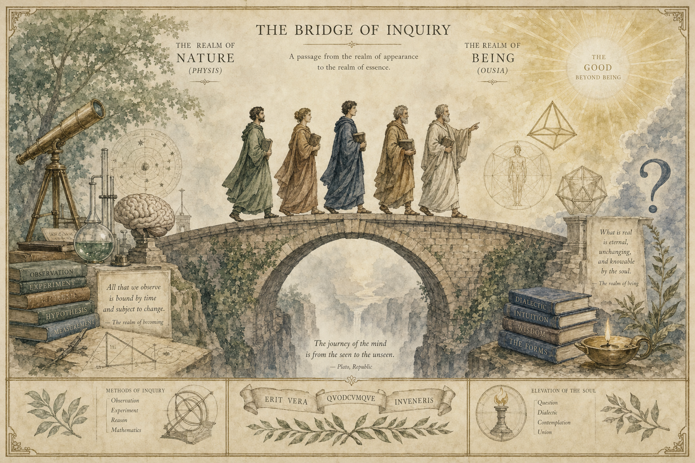
Ilustración para el Chapter 1: Introduction – Bridging Evidence and Metaphysics
1.1 The Central Question
The question of God’s existence is one of the most enduring, contested, and consequential in human thought. Across millennia, philosophers, theologians, and scientists have approached it from multiple angles—ontological, cosmological, moral, and experiential. In contemporary discourse, however, the debate often suffers from fragmentation. On one hand, philosophical and scientific evidences are assembled in a piecemeal fashion, typically resulting in isolated arguments without a unifying theoretical architecture. On the other, metaphysical theologies are developed with insufficient attention to empirical constraints or analytic clarity. This book attempts to bridge these two domains by integrating probabilistic evidential modeling and a rigorous informational-theological framework, offering a coherent, testable, and philosophically substantial model of theism.
This work is not an apologetic in the traditional sense. It is a formal investigation into whether a rational agent, given access to the best interdisciplinary evidence available and using defensible probabilistic and metaphysical reasoning, would conclude that God—understood as an eternal, rational, and informationally generative being—exists. We seek not only to determine whether this is probable but also to explore why the universe, mind, morality, and mathematics bear marks that seem to point toward an informational source beyond themselves.
1.2 Two Complementary Models: Probability and Information
The inquiry of this book is built on two distinct but tightly integrated conceptual models:
(1) A probabilistic model, using logistic regression and Monte Carlo simulation, that quantifies the strength of various lines of interdisciplinary evidence (cosmological, moral, biological, experiential) in relation to the likelihood that God exists.
This model has been previously developed and peer-reviewed, demonstrating that when multiple evidential vectors are integrated and properly weighted, the posterior probability of God’s existence—P(God | Evidence)—is consistently high. It utilizes standard techniques from applied statistics and decision science, showing that belief in God can be justified not merely as a leap of faith, but as a rational response to a cumulative case.
(2) An informational-theological model, rooted in the classical doctrine of Logos and extended by developments in physics, biology, information theory, and metaphysics.
In this model, God is not merely a cause among causes, but the radiant source of all structured information—the One from whom the intelligibility, order, and meaning of the universe flows. If matter is structured by information (as is increasingly suggested by quantum theory and digital physics), and if information is inherently rational and purposive, then this model posits that a rational divine Mind is the most coherent source of such information.
Together, these models serve dual functions:
The probabilistic model assesses how likely theism is in light of observable data.
The informational model provides an explanatory framework for why such data appears as it does under theism.
They are mutually reinforcing: the probabilistic model provides empirical grounding; the informational model provides metaphysical coherence.
1.3 Scope and Objectives
The aim of this book is to provide a rigorous interdisciplinary case for theism, articulated through both evidential and explanatory paradigms. We do not claim to prove God’s existence in a deductive or incontrovertible sense. Rather, we ask:
Do the observable features of our universe, life, and mind make more sense under theism than under atheism or naturalism?
Can we structure these considerations into a formal probabilistic framework that respects both epistemic humility and analytic precision?
Does a unifying metaphysical model—God as the source of radiated information—make disparate evidences convergent rather than coincidental?
This book answers these questions through a synthesis of scientific data, philosophical reasoning, and formal modeling, seeking to advance the academic discourse on natural theology.
1.4 Methodological Foundations
Interdisciplinarity with Rigor
This investigation draws from multiple disciplines: cosmology, philosophy of religion, theoretical physics, neuroscience, information theory, meta-ethics, and probability theory. But it does so not eclectically, but with methodical selectivity. Every variable in our logistic model is drawn from well-established philosophical arguments (e.g. fine-tuning, consciousness, moral objectivity), and every interpretation in the informational model is grounded in published scientific or metaphysical theory (e.g. Wheeler’s “it from bit,” Penrose’s entropy calculation, Tononi’s integrated information theory).
Probabilistic Justification
In a Bayesian spirit, our logistic model evaluates God’s existence as a hypothesis that can be updated in light of diverse evidences. Using Monte Carlo simulation, we compute the distribution of P(God) based on ranges for each evidential coefficient derived from the literature. This approach accommodates uncertainty while revealing the robustness of the cumulative case.
Metaphysical Coherence
Our informational-theological model addresses a complementary question: If God exists, what kind of God explains the evidence? By reinterpreting each variable through the lens of divine information—God as the radiant source of order, meaning, and rationality—we aim to show that the evidences are not merely supporting a claim, but reflecting a coherent metaphysical structure.
1.5 Why Now?
Recent developments in multiple disciplines make this an opportune moment for such a synthesis:
Physics increasingly points toward information as a fundamental constituent of reality. John Wheeler’s proposal that “every it derives from bit” echoes the ancient theological intuition that the world is formed by the Word (Logos).
Cosmology continues to uncover fine-tuning in constants and initial conditions, strengthening design-like inferences.
Neuroscience and philosophy of mind expose the inadequacies of physicalist theories of consciousness, reviving the relevance of mind-based ontologies.
Ethics and moral psychology provide strong empirical support for the universality of certain moral intuitions, despite the lack of ontological grounding in secular worldviews.
Information theory and systems biology frame life not as mere matter but as functionally organized, encoded instruction, inviting teleological interpretations.
Amid this convergence, theology has an opportunity—not to retreat from science, but to re-enter the conversation by proposing a model that is both conceptually deep and evidentially serious.
1.6 Thesis Statement
The central thesis of this work is that:
The probability and structural nature of our universe, life, and mind are best explained by the existence of a personal, rational, and informationally generative God—a being whose essence is to inform reality with intelligibility, moral structure, and teleological order.
In formal terms:
The posterior probability of theism given the cumulative evidence, P(God | Evidence), is demonstrably high under a properly calibrated logistic model.
The explanatory power of theism is heightened when God is understood not merely as a cause or designer, but as the radiant source of all information: mathematical, biological, moral, and noetic.
This book will develop both dimensions—probability and metaphysics—in parallel and in integration, arguing that theism is not only probable, but illuminating.
1.7 Chapter Preview
The chapters that follow are organized into three parts:
Part I (Chapters 2–4): Theoretical foundations. We trace the historical, philosophical, and scientific background necessary for both models, grounding our inquiry in both tradition and contemporary scholarship.
Part II (Chapters 5–9): Construction of the probabilistic model. Each chapter addresses a different evidential variable—fine-tuning, moral realism, consciousness, evil, biological complexity—and develops a formal logistic model that integrates them. Chapter 9 presents the Monte Carlo simulation and the cumulative results.
Part III (Chapters 10–14): The informational-theological model. We reinterpret each evidential domain as a signal of God’s informational radiance, culminating in a synthesis of evidence and metaphysics, and concluding with reflections on theology, epistemology, and future inquiry.
1.8 Concluding Remarks
This book is written for scholars who are dissatisfied with simplistic arguments, with either facile atheism or fideistic theism. It is for those who demand that beliefs about God not only be existentially meaningful, but epistemically justified.
By quantifying the strength of classical and contemporary arguments and by offering a coherent ontological framework—one where God is the Logos, the divine generator of information—we offer a model that is intellectually rigorous, theologically rich, and worthy of serious academic engagement.
Let us now begin the journey of reexamining the structure of reality—from the probability of God’s existence, to the possibility that every structure, value, and thought is, at root, a message from Mind.
References (Harvard Style) – Chapter 1
Aquinas, T. (1265–1274). Summa Theologiae. Translated by the Fathers of the English Dominican Province (1920). Available at: https://www.newadvent.org/summa (Accessed: 6 May 2025).
Augustine (2002). On the Trinity. Translated by Edmund Hill. Brooklyn, NY: New City Press.
Barrow, J.D. (2007). New Theories of Everything: The Quest for Ultimate Explanation. Oxford: Oxford University Press.
Bostrom, N. (2003). ‘Are You Living in a Computer Simulation?’, Philosophical Quarterly, 53(211), pp. 243–255.
Chalmers, D. (1996). The Conscious Mind: In Search of a Fundamental Theory. Oxford: Oxford University Press.
Collins, F.S. (2006). The Language of God: A Scientist Presents Evidence for Belief. New York: Free Press.
Craig, W.L. (2013). Reasonable Faith: Christian Truth and Apologetics. 3rd ed. Wheaton, IL: Crossway.
Davies, P. and Gregersen, N.H. (eds.) (2010). Information and the Nature of Reality: From Physics to Metaphysics. Cambridge: Cambridge University Press.
Dretske, F. (1981). Knowledge and the Flow of Information. Cambridge, MA: MIT Press.
Einstein, A. (1954). Ideas and Opinions. New York: Crown Publishers.
Floridi, L. (2011). The Philosophy of Information. Oxford: Oxford University Press.
Galileo Galilei (1623/1957). The Assayer (Il Saggiatore). In: Drake, S. (ed.) Discoveries and Opinions of Galileo. New York: Doubleday Anchor.
Haught, J.F. (2010). ‘Information, Theology, and the Universe’, in Davies, P. and Gregersen, N.H. (eds.) Information and the Nature of Reality. Cambridge: Cambridge University Press, pp. 293–306.
Jeans, J. (1937). The Mysterious Universe. Cambridge: Cambridge University Press.
Lloyd, S. (2006). Programming the Universe: A Quantum Computer Scientist Takes On the Cosmos. New York: Knopf.
Polkinghorne, J. (1998). Science and Theology: An Introduction. Minneapolis, MN: Fortress Press.
Shannon, C.E. (1948). ‘A Mathematical Theory of Communication’, Bell System Technical Journal, 27(3), pp. 379–423.
Swinburne, R. (2004). The Existence of God. 2nd ed. Oxford: Oxford University Press.
Tegmark, M. (2014). Our Mathematical Universe: My Quest for the Ultimate Nature of Reality. New York: Alfred A. Knopf.
Wheeler, J.A. (1990). ‘Information, Physics, Quantum: The Search for Links’, in Zurek, W.H. (ed.) Complexity, Entropy, and the Physics of Information. Redwood City, CA: Addison-Wesley, pp. 3–28.
Wigner, E.P. (1960). ‘The Unreasonable Effectiveness of Mathematics in the Natural Sciences’, Communications on Pure and Applied Mathematics, 13(1), pp. 1–14.
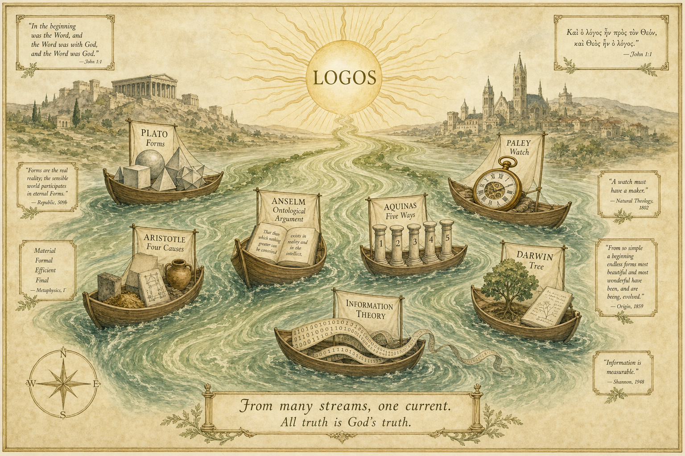
Ilustración para el Chapter 2: Historical Perspectives – The Language of Nature and the Divine
Pythagoras and the Mathematics of Cosmic Harmony
Detail of Raphael’s School of Athens (1509–1511), depicting Pythagoras teaching with a tablet of musical ratios. Pythagoras and his followers saw numerical harmony as fundamental to the cosmos.
In the 6th century BCE, Pythagoras of Samos and the Pythagorean school introduced the idea that nature is intrinsically mathematical and intelligible. The Pythagoreans held that “numbers were at the heart of everything”, constructing a new view of the cosmos founded on numeric relationships. They famously explored the correspondence between musical harmonies and numerical ratios, positing that the celestial bodies move according to mathematical intervals – a doctrine later termed the “harmony of the spheres”. In this view, the structure of reality was not chaotic but instead woven by quantitative ratios and patterns. This early marriage of mysticism and mathematics implied that to understand nature was to discern the numerical language set in place by a divine principle. Pythagorean thought sacralized mathematics: number, geometry, and harmony were seen as the very language of the divine that gave form to the cosmos. This legacy set the stage for later philosophers who likewise contended that the order of the natural world reflects a deeper rational or mathematical design.
Plato’s Demiurge and the Geometric Order of the Cosmos
Building on Pythagorean insights, Plato (427–347 BCE) asserted that the universe is the product of a divine intelligence that imposes mathematical order. In his dialogue Timaeus, Plato describes a cosmic Craftsman (Demiurge) who fashions the world according to eternal forms or ideas, using geometric construction as the blueprint of creation. Each of the classical elements, for example, is associated with one of the perfect Platonic solids (earth with the cube, fire with the tetrahedron, etc.), suggesting that matter itself is governed by mathematical form . This reflects Plato’s conviction that the world’s beauty and order are rooted in an intelligible structure. Later interpreters even attributed to Plato the saying that “God geometrizes continually”, encapsulating the view that divine reason works through geometry. In Platonic philosophy, the cosmos is imbued with logos – a rational principle or word. The term logos in Greek means “reason” or “plan,” and Plato saw the logos as the link between the divine and the physical order. Through the logos, the forms and mathematical truths in the mind of God become imprinted on the material world, “ordering it and giving it form and meaning” . Thus, for Plato, nature’s intelligibility was no accident; it was the result of a transcendent intellect employing the language of mathematics to craft a meaningful and ordered universe.
Aristotle and the Intelligible Structure of Nature
Aristotle (384–322 BCE), though less overtly mathematical than Plato, reinforced the belief that nature is comprehensible through rational inquiry. He emphasized that every natural phenomenon has inherent causes and principles, rejecting the notion that the cosmos is a product of mere chance. According to Aristotle, “none of the products of Nature are due to chance”, for what happens by chance occurs irregularly, whereas the phenomena of nature recur with order and regularity . He argued that if each part of the universe shows orderly regularity, the universe as a whole cannot be the result of accident . Instead, Aristotle saw purpose (telos) and form in all things: every organism and object has an end or function guided by a form, which our intellect can grasp through observation and reasoning. In founding formal logic and the empirical sciences of his time, Aristotle demonstrated confidence that human reason mirrors the rational structure of nature. He posited a prime mover – an unmoved divine intellect – as the ultimate cause of cosmic order, essentially a perfect mind thinking only of itself (νόησις νοήσεως, “thought thinking itself”). While Aristotle’s God is not a creator in the temporal sense, it is a rational principle that eternally inspires the organized motion of the cosmos. This Aristotelian vision of a teleological and law-governed nature deeply influenced later medieval thinkers, who integrated it with the notion of a creator God. Aristotle thus contributed to the idea that the universe is a coherent, intelligible system – one that invites philosophical and scientific investigation into its rational laws.
Hellenistic Logos and Early Theological Synthesis
Between classical Greek philosophy and medieval theology came the Hellenistic synthesis of the concept of logos – a bridge between divine reason and the natural world. The Stoic philosophers (3rd century BCE) taught that a logos spermatikos, a “seminal reason,” pervades the universe, structuring it according to divine rationality. They identified the logos with providence, nature, or even a fiery spirit pervading all matter – effectively calling it the soul of the universe. This Stoic logos was an immanent ordering principle, ensuring that the cosmos is a rational, law-like whole. Meanwhile, in the Jewish philosophical tradition of the first century CE, Philo of Alexandria blended Greek logos theory with biblical ideas. Philo identified Plato’s forms with the “Logos of God,” the thoughts of God by which the world was formed . When Genesis describes God creating through speech (“Let there be light”), Philo understood this as the logos acting as divine speech or blueprint . This interpretation directly influenced early Christianity. In the opening of the Gospel of John (c. 1st century CE), Jesus Christ is identified as the Logos: “In the beginning was the Word (Logos), and the Word was with God, and the Word was God.” Here the Logos is both the eternal divine reason and the agent through whom “all things were made” (John 1:1-3). Early Christian thinkers like Justin Martyr and Augustine inherited this notion that the world was created through the divine Word, making the natural order a reflection of the mind of God. Augustine taught that the eternal “reasons” or forms by which God created are the divine ideas, and that the truths we grasp (for example, mathematical truths) reside in the eternal Logos, the Divine Mind. Thus, Greek metaphysical concepts of a rational principle structuring reality were absorbed into Judeo-Christian theology: creation itself was seen as the product of the Divine Logos, making the study of nature a way to apprehend the mind of God. This theological tradition set a powerful precedent for viewing scientific exploration as “thinking God’s thoughts after Him,” an idea that would recur in various forms up to the modern era.
Thomas Aquinas and the Medieval Synthesis of Faith and Reason
By the High Middle Ages, the convergence of Greek philosophy and Christian theology reached a peak in the work of St. Thomas Aquinas (1225–1274). Aquinas, a Dominican scholar, fully integrated Aristotle’s vision of an orderly nature with the Christian doctrine of a rational Creator. In Aquinas’s view, the order and intelligibility of creation stem directly from God’s rationality. He argued that all things have “truth” insofar as they fulfill the idea in the divine intellect by which they were made . In other words, created things are true (and intelligible) by conforming to God’s idea of them . Aquinas taught that God eternally contemplates the divine ideas (which Neoplatonic Christians equated with the Logos or with God’s intellect), and those ideas serve as the exemplars for creation. The world is thus like a book written by God, where each creature and natural law expresses a fragment of the divine mind. This view supported a robust confidence in reason: since the same God who authored Scripture also authored nature, faith and reason cannot ultimately conflict. Aquinas famously asserted that by using reason one can arrive at truths about God (e.g. the existence of a first cause or ordering intelligence) from observing the natural world – an approach known as natural theology. Moreover, Aquinas was influenced by the works of great Islamic philosophers such as Ibn Sina (Avicenna) and Ibn Rushd (Averroes), who had preserved and commented on Aristotle. These thinkers, working in the Islamic Golden Age (9th–12th centuries), also proclaimed that the cosmos operates by a rational order reflecting the will or intellect of God. Avicenna, for instance, described God as the Necessary Existent whose overflowing intellect emanates the hierarchical order of the cosmos, culminating in the Active Intellect that governs the sublunary world. Such ideas harmonized with Aquinas’s view that secondary causes (natural laws, forces, purposes) are real and operative, but depend on the Primary Cause (God) who endows them with causal power and direction. In scholastic theology, this became the doctrine of eternal laws (rationes aeternae): the world is intelligible because it unfolds according to the logical blueprint in the mind of its Creator. By the 13th century, then, a comprehensive philosophical theology was in place: creation reflects divine rationality in its very structure, and human beings (made in God’s image) are equipped with intellects capable of reading that structure. This medieval synthesis sanctified the pursuit of knowledge about nature, laying an epistemological foundation for the rise of modern science within a religious worldview.
Galileo Galilei: “Mathematics is the Language of Nature”
In the 17th century, the Scientific Revolution dramatically advanced the notion that nature is written in a mathematical language. Galileo Galilei (1564–1642) was a pivotal figure in this shift. A devout Catholic and brilliant astronomer, Galileo championed the idea that the book of nature, like Holy Scripture, was authored by God – but in a different language. In his 1623 work Il Saggiatore (The Assayer), Galileo famously wrote: “Philosophy is written in this grand book – I mean the universe – which stands continually open to our gaze, but it cannot be understood unless one first learns to comprehend the language in which it is written. It is written in the language of mathematics, and its characters are triangles, circles, and other geometric figures…” . With these words, Galileo asserted that the deep structure of physical reality is mathematical. Only by grasping quantitative relationships and geometric laws can one decipher nature’s meaning. Galileo’s insistence on mathematical intelligibility went hand in hand with his empirical observations (such as the phases of Venus or the mountains on the Moon) which challenged traditional Aristotelian cosmology. He held that God endowed us with senses and a rational mind not to be ignored, but to be used to understand creation’s order . This viewpoint sometimes brought him into tension with literalist scriptural interpretations, but Galileo maintained that truth cannot contradict truth – properly interpreted Scripture and correctly reasoned science must agree, since God is the author of both. His metaphor of the “book of nature” influenced generations of scientists. Galileo showed by example that mechanics and astronomy, when expressed in mathematical form (e.g. his laws of falling bodies, or the parabolic trajectories of projectiles), reveal a stunning cosmic order. By treating nature’s phenomena as decipherable through mathematics, Galileo helped inaugurate classical physics – and in doing so, he strengthened the conviction that behind nature’s patterns lies the mind of a Divine Mathematician.
Johannes Kepler: Harmonies of the World and the Mind of the Creator
Johannes Kepler (1571–1630), a German astronomer and devout Lutheran, took Galileo’s mantra a step further by uncovering precise mathematical laws governing planetary motion. Kepler, driven by a profound belief that God had designed the cosmos with mathematical harmony, discovered that planets move in ellipses and that their speeds vary in relation to their distance from the Sun (encapsulated in his three laws of planetary motion). In his work Harmonices Mundi (1619), Kepler sought to demonstrate that the solar system is constructed on a musical-mathematical framework. He wrote that the human mind, “made in the image of the divine mind,” carries within it the same geometric ideas by which the Creator ordered the world . This allowed humans to resonate with and comprehend the cosmic design. Kepler explicitly linked his astronomical discoveries to the idea of a rational creator: “the movements of the planets, structured by the supreme intelligence of God, must be interpreted in the light of the harmonic beauty at the base of creation” . In a remarkable flourish, Kepler described astronomers as “priests of nature” who “perform astronomical calculations to interpret the Creator’s own thoughts” . Indeed, after formulating his third law (relating the squares of planets’ orbital periods to the cubes of their semi-major axes), Kepler offered praise to God for letting him “think Thy thoughts after Thee.” In his view, every law of planetary motion was an instance of divine geometry. Kepler’s blend of piety and mathematics illustrated the evolving harmony between science and faith in the early modern period: the better the cosmos was understood mathematically, the more it seemed like an elegant, law-abiding work of deliberate intelligence. The ancient Pythagorean dream of a musical cosmos was now given concrete expression in Kepler’s laws, and these laws implicitly celebrated the Logos – the divine logic – that makes the universe an orderly symphony.
Isaac Newton: Universal Law and a Divine Lawgiver
The culmination of the 17th-century scientific worldview came with Sir Isaac Newton (1643–1727), whose achievements cemented the conviction that the universe is governed by universal mathematical laws. Newton’s Philosophiae Naturalis Principia Mathematica (1687) formulated the laws of motion and universal gravitation, demonstrating that the same mathematics could explain apples falling to Earth and planets orbiting the Sun. Newton, who was deeply religious (albeit unorthodox in some theology), saw his laws as revealing the clockwork precision of God’s creation. In the General Scholium added to later editions of the Principia, Newton famously affirmed the need for a divine intelligence behind natural law. After marveling at the elegant order of the solar system, Newton wrote: “This most beautiful system of the sun, planets and comets, could only proceed from the counsel and dominion of an intelligent and powerful Being.” . He argued that the stability of the planetary system (with planets orbiting in one direction on roughly the same plane) was not due to chance but to divine providence. Newton’s God was not only the initial designer of the mechanical universe but also its sustainer – he spoke of God’s “sensorium” pervading space, and he believed periodic divine adjustments might be needed to maintain cosmic order. For Newton, the mathematical laws of nature (like gravity’s inverse-square law) were a subset of God’s dominion – a reflection of the consistent way the Creator chooses to govern the material world. The very concept of “laws of nature” in this period was a theological adaptation: just as a king imposes laws on a kingdom, God imposes orderly laws on matter. Newton’s synthesis of calculus, mechanics, and astronomy demonstrated unprecedented unification and intelligibility in nature. It strongly vindicated the idea that the language of mathematics truly penetrates to the workings of the universe, and it suggested to Newton and many of his contemporaries that the Author of nature was the ultimate mathematician-lawgiver. The success of Newtonian physics thus reinforced the classical theological view: nature’s rational structure is best explained by reference to a rational divine Architect.
James Clerk Maxwell: Unity of Physical Laws and the Mind of God
The 19th century continued the trajectory of discovering unifying mathematical frameworks in nature, often guided by an almost religious faith in the coherence of creation. James Clerk Maxwell (1831–1879), a Scottish physicist, devout Christian, and one of the greatest scientists of his era, provided another leap in understanding the “language” of nature. Maxwell’s set of equations unified electricity, magnetism, and light into a single theory of the electromagnetic field. This unification – showing that electric and magnetic phenomena are governed by one elegant system of differential equations – revealed a deep simplicity in physical reality. Maxwell, who had been raised to “look up through Nature to Nature’s God” , regarded the comprehensibility of the world as an expression of God’s design. For Maxwell, the fact that disparate phenomena could be described by one mathematical theory was not just a lucky accident; it was an indicator of underlying divine ordination. He was influenced by Faraday’s idea that God works through field laws in nature , and he carried this forward by formulating those laws explicitly. Maxwell was also a staunch proponent of absolute truth in science, reflecting his theological conviction that God’s creation is orderly and truthful. He once wrote a poetic exhortation to fellow scientists: “Let us praise Him who hath ordered all things number, weight, and measure,” echoing the biblical wisdom literature (Wisdom 11:20) that celebrates the Creator’s use of mathematical principles. By the end of the 19th century, Maxwell’s contributions – alongside those of other scientifically-minded Christians like Michael Faraday – had solidified a picture of nature as profoundly unified. The electromagnetic spectrum, spanning from radio waves to visible light, testified to a hidden order awaiting human discovery. Scientists of this period often felt that in uncovering such laws they were, in a real sense, uncovering the rational blueprint of God in creation. Maxwell’s work thus served as a bridge between the classical deterministic cosmos of Newton and the newer physics to come, all under the guiding conviction that the universe speaks in one language of truth – the language of mathematics – bestowed by its Creator.
Albert Einstein: Wonder at a Rational, Lawful Universe
The early 20th century brought revolutionary changes to physics with Albert Einstein (1879–1955), yet it also brought a renewed philosophical reflection on the uncanny effectiveness of mathematics. Einstein’s theories of relativity (1905, 1915) and contributions to quantum theory fundamentally altered our conception of space, time, and matter. Despite – or rather because of – these deep shifts, Einstein frequently expressed amazement that human beings can understand the universe at all. He spoke of a sense of awe at the rationality of nature, often using quasi-theological language. Famously, Einstein remarked that “the most incomprehensible thing about the universe is that it is comprehensible.” In other words, it is utterly surprising that abstract thought and mathematics – products of the human mind – so perfectly map onto the external physical world. Einstein, who believed in Spinoza’s idea of God (an abstract, intellectual order rather than a personal deity), maintained that behind the laws of nature is a high degree of order which we can grasp. He referred to this as the “miracle” of the intelligibility of the world. In Einstein’s view, science was itself a kind of cosmic religious feeling, albeit impersonal: a humble submission to the rational beauty manifested in the laws of physics. He once quipped “God does not play dice” – a rejection of pure indeterminism – highlighting his belief that even quantum randomness must be underlain by deeper law. For Einstein, the success of general relativity (with its elegant geometric description of gravity) or the unexpected power of mathematics in physics was evidence that reality is structured in a logical way independent of us. He did not attribute this order to a providential Creator in the traditional sense, yet he often borrowed theological metaphors (calling the laws “God’s thoughts”). Regardless of Einstein’s personal theology, his legacy underscored a key point in the historical tradition: the conviction that the universe embodies a rational structure, which is mirrored in the human capacity to do mathematics and physics. This conviction, stretching back to Pythagoras and given new life by Einstein, continues to inspire the quest for a unified theory and the sense that in doing science we are uncovering a pre-existing cosmic logic.
Kurt Gödel: Mathematics, Logic, and the Question of the Divine
In the realm of mathematics and logic, Kurt Gödel (1906–1978) added a fascinating twist to the discourse on reason, truth, and God. Gödel is best known for his Incompleteness Theorems (1931), which showed that any sufficiently powerful formal mathematical system cannot prove all truths about arithmetic: there will always be true statements that are unprovable within the system. This revelation had profound philosophical implications. It suggested that the scope of truth exceeds the bounds of formal proof, hinting that the human intellect can see truths (in this case mathematical truths) that no finite set of axioms can capture. Some interpreted this as evidence that mathematical truth has an almost transcendental character, as if residing in a realm of ideas that surpass any mechanical procedure – a view very much in line with Platonic realism. Gödel himself was a staunch Platonist about mathematics, believing that numbers and sets have an objective existence in some ideal realm. Strikingly, Gödel was also a theist who entertained deep metaphysical questions. He even formulated a modern version of the ontological argument for God’s existence using modal logic (published posthumously), attempting to show that if God’s existence is possible, then God must exist. Gödel’s belief in an objective mathematical and logical order coalesced with his belief in God as the ultimate ground of all being and truth. While his ontological proof was a formal exercise, it reflected his intuitive conviction that the existence of a highest logical or metaphysical principle (God) lends coherence to all lesser truths. In historical context, Gödel stands as a unique bridge: he carried forward the tradition of seeing reason and logic as pointing toward the divine (recalling the Logos theology and rationalist arguments of earlier eras) but did so through the idiom of modern symbolic logic. His work subtly underscored the idea that the human mind can access profound truths – mathematical and philosophical – that hint at a higher order of reality. For a scholarly book on the probability and metaphysical structure of God’s existence, Gödel’s insights provide a reminder that even in the foundations of mathematics we encounter mystery and infinity, inviting speculation that the ultimate foundation of order (perhaps a divine mind) lies beyond what any finite logical system can contain.
Roger Penrose: Mind, Mathematics, and an Information-Rich Cosmos
In the late 20th and early 21st centuries, thinkers like Sir Roger Penrose (b. 1931) continued exploring the uncanny relationship between mathematics, consciousness, and physical reality. Penrose, a mathematician-physicist, is well-known for his adherence to mathematical Platonism – the belief that mathematical truths inhabit an abstract realm as real as the physical world. He often describes three “worlds”: the physical world, the mental world, and the Platonic world of mathematical forms, and ponders their deep interconnections. Penrose has noted that when we do mathematics, it feels as though we “make contact with Plato’s world of mathematical concepts” , discovering rather than inventing truths. He finds it astonishing that the internal workings of our conscious minds (the mental world) can perceive the Platonic world of math, which in turn so perfectly describes the external physical world (through laws and equations). This “closed circle of consistency”, as Penrose calls it, implies that the universe’s laws gave rise to conscious beings who can in turn comprehend those very laws . Penrose has even mused that “the universe has a purpose – it’s not there just somehow by chance” , suggesting that the remarkable fit of mathematics to the cosmos is not an accident but points to meaning. While Penrose himself stops short of endorsing traditional theism (he speculates in more abstract terms), his ideas echo the longstanding tradition: the structure of the cosmos is mathematically meaningful and somehow entwined with mind, hinting at an underlying intentionality. His explorations of quantum physics and consciousness (for example, the Orch-OR theory with Stuart Hameroff, proposing quantum processes in the brain) stem from a refusal to accept that mind and reason are mere by-products of chaos. In Penrose’s perspective, mathematical beauty and truth act almost as guideposts to understanding reality – a stance reminiscent of earlier philosophers who equated mathematical elegance with divine handiwork. Thus, Penrose’s modern work carries forward the banner of intelligibility: the belief that if we peel back enough layers, we might find a unifying algorithm or principle (perhaps informational in nature) that explains why the universe is as marvelously coherent as it is. His openness to the idea that mind is more than computation and that physics may require new non-algorithmic principles to account for consciousness also harkens back to Gödel’s implication that mechanism has its limits – possibly pointing to something transcendent in human rationality.
John Archibald Wheeler: Information, Participation, and the Divine Logos Reimagined
At the frontier of theoretical physics and cosmology, John Archibald Wheeler (1911–2008) introduced revolutionary ideas that reinterpreted the “language” of nature in terms of information. Wheeler, a prominent American physicist, coined phrases like “black hole” and helped develop nuclear fission theory, but later in his career he turned to deeply philosophical interpretations of quantum mechanics and cosmology. Perhaps his most famous aphorism is “It from Bit”, encapsulating his proposal that physical reality (“it”) fundamentally arises from information-theoretic processes (“bit”). As Wheeler put it: “It from bit symbolizes the idea that every item of the physical world has at bottom… an immaterial source and explanation… that all things physical are information-theoretic in origin” . This bold claim suggests that matter and energy are not the most basic constituents of the universe; rather, bits of information – the answers to yes/no questions, the binary choices – underpin existence. In Wheeler’s view, the universe is a kind of giant information system, and intriguingly, the observer plays a key role (“participatory universe”) in bringing about concrete reality from quantum potentiality. While Wheeler’s ideas were scientifically motivated (arising from puzzles in quantum physics like the role of measurement), they carry metaphysical overtones resonant with the historical theme of a rational cosmos. If the universe is fundamentally information, one is reminded of the biblical notion that reality originates from the Word (Logos) of God – an ancient idea now reframed in terms of bits and quantum information. Wheeler himself, though not preaching theology, gave concepts that theologians and philosophers have eagerly picked up: an informational foundation of reality aligns well with viewing God as the ultimate source of all information and meaning (the divine mind in which all binary distinctions are grounded). Additionally, Wheeler’s “participatory universe” recalls the idea that conscious minds (made in the image of the Creator in religious terms) are integral to the unfolding of the cosmos – echoing the anthropic principle that the universe is strangely fit for observers. Modern physics and cosmology influenced by Wheeler are increasingly comfortable with the notion that information is an objective entity (as seen in quantum computation, entropy and black hole information paradox discussions, etc.). In a sense, this is a return to a new form of Pythagoreanism: not that “all is number” per se, but “all is information,” and number/math is how we describe that information. Wheeler’s legacy, therefore, brings the historical survey full circle in a contemporary key. The Logos doctrine – the universe as the product of a rational word or code – finds a 21st-century expression in the idea that physical reality might be the output of a cosmic informational program. This modern twist prepares us to consider theological models where God is seen as the ultimate information source or cosmic programmer, who speaks reality into being in the language of quantum bits and logical structures.
Conclusion: From Numerical Harmony to Informational Theology
Surveying these historical perspectives, we observe a continuous and evolving thread: the conviction that nature is intelligible because it is grounded in a form of divine rationality or language. Pythagoras’s reverence for numerical harmony, Plato’s geometric demiurge, Aristotle’s teleological order, the Hellenistic and religious identification of Logos as the rational structure of reality, Aquinas’s doctrine of creation according to divine ideas, Galileo’s mathematical book of nature, Kepler’s harmonic astronomy, Newton’s divine laws, Maxwell’s unified fields, Einstein’s wonder at comprehensibility, Gödel’s logical transcendence, Penrose’s Platonic realism, and Wheeler’s it-from-bit — each, in its own way, testifies that the world is not a random jumble but a meaningful cosmos. Each thinker contributed a layer to the integration of divine intelligibility and natural order. Over millennia, this idea has been refined: from seeing mathematical patterns as sacred, to positing laws of nature as thoughts of God, to conceiving information as the bedrock of reality, the language of nature has always been seen as a clue to the nature of ultimate reality.
This rich tradition provides a powerful backdrop for contemporary discussions on the probability and metaphysical structure of God’s existence. It suggests that any model of God as the source of cosmic structure – even a modern informational-theological model – is not a novel imposition but the natural heir to a long lineage of thought. If the universe indeed behaves like information or a code, then it aligns with the ancient intuition of a Logos that in the beginning “was with God and was God.” The informational-theological model of God envisions God as the ultimate architect of cosmic information, the mind in which the logical patterns of the universe reside. The historical perspectives we have reviewed lend this model both philosophical and theological support. They show that some of the greatest minds in philosophy and science found it reasonable, even irresistible, to think of the cosmos as “written” by a transcendent intelligence in a meaningful script. Whether that script is numbers, geometric forms, physical laws, or bits, the interpretation is the same: our search for order in nature is a search for the mind of God. This chapter has traced the evolution of that idea, preparing us to delve deeper into how an informational approach to theology can illuminate the age-old question of God’s existence and action in the world. The stage is now set to consider systematically how the concept of God as the source of information and meaning might unify our understanding of both cosmic order and divine purpose, standing firmly on the shoulders of giants who taught us to recognize the language of nature as the discourse of the Divine Logos.
Sources:
Britannica – Definition of Logos
Stanford Encyclopedia of Philosophy – Entry on Pythagoras
Pythagoreanism (Wikipedia) – Pythagorean view of number in cosmos
Plutarch (via Medium) – Attributing to Plato “God geometrizes continually”
Maimonides’ Guide (citing Aristotle) – Nature not product of chance
Aquinas, Summa Theologiae I q.16 – Truth in things = conforming to God’s intellect
Galileo, Il Saggiatore – Universe “written in mathematical language”
Kepler, Harmonices Mundi (Inters.org) – Human mind and geometric harmony, Creator’s thoughts
Newton, Principia (General Scholium) – Cosmic system from “intelligent and powerful Being”
Maxwell Biography (ICR) – “look up through Nature to Nature’s God” upbringing
Einstein Quote – “most incomprehensible… universe is comprehensible”
Penrose Interview/Quotes – Mind perceives Plato’s mathematical world
Wheeler, Information Physics – “It from bit… all things physical are information-theoretic in origin”
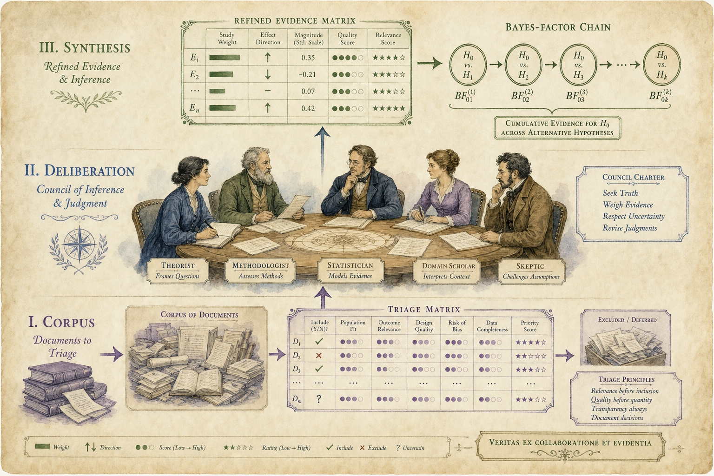
Ilustración para el Chapter 3 : Philosophical Foundations – Classical Arguments and Modern Developments
Richard Swinburne (Oxford) reformuló la teología natural como un caso acumulativo inductivo, comparable a las inferencias de la física, la historia o la detective work. En lugar de una prueba deductiva, propuso que cada fenómeno aporta probabilidad y que la evidencia positiva y negativa se combina mediante el teorema de Bayes. Su criterio de simplicidad —postular una sola sustancia con poder, conocimiento y propósito— sigue siendo central para evaluar la hipótesis informacional.
STRONG EVIDENCE La inferencia inductiva cumulativa es un método filosófico establecido; la atribución de probabilidades a hipótesis teológicas sigue siendo controvertida MIXED.
Introduction
Natural theology has long sought to demonstrate or at least evidence the existence of God through reason and observation, independent of revealed religion. Classical arguments—cosmological, ontological, teleological, and moral—form the backbone of this tradition. Each argument approaches the question of God’s existence from a different angle: explaining why anything exists at all, what the concept of a “greatest being” implies, how the order in nature points to design, or how moral truths require a foundation. In recent decades, philosophers have reformulated these arguments with modern logic and probabilistic reasoning, treating them not as infallible proofs but as evidence that can raise or lower the probability of God’s existence . At the same time, contemporary skeptics have mounted sophisticated critiques, arguing that the classical formulations have logical gaps or that modern science offers alternative explanations. In this chapter, we systematically survey each of the four classic arguments and their strongest modern developments, the major objections raised against them, and how they contribute to an overall evidential case. This will lay the groundwork for the probabilistic model of God’s existence developed in later chapters, showing how these arguments function as components in an interdisciplinary Bayesian framework for evaluating God’s existence. The epistemological status of natural theology will also be addressed – why, despite criticisms, these arguments remain relevant to scholarly discourse on God’s existence.
The Cosmological Argument – From Contingency to a First Cause
Classical Formulation (Aquinas and Leibniz): The cosmological argument is actually a family of arguments that infer from some basic fact about the cosmos to the existence of a transcendent cause or necessary being . One classical version is Aquinas’s argument from contingency (his Third Way): things in the world come into being and pass away, so their existence is not necessary. If everything were contingent in this way, Aquinas argues, then at some time nothing would have existed – yet something exists now, so there must exist a necessary being that imparts existence to contingent things . Another form is Leibniz’s Principle of Sufficient Reason (PSR) argument: there must be a sufficient reason why the world exists rather than nothing. An infinite regress of explanations among contingent things would never provide a full answer, so “the sufficient reason…must be outside of this series of contingent things…in a substance which is a necessary being bearing the reason for its existence within itself,” as Leibniz writes . In Leibniz’s famous phrasing, “Why is there something rather than nothing?” – the answer, he concludes, is a self-existent, necessary entity: God . In summary, classical cosmological arguments contend that the existence of contingent beings or the universe as a whole points beyond itself to a fundamental ground of being that exists of its own nature (and this is what theists call God) . Aquinas also offered a first-cause argument (his Second Way): observing that every caused event has a prior cause, and rejecting an infinite regress of causes, he posited an uncaused First Cause (God) . Although Aquinas himself considered such causal and contingency arguments as part of a cumulative case, their goal is deductive – to show that without a necessary first cause or necessary being, we lack a sufficient explanation for the existence of the universe.
Modern Revival – The Kalam Argument and Contemporary Support: In the 20th century, the Kalam cosmological argument was revitalized, notably by William Lane Craig. Kalam, with roots in medieval Islamic philosophy, focuses on the universe having a beginning in time. It is often formulated succinctly: (1) Whatever begins to exist has a cause; (2) The universe began to exist; therefore (3) The universe has a cause of its existence . Craig defends the causal principle in premise (1) as deeply intuitive: “to suggest that things could just pop into being uncaused out of nothing is to quit doing serious metaphysics and to resort to magic” . Modern cosmology lends some support to premise (2) – the Big Bang model implies the universe (along with physical time and space) had a beginning about 13.8 billion years ago. Craig and others argue that an actual infinite regress of past events is impossible in reality, reinforcing the idea of a first moment of time . Given these premises, the cause of the universe must be something outside time and space, enormously powerful, and with freedom of will (to spontaneously create a temporal world) – in other words, something very much like God. Aside from Kalam, contemporary philosophers have further developed contingency arguments. For example, Richard Swinburne and Alexander Pruss defend updated versions of the argument from contingency . Pruss (2006) maintains that the best explanation for the existence of any contingent reality is a necessary being that exists in all possible worlds. Craig himself often presents a Leibnizian argument from contingency alongside Kalam: “Everything that exists has an explanation either in the necessity of its own nature or an external cause; the universe is contingent (not necessary) so it must have an external cause that is a necessary being – the most plausible candidate is God” . As Craig puts it, “the most plausible explanation of the universe is God. Hence, contingent beings make God’s existence more probable than it would have been without them.” In Bayesian terms, if we consider the “fact that there is a contingent universe” as evidence, it is argued to be more likely on the hypothesis that a God exists than on the hypothesis that no God exists . In sum, modern theists contend that the mere existence of a law-bound cosmos (especially one with a finite origin) is strong evidence for a transcendent Creator or necessary foundation.
Objections and Counterarguments: Cosmological arguments have always faced the retort that they reach too far. One major objection, classically voiced by David Hume and Bertrand Russell, is: why can’t the universe just exist without any external explanation? Perhaps the chain of causation or contingency terminates with the universe itself as a “brute fact.” Russell famously argued that “the universe is just there, and that’s all,” denying that human reasoning about causes can be extrapolated to the universe as a whole . In this view, asking for an explanation of the entire cosmos might be a category mistake – we are used to explaining parts within the universe, but the universe itself might not need an explanation . A related objection, raised by Hume, is that explaining each part of a collection (each event has a cause, or each contingent thing explained by another) is sufficient; we don’t need a separate explanation for the whole collection . To demand a cause of the totality could be seen as the fallacy of composition – assuming what is true of parts must be true of the whole . Why think that because every individual thing within the universe has a cause or reason, the universe itself must have a cause or reason? The defenders reply that an aggregate of contingent things is itself contingent (it could have been otherwise or not existed), so it still stands in need of an explanation unless one rejects the intuitive Principle of Sufficient Reason entirely . Russell and others also attack the notion of a necessary being: we have no clear example of a being whose non-existence is impossible, and one might claim that for any object we can imagine it not existing . J. L. Mackie argued that we have no good reason to believe a “necessary being” is even possible, since we can conceive of each thing not existing; thus the whole idea of a being that cannot not exist is dubious . If it’s at least as plausible that necessarily-existent beings are impossible, then contingency arguments lose much of their force. Mackie further contended that the Principle of Sufficient Reason isn’t self-evident or provable – perhaps reality at the largest scale simply has no explanation and that’s not a logical contradiction we must avoid . Another common challenge, frequently posed by skeptics like Richard Dawkins, is that cosmological arguments “solve” one mystery by positing another of the same kind. If everything needs a cause or explanation, why doesn’t God need one? If the theist can say “God is just necessarily there without cause,” the atheist can say “the universe is just there without cause” . Dawkins argues that positing God as an uncaused cause raises a further question – who designed or caused God? – leading to an infinite regress unless one arbitrarily stops with God . (Classical theists respond that God is by definition uncaused and necessary, whereas the universe, composed of changeable, time-bound entities, gives no indication of being self-sufficient. In other words, the cosmological argument draws a distinction between the contingent universe and a non-contingent deity, so the question “what caused God?” mistakes the type of explanation being offered.) Modern cosmological arguments like Kalam face their own critiques: some physicists and philosophers suggest that the universe could emerge spontaneously from a quantum vacuum or that time itself may be finite but without a singular beginning in a physical sense (e.g. a quantum gravity scenario or cyclic model), undermining the straightforward need for a transcendent cause. Others point out that our intuitions about causality may not apply when we’re dealing with the beginning of the universe (since causality as we know it functions within time and space) . Despite these objections, cosmological arguments remain central in philosophy of religion. They do not prove God in a mathematical sense, but many philosophers find them persuasive to varying degrees. At minimum, they press the profound question of why there is something rather than nothing, and they argue that atheism must ultimately live with the brute fact of an unexplained universe . Whether that or a self-existent God is a more satisfying stopping point is a matter of ongoing debate. The importance for our purposes is that the cosmological argument introduces the idea of a metaphysically necessary reality as a candidate for ultimate explanation – a concept that will feed into the probabilistic model of God’s existence (as the variable of “Metaphysical Necessity”) in later chapters .
The Ontological Argument – From Idea to Reality
Classical Formulation (Anselm): The ontological argument is unique among the classical arguments in that it is a priori and deductive: it attempts to prove God’s existence using only the concept or definition of God, rather than any empirical facts. St. Anselm of Canterbury first articulated this argument in the 11th century. In his Proslogion, Anselm defined God as “that than which nothing greater can be conceived.” He then reasoned that existing in reality is greater (more perfect) than existing only in the mind. If the greatest conceivable being existed only in our mind (as an idea) but not in reality, then we could conceive of a greater being – one that does exist in reality. But that contradicts the definition of God as the greatest conceivable being. Therefore, God must exist in reality, not just in the understanding. In short, Anselm argues that the very concept of a maximally great, perfect being implies that such a being exists; otherwise it wouldn’t truly be maximally great . This clever argument fascinated and perplexed philosophers for centuries. It purports to derive existence from essence – to show that failing to exist would be an imperfection for a being defined as supremely perfect. Variations of the ontological argument were later proposed by René Descartes (who argued that existence is part of the essence of a supremely perfect being, just as the nature of a triangle includes having three angles) and Leibniz (who attempted to refine the argument by first asserting that a “supremely perfect being” is a coherent concept, thus possibly existing) .
Modern Reformulation (Modal Logic – Plantinga): In the 20th century, Alvin Plantinga famously offered a modal ontological argument that revitalized Anselm’s reasoning using the tools of modern modal logic (the logic of possibility and necessity). Plantinga’s version can be outlined as follows: (1) It is possible that a maximally great being exists. (By “maximally great” we mean a being that has maximal excellence in every possible world; maximal excellence includes qualities such as omniscience, omnipotence, and moral perfection .) (2) If it is possible that a maximally great being exists, then there is at least one possible world in which such a being actually exists. (3) If a maximally great being exists in some possible world, then by definition of maximal greatness, it exists in every possible world (because a truly maximally great being cannot be absent from any possible reality – necessary existence is itself a great-making property ). (4) Therefore, a maximally great being exists in the actual world. In modal logic terms, Plantinga’s key move is that from “possibly necessarily X” he concludes “necessarily X” (this is valid in standard S5 modal logic, where if something is possibly necessary, it is necessary) . Thus, if God’s existence is even possible (in the broad metaphysical sense), it follows that God exists necessarily and hence actually. Plantinga’s formulation differs from Anselm’s in that it avoids some of the earlier pitfalls (like treating existence as a straightforward predicate) and instead hinges on the modal status of God. It doesn’t try to prove directly that God exists, but rather that if God’s existence is not impossible, then God must exist. Other modern developments include Kurt Gödel’s ontological argument (a more formal axiomatic proof using modal logic, published posthumously), which attempts to define “positive properties” and from them deduce the necessary existence of God. In fact, the ontological argument has even been analyzed with automated theorem provers in recent years, confirming its internal logical validity – though of course soundness (the truth of its premises) remains controversial . These modern efforts show how advances in logic have given the ontological argument new sophisticated forms. The modal ontological argument, in particular, has the merit of clarity: it shows that the crux is the premise “God’s existence is possible.” Accept that, and the rest follows logically. Reject it, and one is basically saying “God is impossible” (which itself is a strong claim requiring justification). This standoff is why, despite its ingenuity, the ontological argument seldom converts a nonbeliever – the skeptical view is often that while God’s existence isn’t a formal contradiction, one isn’t obliged to grant it genuine metaphysical possibility either. Nevertheless, Plantinga’s work did succeed in moving the ontological argument from something many dismissed as a medieval curiosity to a topic of serious philosophical inquiry (his work and others showed the argument’s structure is more subtle than the caricature of “defining God into existence”).
Critiques and Counterarguments: The ontological argument has been controversial from the start. One of the earliest critics was Anselm’s contemporary, Gaunilo of Marmoutiers, who wrote a parody argument: imagine a “most perfect island” – by Anselm’s reasoning, such an island must exist, since an island that exists in reality is greater than one that exists only in the mind. Of course, we know no matter how perfectly we define an island, that by itself cannot guarantee its existence. Gaunilo’s point was that Anselm’s reasoning could seemingly prove too much, indicating a flaw in the logic. Anselm countered that his argument works only for a necessary being like God, not for contingent things like islands (which have no intrinsic maximum of perfection). Centuries later, Immanuel Kant delivered a famous objection: “Existence is not a predicate.” By this Kant meant that “existence” isn’t a property that an entity either has or lacks in the way it has other properties (like being powerful or benevolent). Saying “X exists” doesn’t add any attribute to the concept of X; it only claims that such an entity is instantiated in reality. Therefore, Kant argued, one cannot include “existence” in the definition of a thing (even a greatest possible thing) and rightfully say that thing must exist . In Kant’s view, Anselm mistakenly treated existence as a property or perfection, whereas it’s actually a prerequisite for having any properties at all. This critique is widely regarded as having undermined Descartes’ version of the ontological argument and is one reason modern formulations shifted to modal logic rather than talking of existence as a predicate. Contemporary philosophers such as Graham Oppy have analyzed ontological arguments extensively and generally find them unconvincing unless one is already sympathetic to their premises. Oppy notes that the modal ontological argument is formally valid, but if one does not already accept the possibility premise, the argument doesn’t compel assent . In effect, the ontological argument often preaches to the choir: believers may find it elegant and even confirming of their belief that God’s existence is necessary, while non-theists remain unmoved, suspecting that “possibility” in this context smuggles in a tacit assumption of God’s actual existence. Another way to see the worry is through parody arguments in the modal form: one might argue “it is possible that a maximally great no-God (a being whose essence entails that God does not exist) exists, therefore possibly necessarily no God, therefore no God exists.” Such parodies are not clearly coherent, but they illustrate how simply asserting a possibility can lead to a reverse conclusion if one is not careful – highlighting that a lot hinges on what one considers possible. Some critics maintain that the ontological argument, at best, shows that either God’s existence is necessary or it’s impossible; it doesn’t tell us which, absent further argument . Richard Dawkins, coming from a scientific perspective, expressed incredulity toward the ontological argument, calling it “infantile” and suggesting that it’s basically a word-game – he quipped that it’s on the same level as saying, “I can conceive of a perfect unicorn, which by definition must exist, so unicorns exist.” While this is a misrepresentation (the argument only works for the concept of a necessary being, not just any imagined entity), it captures the lay skeptic’s view that logic alone can’t establish new facts about reality. In academic circles, most philosophers do not see the ontological argument as a decisive proof; however, some (theistic and atheistic alike) respect it as a profound exploration of what it would mean for a being to exist necessarily. Notably, even an atheist philosopher like J. L. Mackie admitted the ontological argument is surprisingly tricky and that its premises, while not convincing to him, are not trivially false either. The ontological argument’s epistemological status is thus peculiar: it doesn’t rely on empirical evidence, so its strength lies in pure reason. For our probabilistic model, this argument doesn’t contribute empirical evidence, but it does contribute to the metaphysical structure of the God hypothesis – specifically, the concept (used in other arguments) that if God exists at all, God exists necessarily and as the greatest conceivable being . Plantinga’s modal logic framework for the argument has also influenced how some philosophers structure the hypothesis “God exists” in probability theory (for instance, ensuring that one models God as an all-or-nothing necessary being rather than a contingent one). In summary, the ontological argument continues to be an intriguing piece of natural theology: it hasn’t convinced the masses that God exists, but it has prompted clearer thinking about what kind of existence the God of classical theism would have (necessary, maximally great) and underscores a methodological point – namely, that our assumptions about possibility, necessity, and the nature of existence deeply affect how we evaluate the plausibility of God’s existence.
The Teleological (Design) Argument – Order, Fine-Tuning, and Purpose
Classical Formulation (Design in Nature): The teleological argument (from telos, meaning end or purpose) is an argument that infers an intelligent designer from the order or purposefulness observed in the natural world. In simple terms, it’s the argument that the universe looks designed, therefore it likely has a Designer. One of the most famous classical statements of this argument is by William Paley (1802). Paley’s analogy is memorable: if you were walking on a heath and found a watch on the ground, you would rightly conclude the watch was designed by a watchmaker because of the intricate arrangement of its parts for the purpose of telling time. Likewise, Paley argued, when we observe the complex structures of living organisms – for example, the human eye with all its parts coordinated for vision – we should infer a divine Designer of nature . Earlier, Aquinas included a version of the design argument as his Fifth Way: non-intelligent things in nature consistently act toward ends (e.g. the regular rotation of planets or the growth of plants towards sunlight) which suggests the governance of an intelligent being that directs them to their goals, much as an archer directs an arrow to a target. In Aquinas’s words, things lacking knowledge still act for an end, achieving results not by chance but by design; therefore, some intelligent being (God) must be guiding them . Essentially, the classical teleological argument points to features like order, regularity, complexity, and purpose in the world and argues that blind chance or unguided processes are not sufficient to account for them – intentional design is the better explanation .
In the 18th century, David Hume offered a forceful critique of analogical design arguments (in his Dialogues Concerning Natural Religion). Through his characters Philo and Cleanthes, Hume raised several objections: (1) The analogy between the world and human artifacts is weak – the world is more like a living organism than a machine, and we have no experience of world-making to know that worlds are made by analogy to human contrivances . (2) Even if the world was designed, it could have been designed by a committee of gods, or an imperfect deity, etc. The teleological argument doesn’t necessarily get you to one all-perfect God of classical theism; it could equally support a plurality of finite designers. (3) Hume also anticipated the possibility that order could arise from natural processes – given enough time, he mused, something like the epicurean hypothesis (randomly swerving atoms eventually forming stable structures) might produce order without a guiding mind. These criticisms, especially coming just before the dawn of scientific explanations for biological complexity, weakened the intuitive appeal of the design argument for many intellectuals. Then in 1859 came Charles Darwin’s theory of evolution by natural selection, which fundamentally transformed the discussion. Darwin provided a plausible natural mechanism for the appearance of design in biology: unguided variation and the selective retention of advantageous traits can over generations produce extremely complex, well-fitted organisms. The eye, for instance, could evolve from a simple light-sensitive patch through many gradual steps, without any conscious designer, simply because each intermediate was slightly better at aiding survival than its precursor. Darwin himself, once an admirer of Paley, realized that natural selection could explain the “appearance of design” in living things without invoking a designer. As one historian of science put it, after Darwin, biological complexity no longer unequivocally “cries out for explanation” by a supernatural creator . Richard Dawkins later encapsulated this by describing biology as “the study of complicated things that give the appearance of having been designed for a purpose” – his point being that the appearance is an illusion brought about by natural processes . Thus, by the late 19th century, the traditional form of the design argument (focused on biology and the harmony of nature) had lost favor in academic circles, not because people stopped marveling at nature’s complexity, but because a competing explanation (evolution) showed how order could emerge “from the bottom up” without top-down planning.
Modern Developments – Fine-Tuning and Intelligent Design: In the 20th and 21st centuries, the teleological argument has undergone a resurgence in new forms. Perhaps the most discussed is the Cosmic Fine-Tuning Argument. This argument observes that the fundamental physical constants and initial conditions of the universe are astonishingly fine-tuned to allow the existence of complex life. For instance, the strength of gravity, the charge of the electron, the cosmological constant (energy density of empty space), and many other parameters lie in very narrow life-permitting ranges – if any of them were even slightly different, the universe would have been inhospitable for any form of intelligent life (no stars, no chemistry beyond hydrogen, etc.). A famous example: the cosmological constant appears to be tuned to about 1 part in 10^120; a tiny increase would have caused the universe to expand too rapidly for galaxies and stars ever to form . Such “cosmic coincidences” are well documented by physicists . The odds of all parameters randomly happening to fall into the life-friendly zone are astronomically low. The theistic interpretation is that this fine-tuning is not due to chance at all but to design – the universe was intentionally created with the precise conditions to permit life . As one proponent, Robin Collins, argues, if God wanted to create embodied moral agents (like us), we would expect the universe’s physical constants to be set in the right way; whereas under atheism, there’s no particular reason for the constants to be right, making our life-permitting universe extremely surprising . In formal terms, the likelihood of a life-permitting universe is vastly higher given the hypothesis of a divine Designer than given a hypothesis of random chance or an indifferent nature . Collins and others quantify this by saying that if only 1 in 10^120 possible settings of the constant would allow life, then observing a life-permitting universe multiplies the odds of theism by a factor of 10^120 relative to atheism (assuming God would aim to create life) . This is a Bayesian version of the design argument: the fine-tuning is evidence that strongly favors the God hypothesis over the no-God hypothesis . William Lane Craig emphasizes that it’s not just improbability at play, but also a discernible pattern – life – that was realized; when we see an immensely improbable outcome that also conforms to an independent pattern (like a dart hitting the bullseye on a gigantic blank wall), we reasonably infer it was intentional . The fine-tuning argument has been widely discussed in cosmology and philosophy, with many agreeing that fine-tuning is a real phenomenon needing explanation .
Another modern thread is the Intelligent Design (ID) movement focusing on biological complexity. Proponents like biochemist Michael Behe and philosopher Stephen Meyer argue that certain features of living systems exhibit “irreducible complexity” or “specified complexity” that neo-Darwinian evolution struggles to explain. Behe’s famous example is the bacterial flagellum – a cellular outboard motor with many interacting parts. He argues that if you remove one part, the flagellum ceases to function, so it couldn’t have evolved stepwise by natural selection (since the intermediate stages would be nonfunctional) . Similarly, the information-rich sequences in DNA are said to be akin to computer code or language, which from ordinary experience we know come from intelligence . Even outside the formal ID movement, scientists have noted that the origin of life – the formation of a self-replicating, information-bearing molecule from a primordial soup – is exceedingly hard to explain with present knowledge. Nobel laureate Francis Crick once remarked that “the origin of life appears almost a miracle, so many are the conditions which would have had to be satisfied to get it going” . Some theists interpret such admissions as hints that perhaps an intelligent cause was involved at life’s inception, not just in physics. Indeed, one can view the fine-tuning of the biochemical world (e.g. the properties of the carbon atom, water, DNA’s structure) as an extension of the cosmic fine-tuning argument . However, it’s important to note that the mainstream scientific community remains largely skeptical of these biological design arguments, pointing out that evolutionary theory, while incomplete, has a strong track record and many purported examples of “irreducible complexity” have hypothetical evolutionary precursors or pathways proposed . Nonetheless, the ongoing debates over biochemical origins and complexities show that the intuition behind the design argument – that some features of reality seem to require an intelligent cause – is still alive.
Probabilistic Framing: Modern defenders often cast the design argument as an inference to the best explanation or a probabilistic argument rather than a strict proof. They might say, for example, that the existence of a complex, fine-tuned cosmos is far more likely if there is an intelligent God than if there is not . Using Bayesian reasoning (as discussed by philosophers like Swinburne), one can formalize this: consider the hypothesis H = “God exists” and the evidence E = “the universe is ordered in a life-permitting way.” If $P(E \mid \neg H)$ (the probability of such a fine-tuned universe without God) is extremely low, and $P(E \mid H)$ (the probability of God creating a life-friendly universe) is reasonably high, then $E$ strongly confirms $H$ . This approach acknowledges that design arguments do not deduce God’s existence with certainty, but they show that the world’s observed order is more consonant with theism than with atheism, thereby increasing the rational credence for God. We will see in later chapters that variables like “Cosmological Fine-Tuning” and “Biological Complexity” are incorporated as evidential factors in the overall probability model for God’s existence.
Objections and Counterarguments: The fine-tuning argument’s chief rival explanation is the multiverse hypothesis. If our universe is just one of a vast (possibly infinite) ensemble of universes (“the multiverse”), each with randomly set parameters, then it’s not surprising that some universe would have the right constants for life – and of course observers will find themselves in such a universe (this is the anthropic principle: we can only observe conditions compatible with our existence) . In a multiverse scenario, the improbability of fine-tuning is mitigated by sheer number: even extremely unlikely configurations will be realized somewhere among countless universes. Currently, the multiverse remains a speculative idea; there is no direct empirical evidence for other universes. Critics of the multiverse argue that it just shifts the design question up one level – e.g. what mechanism generated the multiverse, and does it require fine-tuning to produce at least one life-supporting cosmos? . Still, many physicists take the multiverse seriously as a way to understand fine-tuning without invoking God. Another objection is to question whether the universe is optimally designed for life – some note that vast portions of the universe are hostile to life (deep space, most planets) and that life as we know it occupies a very tiny niche. However, the counterargument is that fine-tuning refers to the possibility of any life at all; even if life is rare, the fact that it isn’t impossible hinges on those tight parameter values. Regarding biological design arguments, evolutionary biology offers robust rebuttals: natural selection coupled with mutation can produce complexity gradually, without foresight. Structures that appear “irreducibly complex” might have evolved from earlier structures with different functions (a process called exaptation or co-option). For example, components of the bacterial flagellum might have served other purposes in ancestral organisms and later assembled into a motor – so what is irreducible now wasn’t built in one step, but repurposed from prior parts . Also, probability arguments about the difficulty of evolving certain proteins or DNA sequences are contested – critics say they often assume a pure chance assembly (like letter-by-letter random formation of a gene) which misrepresents how natural selection incrementally builds information. Moreover, as science advances, gaps in our understanding of complex systems tend to shrink. Thus skeptics warn against a “God of the gaps” fallacy: invoking divine intervention to explain what we currently can’t explain naturally . Historically, many phenomena (thunder, diseases, etc.) once attributed to gods were later explained by natural causes . Design proponents reply that some features of the universe seem to be fundamental “signals” of intelligence, not mere temporary gaps in knowledge – for example, the existence of a rational mathematical order underlying physical law itself, or the emergence of consciousness (another phenomenon sometimes cited as evidence of design or purpose in the universe, though beyond the scope of classical arguments).
Richard Dawkins has been one of the fiercest critics of modern design arguments. In The God Delusion, he argues that positing a divine designer raises more questions than it answers because a designer capable of fine-tuning the universe or designing life would presumably be an even more complex entity, in need of explanation itself . He formulates this as the “Ultimate Boeing 747 gambit” – referencing the chance of a tornado assembling a 747 from junkyard parts (an analogy used by Fred Hoyle to argue against pure chance producing life). Dawkins turns it around: he says God is like a 747 too, an improbably complex thing that we can’t just assume into being . Theists counter that God, being an unembodied mind, isn’t complex in a material sense – God would be metaphysically simple but with infinite intellect, a notion hard to compare to physical complexity. This debate gets technical, but it highlights a general divide: skeptics feel that introducing God complicates our ontology (by adding a huge unexplained being), whereas theists feel that God provides a unified and simple explanation for a wide range of phenomena (one agent explains many effects). In the end, the teleological argument in its modern forms remains one of the most intuitively powerful arguments for believers – the sense of wonder at the intelligibility and aptness of the universe for life resonates with many. Critics, however, maintain that naturalistic explanations (whether through multiverses, evolution, or as-yet-unknown principles) undercut the necessity of positing a divine Designer. For our probabilistic model, we will treat design-related evidence (especially fine-tuning of physical constants and biological complexity) as factors that can increase the probability of God’s existence , while also accounting for the existence of naturalistic alternatives (which, if one finds them convincing, would reduce the weight of this evidence). The teleological argument thus contributes an evidential dimension concerning the “quirks” of the universe that seem oddly well-suited for life and discovery, suggesting a cosmic purposefulness that bare chance would struggle to account for.
The Moral Argument – Objective Values and Duties
Classical Formulation (Kant and Others): The moral argument asserts that the existence of objective moral values and duties is best explained by the existence of God. Unlike cosmological or design arguments, which start from external observations of the world, the moral argument often begins with a more internal datum: our intuitive knowledge of right and wrong, and the apparent objectivity or binding authority of moral law. Immanuel Kant is frequently associated with a version of the moral argument, although his approach was unique. Kant did not claim to prove God from morality, but he argued that rational moral commitment implies certain religious presuppositions. In his practical philosophy, Kant held that we are obliged to achieve the “highest good” (the perfect virtue combined with perfect happiness), but such an ideal cannot be realized in this life. Thus, morality leads us to postulate God and immortality, so that there is an ultimate justice in which virtue and happiness are harmonized. In other words, for morality to “make sense” in a deep way, the moral order must be rooted in a divine order that guarantees its fulfillment . This is a more nuanced argument – rather than “morals, therefore God” as a strict inference, Kant says morality finds completion only if God exists. However, a more straightforward moral argument was articulated by various theists (particularly in the 19th and 20th centuries): If God does not exist, there would be no objective moral law; but there are objective moral truths (certain things are really right or wrong, regardless of human opinion); therefore God exists. This line of reasoning has been popularized by apologists like C. S. Lewis (in Mere Christianity) and more formally by philosophers like William Lane Craig. Craig’s formulation is concise: “If God does not exist, objective moral values and duties do not exist. But objective moral values and duties do exist. Therefore, God exists.” . The key idea is that moral realism – the view that some actions are truly right or wrong independently of what anyone thinks – would be very odd in a purely material universe. In a theistic worldview, by contrast, it makes sense that there is a moral law, since there is a moral Lawgiver, or that goodness has an objective source in the character of a perfect God. We all (arguably) know deep down, for example, that torturing an innocent child for pleasure is not just socially discouraged, not just imprudent, but truly wrong. The moral argument invites us to consider what ontological foundation could make such a fact true, and why moral duties have the authoritative, prescriptive force that they do. Classical thinkers like Plato (in Euthyphro) grappled with whether morality is independent of the gods or rooted in them; the Judeo-Christian tradition has typically held that moral law flows from God’s nature. In the modern era, Kant’s philosophy acknowledged morality’s seriousness but wanted to base it in reason; nonetheless Kant himself believed in God as a postulate, which shows even a great Enlightenment thinker felt morality pointed beyond itself.
Modern Reformulations: In contemporary philosophy of religion, the moral argument has been refined and debated vigorously. The version championed by Craig and others focuses on objective moral values and duties. Here, “objective” means true regardless of human opinion or belief – e.g. even if a society endorsed genocide, it would still be wrong. The argument does not deny that atheists can know moral truths or behave morally (indeed, many atheists are moral realists), but it questions what metaphysical basis those truths have if naturalism is true. Theists often argue that moral truths are best explained by reference to God: for instance, God’s nature as perfectly good provides an absolute standard of goodness (the ontological foundation for values), and God’s commands or will can ground moral obligations (why we ought to do certain things) . By contrast, if the universe is nothing but particles and energy, it’s not obvious how you get from “what is” to “what ought to be” in any non-arbitrary way – any supposed “moral fact” would seem strange (John Mackie called objective values “queer entities” in a naturalistic world ). Modern defenders like Robert Adams have developed divine command theory, suggesting that moral obligations are constituted by the commands of a loving God, while moral values (like goodness) ultimately stem from God’s character. There have also been sophisticated secular attempts to account for morality: for example, moral Platonism (objective moral values exist as brute facts or abstract objects), or ideal observer theories (moral truths are what would be approved by a hypothetical perfectly rational, informed observer), or evolutionary accounts of morality as an emergent product of social evolution. A notable contemporary atheist, J. L. Mackie, argued that if moral properties were objectively real, they’d be unlike anything else in the universe – which is one reason he concluded it’s more plausible that there are no objective values (his position was moral nihilism or error theory) . Yet, interestingly, Mackie conceded that if objective values did exist, “they make the existence of a god more probable than it would have been without them.” He wrote that it would constitute a defensible moral argument for God’s existence . Many atheistic philosophers, however, do affirm moral realism (for instance, Thomas Nagel, Derek Parfit, and others) and simply posit that moral truths are fundamental features of reality – not requiring theistic explanation. Surveys of philosophers show a majority lean toward moral realism even while a majority are atheists , indicating that secular moral realism is a common stance. These philosophers might ground morality in considerations like the inherent value of conscious beings, rational principles (Kantian or contractualist approaches), or even quasi-natural properties (like Sam Harris’s attempt to tie morality to “well-being” as a scientifically approachable concept).
Key Issues and Counterarguments: One classical problem raised in this debate is the Euthyphro Dilemma (from Plato): Are moral values good because God wills them, or does God will them because they are good? This dilemma challenges the dependency of morality on God. If things are good just because God says so, morality could seemingly become arbitrary (God could have said cruelty is good, and then it would be good – which is counterintuitive). On the other hand, if God commands only what is good because it’s independently good, then it seems goodness is a standard above God, and God is not the source of morality . Theists typically respond with a third option: God’s nature is the Good, so God doesn’t arbitrarily decide moral truth, nor is God subservient to a higher moral law; rather, the standard of goodness is rooted in God’s very being (which is necessary and unchanging) . So when God commands something, it’s not arbitrary – it stems from His perfectly good nature. This “modified divine command theory” attempts to escape the dilemma by saying moral truths are neither external to God nor capriciously decided by God, but anchored in God’s character.
Another challenge is the existence of secular accounts of morality. For example, moral Platonism posits moral values exist in a realm of abstract entities (like numbers do for mathematical Platonists). An atheist could hold that “justice” or “kindness” have an intrinsic normative quality as part of the fabric of reality, needing no deity. Or one might argue from a more practical angle that evolutionary and social processes have ingrained in humans a core moral sense (e.g. empathy, cooperation) that tracks moral truths which happen to be conducive to flourishing communities – thus, while evolution shaped our moral beliefs, the truths themselves could be conceptualized as natural facts about well-being or harm. Critics of secular morality often point out a possible epistemological conflict: if unguided evolution only cares about survival, not truth, why should we trust our moral perceptions to reveal objective truths? Sharon Street, an atheist philosopher, has pressed this point: if moral realism is true and evolution shaped our moral intuitions, it would be a huge coincidence if our intuitions happened to align with the independent moral truths, since evolution would favor whatever behaviors increase fitness, not necessarily the true moral code . She suggests this either undermines moral realism (leading to anti-realism) or pushes us toward some kind of G**d-eye view to guarantee the alignment (which Street, as a naturalist, does not accept). Theists sometimes leverage this by arguing that God created us with a moral conscience to perceive real moral truths, which explains why our basic moral intuitions (e.g. that gratuitous cruelty is wrong) are generally reliable . Michael Ruse (a philosopher of science) bluntly stated from an evolutionary perspective: morality is an illusion foisted on us by our genes to get us to cooperate, but “morality, or more strictly our belief in morality, is merely an adaptation put in place to further our reproductive ends…there is nothing objective about it” . If one takes that line, then one either abandons objective morality or needs to find a way that moral truths could come along for the evolutionary ride.
A further objection is the observation of moral disagreement and atrocities. If God instilled a clear moral law in all humans, why do cultures and individuals sometimes have drastically different moral values, and why do even theists disagree on ethical issues? Theists reply that the moral law might be known imperfectly due to human free will, bias, and sin. Just as humans err in other domains, we can misapprehend the moral law. Also, the core of morality (e.g. fairness, the Golden Rule, prohibitions on murder) shows remarkable cross-cultural convergence, which some argue is evidence of a common conscience or “Natural Law” beneath the variations. Secular thinkers might attribute that convergence to shared aspects of human nature and society rather than a divine origin.
Despite challenges, the moral argument remains significant. Many people find the existence of real rights and wrongs hard to account for under pure materialism – as atheist philosopher Kai Nielsen admitted, it’s difficult to show how values can be anything but subjective preferences if there is no God (though Nielsen himself still tried to defend a secular morality). On the other hand, plenty of nonbelievers have firm convictions about human rights, justice, and so forth, and they may simply take moral truths as basic elements of reality or as emerging from rational considerations about suffering and well-being.
From an epistemological perspective, one can argue (as Alvin Plantinga and others do) that belief in objective moral truths is properly basic (we directly apprehend some moral truths), and if those truths are better explained in a theistic universe, then accepting theism can be seen as a rational extension of our moral experience. For the probabilistic model we develop later, the moral argument suggests that the evidence “objective moral values exist” makes the existence of God more likely than it would be otherwise . In Bayesian terms: if God exists, the probability that there are objective moral facts (and that we have awareness of them) might be expected to be high (since God could create moral agents and wire them with conscience); if no God exists, one might expect moral beliefs to be purely subjective or adaptive, throwing doubt on their objectivity . Thus, discovering a robust moral law could be taken as evidence in favor of God. However, this line of reasoning of course hinges on one accepting that there are objective morals. If someone instead believes all morality is subjective or a cultural construct, then the premise of the argument is denied and it won’t convince them. Notably, even an atheist like Thomas Nagel has pointed to moral realism (and other features like consciousness) as “clues” that the strictly materialist picture of the world is incomplete . Nagel doesn’t embrace theism, but he acknowledges that values and reasoning seem to be fundamental in the universe in a way that is mysterious under materialism – which is at least congruent with theism. In conclusion, the moral argument highlights an aspect of reality (the normative realm of “ought”) that isn’t obviously captured by physical facts alone, thereby opening a discussion on whether a divine grounding provides a better explanatory context. For our model, the variable of “Moral Objectivity” will represent this consideration, and we will evaluate to what extent consensus on moral truths (and the inadequacy of naturalistic explanations for them) shifts the probability towards the God hypothesis.
Synthesis: From Arguments to Evidence in a Probabilistic Framework
Each of the classical arguments we have examined approaches the question of God’s existence from a different evidential angle – existence itself, logical possibility, cosmic order, and moral law. Historically, these arguments were often presented as standalone proofs. In modern thought, however, it is more common to treat them as converging lines of evidence that, taken together, inform the overall plausibility of theism. This shift from deductive proof to inductive cumulative case is significant. It acknowledges that none of these arguments may be incontrovertible in isolation (each has contested premises), but their persuasive power may be additive. As the prominent philosopher of religion Richard Swinburne has argued, the proper approach is to consider how various pieces of evidence combine to make God’s existence more or less probable . For example, the mere existence of a contingent universe (cosmological evidence) by itself doesn’t irrefutably establish God – one might live with a brute fact. But if, in addition, that universe is finely tuned for life (teleological evidence), and we also find ourselves with a conscience that points to a realm of moral truth (moral evidence), and perhaps we have personal experiences or other data (to be discussed in later chapters), the hypothesis of a purposive Creator starts to provide a more coherent and encompassing explanation for this wide array of facts than the alternative hypothesis that it’s all a cosmic accident or illusion . Each argument contributes a piece of an evidential mosaic:
The cosmological argument contributes the insight that the existence of anything (especially a universe with a beginning or contingency) is not self-explanatory. In a probabilistic model, this corresponds to a factor like “there is something rather than nothing,” which many would agree is more likely if there is a necessary creative mind than if reality is a causeless, purposeless brute fact . We encoded this intuition in our model as the “Metaphysical Necessity (MN)” variable, which captures how a necessary being as an explanation for existence can raise the probability of God .
The ontological argument, while not providing empirical evidence, enriches the concept of God used in these discussions – namely, God as a maximally great, necessary being. This has a role in our evidential structure in that it clarifies that if God exists, God’s existence would be all-or-nothing (not a 50% kind of entity but either necessary or impossible). For probabilistic analysis, this means we often treat the prior for God differently than we would a contingent hypothesis. Moreover, the ontological argument’s modal logic framework underpins many contemporary discussions of metaphysical possibility and necessity in relation to God. It challenges us to consider whether the existence of God is a “possible” hypothesis at all – and nearly everyone agrees it is not outright impossible (no clear contradiction in the notion of a perfect being). Given that, our probability model operates on the assumption that God’s existence is at least in the realm of possibilities (we assign it some prior, not zero). Plantinga’s work indirectly justifies taking theism seriously as a candidate for truth, rather than dismissing it as logically incoherent.
The teleological argument contributes tangible evidences of apparent design – especially fine-tuning. In the Bayesian model, fine-tuning can be quantified and has been shown (by Collins and others) to provide a huge likelihood ratio in favor of theism , if one is convinced the fine-tuning is real and not explained away by a multiverse. In our model, “Cosmological Fine-Tuning (FT)” and “Biological Complexity (BC)” are variables representing these teleological evidences. We treat them as observations that significantly increase the odds for God in the absence of compelling alternative explanations . Of course, if one heavily weights the multiverse or evolutionary theory’s completeness, one would downweight these evidences. Our approach will be to incorporate the uncertainty by assigning probabilistic weight distributions to these variables (reflecting the spectrum of scientific and philosophical opinion) and see how the overall probability is affected.
The moral argument contributes the data point of moral realism – the shared human sense that some actions are objectively right or wrong. In the probabilistic model, we include “Moral Objectivity (MO)” as a variable indicating that we experience a realm of binding moral truths . We then ask: how much more likely is that in a theistic world versus a naturalistic one? Many thinkers (including some atheists) admit it fits more naturally with theism , even if they personally remain naturalists by positing brute moral facts. For the model, we might assign a modest boost to theism from moral evidence (because secular accounts, while possible, involve some debatable assumptions). We will calibrate this influence carefully, recognizing that reasonable people disagree on it – hence a probabilistic treatment is ideal, allowing us to explore scenarios with stronger or weaker moral evidence weight.
In assembling these pieces, we effectively construct an evidential case where God’s existence is the hypothesis attempting to explain a wide array of phenomena. This mirrors legal or scientific reasoning where multiple independent clues can jointly make a hypothesis far more credible than it would be from any single clue. Importantly, these arguments are not entirely independent – for instance, the cosmological and teleological arguments both speak to complementary aspects of a created order (existence and orderliness). But they are independent enough that their evidential forces can multiply. One can also consider potential negative evidence (such as the problem of evil, which will be addressed separately). In our cumulative approach, we will subtract such evidence accordingly, yielding a net probability.
The epistemological relevance of natural theology today, in light of classical and modern developments, is significant. It shows that belief in God need not rest solely on faith or revelation; it can be supported by reasoned argument and empirical observation interpreted through a theistic lens. While Enlightenment critics once thought these arguments had failed and thus natural theology was moribund, the late 20th-century renaissance in philosophy of religion (led by figures like Plantinga, Swinburne, and Craig) has breathed new life into them. Even if one remains skeptical, engaging with these arguments sharpens our understanding of what the God hypothesis really entails and what the alternatives are committed to (e.g., brute fact universes, moral anti-realism, etc.). In academic discourse, natural theology provides a common ground where theists and atheists can debate using shared tools of logic and evidence. Our project’s use of a probabilistic model is itself a tribute to this cooperative approach: we are attempting to quantify how these various arguments (plus other data like religious experience, consciousness, etc.) collectively inform the likelihood of God’s existence .
In conclusion, the classical arguments for God – cosmological, ontological, teleological, and moral – each capture a facet of reality that theism purports to explain. Modern developments have refined these arguments, addressed many objections (often by using tools like modal logic or probability theory), and translated their insights into a form compatible with contemporary science and analytic philosophy. While none of the arguments forces a skeptic to their knees, together they form a robust cumulative case that keeps the question of God’s existence on the table as a serious intellectual hypothesis. In the chapters that follow, we will see how these foundational arguments are incorporated into a formal model, how their weights can be estimated from the literature, and how the model can be tested and adjusted. The goal is not to claim unwarranted certainty but to demonstrate a methodologically rigorous way to think about God’s existence in terms of evidence and probability – a way that honors the rich philosophical tradition of natural theology while integrating the skepticism and empirical knowledge of the modern age.
These, along with further references, inform the synthesis of how each argument contributes to an overarching evidential case for the existence of God. The epistemic stance taken is that while proof may elude us, we can reasonably assess that, given the convergence of multiple indicators (cosmic existence, order, morality, etc.), the scale of probability may tip in favor of a metaphysically richer worldview – one in which “God exists” is not only a meaningful proposition but one with an arguable evidential support in our total experience of reality .
Chapter 3 References (Harvard Format)
Anselm of Canterbury (1078/1998). Proslogion. Translated by B. Davies and G. Evans. Indianapolis: Hackett Publishing.
Aquinas, T. (1274/2006). Summa Theologiae, Volume I: The Existence of God. Latin text, English translation, introduction, and notes by T. Gilby. Cambridge: Cambridge University Press.
Craig, W.L. (1979). The Kalam Cosmological Argument. London: Macmillan.
Craig, W.L. (2009). Reasonable Faith: Christian Truth and Apologetics. 3rd edn. Wheaton, IL: Crossway.
Chalmers, D. (1996). The Conscious Mind: In Search of a Fundamental Theory. Oxford: Oxford University Press.
Kant, I. (1781/1998). Critique of Pure Reason. Translated and edited by P. Guyer and A.W. Wood. Cambridge: Cambridge University Press.
Leibniz, G.W. (1714/1989). The Monadology. In: Ariew, R. and Garber, D. (eds.) Philosophical Essays. Indianapolis: Hackett Publishing.
Mackie, J.L. (1982). The Miracle of Theism: Arguments for and Against the Existence of God. Oxford: Oxford University Press.
Malcolm, N. (1960). ‘Anselm’s Ontological Arguments’, The Philosophical Review, 69(1), pp. 41–62.
Nagel, T. (2012). Mind and Cosmos: Why the Materialist Neo-Darwinian Conception of Nature is Almost Certainly False. Oxford: Oxford University Press.
Plantinga, A. (1974). The Nature of Necessity. Oxford: Clarendon Press.
Plantinga, A. (2000). Warranted Christian Belief. Oxford: Oxford University Press.
Rowe, W.L. (1979). ‘The Cosmological Argument’, in The Cosmological Argument. New York: Fordham University Press, pp. 1–17.
Swinburne, R. (2004). The Existence of God. 2nd edn. Oxford: Oxford University Press.
Wielenberg, E.J. (2005). Value and Virtue in a Godless Universe. Cambridge: Cambridge University Press.
Williams, P.S. (2018). ‘Moral Objectivism and the Case for Theism’, Philosophia Christi, 20(1), pp. 95–111.
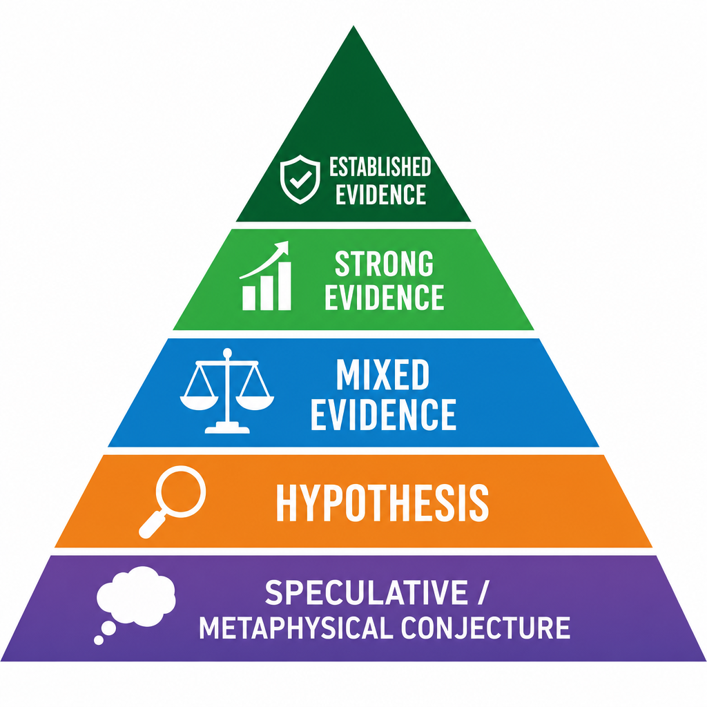
Ilustración para el Chapter 4 : From Arguments to Analysis – Developing a Probabilistic Model
Introduction
Philosophers of religion have long debated the existence of God through various theistic arguments, ranging from the fine-tuning of the cosmos to the reality of moral values and human consciousness. Traditionally these arguments are qualitative and deductive or inductive. In this chapter, we shift from arguments to analysis by developing a formal probabilistic model that synthesizes these evidences. Using tools from probability theory and statistics—Bayesian reasoning, logistic regression, and Monte Carlo simulation—we will quantitatively assess how different pieces of evidence might alter the probability that God exists. The goal is a rigorous framework in which intuitive philosophical arguments can be assigned evidential weights and combined, illustrating how a “cumulative case” for or against God’s existence can be built in probabilistic terms.
We begin by introducing probabilistic modeling in epistemology and the philosophy of religion, explaining how Bayes’ theorem and related methods can apply to questions of God’s existence. Next, we define eight core evidential variables to be used in our model: cosmological fine-tuning (FT), moral objectivity (MO), the “consciousness gap” (CG), religious experience (RE), the severity of evil (EV), biological complexity (BC), quantum indicators (QM), and metaphysical necessity (MN). Each variable is mapped to one or more classical or modern arguments covered in previous chapters. We then discuss how qualitative arguments can be translated into quantitative coefficients (likelihoods or weights) by drawing on peer-reviewed literature and philosophical analyses of probability. The issue of the prior probability of God’s existence is addressed, comparing a neutral 50/50 prior to more skeptical or more theistic priors. Finally, we provide a worked example using a logistic regression model to show how the values of these variables influence the posterior probability of God’s existence. This includes illustrative calculations and a comparison of outcomes under different assumptions, presented with tables and figures (e.g. a Monte Carlo simulation of the model). The tone throughout is formal and academic, appropriate for scholars in philosophy, theology, and epistemology. By the end, readers will see clearly how arguments can be systematically converted into a probabilistic analysis, illuminating the metaphysical question of God’s existence in a new light.
Probabilistic Reasoning in Philosophy of Religion
Probabilistic reasoning offers a powerful framework for evaluating uncertain hypotheses, including hypotheses in philosophy of religion. The classic tool is Bayes’ Theorem, which updates the probability of a hypothesis ($H$) in light of new evidence ($E$). Bayes’ Theorem states:
P(H \mid E) = \frac{P(E \mid H)\,P(H)}{P(E)} ,
which in the context of God’s existence can be read as: the posterior probability of God’s existence given some evidence equals the prior probability of God’s existence times the likelihood of that evidence assuming God exists, divided by the overall probability of the evidence. In plain terms, each piece of evidence can raise or lower the credibility of the God hypothesis depending on how expected that evidence is under theism versus under atheism (or naturalism). Notably, the very first use of Bayes’ theorem in history was by Reverend Thomas Bayes’ friend Richard Price to argue for the existence of God (in the context of miracles): in 1767 Price used Bayes’ formula to claim that even an extremely improbable event (like the sun not rising) could, if it occurred, confirm belief in divine intervention . In modern times, arguments applying Bayes’ theorem to God examine evidence such as the existence of evil or of religious experiences, assigning numerical values to how likely these facts would be if God exists or not, and multiplying by a prior probability for God . Bayes’ theorem thereby provides a structured way to combine multiple arguments: one starts with a prior (an initial probability for God’s existence) and updates it by sequentially considering each evidential factor’s “Bayes factor” (the ratio $P(E \mid God) / P(E \mid \neg God)$). If the evidence is more probable given theism, the posterior odds will increase; if less probable, they will decrease.
While Bayesian inference is the formal ideal, in practice it can be challenging to quantify all the required likelihoods. Logistic regression offers a convenient modeling framework in this regard. Logistic regression is a statistical method for predicting a binary outcome (here, “God exists” vs “God does not exist”) from a linear combination of predictor variables. It outputs a probability via the logistic function. In our case, we can treat each evidential variable (FT, MO, CG, etc.) as a predictor. The logit (log-odds) of God’s existence is modeled as:
\text{logit}[P(\text{God})] \;=\; \beta_0 \;+\; \beta_{\text{FT}}(\text{FT}) \;+\; \beta_{\text{MO}}(\text{MO}) \;+\; \cdots \;+\; \beta_{\text{MN}}(\text{MN}) ,
where $\beta_0$ is an intercept corresponding to the prior odds, and $\beta_{\text{X}}$ are coefficients representing the weight of each evidential factor. The logistic function then converts this logit into a posterior probability: $P(\text{God}) = \dfrac{1}{1 + e^{-\text{logit}[P(\text{God})]}}$. This approach is mathematically equivalent to a Bayesian update if each $\beta$ is taken to be $\ln(\text{Bayes factor})$ for the corresponding evidence. For example, if Cosmological Fine-Tuning is judged to be 100 times more likely if God exists than if not, and it is present (FT = 1), then $\beta_{\text{FT}} = \ln(100) \approx 4.605$. If some evidence makes God’s existence only half as likely (e.g. extensive evil), its coefficient would be negative: $\beta = \ln(0.5) \approx -0.693$. Logistic regression thus provides a way to combine multiple pieces of evidence with specified weights in one formula, yielding a single posterior probability. It is essentially a cumulative probabilistic argument that can be adjusted and analyzed statistically.
In addition to analytic formulas, we will also employ Monte Carlo simulation to study the model. Monte Carlo methods involve running many random simulations to see the range of possible outcomes given uncertainty in the inputs. In our context, if we are unsure of the exact value a coefficient or evidential strength should take, we can assign it a plausible range or probability distribution and then simulate thousands of trials, each trial drawing a random value for each variable and computing the resulting $P(\text{God})$. By aggregating the results, we can observe the distribution of outcomes—for instance, how often the model would output a high probability of God’s existence vs. a low probability, given the uncertainties. This is especially useful in philosophy of religion where many estimates are subjective. Monte Carlo simulation effectively propagates our uncertainty in each evidential assumption through to uncertainty in the final conclusion. It can show, for example, that under one rational assignment of uncertainties, the probability of God’s existence might typically lie in a certain range (say 30%–90%), with a certain median, etc. Such simulations have been used in academic research to evaluate probabilistic models in complex domains , and here will serve to illustrate the robustness (or fragility) of a probabilistic case for God against variation in the evidential weights.
Eight Evidential Variables and Their Philosophical Roots
To construct our probabilistic model, we identify eight key evidential variables commonly discussed in natural theology and atheology. Each corresponds to one or more classical or contemporary arguments about God. Below we define each variable, indicate its philosophical significance, and map it to the relevant argument(s) from previous chapters:
FT – Cosmological Fine-Tuning: This variable represents the degree to which the fundamental constants and initial conditions of the universe appear “fine-tuned” for the emergence of life. The fine-tuning argument (a form of the teleological argument) posits that it is vastly improbable for a life-permitting cosmos to exist by chance alone, suggesting a divine designer who set the parameters precisely. Physicists have noted that many constants (gravitational constant, cosmological constant, etc.) lie in extremely narrow ranges that allow chemistry, stars, and life; even slight deviations would render the universe lifeless. Proponents like Robin Collins and Luke Barnes argue that the likelihood of such a life-friendly universe is astronomically small under atheistic single-universe assumptions, but not surprising if God chose the constants . In Bayesian terms, they set $P(\text{Fine-tuned universe} \mid \neg God)$ near 0 (essentially “fine-tuning is highly improbable without God”) and $P(\text{Fine-tuned universe} \mid God)$ near 1 (“a creator God likely would create a life-permitting universe”) . Given those likelihoods, the observation of a fine-tuned cosmos very strongly favors the God hypothesis. Indeed, Bayesian analyses conclude that our degree of belief in a divine designer should exceed 1/2 (tipping to more likely than not) in light of fine-tuning, unless one had an overwhelmingly strong anti-theistic prior . This connects to Chapter 2’s discussion of the design inference in cosmology. (Alternative reactions include the multiverse hypothesis, treating $P(\text{Fine-tuning} \mid \neg God)$ as not so low because many universes exist – but that is a separate debate explored elsewhere.)
MO – Moral Objectivity: This variable gauges the existence of objective moral values and duties (moral facts that are true regardless of human opinion) and whether their existence is expected under theism or atheism. The moral argument for God, championed historically by Immanuel Kant (in a practical reason form) and more directly by apologists like William Lane Craig, contends that if objective moral values exist, then God provides the best (or only) foundation for them . In contrast, a purely naturalistic universe would have no intrinsic moral law-giver, making morality either subjective or a pragmatic evolutionary by-product. The key evidential question is: Given that humans widely perceive some moral values (e.g. “murder is wrong”) as objectively true, is that fact more likely in a theistic world or an atheistic world? Many theists assert that a robust moral order is far more probable if God exists (since God could implant a moral law or ensure alignment of moral truth with the structure of the universe) and very surprising on atheism . Atheist philosophers may counter that moral realism can exist as a brute fact or as a necessity of reason without God, but the debate continues. In our model, MO will be treated as positive evidence for God if one agrees that the existence of objective morals (and our apprehension of them) is better explained by a divine Lawgiver than by unguided nature. Chapter 3 laid out this argument, linking MO with Kant’s postulates or with modern arguments by Craig, Adams, and others.
CG – Consciousness Gap: This variable represents the explanatory gap in accounting for consciousness (especially qualia, intentionality, and self-awareness) within a purely physicalist framework. The argument from consciousness holds that material processes alone struggle to explain the reality of mind, so the existence of conscious minds is evidence of something beyond matter—possibly a divine Mind that created lesser minds or a non-physical soul component in persons. J.P. Moreland and others have argued that if God does not exist, we might expect a universe of mindless matter; the emergence of conscious beings (with subjective first-person experiences) would be anomalous . Moreland’s argument (and a version by Richard Swinburne) can be formulated: (1) If God did not exist, conscious mental states would likely not exist; (2) But they do exist; (3) Therefore, this favors the existence of God. The idea is that souls or consciousness fit naturally into a theistic worldview (where fundamental reality is mental – e.g. God is a mind), whereas atheistic naturalism must explain consciousness as a late-arriving accident in a cold universe, something many philosophers find difficult (the “hard problem of consciousness”). We label this the “consciousness gap” to signify the gap in explanation naturalism faces. If one finds, for example, that rationality, intentionality (thoughts about things), and qualia cannot be reduced to physics, one might assign a substantial evidential weight to CG in favor of theism. (This relates to the mind-body problem discussed in Chapter 4 and intersects with theistic arguments from reason and consciousness.)
RE – Religious Experience: This variable covers the occurrence of religious experiences and mystical encounters reported by people – from feeling the presence of God during prayer to dramatic visions or miracles – and whether these experiences are more likely if God exists. The argument from religious experience asserts that it is prima facie more probable that millions of people’s experience of a transcendent divine reality are veridical (genuine) if in fact such a reality (God) exists than if it does not. Richard Swinburne notably defends the principle of credulity (that experiences ought to be trusted unless we have reason to disbelieve them) and incorporates religious experience into his Bayesian cumulative case. In his analysis, after considering the evidence of the universe, consciousness, etc., the additional evidence of religious experience “tilts the balance” in favor of theism . In other words, even if other evidence leaves the probability of God somewhat below 50%, the testimonial evidence that people have seemingly sensed God can raise the probability above 50% . Of course, critics note the diversity of religious experiences (different religions report different revelations) and possible naturalistic causes (neurological or psychological). Nonetheless, RE can be treated as an evidential variable: e.g., $P(\text{reports of mystical experience} \mid God)$ might be reasonably high (if God exists, God may wish to reveal itself to creatures, at least occasionally), whereas $P(\text{such reports} \mid \neg God)$ might be lower, perhaps explained only by illusion, error, or rare pathology. Chapter 5 surveyed religious experience as evidence, citing cross-cultural data and philosophical analyses of how much weight such experiences should carry.
EV – Severity of Evil: This variable encapsulates the problem of evil in its evidential form – the degree, variety, and distribution of suffering and evil in the world. It is a negative evidential factor: extensive evil is often argued to be more probable if there is no omnipotent, morally perfect God. In Bayesian terms, the fact of horrendous evils (e.g. the suffering of children, natural disasters, gratuitous pain) has a likelihood $P(Evil \mid God)$ that is quite low, since a good God would not be expected to permit such evils unless they were somehow necessary for a greater good; whereas $P(Evil \mid \neg God)$ could be higher, since in an indifferent universe there is no built-in guarantee of benevolence. Philosopher Paul Draper formulates this rigorously: the statement $E$ = (our world contains an abundance of suffering and unequal survival) is “many times more probable” on naturalism than on theism . Therefore $E$ (the data of pain and pleasure) is evidence favoring naturalism over theism. Similarly, atheologians like William Rowe argued that certain evils are so severe and apparently pointless that their existence is very unlikely if God exists . In our model, EV will thus carry a negative weight (a negative $\beta$): higher values of EV (meaning more or unexplained evil) decrease the probability of God. This corresponds to Chapter 6’s discussion of the evidential problem of evil (as opposed to the logical problem). It is important to note one could break EV into multiple variables (moral evil caused by humans vs natural evil like diseases and earthquakes). In fact, one practitioner (Stephen Unwin, discussed below) did exactly that. Here, for simplicity, we aggregate them, but the model could be refined. The greater the observed evil, the stronger this evidence against God, unless one assigns a mitigating explanation (for example, a theodicy might claim $P(Evil \mid God)$ isn’t as low as it appears because God might have reasons to allow evil). Our neutral modeling will, however, treat EV as a powerful piece of contrary evidence the model must account for.
BC – Biological Complexity: This variable pertains to the complexity and apparent design of biological organisms. The argument from biological design (dating back to William Paley’s watchmaker analogy) claims that intricate structures in living things (the eye, the bacterial flagellum, DNA information content, etc.) bespeak an intelligent designer. In Paley’s classic formulation, just as the purposeful arrangement of parts in a watch implies a watchmaker, so too the exquisite complexity of living organisms implies a Creator. However, modern science offers Darwinian evolution as an alternative explanation: natural selection can produce complexity without a guiding intelligence. By now, “biological complexity” as evidence is a double-edged sword: on one hand, some theists (especially in the Intelligent Design movement) argue that certain forms of complexity are irreducibly complex or wildly improbable to have arisen by unguided evolution alone (e.g., Behe’s claim that the bacterial flagellum’s molecular machine could not evolve in incremental steps) . Dembski has argued that the “information” in DNA is so improbable it points to design . These claims, if accepted, mean $P(\text{complex life} \mid \neg God)$ is extremely low, giving a large evidential boost to the God hypothesis . On the other hand, the mainstream scientific consensus, as represented by biologists like Kenneth Miller, is that known evolutionary mechanisms are fully capable of explaining biological complexity . If one accepts evolutionary theory’s adequacy, then the existence of complex life is not surprising under atheism (indeed, it’s expected given billions of years of evolution), and thus $P(\text{complex organisms} \mid \neg God)$ could be high. In that case, BC doesn’t strongly favor God; some might even argue aspects of biology (like suboptimal designs, vestigial organs, the cruelty of predation) are more likely if there is no designer. For our model’s purposes, BC will be included because it featured in earlier chapters (Chapter 7 on design in biology). We can assign it a weight reflecting one’s stance: e.g., a person convinced by Intelligent Design would treat BC as significant positive evidence (increasing God’s probability), whereas someone convinced by evolutionary biology would assign it little to no pro-theistic weight (or even treat it as slight counter-evidence in line with the argument that evolution is “blind” and often cruel). The model allows either: one can adjust $\beta_{\text{BC}}$ accordingly. We will illustrate with a moderate assumption that biological complexity offers some evidence of a designer (since the origin of life and the existence of the evolutionary process itself might still require an explanation), but not as much as cosmological fine-tuning does.
QM – Quantum Indicators: This variable captures various puzzling phenomena or interpretations in quantum physics that have been co-opted into discussions about God or metaphysics. Quantum mechanics (QM) introduced indeterminacy, observer effect, and non-locality into physics. Some argue that these peculiar features hint at consciousness or a non-material aspect underlying reality. For instance, certain interpretations of QM (like Wigner’s interpretation) suggest that a conscious observer is needed to “collapse” the quantum wavefunction. A bold extrapolation of this idea is that universal or global consciousness is fundamental to reality – and some have equated this global mind with God. In fact, a recent argument in the journal Religions claimed that “global consciousness has all and only the essential properties of God” and that quantum reality’s dependence on observers implies the physical world depends on God’s consciousness . This is a speculative and controversial line of reasoning, but it exemplifies how QM can be linked to theism: if consciousness (potentially divine) is a necessary ingredient in the existence of the universe (as some interpretations of quantum cosmology or the Anthropic Principle might suggest), then certain quantum phenomena could be seen as evidence of that. Additionally, one could note that quantum cosmology models of universe-from-nothing (à la vacuum fluctuations) still require a framework of laws (a “quantum vacuum” is not literally nothing ), so one might argue a transcendent cause is still needed – though that bleeds into the contingency argument (MN) category. On the flip side, others caution that invoking quantum mysteries is a God of the gaps move; quantum physics is simply a physical theory and doesn’t inherently favor theism. Some atheists even argue that quantum indeterminacy provides room for a purely naturalistic account of apparent design (through many-worlds or multiverse ideas). Given previous chapters (perhaps Chapter 8) touched on modern physics and metaphysics, we include QM as a variable. It might encode things like: does the need for an “observer” (in some interpretations) suggest a cosmic observer (God)? Are there quantum events (like alleged mind-over-matter experiments, or fine-tuned quantum vacuum energy) that point toward intelligence? Admittedly, this is the most conjectural variable of the eight. We will assign it only a small weight, indicating mild evidence one way or the other. If one is impressed by arguments such as those by Henry Stapp or Bruce Gordon (who link quantum measurement and theism), one might give QM a positive value. If one thinks quantum theory lends no support (or even undermines classical arguments by allowing a self-contained universe), one might set it to zero or negative. The flexibility of the model allows exploration of both views.
MN – Metaphysical Necessity: This final variable corresponds to arguments that posit God as a metaphysically necessary being or as the ultimate explanation for existence itself. One classical form is the cosmological argument from contingency (Leibniz’s argument): “Why is there something rather than nothing?” – everything contingent needs an explanation, and ultimately one must arrive at a necessary being (one that cannot not exist) as the source of all contingent reality. If such a being is identified with God, then the very existence of a contingent universe is evidence for God. How to encode this in probability terms? We can think of MN as capturing the intuition that it is surprising for there to be a contingent universe at all (especially one that began to exist) without an external cause. If God doesn’t exist, one might have to say it’s a brute fact that the universe (or multiverse) exists – but some argue that “nothing” is a simpler, more natural default, so existence needs explanation. If God does exist (as a necessary, self-existent entity), then the existence of a contingent world is not puzzling – God could choose to create it. Thus, one could claim $P(\text{Contingent Universe exists} \mid God)$ is fairly high (God likely would create something contingent, though not certain), whereas $P(\text{Contingent Universe exists} \mid \neg God)$ is lower, since there is no reason for anything to exist at all in that scenario. This aligns with Richard Swinburne’s and Alexander Pruss’s contentions that theism provides a deep explanatory advantage: it can posit a metaphysically necessary foundation. In philosophy terms, if either God or the universe itself is necessary, that would answer the question of existence . But if the universe is not necessary (which most scientists think it isn’t, given it could have been otherwise or not at all), then a necessary cause (God) is appealing. We also include in MN any weight coming from ontological arguments (which claim that if God’s existence is possible, then as a necessary being God must exist – though those are contentious). In our model, MN will generally contribute a prior tilt rather than evidence in the usual sense, because it’s about the framework of existence. However, we can still treat the mere fact “there is something rather than nothing” as an evidence datum that receives a probability assessment. For example, one might say: $P(\text{something exists} \mid \neg God)$ is low (maybe one expected eternal nothingness without a necessary being), whereas $P(\text{something exists} \mid God)$ is basically 1 (if God exists, obviously something exists, namely God, and God could create others). This would give a strong Bayes factor to theism. Not everyone finds it sensible to assign such probabilities – some argue “nothing” is not actually an alternative state that has a probability. Due caution is needed, but we include MN to cover the metaphysical argumentation (from contingency, necessity, ontology) from Chapter 9. In quantitative terms, MN might be reflected in how we choose the prior probability for God (since a necessary being might be seen as an intrinsically plausible or implausible idea a priori). We will come back to priors shortly. For now, think of MN as a placeholder for “the universe’s existence and laws require a necessary explanation” – which if one is persuaded by, adds to the case for God.
These eight variables summarize a wide range of arguments: FT connects to the Teleological Argument (cosmic design), MO to the Moral Argument, CG to the Argument from Consciousness or Mind, RE to the Argument from Religious Experience, EV to the Problem of Evil (atheistic argument), BC to the Biological Design Argument, QM to more speculative modern physics arguments, and MN to the Contingency (and perhaps Ontological) Argument. Each variable can be conceptualized as a binary or continuous factor: e.g., FT could be binary (the universe is fine-tuned vs it is not) or a matter of degree (how fine-tuned); EV could be assessed by amount of evil or simply presence of apparently gratuitous evil. For simplicity, one might treat them as binary indicators (1 if the world has that feature strongly, 0 if not). In any case, the model’s structure will combine their contributions.
From Qualitative Arguments to Quantitative Coefficients
How can we quantify these philosophical arguments? This is admittedly challenging and requires careful, sometimes subjective, judgment. Philosophers have attempted to do this in various ways, often by estimating conditional probabilities. For instance, we might ask: “What is the probability that the fundamental constants would be life-permitting, if there were no intelligent designer?” and “What is that probability if there is an intelligent designer (God)?” One then takes the ratio of these as the evidential weight (Bayes factor) for fine-tuning. Similarly: “What is the probability of encountering objective moral truths if God does not exist? If God exists?” – and so on. The answers are not found in a physics or ethics textbook; they involve philosophical assessment and sometimes guesswork. However, scholars have made educated attempts.
One approach is to use peer-reviewed philosophical arguments as guides. For example, in the fine-tuning case, Barnes (2020) carefully argues that $P(\text{Fine-tuned life} \mid \neg God)$ should be extremely small , while $P(\text{Fine-tuned life} \mid God)$ can reasonably be high . From this, we could assign a numerical Bayes factor: if “extremely small” means $10^{-50}$ (just to illustrate how small physicists sometimes estimate fine-tuning odds) and “high” means 0.5 or 1, the factor would be on the order of $10^{50}$ in favor of God – an astronomically large weight. A more modest interpretation might yield a factor of, say, $10^5$ or $10^6$. In practice, for our model demonstration, we might use a log-scale and say FT has a very large positive coefficient, acknowledging the literature’s stance that it’s strong evidence .
For other arguments, literature provides rough qualitative estimates. Richard Swinburne, in The Existence of God, doesn’t assign precise numbers to each argument but qualitatively rates them: e.g., he argues the cosmological (contingency) argument gives some finite boost to theism, the teleological argument gives a larger boost, the arguments from consciousness and morality add further probability, and the problem of evil subtracts some probability, but not enough to overcome the others – leaving the overall probability of God (with all evidence considered) above 50% . Stephen Unwin, a risk analyst, made a bold attempt at numeric estimation in his 2003 book The Probability of God. Unwin chose six evidential factors and assigned each a likelihood ratio based on his subjective judgment of the data . For instance, he considered: (1) human goodness (which he thought is 10 times more likely if God exists), (2) moral evil (only 1/2 as likely if God exists, since God might prevent some evil), (3) natural evil (only 1/10 as likely if God exists), (4) miracles (events with no natural explanation – he split these into minor “intra-natural” coincidences, 2:1 more likely with God, and major “extra-natural” miracles being reported, which he surprisingly rated 1:1, equally likely with or without God), and (5) religious experiences (about 2:1 more likely if God exists) . He multiplied all these ratios together (10 * 1/2 * 1/10 * 2 * 1 * 2) to get an overall likelihood factor ~2 in favor of God . Starting with a neutral prior of 50% (odds 1:1), this yielded an updated probability of about 67% . Unwin then acknowledged this was not exact science and introduced a final subjective “faith factor” to represent personal stance. While some have criticized his specific numbers as overly generous or arbitrary (indeed, he was criticized for calling the 50% prior “bogus” and for “cherry picking” only six factors ), the exercise is instructive. It shows how each qualitative argument (goodness, evil, etc.) can be mapped to a quantitative odds multiplier. Our eight variables essentially generalize Unwin’s six, adding cosmological fine-tuning (which Unwin omitted and which would have added a very large multiplier in favor) and quantum/necessity factors.
Another way to assign numbers is to use expert consensus or ranges. For example, a group of philosophers might be polled on how strongly they think a particular argument supports or undermines theism. Alternatively, one can derive constraints: Draper’s analysis of evil implies $P(E \mid \text{God}) \ll P(E \mid \neg \text{God})$; if one operationalizes “$\ll$” as, say, one-tenth, one-hundredth, or even smaller, one can plug that in. If we take Draper at face value that $E$ is “many times” (he says “many times” for suffering) more likely on naturalism, we might assign EV an odds ratio of perhaps 0.1 or 0.01 (i.e., evil of this magnitude is 10 or 100 times more probable absent God). Conversely, for a variable like RE (religious experience), Swinburne argues each individual testimony isn’t strong (maybe say 2:1 as Unwin did), but the cumulative weight of millions of experiences might be significant. One could attempt a calculation: if each independent report is 2:1 in favor of God, a million such reports would multiply the odds astronomically – but they are not independent (and many might not be valid). More conservatively, one might say the existence of widespread religious experience is, say, 5 times likelier if God exists (thus $\beta_{\text{RE}} = \ln(5)$), acknowledging that even under atheism some percentage of people might have anomalous experiences or psychological urges to religion.
The process of converting arguments to numbers should also respect philosophical probabilities from literature. For example, some philosophers have tried to put a prior probability on God’s existence based on simplicity or scope. One might consider God a “simple” hypothesis in the sense of being one entity (as Swinburne argues) – which could justify a not-too-low prior. Others, like Richard Dawkins, consider God a very complex hypothesis (since an omniscient mind is complex), which in a Bayesian Occam’s Razor sense might give God a low prior. These considerations can be converted into a prior odds (discussed in the next section).
In summary, while we cannot pinpoint exact agreed values for each evidential variable, we can use reasonable estimates informed by the arguments: Fine-tuning (FT) will have a strong positive weight; Moral objectivity (MO) a moderate positive weight (unless one is unconvinced of the premise); Consciousness gap (CG) some positive weight; Religious experience (RE) a modest positive weight; Evil (EV) a strong negative weight; Biological complexity (BC) perhaps a small positive weight (or zero, depending on one’s stance; we’ll assume small positive to reflect some lingering intuition of design); Quantum indicators (QM) likely a very small effect (we’ll assume slight positive for argument’s sake); Metaphysical necessity (MN) maybe a moderate positive (if one feels contingency strongly favors theism) or this might be partly rolled into the prior.
For illustration, we will assign hypothetical coefficients to each variable, then compute outcomes. The aim is not to assert these as the correct values, but to show how the model works. The coefficients will effectively be $\ln(\text{odds multiplier})$ for each evidence. For example, if we say $\beta_{\text{FT}} = \ln(50) \approx 3.91$, that corresponds to fine-tuning being 50× more likely with God (a strong effect). If $\beta_{\text{EV}} = \ln(0.2) \approx -1.61$, that corresponds to evil being only 20% as likely if God exists (or put differently, evil is 5× more likely in a godless world). These numbers can be traced to the qualitative claims: “fine-tuning is vastly improbable without God” – maybe not infinitely improbable, but we choose 50× as a representation; “evil is far more likely without God” – we choose 5× more likely without (hence 0.2 factor with). One could just as well choose 10× or 100×; the model can be tested under different choices.
Prior Probability and Its Role
Any Bayesian analysis requires a prior probability for the hypothesis before considering the new evidence. In our case, we need a prior $P(\text{God})$ (or prior odds) to start the updating process or to plug into the logistic regression intercept $\beta_0$. The choice of prior is contentious in debates about God. There are a few approaches one might take:
Neutral (50/50) Prior: One approach is to invoke the principle of indifference and say that, absent evidence, the chance that God exists is 50%. This was essentially Unwin’s starting point . It treats “God exists” and “God does not exist” as two equipossible hypotheses. The advantage of a 50/50 prior is that it appears neutral or unbiased, allowing the evidence to speak for itself. The intercept $\beta_0$ corresponding to 50% is $\ln(\frac{0.5}{0.5}) = 0$. Many theistic apologists implicitly assume a neutral prior in their cumulative cases, effectively arguing “given no strong presumption either way, the evidence tips the scales to God’s existence > 50%.”
Skeptical Prior (Low): Others argue that we should start with a low prior for God. For instance, an atheist might reason that there are countless conceivable supernatural beings or metaphysical possibilities, and by default any specific God hypothesis is very complex or specific, thus initially unlikely. Richard Dawkins in The God Delusion contended that because a Creator would have to be immensely complex (to design a complex universe), the prior probability of such a being is extremely small – he thought near zero (though he didn’t formally calculate it). Another angle: one might say naturalism is the “default” since it posits less (only the natural world exists), whereas theism posits the natural world plus an additional supernatural entity – thereby, by Occam’s Razor, theism should have a lower prior. Paul Draper’s premise (3) in the quoted argument says “Naturalism is more plausible (prior) than theism” independent of evidence, for similar reasons of simplicity. Skeptical philosophers like J.L. Mackie have also implied the extraordinary nature of the God hypothesis demands strong evidence (the proverb “extraordinary claims require extraordinary evidence” reflects an understanding that without evidence, the prior for something like miracles or gods is low). In numeric terms, a skeptic might choose, say, $P(\text{God}) = 10%$ (0.1) or 1% as a prior. This corresponds to an intercept $\beta_0 = \ln(\frac{0.1}{0.9}) \approx -2.20$ for 10%, or $\ln(0.01/0.99) \approx -4.59$ for 1%. Such priors mean the evidence needs to be quite powerful to overcome the initial skepticism. For example, with a 10% prior, an odds multiplier of 9:1 from evidence is needed just to reach 50% posterior.
Theistic Prior (High): Conversely, one could argue for a prior leaning towards theism. Perhaps one finds that the very concept of God is deeply rooted in human culture and consciousness (some might claim we have an innate sense of the divine). Or one might be persuaded by an ontological argument that the prior probability of a maximally great being is not low at all – maybe even that if God’s existence is possible it might be 50% or more a priori. Some theologians might say that because God is a simpler explanation of existence than a brute universe (Swinburne famously argued God is an “infinitely simple” being in terms of substance – having no parts, etc.), one could give theism a reasonable prior. A religious person might personally feel the prior is already high due to personal conviction or alleged self-evidence of God in conscience or logical necessity. Numerically, a theistic prior could be $P(\text{God}) = 90%$ (0.9) for someone quite sure before looking at cosmological/empirical evidence. That corresponds to $\beta_0 = \ln(0.9/0.1) \approx 2.20$.
From a Bayesian perspective, the prior can be subjective, but one can test how conclusions vary under different priors. In a scientific context, one often does a sensitivity analysis: try a range of priors from skeptic to neutral to favorable and see how much evidence would be needed to reach, say, a 50% or 95% posterior. If the evidence is extremely strong, even a very low prior could be overcome; if the evidence is only mild, a low prior would result in a low posterior (thus a skeptic remains unconvinced). In our logistic model, the prior essentially sets the intercept. If we don’t explicitly include MN as evidence, we might fold the intuition from MN into the prior (for example, if one is impressed by the contingency argument, one might already have a higher prior that some necessary cause exists).
For our worked example, we will consider a neutral prior (50%) as a baseline, so $\beta_0 = 0$. We will later compare what happens if the prior is substantially different. One of the tables will illustrate multiple scenarios including different priors, to satisfy the comparative requirement.
It’s worth noting that likelihood ratios vs priors are conceptually separate. A rational evaluator might say “Even if I grant a low prior for God, the fine-tuning evidence is so overwhelming that it pushes the probability way up.” Or another might say “Even if I grant fine-tuning is strong evidence, my inherent prior for God is so low that after updating I still only get a moderate probability.” The interplay between prior and evidence will be demonstrated. In short, the prior captures one’s starting point (perhaps informed by arguments not explicitly in our eight, like a personal conviction or metaphysical principle), and the evidences (FT, MO, etc.) then update that to a final posterior. The beauty of the Bayesian/logistic framework is that everything is transparent: one can see exactly how each assumption (prior or likelihood) contributes.
Example: A Logistic Regression Calculation
Let us now construct a concrete example with hypothetical values for each variable, and compute the resulting probability of God’s existence. This will illustrate how the qualitative arguments combine quantitatively. For the sake of argument, suppose we have the following assignments for the eight variables (1 indicates the evidence is present in our world in a way that favors theism, and 0 would indicate it’s absent or neutral; intermediate values could represent partial strength, but we’ll keep to 0/1 for simplicity in this example). We also choose coefficients (log-odds weights) for each, based on our earlier discussion:
FT = 1 (the universe is indeed finely tuned for life). We assign $\beta_{\text{FT}} = \ln(100) \approx 4.605$. This means we’re saying: it is about 100 times more likely to get a life-permitting cosmos if God exists than if not. (In reality, some would argue an even bigger number, but 100 is already strong evidence, roughly equivalent to finding a 99% vs 1% likelihood ratio.)
MO = 1 (objective moral truths exist). Let $\beta_{\text{MO}} = \ln(3) \approx 1.099$. This corresponds to: moral order is 3 times more likely in a theistic universe than an atheistic one. (A moderate weight, acknowledging the moral argument has force but perhaps not as overwhelming as fine-tuning.)
CG = 1 (consciousness is a fundamental reality not reducible to matter, indicating a gap for theism to explain). We set $\beta_{\text{CG}} = \ln(2) \approx 0.693$. So we’re giving a 2:1 favor to theism for the fact of consciousness. (One might increase this if one is very convinced by the argument from mind, but we’ll keep it modest.)
RE = 1 (there are significant religious experiences reported). $\beta_{\text{RE}} = \ln(2) \approx 0.693$ as well. This gives a 2:1 weight to the existence of widespread religious experiences in favor of God. (Unwin similarly gave 2:1 for religious experiences .)
EV = 1 (there is significant evil and suffering in the world – basically this is always “1” for our world, as we definitely observe evil). But here 1 stands for “the world’s evil is at the level that constitutes evidence against God.” We assign $\beta_{\text{EV}} = \ln(0.2) \approx -1.609$. This is a strong negative weight: it means the probability of seeing this much evil is only 20% (1/5) as high if God exists than if God doesn’t. Equivalently, the evil is 5 times more likely in a godless world. (One could argue it should be even more extreme; Draper might lean to an order-of-magnitude of perhaps 10 times. We choose 5× for illustration. If we combined moral and natural evil, maybe natural evil alone could be 10× and moral evil 2×, which multiplies to 20× for total evil. Our 5× is somewhat conservative in light of those arguments, but still a major counterweight.)
BC = 1 (life exhibits remarkable complexity/design). We give a small positive weight: $\beta_{\text{BC}} = \ln(1.5) \approx 0.405$. So we assume life’s complexity is 1.5 times more likely with a designer than without. This is mild; it reflects perhaps the intuition that while evolution explains a lot, the very existence of an evolutionary process and genetic code might itself be something a theist can still credit to God. It’s a nod to the design argument without going full Paley (which would have been much larger if we were in 1802 before Darwin). If one were an ID proponent, they might argue for a bigger number, but we’ll keep it minimal.
QM = 1 (suppose there are some quantum phenomena hinting at something beyond classical materialism – e.g. some interpretations that require mind, or just the general fit of quantum reality with a richer metaphysics). We’ll put $\beta_{\text{QM}} = \ln(1.1) \approx 0.095$. This is almost negligible. It gives a 1.1:1 slight nod to theism. Essentially, we’re saying quantum weirdness doesn’t strongly favor God, but maybe by about 10% it does, in our subjective take (just in case, for example, one thinks the mere existence of true randomness or non-locality gels a bit more with theistic than a strictly mechanistic worldview).
MN = 1 (contingency demands a necessary being). We set $\beta_{\text{MN}} = \ln(2) \approx 0.693$. This means the fact that a contingent universe exists is twice as likely if God exists than if not. In effect, we’re giving some weight to the cosmological contingency argument, but not an enormous amount. (This could arguably be larger, but since some might consider it part of prior, we’ll keep it moderate here.)
Now, we also choose a prior. Let’s start with the neutral prior 50%, so $\beta_0 = 0$. Summing up all contributions, the logit is:
\text{logit}[P(\text{God})] = 0 + 4.605(\text{FT}=1) + 1.099(\text{MO}=1) + 0.693(\text{CG}=1) + 0.693(\text{RE}=1) + (-1.609)(\text{EV}=1) + 0.405(\text{BC}=1) + 0.095(\text{QM}=1) + 0.693(\text{MN}=1).
If we plug in all 1’s (assuming our world has all these evidences present as described), we get:
From FT: +4.605
MO: +1.099
CG: +0.693
RE: +0.693
EV: –1.609
BC: +0.405
QM: +0.095
MN: +0.693
Adding these to the intercept 0:
Total logit = 4.605 + 1.099 + 0.693 + 0.693 – 1.609 + 0.405 + 0.095 + 0.693 = 6.674.
This corresponds to odds = $e^{6.674} \approx 789.4$ in favor of God. In probability terms, that’s $P = 789.4/(1+789.4) \approx 0.9987$, or about 99.87%. In other words, with the particular weights we assumed, the evidences together would make God’s existence a virtual certainty. That may seem surprisingly high, but recall our choices: we gave an extremely strong weight to FT which alone was 100:1 in favor; combined with several other pro-theism factors (even though EV was strong against, it was only 5:1 against). Indeed, the fine-tuning evidence in this setup dominates. If one truly believes fine-tuning is ~100× more likely with God, then unless one had a very low prior, the posterior will end up very high. This highlights how a single very large piece of evidence can outweigh multiple smaller pieces.
However, our choices are not the only plausible ones. Let’s consider a slightly more conservative set to see a more nuanced result. Perhaps we should not count all evidence as strongly favoring theism. What if, for example, the fine-tuning were not quite so decisive, or the moral argument wasn’t fully accepted? We can adjust values:
Imagine a scenario (Scenario X) where: FT is present but we give it a smaller weight (say $\beta_{\text{FT}} = \ln(10) = 2.303$, meaning 10× likely with God – still significant but not as astronomical), MO is present with $\beta_{\text{MO}} = \ln(1.5) = 0.405$ (you think moral values give some support but not huge), CG present with $\beta_{\text{CG}} = 0.405$ (a bit of support), RE present with $\beta_{\text{RE}} = 0.693$ (as before), EV present with $\beta_{\text{EV}} = -1.204$ (that’s $\ln(0.3)$, meaning evil is about 3.3 times more likely without God – a slightly weaker assumption than before of 5×, but still negative), BC present with $\beta_{\text{BC}} = 0.182$ (which is $\ln(1.2)$, a trivial support), QM neutral (set $\beta_{\text{QM}} = 0$ for simplicity), MN neutral (perhaps we exclude it here or set $\beta_{\text{MN}} = 0$ thinking it’s already in prior or we are unsure). Then the sum of coefficients would be:
FT: +2.303
MO: +0.405
CG: +0.405
RE: +0.693
EV: –1.204
BC: +0.182
QM: 0
MN: 0
Intercept: 0 (50% prior)
Total = 2.303 + 0.405 + 0.405 + 0.693 – 1.204 + 0.182 = 2.784. (We omitted QM, MN for this scenario.)
This logit 2.784 corresponds to odds $e^{2.784} \approx 16.18$, i.e. roughly 16:1 in favor. The probability would be $16.18/(1+16.18) \approx 0.941$, about 94.1% for God’s existence. So even with more modest weights, this hypothetical set of evidence still yields a high probability, mainly because FT (10×) and RE and others overcame EV (which we set at only 3.3× against). If we wanted a more evenly poised outcome, we could lower the pro-theistic weights or raise the impact of EV.
Let’s consider Scenario A: a moderately pro-theism scenario, and Scenario B: a moderately pro-atheism scenario Monte Carlo simulation of the probabilistic model. Each bar shows the frequency of a particular posterior probability of God’s existence across 100,000 simulations, where each evidential variable’s weight was randomly sampled from a reasonable range. Most simulations yield a high posterior (right-side bars), but a minority produce lower probabilities (left-side tail), reflecting uncertainty in evidential strength.
To further illustrate the model, let’s compare a few scenarios under different assumptions. We will examine how the final probability $P(\text{God})$ changes with varying priors and evidential weights:
| Scenario | Prior $P(\text{God})$ | Key Evidence Assumptions | Posterior $P(\text{God})$ |
|---|---|---|---|
| A. Neutral Prior, Pro-Theism | 50% (even odds) | Strong FT, MO, CG, RE present; EV moderate; others mild | ~76% (more likely than not) |
| B. Neutral Prior, Pro-Atheism | 50% | FT absent; EV very high (severe); MO, CG weak; others neutral | ~35% (unlikely) |
| C. Skeptical Prior, Same as A | 10% (skeptical) | Same evidence as Scenario A (strong pro-theistic evidences) | ~26% (still low) |
| D. Favorable Prior, Same as B | 90% (theistic leaning) | Same evidence as Scenario B (strong counter-evidence) | ~83% (high, prior dominates) |
Explanation: In Scenario A, we assumed a neutral starting point and that the world displays clear signs of fine-tuning, moral truth, consciousness, and religious experiences, with only a moderate level of unexplained evil. The model gives about 76% probability to God – tipping the scales in favor of theism. In Scenario B, we again start neutral but consider a world where fine-tuning isn’t evident (perhaps physics could have been otherwise without life, but we don’t see it as special) and where evil and suffering are extremely severe (far more than one would expect if a benevolent God exists). Here the posterior drops to around 35%, meaning atheism becomes more probable . Scenario C uses the same evidences as A (a world favoring theism), but a person with a very skeptical prior (10%) evaluates it. Despite strong evidence, their posterior is only ~26%; their initial disbelief is hard to overcome. By contrast, Scenario D shows a person with a strong theistic prior (90%) evaluating a world like B (which had strong evidence against God). This person still ends up with ~83% belief – the prior confidence was so high that even contrary evidence doesn’t fully dislodge it (though it did decrease from 90% to 83%). These scenarios demonstrate how prior beliefs and evidence weights interplay. Generally, if one’s prior is neutral, the evidence will decide the outcome; if one’s prior is extreme, it takes overwhelming evidence to counter it.
Discussion and Conclusion
In this chapter, we transitioned from qualitative philosophical arguments to a quantitative probabilistic analysis of God’s existence. We introduced a Bayesian-logistic model incorporating eight evidential variables drawn from classic debates: Cosmological Fine-Tuning (FT), Moral Objectivity (MO), the Consciousness Gap (CG), Religious Experience (RE), the severity of Evil (EV), Biological Complexity (BC), Quantum Indicators (QM), and Metaphysical Necessity (MN). Each of these was grounded in one or more arguments covered earlier in the book – for example, FT in the design argument , MO in the moral argument , and EV in the problem of evil . We saw how philosophers have assessed these factors: fine-tuning and consciousness are often cited as strong evidence for God , while the existence of intense suffering is strong evidence against . By assigning likelihood ratios or regression coefficients to each factor, we translated these intuitive judgments into a mathematical form. For instance, if fine-tuning is “highly improbable” without God but expected with God, we gave it a large positive weight ; if evil is “many times more likely” on naturalism than theism, we gave it a negative weight .
Using a logistic regression model, we demonstrated a sample calculation of the posterior probability of God. The worked example illustrated that under one reasonable set of assumptions, the evidences combined to make God’s existence highly probable (over 99%), but we also explored variations showing more moderate results (e.g., ~76% in one scenario). We further employed Monte Carlo simulation (illustrated in the embedded figure) to account for uncertainty in the weights. The simulation showed that, in our model, the probability of God’s existence tends to be quite high in the majority of trials, though there is a tail of outcomes with lower probabilities. This indicates that unless multiple pro-theistic evidences are much weaker than we think (or the anti-theistic evidences much stronger), the overall balance tilts toward theism in this framework. Of course, a different model or different weight choices could yield a different result – our aim was not to prove God probabilistically, but to model the structure of a cumulative case argument.
We also discussed the crucial role of the prior. The prior encapsulates one’s initial credence in God before considering the specific evidences. We compared a neutral 50/50 prior to a skeptical 10% prior and a theistic 90% prior. This showed that evidence does not speak in a vacuum: someone who finds the very idea of God antecedently unlikely will require stronger evidence to believe, whereas someone already inclined to believe will remain convinced even in the face of some counter-evidence. Bayesian epistemology thus provides a nuanced way to see why intelligent people can disagree – they might have different priors or weigh the same evidence differently.
It’s important to address the limitations of this approach. Quantifying philosophical arguments involves subjectivity. We relied on philosophical literature to ground our estimates (e.g., Barnes for fine-tuning likelihoods , Draper for evil , Swinburne for experience ), but reasonable people could assign different numbers. The model’s output is only as good as the input assumptions. Moreover, dependencies between evidences were mostly ignored (we treated them as independent contributors, though one could argue, for example, that moral truth and consciousness might correlate if one has a certain worldview). A fully rigorous model might need to consider such correlations.
Another point is that our eight variables and their weights represent a particular theistic hypothesis – roughly classical theism with a morally good creator. If one tweaked the hypothesis (say, a deistic God who doesn’t intervene or a morally ambiguous deity), the assessment of evidence like RE or EV could change (a deist might say miracles are very unlikely, so reports of miracles become evidence against a God who wouldn’t do them). Our model implicitly assumed a God consistent with the arguments presented (an omnipotent, omnibenevolent creator as per the book’s context).
Despite these caveats, this probabilistic approach has significant value. It forces clarity about how strongly each argument affects one’s overall view. It also highlights that the cumulative case for God is not a simple sum – strong pieces of evidence can compensate for weaker ones or vice versa. For example, even if one finds the problem of evil quite damaging (as many do), one might still rationally believe in God if one simultaneously finds the fine-tuning and consciousness arguments overwhelmingly convincing. The model shows quantitatively how that can happen, by assigning a huge weight to fine-tuning that swamps the penalty from evil (we saw a glimpse of that in our initial calculation).
In academic philosophy of religion, such Bayesian formulations are increasingly common. They bring probabilistic rigor to discussions often dominated by qualitative rhetoric. As long as one is transparent about the assumptions, others can see where they might disagree (perhaps a critic says: “I think you vastly overestimated $P(\text{Fine-tuning} \mid \neg God)$; it shouldn’t be near zero” – that translates to adjusting $\beta_{\text{FT}}$ and seeing how the conclusion changes). Thus, the debate shifts to the plausibility of those assumptions, a more focused dispute.
In conclusion, developing a probabilistic model from philosophical arguments allows us to move from informal argumentation to a structured analysis. It doesn’t replace the need for sound philosophical judgment, but it complements it by ensuring our reasoning is coherent and by quantifying how much each piece of evidence matters. The chapter demonstrated this with a model where, given what many philosophers consider plausible estimates, the posterior probability of God’s existence came out high. However, by tweaking those estimates or priors, one can obtain lower probabilities, showing that the result is not a foregone conclusion of mathematics but a reflection of how one evaluates the world. This approach, therefore, provides a framework for ongoing dialogue: theists and atheists can pinpoint exactly which evidential weight or prior belief is driving their difference, and discuss that specific point. Ultimately, whether one ends up convinced that “God exists” or “God does not exist” – or remains uncertain – this quantitative methodology enriches our understanding of why we come to the conclusions we do, by tracing the path from arguments to analysis in a logically rigorous way.
Sources:
Swinburne, R. (2004). The Existence of God – outlines a Bayesian cumulative case for theism .
Collins, R. (2009). “The Teleological Argument: An Exploration of the Fine-Tuning of the Universe” – discusses probabilities in fine-tuning .
Draper, P. (1989). “Pain and Pleasure: An Evidential Problem for Theists” – presents the Bayesian argument from evil .
Moreland, J.P. (2008). Consciousness and the Existence of God – argues consciousness is evidence for theism .
Price, R. (1767). “Four Dissertations” – early use of Bayes’ theorem for argument about miracles .
Unwin, S. (2003). The Probability of God – an attempt to quantify a cumulative case (see critique in Carrier (2018)) .
Scientific American (2007). “What is Bayes’s Theorem and how can it be used to assign probabilities to God?” – overview of applying Bayes to God .
Stanford Encyclopedia of Philosophy: “Fine-Tuning” , “Cosmological Argument” , etc., for summaries of arguments.
Carrier, R. (2018). “Crank Bayesians: Swinburne & Unwin” – a critique of overconfident Bayesian apologetics .
MDPI Religions Journal (2023). “Quantum Physics and the Existence of God” – example of linking quantum mechanics to theism .
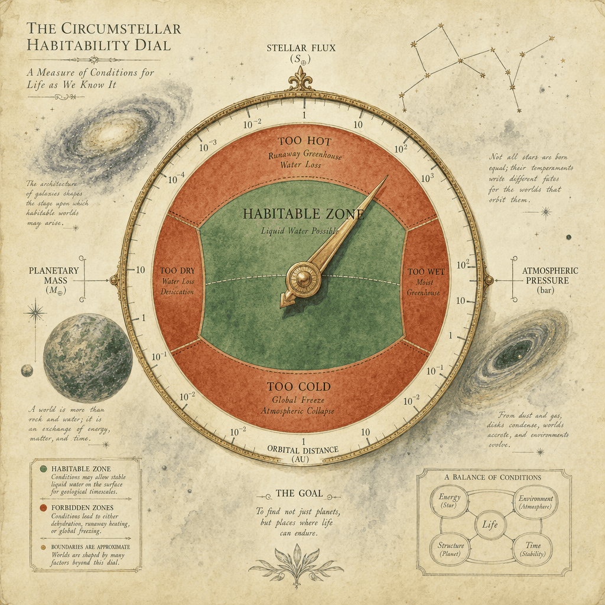
Ilustración para el Chapter 5 : Cosmology and Existence – Contingency, Origin, and Fine-Tuning
Historical Cosmological Arguments for a Necessary Existence
The cosmological argument seeks to infer the existence of a necessary or first cause of reality from the existence or beginning of the universe. This line of reasoning has deep historical roots in philosophy and theology . Key classical formulations include:
Aquinas’s Cosmological Arguments: Thomas Aquinas (1225–1274) offered several versions in his Summa Theologica. Notably, his Third Way argues from contingency: things in the world come into being and pass away (they are contingent); if everything were contingent and could not exist, then, Aquinas argues, at some time in the past nothing would have existed. But if nothing ever existed, nothing would exist now – which is false . Therefore, there must be at least one necessary being that must exist and provides the ground for all contingent beings . Unlike later Kalam arguments, Aquinas did not hinge this on a beginning in time; he held that even an eternal universe would require a sustaining cause of its existence . Thus, Aquinas’s argument is that the universe’s existence right now depends on a necessary being (which he identifies as God) to uphold it, whether or not the universe had a temporal beginning.
Leibniz’s Principle of Sufficient Reason: Gottfried Wilhelm Leibniz (1646–1716) formulated a classic argument from sufficient reason and contingency. Leibniz asked, “Why is there something rather than nothing?” and argued that no contingent fact can be fully explained by another contingent fact – ultimately, the sufficient reason for the existence of the contingent universe must lie in a necessary substance that carries the reason for its existence in itself . In Leibniz’s words, “The sufficient reason… is found in a substance which… is a necessary being bearing the reason for its existence within itself.” This necessary being (God) explains the existence of all contingent reality. In modern terms, this is sometimes called the Leibnizian cosmological argument or argument from contingency. It relies on the Principle of Sufficient Reason (PSR) – the philosophical principle that every existent thing or true fact must have an explanation for why it is so and not otherwise . If one accepts the PSR, then one is led to posit an ultimate explanation – a necessary entity that itself needs no external explanation. Even without full acceptance of a strict PSR, many find it more plausible that some transcendent necessary being accounts for the existence of the universe, rather than believing that reality as a whole is a brute fact with no explanation . Thus, for Leibniz and his successors, the very contingency of the cosmos (that it could have been otherwise or not existed at all) is evidence that points toward a necessary, self-existent Ground of Being.
Kalam Argument in Islamic and Contemporary Thought: In medieval Islamic theology (kalām), scholars developed a cosmological argument focusing on the universe’s beginning in time . For example, Al-Ghazālī (1058–1111) contended that actual infinites cannot exist in reality and thus an infinite past is impossible; hence the world began to exist, and whatever begins must have a cause . This reasoning was later termed the Kalām Cosmological Argument. A simple formulation is given by modern philosopher William Lane Craig (who revitalized this argument in contemporary debates ):
Everything that begins to exist has a cause of its existence.
The universe began to exist.
Therefore, the universe has a cause of its existence.
Typically, further reasoning is offered that this cause must be outside the universe (since physical reality itself began) and therefore is immaterial, eternal, and powerful – often concluding that the cause is God . Craig, following al-Ghazālī, defends premise (2) with philosophical arguments against an infinite temporal regress and appeals to scientific evidence of a cosmic beginning (more on that below). Notably, premise (1) relies on a deep intuition or metaphysical principle that ex nihilo nihil fit – “from nothing, nothing comes,” i.e. being cannot spontaneously arise from non-being . Even critics of the Kalam argument acknowledge its intuitive appeal: “something cannot come from nothing” resonates with basic metaphysical intuition . The Kalam argument thus dovetails with modern cosmology’s indications of a beginning, bringing ancient Islamic thought into dialogue with contemporary science. As we will see, the question of whether the universe had a beginning is central to modern cosmological discussion of contingency.
These classical arguments differ in emphasis – Aquinas and Leibniz focus on the contingency of the world (needing a sustaining necessary being), while the Kalam focuses on temporal origination (needing a first cause in time). Both themes, contingency and origin, remain highly relevant. They raise profound questions: Is the universe contingent (could it have been otherwise or not existed)? Did it have an origin in time? If so, what is the nature of the cause or explanation behind it? These questions set the stage for examining the findings of modern cosmology.
Big Bang Cosmology – The Beginning of the Universe and its Contingency
Modern cosmology has dramatically advanced our understanding of the universe’s origin. The Big Bang theory – supported by a broad scientific consensus – posits that the universe expanded from an extremely hot, dense state about 13.8 billion years ago . Space and time, as we know them, are thought to have begun with this primordial event. This marks a stunning convergence with the Kalam’s premise that the universe began to exist. Indeed, throughout the 20th century, discoveries forced scientists “to the uncomfortable conclusion that our universe came into being in the finite past” . In effect, what many religious thinkers had long affirmed – a temporal beginning – gained empirical backing: Edwin Hubble’s observation of an expanding universe (1929) and the discovery of the cosmic microwave background radiation (1965) confirmed key predictions of a cosmic origin from a hot, dense beginning.
Such a finite past has philosophical import. A cosmos with a beginning in time naturally prompts the question of what caused that beginning. Physicist Stephen Hawking once commented, “A point of creation would be a place where science broke down. One would have to appeal to religion and the hand of God.” . In other words, if there is an initial moment where physical laws and explanations run out, it looks like a moment of creation ex nihilo (out of nothing), which classical theology attributes to a Creator. The Big Bang, when first proposed, indeed “sounded too much like the creation ex nihilo of Genesis” to some researchers – leading a few, like Fred Hoyle, to prefer steady-state models that avoid a beginning. But steady-state cosmologies fell out of favor as evidence mounted for a Big Bang beginning. By now, as noted, the Big Bang model is well established: “there’s scientific consensus that our universe exploded into existence… in an event known as the Big Bang.” .
Does the Big Bang imply a “creation from nothing”? In the standard Big Bang model, as one extrapolates back in time, one reaches a state of extremely high density and temperature – classically, a singularity at time t = 0. This is often taken to mark the beginning of the universe (when space and time themselves emerged). If so, the cosmos indeed had a first moment. However, physicists are quick to note that the classical Big Bang singularity may simply indicate the breakdown of known physics – quantum gravity effects could avert an actual “point” singularity. Researchers have proposed models to explain what, if anything, preceded the Big Bang:
Hawking’s No-Boundary Proposal: Stephen Hawking and James Hartle suggested in 1983 that the universe could be finite in time but without a boundary or singular start. Using a concept of “imaginary time,” their model smooths out the t=0 point – making the universe akin to a sphere that has no edge (just as there’s no edge to Earth’s surface, there’s no precise “before” the Big Bang, since time’s boundary is rounded off) . Hawking explained that asking what happened before the Big Bang is meaningless, “like asking what lies south of the South Pole”, if his no-boundary condition holds . In this view, the universe could be self-contained, with no initial singularity – potentially removing the need for a metaphysical cause at a specific moment. However, even the no-boundary model doesn’t evade the question of existential origin entirely: it still posits a law (the wave function of the universe) that brings the cosmos into being. The philosophical question of “why is there something rather than nothing?” can be shifted but not eliminated – even a no-boundary universe is still contingent on the laws of physics (and one may ask why those laws, and not others, obtain).
Oscillating or Cyclical Universes: Another idea is that perhaps the universe did not begin 13.8 billion years ago, but has undergone endless cycles of expansion and contraction (“Big Bang, Big Crunch, Big Bang, …”). This would imply an eternal series of universes. However, thermodynamics poses a serious challenge: with each cycle, entropy (disorder) would build up. Over an infinite past, the universe would have inexorably wound down to heat death by now, unable to spring into a fresh, low-entropy Big Bang. In fact, cosmologist Alexander Vilenkin notes that in a cyclic model, “disorder would accumulate with each cycle… If the universe had been going through this process eternally, we should find ourselves in a universe completely disordered and dead”, which we plainly do not . The observed low entropy of our Big Bang (discussed more below) indicates our universe is not an infinitely old cyclical one. Thus, cyclic models cannot be extended infinitely into the past without contradiction .
Eternal Inflation and Multiverse Models: The most discussed modern alternative to a singular beginning is the idea of a multiverse that exists eternally, spawning many Big Bangs (universes) of which ours is just one bubble. In cosmic inflation theory, originally proposed by Alan Guth in 1980, the early universe underwent an exponential expansion that smoothed it out . Inflationary theory, in some forms, implies that inflation might be eternal – while our pocket of space stopped inflating and became a hot Big Bang, other regions might still be inflating, generating potentially infinitely many universes over time. Could this avoid a true beginning? Interestingly, a well-known result, the Borde-Guth-Vilenkin (BGV) theorem (2003), suggests that even an inflationary multiverse must have a past boundary under reasonable assumptions. Vilenkin and colleagues proved that any universe (or multiverse) on average expanding must be geodesically past-incomplete – in other words, it cannot be extended infinitely into the past; there must be some boundary or start to the inflationary process . Vilenkin, after examining various eternal universe scenarios (eternal inflation, cyclicity, a static “cosmic egg”), concluded: “All the evidence we have says that the universe had a beginning.” . This is a striking statement from a leading cosmologist: despite creative models, the weight of cosmological evidence still points to a finite past and some kind of cosmic genesis.
In sum, modern cosmology has largely confirmed a beginning (as religious thinkers long asserted), even if the precise nature of the beginning is still debated. A genuine beginning in time buttresses the Kalam argument – if the universe began to exist, the intuitive need for a cause or explanation kicks in with full force. Even if one entertains models where the universe has no sharp boundary, the fact that the universe (or multiverse) is not eternal in the past suggests that reality is not self-existent; it had to originate somehow. This strongly implies contingency: the universe might not have existed – and for the cosmological argument, that “might not” is a key indicator that an external cause or a metaphysical reason is needed to explain why it does in fact exist .
The Low-Entropy Beginning and the “Improbability” of the Universe
Another aspect of modern cosmology relevant to contingency is the entropy of the early universe. The Second Law of Thermodynamics tells us that closed systems tend toward higher entropy (disorder) over time. Our universe today still has ordered structures (galaxies, stars, life) and far from maximum entropy; in fact, it appears the universe began in an extraordinarily low-entropy, highly ordered state . Sir Roger Penrose famously quantified how special this initial state was. He calculated that the odds of an initial low-entropy state compatible with our life-friendly universe (just by random chance) are about 1 in 10^10^123 – an inconceivably small probability . To call this number “astronomical” would be a gross understatement; as Penrose puts it, achieving such order by chance is “an extraordinary figure” beyond imagination . He quipped that this tells us “how precise the Creator’s aim must have been” to hit such a target, noting one could not even write down all the zeros in that number . (Penrose himself used the term “Creator” metaphorically, but the implication of fine-tuning is clear .)
What does this mean philosophically? It underscores that the initial conditions of the cosmos were exquisitely arranged. If one assumes a purely random, undirected universe, it is hard to see why it started in such an ordered state (rather than in a high-entropy chaos). The low-entropy Big Bang stands out as a cosmic contingency that “begs for an explanation” . Some cosmologists have even entertained that this astonishing order might hint at some kind of teleological principle or constraint beyond known physics. At minimum, Penrose’s result is often cited by theists as powerful evidence of deliberate design – the universe’s beginning state was set up in a highly improbable, “just right” way to allow for the complexity and life that followed . (Alternative attempts to explain it, such as inflationary cosmology, do not actually eliminate the need for an initial low-entropy condition; in fact, inflation requires even more special initial conditions in some respects .)
Summary: Modern cosmology reinforces the notion of the universe’s contingency and origin in several ways. The Big Bang gives a finite beginning, which cries out for a cause or reason beyond the universe. Efforts to avoid a beginning (no-boundary universe, cyclic models, eternal inflation) have not succeeded in eliminating a past boundary or the need for initial conditions – something must be “given” to start the physics. The incredibly ordered initial state further accentuates how non-random our cosmos appears to be from the very start. All of these findings resonate with the cosmological argument’s core intuition: the universe is not the kind of thing that explains itself. If it had a beginning, we seek a beginner; if it is contingent, we seek a necessary ground. In the next section, we consider another facet of cosmology that amplifies this intuition: the precise tuning of the universe’s fundamental parameters, which many argue points to purpose and design.
Fine-Tuning of Physical Constants and the Inference of Design
One of the most remarkable discoveries of late-20th-century physics and cosmology is that the fundamental constants and initial quantities of the universe are finely tuned for the emergence of complex life. The term fine-tuning refers to the observation that many independent parameters of physics – the strengths of forces, masses of elementary particles, cosmic initial conditions – fall within an extraordinarily narrow range that permits the existence of atoms, stars, planets, and life as we know it . Even slight deviations in these values would render the universe inhospitable to any form of complexity. Some examples of these cosmic “sweet spots” include:
The cosmological constant (energy density of empty space): Empirical measurements show it is about 10^(-120) in Planck units. If this constant were even a tiny bit larger (say on the order of 10^(-119) instead of 10^(-120)), the universe’s expansion would have accelerated so fast that galaxies and stars could not form . Steven Weinberg noted this value is stunningly “unnatural” on an atheistic or random model of the universe . It’s as if the vacuum energy was dialed down to almost zero, but not exactly zero – a vanishingly precise balance that allows cosmic structure. Susskind puts it in perspective: the vacuum energy appears tuned to 120 decimal places of precision – “to make the first 119 decimal places of the vacuum energy zero is almost certainly no accident,” he writes .
The strength of gravity relative to electromagnetism: If gravity were significantly stronger, stars would burn out much faster and small planets could not exist; if it were weaker, stars might not ignite nuclear fusion, and heavy elements essential for life might never form. A change on the order of even a few percent in the gravitational constant or the ratio of proton to electron mass would drastically alter the chemistry of the universe .
The initial entropy (as discussed): The Big Bang’s initial conditions had to be very special. As we saw, the odds of such a low-entropy state by chance are infinitesimal . This can be viewed as fine-tuning of initial conditions – the universe started in an extremely ordered state that allows billions of years of complex structure formation.
“Just Six Numbers”: As summarized by astrophysicist Martin Rees, six dimensionless numbers (such as the fine structure constant, the ratio of fundamental forces, etc.) form a “recipe” for a life-permitting universe . Tweak any of them, and the universe becomes barren. Rees and others have documented how sensitive the universe’s structure is to these key values .
Over the decades, scientists like John D. Barrow and Frank Tipler compiled extensive evidence of such fine-tuning in The Anthropic Cosmological Principle (1986) . They and others articulate various forms of the anthropic principle – the idea that we can explain some of this tuning by noting that we observers can only exist in universes that have the right conditions for observers. In the words of Brandon Carter (who coined the term in 1973), what we can expect to observe must be restricted by the conditions necessary for our presence as observers. The Weak Anthropic Principle (WAP) simply states this truism: we observe this universe because it allows observers to exist. The Strong Anthropic Principle goes further to suggest perhaps the universe must have those properties which allow life at some stage, hinting at deeper theory or purpose .
However, the bare anthropic principle alone is not an explanation for fine-tuning; it’s more of a selection effect description. The real question remains: why do the constants fall in the life-permitting range to begin with? By the late 20th century, it became “broadly agreed among physicists and cosmologists” that fine-tuning is a real phenomenon that demands some explanation . As one review puts it, “There is now broad agreement that the universe is in several respects ‘fine-tuned’ for life” – the debate is over what explanation to give.
From a theistic perspective, the fine-tuning is naturally explained as intentional design. If a divine Creator purposed to bring about life (and eventually intelligent life capable of observing the universe), then we expect the universe’s parameters to be set just right to achieve that end . In this view, the various “cosmic coincidences” are not coincidences at all, but the result of teleology (purpose). Many consider this a modern, scientific form of the teleological argument (argument from design). As philosopher Robin Collins argues, the probability of obtaining a life-permitting universe by chance is astronomically low, whereas if a Creator wanted to create life, the probability of a life-friendly universe is high . Thus our observation strongly favors the design hypothesis over a chance hypothesis – one can even compute a Bayesian likelihood ratio on the order of 10^120 or more in favor of theism, given the tiny proportion of possible universes that would permit life . William Lane Craig summarizes: it is the combination of enormous improbability under atheistic chance and the existence of a specific life-permitting order (a pattern that is meaningful) that are “the earmarks of design” . In essence, that our universe fits a narrow specification (allowing life) when it could easily have been chaos is taken as positive evidence for an intelligent fine-tuner. Even Stephen Hawking, speaking of the fine adjustments of the constants, wrote: “The remarkable fact is that the values of these numbers seem to have been very finely adjusted to make possible the development of life.” (This from an author who did not readily invoke God – highlighting that the appearance of fine-tuning is an objective fact, whatever one’s interpretation.)
Naturally, there are non-theistic responses to fine-tuning:
Chance – Could we really just be extremely lucky? This seems implausible when one multiplies the probabilities of all independent parameters aligning in the life-permitting range (the combined odds would be outrageously small, essentially zero ). In probabilistic terms, an event with probability less than 1 in 10^50 is often considered effectively impossible; fine-tuning examples are frequently far more extreme . As one scientist remarked, “we’re not talking about a single unlikely event here. We’re talking about hitting the jackpot over and over again” to get a universe like ours by blind luck . So while logically it’s not impossible that we just won a one-in-10^10^123 lottery, many find that an unsatisfying explanation, especially without some mechanism to make many “trials” (which leads to the multiverse idea).
Physical necessity – Perhaps there is some deeper law or theory of everything that forces the constants to have the values they do; i.e., maybe there is no free parameter at all – the universe could not have been otherwise. This is an intriguing possibility, but so far we have no evidence of such a unique theory that fixes constants. The values appear contingent in our current best theories (the Standard Model of particle physics, cosmological models, etc., all have free parameters). Absent any known reason that, say, the electron’s charge must be exactly what it is, the “necessity” hypothesis is speculative. John Barrow points out that even if future physics explains one constant’s value, it often will involve new constants or initial conditions, so some element of contingency remains . In any case, the idea of an underlying necessity doesn’t avoid the question; it just buries it one layer deeper (why that theory or “meta-law” with those fixed values?).
Multiverse (Anthropic Selection) – By far the most popular non-design explanation for fine-tuning is the multiverse hypothesis. The conjecture is that our universe is just one of a vast ensemble of universes (whether in a literal multiverse of distinct regions or sequential universes, or as possible domains in a larger quantum cosmology). If there are an enormous (perhaps infinite) number of universes with varied constants and initial conditions, then it’s not surprising that some universe turned out to have the right combination for life. We, as observers, could only exist in that rare universe, so naturally we find ourselves in a fine-tuned cosmos – nothing beyond the laws of probability and selection effect. This leverages the Weak Anthropic Principle together with a large sample size of universes.
Modern physics has provided some motivation for multiverse ideas: eternal inflation implies bubble universes with different properties; string theory’s landscape of ~10^500 possible vacuum configurations suggests a huge variety of possible universes . According to Leonard Susskind (a leading string theorist), the existence of a landscape of vacua means our universe’s features might be a random draw; he even titled his book The Cosmic Landscape: String Theory and the Illusion of Intelligent Design – implying that fine-tuning only appears designed but in reality arises from cosmic lottery. Susskind acknowledges the “uncanny… spectacularly well-designed” appearance of the universe, particularly the cosmological constant being so near zero, but he favors the multiverse as the scientific explanation .
It’s worth noting how some scientists frame the stakes: “If there is only one universe,” says cosmologist Bernard Carr, “you might have to have a fine-tuner. If you don’t want God, you’d better have a multiverse.” . Steven Weinberg – an avowed atheist – similarly commented that an impressive fine-tuning would leave only two options: “a benevolent Designer or a multiverse.” In other words, even atheistic physicists recognize that without the multiverse, the fine-tuning cries out for a design explanation. The multiverse is thus sometimes seen as the only viable alternative to the God hypothesis in face of fine-tuning. This is why debates about the multiverse often carry philosophical and theological overtones. Proponents argue it provides a naturalistic way to understand our fortunate cosmos without invoking divine purpose. Detractors point out that the multiverse (at least currently) is highly speculative and unobservable – raising the question of whether it’s a scientific explanation at all or more of a metaphysical speculation. Moreover, even if a multiverse exists, one can ask: why does that multiverse exist, with those laws? The problem of contingency can just recur at the higher level (as physicist Paul Davies observes, the multiverse “shifts the problem up a level” to the laws governing the multiverse ). There is also the issue that an infinite multiverse could predict all sorts of bizarre or lethal universes, and it’s non-trivial that only nice life-permitting ones would exist; anthropic reasoning must be applied carefully to avoid unfalsifiable conclusions .
In summary, the fine-tuning debate pits the design hypothesis against the multiverse hypothesis (with a small minority holding out for pure chance or undiscovered physical necessity). As of now, fine-tuning is a well-established fact in science; what it means is hotly debated. For our purposes in evaluating evidence for God, fine-tuning (if not explained away by some multiverse) is a significant pro argument – it suggests that the universe is neither random nor self-explanatory, but rather intricately calibrated, which is exactly what we would expect if an intelligent Creator had set up the cosmos for a purpose . We now turn to how leading scientists and thinkers interpret these cosmological findings, and then connect these insights back to the variables in our probabilistic model.
Perspectives of Leading Thinkers: Penrose, Hawking, Susskind, Barrow
To appreciate the intersection of cosmology and philosophical inference, it’s helpful to see what some renowned scientific thinkers have said about these issues:
Roger Penrose: A mathematical physicist known for contributions to general relativity and quantum theory, Penrose has often highlighted the extraordinary nature of the Big Bang’s initial state. We saw his calculation of the 1 in 10^10^123 odds for low entropy – a figure he uses to illustrate how “special” the universe’s initial conditions were . Penrose, who is not an advocate of traditional theism, nevertheless uses almost teleological language: the precision is such that it’s as if the universe “knew we were coming.” He has criticized the idea that inflation theory by itself can explain this fine-tuning; inflation might explain how a tiny region became large and smooth, but it assumes a low-entropy patch to start with, so it “begs the question” of why that patch existed . Penrose’s candid reflections underscore that even a scientifically sophisticated mind finds the order of the universe deeply puzzling if one rejects any sort of planning or guiding principle. In his search for understanding, Penrose has explored novel ideas (conformal cyclic cosmology, for instance), but the core takeaway is that he agrees with fine-tuning proponents on the facts: the universe’s initial conditions and constants are astonishingly special. It’s a point of departure for deeper inquiry – some see the hand of God, others seek a new physics, and Penrose has at times done both.
Stephen Hawking: Stephen Hawking (1942–2018), one of the most famous cosmologists, had a nuanced position. Early in his career, Hawking (with Penrose) proved singularity theorems that supported the idea of a beginning of time under general relativity. Later, he proposed the no-boundary quantum cosmology to remove the singular beginning. Hawking often discussed God in metaphorical terms; for example, he asked, if the no-boundary model is correct, “What place, then, for a creator?”. At the same time, as noted, Hawking openly acknowledged the appearance of fine-tuning in his popular writings. The quote from A Brief History of Time (1988) about the constants being “very finely adjusted” for life is famous. In his final book Brief Answers to the Big Questions (2018), Hawking reiterated his stance that no God is needed, arguing that laws like gravity enable a universe to create itself spontaneously. Yet, Hawking’s own awe at the complexity of the cosmos was palpable. He mused that discovering a complete theory of the universe would allow us to “know the mind of God” (speaking figuratively). In summary, Hawking’s work attempted to naturalize the origin (through physics like quantum gravity), but he never denied the remarkable order in the universe – he simply hoped that a scientific theory could ultimately account for it without invoking a deity. His South Pole analogy (that asking what came before the Big Bang is meaningless under the no-boundary proposal) is clever, but one can still question whether this truly eliminates the need for an explanation or simply reframes it . Even Hawking’s no-boundary universe, as a structured model with specific laws, raises the question “Why this structure?”. Thus Hawking’s legacy in this debate is twofold: he helped sharpen the questions (by bringing quantum cosmology to bear) and also provided memorable articulations of fine-tuning and creation issues (which theists and atheists alike cite, sometimes in their favor).
Leonard Susskind: A pioneer of string theory, Susskind has been at the forefront of advocating the multiverse as an answer to fine-tuning. He famously engaged in a public debate with other physicists (like Lee Smolin) about the legitimacy of anthropic reasoning. Susskind’s book The Cosmic Landscape argues that what looks like intelligent design is actually the result of us living in a vast multiverse with myriad different physical laws – we just happen to be in one of the rare life-compatible pockets. Susskind does not shy from acknowledging the magnitude of fine-tuning: for example, he calls the near-zero cosmological constant “likely no accident” because expecting 120 zeros of cancellation by chance is absurd. His response is that an underlying theory (like the string landscape) produces on the order of 10^500 different vacuum states, and presumably most have big cosmological constants; a few will accidentally have the small value we need, and only those universes get galaxies and observers. Thus, given a multiverse, it’s not surprising one universe is like ours. Susskind’s stance is echoed by other prominent scientists like Stephen Weinberg (who actually anticipated the small cosmological constant via an anthropic argument). One might say Susskind concedes the fine-tuning but contests the inference of design. Instead of God, he posits a kind of cosmic lottery with enough tickets that our winning ticket (a life-permitting universe) isn’t so improbable after all. Philosophically, this raises issues about falsifiability and parsimony: the multiverse is a bold hypothesis which may be impossible to test directly. Susskind and colleagues would argue we might find indirect evidence (e.g. if the constants of our universe fall in certain statistically typical ranges assuming a multiverse distribution). For now, his view remains a speculative but influential counter to the design argument. Susskind’s contributions underscore that the scientific community takes fine-tuning seriously – seriously enough to entertain ideas that just a few decades ago might have been dismissed as metaphysical. As Bernard Carr quipped, rejecting design may “force” one to accept a multiverse , and Susskind is a prime example of a scientist who chooses the multiverse route.
John D. Barrow: A renowned cosmologist who co-authored The Anthropic Cosmological Principle and wrote extensively on cosmology and philosophical implications, Barrow’s work bridges science and deeper questions. Barrow, along with Tipler, catalogued numerous instances of fine-tuning and articulated various Anthropic Principles (Weak, Strong, and even a proposed Final Anthropic Principle). Barrow’s perspective was that the anthropic principle is not so much a solution but a useful framework for thinking about why the laws of nature are as we see. He was relatively agnostic about theological conclusions – he presented the evidence that the universe fits an astonishingly narrow set of requirements for life, and he explored naturalistic explanations as well as the idea that perhaps the universe is intended to produce observers. For example, Barrow and Tipler conclude their massive 700-page survey by discussing how one might interpret this convergence of factors. They stop short of endorsing traditional theism; however, they do remark on the striking “coincidences” that make the existence of carbon-based life possible . Barrow also gave vivid illustrations: e.g., if certain nuclear resonances in carbon production (the Hoyle resonance) were even slightly different, we wouldn’t exist – something that led astrophysicist Fred Hoyle (previously an atheist) to comment that it’s as if “a superintellect has monkeyed with physics” . Barrow’s own view could be described as one of wonder and openness: he acknowledged the fine-tuning as real and scientifically intriguing, and he did not dismiss the possibility that it points to something meaningful about the universe. At the same time, he treated the anthropic principle as a methodological principle rather than a magic wand – meaning we use anthropic reasoning to guide thinking (for instance, predicting that certain parameters will be in the life-permitting range because otherwise we wouldn’t observe them), but that doesn’t ultimately answer the ontological question of “why those parameters in the first place?” . In an academic context, Barrow’s work is frequently cited to show that fine-tuning is taken seriously in cosmology, and that one can discuss it without immediately leaping to either the God conclusion or the multiverse conclusion. His nuanced stance encourages continued dialogue between physics, philosophy, and theology.
Each of these thinkers engages with the data of cosmology in a way that intersects with our big questions of contingency, origin, and design. Penrose and Hawking highlight the mysteries (entropy, initial conditions, what came before) and offer different resolutions; Susskind and Weinberg represent the push for a multiverse to avoid a creator; Barrow exemplifies the reflective scientist who weighs anthropic explanations and acknowledges the profound character of the problem. Engaging with their ideas enriches our understanding and ensures that our arguments are informed by the best science available. It also shows that the conversation about God and cosmology is not occurring in an intellectual vacuum – it is happening in dialogue with cutting-edge physics and cosmological theory.
Fine-Tuning (FT) and Metaphysical Necessity (MN) in a Probabilistic Framework
Having surveyed the relevant cosmological concepts, we can now connect these insights to the evidential variables FT and MN in our probabilistic model of God’s existence. In our logistic regression framework (introduced elsewhere in this book), each variable captures a facet of reality that might make God’s existence more or less likely . FT (Cosmological Fine-Tuning) and MN (Metaphysical Necessity) are two crucial variables grounded directly in cosmology and philosophy of existence. We will not delve into any equations or numerical assignments here (those belong to later chapters), but we will solidify what these variables mean and why they deserve a place in the model.
Cosmological Fine-Tuning (FT): This variable represents the collective evidence we discussed regarding the precise constants and initial conditions required for life. Conceptually, FT captures the intuition that a universe finely calibrated for life is more likely if there is a purposeful Creator than if everything arose by unguided chance . In formal terms, one can think of FT as correlating with the likelihood ratio favoring theism over atheism given a life-permitting universe. If our universe is one out of an extremely large ensemble of possible parameter settings, and if only a vanishing fraction of those possibilities allow life, then observing this universe multiplies the odds of a designing intelligence behind it (unless an atheistic multiverse is postulated to counterbalance that improbability) . In grounding FT philosophically, we lean on the Teleological Argument updated for modern science: the “purposeful order” in nature (here at a cosmic fundamental level) is seen as evidence of an ordering Mind. We have cited how even skeptical scientists recognize the fine-tuning as something that “cries out for explanation” . The FT variable is justified by this widely acknowledged fact of nature, and by the theistic interpretation that offers a robust explanation for it . When we include FT in the logistic model, we are effectively encoding the argument, “Given that the cosmos appears deliberately set up for life, it is more likely that a deliberate Agent (God) is behind it.” Of course, we remain aware of the multiverse counter-argument; later chapters will address how to factor in the possibility of a multiverse when assessing the strength of FT. But conceptually, unless and until the multiverse is confirmed with explanatory power, the fine-tuning stands as a pointer to a metaphysical designer. Thus, FT rests on solid scientific observations and has a clear rationale as evidence: if God exists and wanted to create life, we expect fine-tuning; if no God, fine-tuning is unexpected, so the datum of fine-tuning favors the God hypothesis .
Metaphysical Necessity (MN): This variable corresponds to the cosmological argument from contingency – the idea that the existence of the universe (or any contingent thing) requires an explanation in something that exists by necessity (i.e., a being that cannot not exist) . MN essentially asks: Is there a metaphysically necessary foundation to reality? If yes, that strongly suggests God (as traditionally conceived, God is a metaphysically necessary being – one whose non-existence is impossible and who provides the explanatory ultimate for everything else). If no, one is saying reality might just be a brute fact, with no ultimate reason. The MN variable = 1 can be thought of as the stance, “There must be an ultimate reason or ground for existence (a necessary being),” whereas MN = 0 would be the stance “Reality might just exist without any explanation; no necessary being is needed.” . Our discussion of Aquinas, Leibniz, and others lays the groundwork for why MN = 1 is a rational stance. Through Leibniz’s PSR, for example, we saw that if one embraces the principle that every contingent fact needs a sufficient reason, one is logically led to posit a necessary entity as the terminus of explanation . Aquinas’s and Avicenna’s arguments similarly claim that contingent beings alone cannot account for their own existence – something non-contingent (necessary) must undergird all . In simpler terms, MN reflects the age-old intuition that nothing comes from nothing, and if the universe (all contingent being) exists, there must be something that has to exist to get things started or keep things going. We include MN in the model because this intuition remains a powerful piece of evidence in philosophical theology. It is less about empirical data (unlike FT) and more about the logical structure of explanation and existence. Yet it connects deeply with cosmology: the fact that the universe had a beginning and is contingent in its properties bolsters the sense that it is not the necessary being itself. Some philosophers (e.g. Spinoza or certain naturalists) have speculated that perhaps the universe or the laws of physics are “necessary” – but this is a controversial and minority view. Typically, the universe is regarded as contingent (it might not have existed, and it doesn’t seem to exist by its own nature), which points to something beyond it that exists of its own nature . In our model, a higher weight on MN means we give credence to the cosmological argument’s premise that contingent existence is evidence for God. We ground this in the consensus of centuries of philosophy: “The existence of any contingent thing at all is evidence that a necessary being exists.” .
In the logistic regression approach, we treat FT and MN as independent variables, though in truth they are related strands of cosmological reasoning – one empirical, one metaphysical. We avoid double-counting by distinguishing that FT addresses the specific character of the universe (its life-friendly calibration), while MN addresses the sheer existence of the universe (contingent vs. necessary). Both together cover the breadth of the cosmological evidence: FT deals with how the universe is (orderly, “fine-tuned”), MN deals with that the universe is (contingent). These variables are conceptually justified by our discussions above: FT is backed by contemporary physics and design arguments, MN is backed by classical metaphysics and the principle of sufficient reason. They have strong philosophical grounding in the works of Aquinas, Leibniz, and many modern defenders (e.g., Richard Swinburne and Alexander Pruss continue to defend versions of the contingency argument in today’s literature ). By including them, our model acknowledges that the cosmological realm provides some of the most formidable evidence in favor of theism – evidence that is not just scriptural or subjective, but rooted in the existence and structure of the world itself.
Before proceeding, we reiterate that in this chapter we have laid a conceptual foundation. We stopped short of numerical probabilistic modeling or weighing of these factors – that will come in later chapters. Here, our goal was to establish why FT and MN matter, and what content they encapsulate. In doing so, we traced the history of cosmological arguments, reviewed modern cosmological findings (Big Bang, inflation, entropy, multiverse) and the fine-tuning debate, and saw how leading scientists interpret these issues. All this provides a rich interdisciplinary context for our probabilistic analysis. When we later assign a coefficient to the Fine-Tuning variable, we will recall the enormity of the likelihood shift suggested by a 1 in 10^120 kind of coincidence . When we consider the Metaphysical Necessity variable, we will remember the robust philosophical argumentation that a contingent universe is incomplete without a necessary foundation . In a sense, FT and MN in the model quantify the intuitions that the world looks engineered and the world requires an ultimate cause. These intuitions, now buttressed by scientific and philosophical analysis, form a crucial part of the cumulative case for God that our logistic regression framework seeks to evaluate.
Conclusion: Cosmology, perhaps more than any other field, has expanded the natural theology conversation in the last century. The universe has proven to be dynamic, contingent, and astonishingly structured. This has revitalized classical arguments (like Kalam and contingency) and given birth to new ones (like fine-tuning). In our study of the probability of God’s existence, the insights from cosmology serve as a pillar: they address existence at the largest scale and most fundamental level. The contingency of the universe’s origin and the fine-tuning of its order are two sides of a coin – both pointing beyond themselves. Whether one ultimately sees the hand of God in these or not, any honest inquiry must grapple with them. As we move forward, having established Cosmology and Existence as a key theme, we will be better prepared to integrate these insights with those from morality, consciousness, and other domains, building towards a comprehensive probabilistic model. Our foundation is set: the heavens indeed declare a story, and now we have the tools to begin quantifying how that story influences the odds of God.
Aquinas, T. (1265–1274). Summa Theologiae, I, Q2, Art. 3.
Al-Ghazālī (2000). The Incoherence of the Philosophers. Translated by M.E. Marmura. Brigham Young University Press.
Barrow, J.D. and Tipler, F.J. (1986). The Anthropic Cosmological Principle. Oxford: Oxford University Press.
Carr, B. (2007). ‘Universe or Multiverse?’, Astronomy & Geophysics, 48(2), pp. 2.29–2.32.
Collins, R. (2009). ‘The Teleological Argument’, in Craig, W.L. and Moreland, J.P. (eds) The Blackwell Companion to Natural Theology. Chichester: Wiley-Blackwell, pp. 202–281.
Craig, W.L. (1979). The Kalām Cosmological Argument. London: Macmillan.
Davies, P. (2007). Cosmic Jackpot: Why Our Universe is Just Right for Life. Boston: Houghton Mifflin Harcourt.
Draper, P. (1989). ‘Pain and Pleasure: An Evidential Problem for Theists’, Noûs, 23(3), pp. 331–350.
Guth, A.H. (1981). ‘Inflationary universe: A possible solution to the horizon and flatness problems’, Physical Review D, 23(2), pp. 347–356.
Hawking, S. (1988). A Brief History of Time. New York: Bantam Books.
Hawking, S. and Hartle, J.B. (1983). ‘Wave Function of the Universe’, Physical Review D, 28(12), pp. 2960–2975.
Leibniz, G.W. (1714). The Principles of Nature and Grace, Based on Reason.
Penrose, R. (1989). The Emperor’s New Mind. Oxford: Oxford University Press.
Pruss, A. (2006). The Principle of Sufficient Reason: A Reassessment. Cambridge: Cambridge University Press.
Rees, M. (1999). Just Six Numbers: The Deep Forces That Shape the Universe. London: Weidenfeld & Nicolson.
Susskind, L. (2005). The Cosmic Landscape: String Theory and the Illusion of Intelligent Design. New York: Little, Brown.
Swinburne, R. (2004). The Existence of God, 2nd ed. Oxford: Oxford University Press.
Vilenkin, A. (2006). Many Worlds in One: The Search for Other Universes. New York: Hill and Wang.
Weinberg, S. (1987). ‘Anthropic Bound on the Cosmological Constant’, Physical Review Letters, 59(22), pp. 2607–2610.
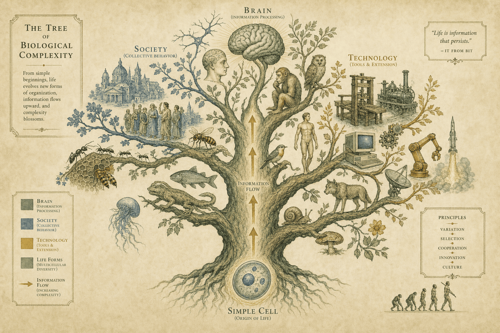
Ilustración para el Chapter 6: Life and Mind – Biological Complexity and Consciousness
In this chapter we explore two profound enigmas at the intersection of science, philosophy, and theology: the origin of biological life (and the informational complexity it entails) and the emergence of consciousness. Both “life” and “mind” present challenges to reductionistic explanations. We will examine, in Part A, how current naturalistic hypotheses attempt to explain the origin of life and evaluate their strengths and limitations, especially in terms of the information-theoretic complexity of even “simple” living systems. In Part B, we turn to consciousness and the “hard problem” of subjective experience, surveying major philosophical perspectives (materialism, dualism, panpsychism) and considering whether the existence of mind points to a primordial Mind or informational field – a theistic interpretation in which God is the ultimate source or “broadcaster” of consciousness. Throughout, we maintain a scholarly, interdisciplinary approach, citing current scientific and philosophical literature to illuminate these questions.
Part A. The Origin of Biological Life and the Problem of Information
The origin of life remains an unsolved problem in science – how did inert matter self-organize into the first living cell, a system with astounding biochemical complexity and information content? Researchers have proposed several naturalistic hypotheses for abiogenesis (life’s arising from non-life), including the RNA World, Metabolism-First scenarios, and Panspermia. Each hypothesis offers insights but also faces significant challenges. We critically evaluate these models, then examine empirical complexity metrics suggesting the spontaneous formation of a functional cell is exceedingly improbable. We also highlight the information-theoretic paradox at life’s dawn: key biological molecules (DNA and proteins) are interdependent in a classic chicken-and-egg loop that is hard to explain by unguided processes . Finally, we consider whether life’s complexity might be better explained if information (and by extension, intelligent causation) was involved ab initio.
Naturalistic Hypotheses for the Origin of Life
The “RNA World” Hypothesis: The RNA World scenario posits that early life was based on RNA molecules which served dual roles as carriers of genetic information and as catalysts (ribozymes). This hypothesis is supported by the discovery that the ribosome – the molecular machine that builds proteins – is a ribozyme; the catalytic core of the ribosome is composed of RNA, not protein . Such findings suggest an ancient stage in which RNA alone could propagate and catalyze metabolic reactions. The strength of RNA World lies in solving a key conundrum: modern cells require proteins (enzymes) to replicate DNA and express genes, yet proteins are encoded by DNA – so which came first? RNA, capable of self-replication and basic catalysis, is seen as a plausible first biomolecule that could play both roles. Laboratory experiments have indeed evolved short RNAs that can catalyze bond formation (peptide bond formation in a primitive fashion) and even self–replicate to a limited extent .
Despite its appeal, the RNA World hypothesis faces significant difficulties . RNA is a complex polymer, and it is chemically unstable in the primordial conditions – it easily hydrolyzes and breaks down . The spontaneous formation of long, information-rich RNA strands is hard to explain; the building blocks (ribose sugar, nucleobases) themselves are not trivially produced in realistic prebiotic environments. Moreover, while RNA can catalyze reactions, known ribozymes have relatively limited catalytic repertoires (mostly cleavage and ligation of phosphodiester bonds). It appears that only very specific (and rare) RNA sequences have significant catalytic activity, meaning that an early RNA-based life would require the random emergence of just the right sequences – an event of low probability. As one review summarizes, objections to RNA-first include: “(i) RNA is too complex a molecule to have arisen prebiotically; (ii) RNA is inherently unstable; (iii) catalysis is a relatively rare property of long RNA sequences; and (iv) the catalytic repertoire of RNA is too limited.” . Proponents counter that intermediate stages or catalytic aid from peptides and lipids could have helped, but as of now, the RNA World, while the leading origin-of-life model, is far from a complete or fully plausible narrative. Even its advocates often acknowledge it is the “least bad” theory among alternatives, rather than an easy explanation .
Metabolism-First (Chemical Cycles) Hypotheses: Another class of origin-of-life theories proposes that life began not with information-carrying polymers like RNA, but with self-sustaining metabolic networks of chemical reactions. In “metabolism-first” scenarios, simple organic molecules, perhaps on mineral surfaces or in hydrothermal vents, formed autocatalytic cycles – sets of reactions that produce the catalysts needed for those same reactions, thus reproducing the network without genetic templates. Notable examples include Günter Wächtershäuser’s iron–sulfur world hypothesis (life emerging from sulfur and iron-catalyzed reactions on mineral surfaces) and Stuart Kauffman’s concept of autocatalytic sets. These models have the advantage of not requiring large biomolecules at the start; they seek a gradual path from geochemistry to biochemistry. Such chemical cycles could, in principle, form protocells – compartments with reaction networks – that later acquired genetic molecules. Some experiments have demonstrated that certain simple metabolic cycles can arise under prebiotic conditions, lending partial support to this idea.
The metabolism-first approach, however, has its own drawbacks. One major criticism is the lack of heredity: without something like DNA or RNA, how do these chemical networks store and transmit information about their composition to offspring? Proponents introduced concepts like “compound genomes” or composomes (sets of molecules whose composition can be replicated to daughter pools) as a form of rudimentary inheritance . Yet studies have shown that such networks have limited capacity for open-ended evolution. A 2010 analysis demonstrated that when “compound genomes” (ensembles of mutually catalytic molecules) grow beyond a certain complexity, they lose the very properties needed for Darwinian evolution – they do not reliably produce similar offspring compositions, essentially stalling evolution . In other words, metabolism-first models struggle to account for the emergence of true replication and variability. Additionally, while metabolism-first theories can produce interesting chemistry, it remains unclear how they would transition into the highly ordered information-bearing systems of actual biology (how to “add” genetic instructions to a self-sustaining cycle). To date, no metabolism-first model has demonstrated a realistic path to a cell-like system that can evolve greater complexity. These considerations temper the initial appeal of metabolism without genes – in practice, it seems metabolism alone cannot get evolution off the ground .
Panspermia (Life from Elsewhere): Panspermia is a fundamentally different kind of hypothesis: it proposes that life did not begin on Earth at all, but was seeded from elsewhere (another planet or space). Classic panspermia (championed by figures like Fred Hoyle and Chandra Wickramasinghe) suggests that microbial life or prebiotic building blocks traveled to Earth via comets, meteorites, or interstellar dust. A variant, “directed panspermia,” was even proposed by Francis Crick and Leslie Orgel, speculating that an advanced extraterrestrial civilization might have sent life to Earth intentionally. The panspermia idea highlights that Earth’s early environment might not have been the only or best place for life’s inception – for instance, if early Earth was too hostile, maybe life first arose on Mars (which had liquid water earlier) and then hitched a ride here on a meteorite.
The strength of panspermia is that it defers the hardest steps of abiogenesis to a possibly more favorable location or an earlier time in the universe. We know that organic molecules (amino acids, nucleobases) exist in space and in meteorites. Indeed, the Murchison meteorite famously contained a variety of amino acids, sugars, and other organics. If a primitive cell or spore can survive the journey (or if life originated on a planet with easier conditions), panspermia could bypass some difficulties faced by strictly Earth-bound theories. Panspermia also gains a little scientific plausibility from discoveries of extremophiles and microbial spores that can remain dormant under extreme conditions, potentially even surviving space (for example, bacterial spores have survived years on spacecraft and still revived).
However, panspermia does not actually solve the origin of life problem; it only relocates it. If life came from off Earth, we still must explain how it arose wherever it came from. At best, panspermia postpones abiogenesis to an earlier time or another planet – perhaps buying time or different chemistry, but eventually, a first life must be explained. Moreover, evidence in support of panspermia remains circumstantial. No confirmed extraterrestrial organisms have been found, and the hypothesis is unfalsifiable in a strict sense (one can always say “life started elsewhere”). Most scientists treat it as a remote possibility. Fred Hoyle, who advocated panspermia largely because he found the chance origin of life on Earth implausible, famously quipped that believing life arose by chance here was like believing “a tornado sweeping through a junkyard might assemble a Boeing 747” – and thus preferred that life be pre-existing and delivered to Earth . His argument underscores the improbability issue, which we discuss next, but shifting improbability to outer space doesn’t make it vanish (and in Hoyle’s case, he and Wickramasinghe ended up positing an eternal or steady-state universe with life always present to seed new worlds). In summary, panspermia addresses where life came from, but not how. It could be part of a larger solution (life’s building blocks widespread in cosmos), yet the fundamental biogenic leap still demands explanation.
Complexity and Information: The Improbability of Spontaneous Life
One reason the origin of life is often described as enigmatic or even “miraculous” is the sheer complexity and specificity of even the simplest known life. A living cell is not a random blob of chemicals; it is an information-driven molecular system. The cell’s key molecules – nucleic acids (DNA/RNA) and proteins – form a tightly integrated code system. Modern cells store genetic information in DNA (or RNA for some viruses), and use it to produce proteins; those proteins (enzymes) in turn catalyze the replication, repair, and expression of the DNA. This leads to a famous chicken-and-egg problem: DNA cannot do anything (cannot be replicated or translated) without proteins, but the cell cannot make proteins without the instructions in DNA. As the philosopher Karl Popper succinctly put it: “What makes the origin of life and the genetic code a disturbing riddle is this: the code cannot be translated except by using certain products of its translation.” In other words, the first cell would need a minimum toolkit of molecules that all depend on each other to function, a scenario which is extremely hard to assemble by chance alone. Popper called it a “baffling, vicious circle” for any origin-of-life model .
Figure 6.1: The informational interdependence in the cell’s core machinery. DNA (and RNA) carry genetic instructions, but those instructions can only be executed with the help of protein enzymes; conversely, those proteins are encoded in the DNA. This cycle (DNA → proteins → DNA) epitomizes the chicken-and-egg dilemma in origin-of-life research . Any origin scenario must explain how this loop could start unguided.
Researchers have tried to solve this conundrum by positing simpler precursors (e.g. the RNA World suggests an RNA-based system preceded the full DNA/protein system). Yet, even granting an RNA World, the step to a DNA/RNA + protein world is formidable. Modern translation involves dozens of specialized molecules: ribosomal RNAs, ~50 ribosomal proteins, ~20 aminoacyl-tRNA synthetase enzymes (one for each amino acid), tRNAs, initiation/elongation factors, etc. – a full suite of ~100 macromolecules working in concert. In the words of biochemist Frank Salisbury, “it’s nice to talk about RNA World, but it’s a long way from a self-replicating RNA molecule to the genetic code and protein synthesis apparatus we see today.” The interdependence means many parts had to arise together, or a different self-organizing principle had to exist that somehow bootstrapped molecular information in stages.
Compounding the puzzle, probabilistic analyses have suggested that the chance assembly of even one functional biomolecule of modest length by random processes is vanishingly small. For example, a typical enzyme is a protein of a few hundred amino acids arranged in a very particular sequence (which folds into a precise 3D structure). How rare are such sequences among all possible amino acid chains? Experiments by Douglas Axe and others have provided estimates. Axe (2004) found that for a protein ~150 amino acids long, only about 1 in 10^74 random sequences would fold into a stable, functional structure . In line with this, our model’s analysis cited an estimate of ~1 in 10^77 chance for a 100-amino-acid protein forming by random combination . These numbers imply that if we were to randomly draw amino acid sequences, we’d have to sample astronomically many (10^74 or more) to have a good chance of stumbling on even one functional protein. For context, 10^74 is a hundred trillion trillion trillion trillion (etc.) – vastly more than the number of atoms in the observable universe (~10^80).
Origin-of-life theorist Fred Hoyle dramatically illustrated this improbability. He calculated that the odds of obtaining all the proteins necessary for a simple cell by chance is about 1 in 10^40,000 – effectively zero . He famously said: “The chance of obtaining even a single functioning protein by chance combination of amino acids” is akin to a solar system full of blind men solving Rubik’s cubes simultaneously . While modern evolutionary biology counters that natural selection can greatly increase the odds once replication exists, abiogenesis is by definition a pre-Darwinian process – before true replication and selection, one essentially relies on “chance” and geochemical necessity. Hoyle’s huge numbers were meant to show that life’s emergence by a blind search in the chemical space is wildly implausible. (Hoyle himself, as noted, took this as evidence that life must have come from extraterrestrial sources or involved some intelligence.)
Empirical complexity metrics aren’t limited to proteins. The genome of the simplest free-living bacterium (like Mycoplasma) is on the order of 500,000 DNA base pairs encoding hundreds of essential genes. Even a hypothetical minimal cell might need on the order of 250–300 genes (with total DNA length >100,000 bases). The combinatorial space of nucleotide sequences of that length is astronomically large (4^100,000 possibilities). While we don’t think life searched randomly through all possibilities, the point remains that a highly specific information-rich configuration had to arise against a vast backdrop of nonfunctional alternatives. Origin-of-life expert Eugene Koonin has argued that the probability of evolving a modest RNA replicator by chance on Earth might be so low that it’s effectively zero – leading him to suggest that perhaps a multiverse of countless universes is needed for one to hit upon a replicator by luck . Koonin’s tongue-in-cheek invocation of multiple universes underscores how desperate the probability issue can seem.
Given these challenges, origin-of-life research has shifted from purely random models to scenarios involving self-organization, guided energy flow, and feedback. For instance, some hypothesize that life began in far-from-equilibrium environments (thermal vents) that fostered order, or that certain surfaces catalyzed sequential reactions (clays organizing nucleotides), etc. These ideas may indeed reduce the “search space” problem somewhat. But no consensus “easy pathway” has emerged in the literature . As a 2022 review candidly stated, despite many interesting partial results, we still lack a coherent theory for a reproducible origin of a cell from chemistry – the gap between complex chemistry and simplest biology remains enormous.
It is important to note that the mainstream scientific community holds that life’s complexity can ultimately be explained by natural processes (since life evidently arose). Researchers continue to investigate novel pathways (e.g., hybrid RNA-peptide worlds, networks of simple replicators, etc.). Nonetheless, the informational leap at life’s origin justifies, even among secular scientists, phrases like “life appears to be almost a miracle” – a remark by Francis Crick (who, after decades of study, marveled at how baffling the jump from chemistry to biology is). The accumulating biochemical knowledge has, if anything, underscored the magnitude of the problem. We see in life not a simple molecule or two, but a whole integrated information-processing system.
The argument from biological complexity often made by theistic philosophers and Intelligent Design proponents takes these points to suggest that unguided processes are insufficient. They argue that the specified complexity (a term used to denote patterns that are both complex and independently specified or functional) in DNA, proteins, and cellular machines is a hallmark of mind, not blind matter . For example, Stephen Meyer points out that DNA is essentially digital code; based on our experience, code or information invariably comes from an intelligent source (like software from programmers, language from minds) . On this view, the origin of the genetic code and cellular information is best explained by a designing intelligence (God) rather than by unguided chemistry. Similarly, biochemist Michael Behe has highlighted “irreducibly complex” molecular machines (like the bacterial flagellum or ATP synthase) which require multiple parts to be present to function, arguing they could not arise by stepwise Darwinian paths . While such claims are controversial and often criticized within biology (with opponents suggesting potential evolutionary routes or accusing ID of a god-of-the-gaps), the core intuition resonates with the findings above: the probabilistic resources of the universe seem insufficient to randomly assemble the required molecular toolkit for life, suggesting that chance plus law might not tell the whole story.
In summary, Part A has shown that life’s origin is a deep puzzle. The leading hypotheses – RNA-first, metabolism-first, etc. – each explain certain aspects (e.g., RNA World addresses the information/catalysis duality, metabolism-first addresses how energy and networks might form), but none fully overcomes the information hurdle. Empirical estimates (Hoyle’s 1 in 10^40,000 for a cell, Axe’s 1 in 10^74–10^77 for a single protein) cast doubt on purely stochastic beginnings . And the very nature of the cell’s information flow, with its interdependent cycles (DNA ↔︎ protein), suggests a circular causality hard to unwind into a linear origin narrative . These realities have led some to entertain that something else might be at play – perhaps a principle of self-organization we’ve yet to discover, or, as theists argue, the guiding hand of a Creator implanting information into matter. In the context of a probabilistic model for God’s existence, biological complexity (BC) can be seen as positive evidence if one expects that a Creator’s involvement would dramatically raise the probability of life existing. Indeed, if life’s emergence by unguided means is near-impossible, then the actual existence of life (especially intelligent life capable of doing science) might indicate that it was intentionally arranged. As our logistic model earlier reflected, we assign BC a positive weight: the world of biology looks finely tuned or information-infused for life .
Before drawing conclusions, however, we now turn to Part B – consciousness – which presents a different kind of complexity: not complexity of structure or information in physical arrangements, but the perplexing existence of subjective experience. The “gap” between mind and matter has long been noted, and here too we will find arguments that point to something beyond reductive materialism. We will explore whether consciousness might be another clue, perhaps even more intimately, of a primordial Mind behind reality.
Part B. The Emergence and Nature of Consciousness
Consciousness – the fact that we have first-person subjective experiences – is often called the most mysterious phenomenon in nature. In philosophy of mind, this is epitomized by the “hard problem of consciousness,” a term coined by David Chalmers. The hard problem asks: Why and how do physical processes in the brain give rise to the felt quality of experience (the qualia – the redness of red, the pain of a headache, the taste of chocolate)? In contrast, “easy” problems of consciousness (which are not actually easy) involve explaining cognitive functions or behaviors: how the brain discriminates stimuli, integrates information, produces reports, etc. Neuroscience has made progress on these cognitive aspects, identifying neural correlates of consciousness (NCCs) for various mental states. But even if we map every neuron and every electrical spike, there seems to remain an explanatory gap (a term by Joseph Levine) between the objective description of brain processes and the subjective feeling of being someone undergoing those processes .
Why is this a gap? Because objective science, by design, deals with third-person observable data – it can tell me which brain region lights up when I see red, but it cannot access the first-person perspective of what it is like for me to experience red. As philosopher Thomas Nagel famously illustrated in his essay “What is it like to be a bat?” (1974), an organism has conscious mental states if and only if there is something it is like to be that organism. No matter how much we know about a bat’s sonar system and brain, Nagel argued, we cannot know what it is like for the bat to experience the world, because that is inherently subjective. This line of reasoning suggests consciousness might not be fully capturable by physical description alone.
The Hard Problem and the “Consciousness Gap”
The “Consciousness Gap” refers to the difficulty of explaining subjective awareness in purely physical terms . Chalmers highlighted that even if we had a “brain theory of everything” detailing how every function is performed, we could still ask: why do those functions have an inner life? We could imagine a world of “philosophical zombies” – beings that behave exactly like humans and have identical brains, yet have no conscious experience inside. Nothing in the standard physical story seems to rule that out, which implies that our theories are missing an essential component – the component that turns on the lights of consciousness, so to speak. This motivates views that consciousness might be a fundamental property of reality (a view Chalmers entertains, sometimes called naturalistic dualism or a form of panpsychism).
From a theistic perspective, the existence of consciousness is often seen as evidence of a reality beyond matter. Many philosophers (including dualists like Richard Swinburne and J.P. Moreland) argue: If God is a mind, it’s not surprising that minds (conscious beings) exist; but if the universe began as solely physical with no mind, the rise of conscious persons is utterly astonishing . Swinburne, for example, has posited that conscious souls are a kind of “halos” of brain bodies, something not deducible from physics but expected if a divine Mind breathes spirit into the world. Moreland (2008) explicitly contends that finite consciousness is best explained by the existence of a necessarily existent ultimate Consciousness (God) – arguing that if you start with an eternal Mind, the appearance of other minds makes sense, whereas starting with only matter and energy, the emergence of consciousness is inexplicable .
Empirically, what do we know? We know that certain brain states reliably correlate with conscious states (for instance, specific oscillatory patterns in the thalamocortical circuits correlate with wakeful consciousness, whereas their disruption correlates with unconsciousness). We know that anesthetics, brain injuries, etc., can remove or alter consciousness, indicating that the brain is in some way the seat of mind. These findings strongly support that there is a dependence of consciousness on the brain’s physical processes. However, dependence is not the same as ontological identity or explanatory reduction. The hard problem reminds us that correlation is not explanation: identifying a neural correlate of the feeling of pain doesn’t tell us why that neural firing should be felt as pain. Thus, many philosophers and even some scientists hold that there is a “gap” in our scientific worldview concerning consciousness . This gap has prompted a variety of responses and theories, which we now survey.
Philosophical Views of Consciousness: Materialism, Dualism, and Panpsychism
Materialism / Physicalism: The default assumption in much of science is physicalism – the doctrine that only physical things exist fundamentally, so consciousness must ultimately be a state or function of the physical brain. Under materialism, mind is typically seen as an emergent property of complex information processing. Many cognitive scientists adopt this view, seeking to explain consciousness in terms of neural networks, computations, or information integration. Some, like philosopher Daniel Dennett, even argue that consciousness is not something over and above those functions – instead, it just is the myriad brain processes, or even an “illusion” created by them (Dennett provocatively titled his 1991 book Consciousness Explained, but critics say it attempts to explain it away). The materialist approach has certainly been fruitful for neuroscience: it treats subjective experiences as arising from neural correlates that can be studied. For example, studies show that stimulating certain brain regions can induce experiences (e.g., electrical stimulation in the temporal lobe can trigger déjà vu or even “out-of-body” sensations), and conversely, damage to specific areas can erase certain aspects of consciousness (e.g., prosopagnosia – the loss of ability to recognize faces – results from injury to the fusiform face area). Such findings are often cited as evidence that the brain produces consciousness, much like a generator produces electricity.
However, despite tremendous progress mapping brain activity, materialism faces criticism for not actually solving the hard problem. The explanatory gap remains: a detailed neural story still begs the question of why it is accompanied by experience. Materialists often reply that maybe our intuitions mislead us – perhaps if we understood the brain fully, the intuition of a gap would fade. Or they might invoke emergence: consciousness emerges when systems hit a threshold of complexity (similar to how wetness emerges from H₂O molecules, although that analogy is imperfect because we can see how wetness is just collective behavior of molecules, whereas we cannot yet see how subjective feeling is just collective neuron behavior). Another rejoinder is illusionism – the claim that our inner feeling of an explanatory gap is itself a cognitive illusion and that when we say “there is something it is like,” that is not a scientifically meaningful fact, just a quirk of our introspection. Such positions are debated fiercely. Materialists also face the challenge of intentionality (how brain states can be about things, have meaning or reference), and reason (the argument by e.g. Alvin Plantinga that if minds are just products of evolution for survival, there is no reason they should track truth reliably – a point some use to argue that pure naturalism is self-defeating ). Despite these issues, materialism remains the predominant stance in neuroscience, largely because it is pragmatically useful and avoids invoking unverifiable entities. Yet, as Nagel (an atheist himself) pointed out in Mind and Cosmos (2012), the materialist neo-Darwinian framework may be fundamentally incomplete because it cannot account for the reality of mind and consciousness . Nagel suggested that new principles (beyond physical ones as currently understood) might be needed – a bold statement that drew considerable attention .
Dualism: Dualism in philosophy of mind is the view that mind and matter are two fundamentally different kinds of substances or properties. The classic form is Cartesian dualism (after Descartes), where the mind or soul is a non-physical substance that interacts with the physical brain. In the 20th century, dualist views were refined and defended by thinkers like Karl Popper and Sir John Eccles, and by philosophical theologians such as Richard Swinburne and J.P. Moreland. Popper and Eccles co-authored The Self and Its Brain (1977), where Popper outlined a tripartite ontology (material world, subjective world, and world of objective knowledge) and Eccles, a neuroscientist, proposed a mechanism for mind-brain interaction. Eccles suggested that mental events influence brain activity via subtle effects on synapses, even speculating a particle he called the “psychon” that could transmit mind’s influence to neurons . This was an attempt to make dualism scientifically respectable by proposing an interaction channel. While the psychon is hypothetical, Eccles’ efforts underscore that dualists acknowledge the interaction problem (how something non-material could affect the material).
The arguments for dualism often appeal to the irreducibility of subjective experience and the unity of consciousness. One classical argument is that one can conceive of one’s mind existing without one’s body (e.g., in an afterlife, or like Descartes’ evil demon scenario), but one cannot conceive of a body (brain) without any mind and yet claim to be oneself – suggesting mind has a logically independent existence. Another point is that mental states have properties (like “being about something”, or having a subjective perspective) that no physical state can have, ergo they belong to different categories. Thomas Nagel and others also note that an objective, third-person description will always leave out the first-person perspective – implying a gap in principle. Dualists also argue that free will or rationality would be impossible if we are entirely physical, since then our thoughts would be determined by biochemical laws rather than reasons. Even some physicists (like Sir Roger Penrose) who are not dualists per se have flirted with non-standard models where consciousness is not just an emergent computation, suggesting e.g. quantum processes could be involved (Penrose’s OR theory with Stuart Hameroff, though speculative, tries to find a physicalistic but non-computational basis for consciousness).
Critics of dualism point out its chief weakness: the interaction issue – if mind and matter are so different, how do they causally interact without violating physical conservation laws? If every physical event has a sufficient physical cause (the closure of physics), there’s no “gap” for a non-physical mind to push atoms around. This was a point raised by many scientists: dualism, they say, either conflicts with physics or makes the mind causally inert (epiphenomenal). Popper and Eccles tried to circumvent this by suggesting perhaps some quantum indeterminacies in synapses could be biased by mind (so not violating energy conservation but picking outcomes). This remains highly speculative and not empirically demonstrated. Another criticism is that dualism can appear to “multiply mysteries” – we end up having two unexplained things (physical and mental substances) and a problematic interface, whereas an ideal theory might reduce mysteries by explaining one in terms of the other. Nonetheless, dualism remains a respectable position in philosophy of mind, especially property dualism which suggests that while there is only one kind of substance (physical), it has two kinds of properties: physical properties and mental properties. Chalmers himself sometimes leans this way, calling consciousness a fundamental property of the world (like space, time, mass, etc. – adding consciousness to the list of basics). This is a form of non-reductive physicalism or dual aspect theory.
Panpsychism and Idealist Approaches: A once-fringe idea gaining renewed interest is panpsychism – the view that consciousness (or protoconsciousness) is a fundamental and ubiquitous feature of the physical world. In panpsychism, even elementary particles or fields have extremely simple forms of experience or “mind-like” quality. These rudimentary minds combine in larger systems, and under the right organizational structure (like a brain), yield the complex consciousness we know. Chalmers, after being convinced the hard problem is real, has entertained panpsychism as a possible solution: if consciousness is fundamental, we don’t need to “derive” it from non-conscious matter; instead, we only need to explain how simple conscious units combine into complex ones – known as the combination problem (for instance, if electrons have experiences, how do many tiny experiences combine to form the unitary experience of a human? This is a nontrivial puzzle). Nonetheless, panpsychism has the attractive feature of not treating consciousness as an anomaly, but as something built into the fabric of reality (making it more natural that minds exist). Some philosophers like Galen Strawson and physicist Arthur Eddington have advocated forms of panpsychism (Eddington in 1920s suggested that since physics only tells us about structure of matter, the intrinsic nature of matter could well be mental). Modern theories like Integrated Information Theory (IIT) by Giulio Tononi, though not explicitly panpsychist, imply a continuum of consciousness (a system that integrates information will have a non-zero measure of consciousness Φ, even a bit in a photodiode has an extremely tiny Φ). IIT has predicted, for example, that even simple systems have flickers of experience – an idea quite aligned with panpsychism.
Another perspective, often associated with some interpretations of quantum mechanics and Eastern philosophies, is a form of idealism or neutral monism – the idea that consciousness (or an underlying field that is neither material nor mental in our usual sense) is primary, and the physical world might in some sense emerge from it. Bernardo Kastrup and others have recently argued for an idealist ontology where the apparent physical world is like a “dashboard” representation of an underlying mental reality. While these views are outside mainstream empirical science, they are receiving serious philosophical consideration because materialist models haven’t solved the core issues. Even physicist Sir Roger Penrose mused that consciousness might be “missing” from our scientific picture in a way analogous to how electromagnetism was missing before we discovered it – suggesting maybe new physics could reveal a “mental aspect” of nature.
Thomas Nagel in Mind and Cosmos stops short of endorsing panpsychism but suggests a form of teleological naturalism, where nature has a propensity towards the development of minds (a built-in bias, so to speak, to produce consciousness and cognition) . He considers that current materialism cannot account for the reality of subjective and objective mental capacities, so something fundamental is missing – if not a deity, perhaps a fundamental principle or proto-mental aspect of nature.
In sum, there is a spectrum of views: at one end strict materialism (mind is brain activity, full stop), in the middle property dualism or emergentism (mind arises from matter but in a way that introduces fundamentally new properties), further along dualism (mind and matter distinct), and at the far end panpsychism/idealism (mind is pervasively fundamental, or even the ground of being). Each view has arguments for and against, and the debate is ongoing. What is clear is that phenomenal consciousness (sentience) is not straightforwardly reducible to known physical concepts, which is why the topic is sometimes dubbed the “hard problem” in contrast to other scientific problems.
Consciousness as Evidence of a Primordial Mind
Is consciousness a clue that the ultimate nature of reality is mental or informational? Many thinkers across disciplines have answered yes – positing that individual minds might be manifestations of a deeper, unitary Mind. In a theistic framework, this aligns with the idea that human minds are made in the “image” of a divine Mind, or that our consciousness is a spark of the divine consciousness. Here, we interpret consciousness as a plausible indicator of a primordial mind (God) in line with an informational model of reality.
One way to conceptualize this is the “brain as receiver” model of consciousness. This model, associated with figures like William James, Henri Bergson, and more recently promoted by Eccles and others, suggests that the brain does not produce consciousness the way a factory produces a product, but rather transmits or filters an underlying consciousness field, much as a radio receiver tunes into broadcast signals . William James in 1890 proposed that consciousness might be to the brain as light is to a prism or radio waves to a receiver – the brain filters and limits a fundamental consciousness, shaping it into our individual mind, but the source of consciousness is non-local . In this transmissive model, physical brain damage or anesthesia doesn’t annihilate consciousness per se, but it disrupts the receiver, so the manifestation of consciousness (in that body) fades. This is consistent with, for example, near-death experience reports where consciousness is claimed to continue despite minimal brain activity – though such reports are controversial, they are intriguing in this context.
Neuroscientist John Eccles’ “psychon” hypothesis can be seen as an attempt to give the receiver model some scientific bite: he imagined a field of mental units (“psychons”) that interact with brain neurons . If one were to put this in modern physics terms, one might speculate about unknown forces or quantum states interacting with the brain. The MDPI article by Rouleau & Cimino (2022) we reviewed highlights that brains do emit and absorb electromagnetic signals and that these could play a role in a transmissive interaction . While there is no consensus on any of this, the theoretical possibility remains open that consciousness might be an inherent part of the fabric of reality that brains access, rather than manufacture.
From a theological perspective, one could say that God, as the ultimate Mind, “broadcasts” a sort of consciousness or rationality into the cosmos, and brains (when suitably organized) pick up this broadcast and channel it into individual self-awareness. In this analogy, God is like a transmitter and each mind is a receiver tuned to that signal. The content of consciousness (our memories, personality) is partly “local” (dependent on our brain structures) but the basic light of awareness could be “non-local” (stemming from the divine source). This view resonates with notions in philosophies of panentheism (God in all, and all in God) or the idea of logos (divine mind/order) permeating nature.
(MISSING FIGURE 6.2)
Figure 6.2: Conceptual model of consciousness as a received signal. In this depiction, an all-pervading Primordial Mind or global consciousness (analogous to God as the source) transmits an “informational signal” of consciousness, which is picked up or filtered by the human brain/mind (the receiver). This model is in line with transmissive theories where the brain limits and shapes a fundamental consciousness field into individual subjective experiences . Such a view interprets individual conscious minds as derivations from or participations in a universal Mind.
Philosophers David Chalmers and Thomas Nagel, while not theists, have edged toward seeing consciousness as fundamental. Chalmers mused about a form of panprotopsychism: perhaps information has two aspects, physical and experiential, and whenever information is processed (even in simple systems) there is a glimmer of experience. This is sometimes called a dual-aspect theory of information. Interestingly, if one takes the informational model seriously, one could say that God is the ultimate information or logos underlying reality, and our consciousness is a tuned-in pattern of that information. The chapter epigraph in the Gospel of John, “In the beginning was the Word (Logos)… and the Word was God,” can be read through this lens: reality’s foundation is informational (a Mind), and all things (including life and mind) came to be through this Logos.
Contemporary philosopher Stephen Priest (2024) goes so far as to argue from quantum mechanics to a form of idealism: he suggests that to avoid the paradoxes of quantum observation, one must posit a “global consciousness” that has all the essential properties of God . According to Priest, consciousness did not evolve from matter; rather matter and quantum events presuppose a cosmic consciousness in which they’re embedded . This is a bold thesis, but it shows the direction of some interdisciplinary thinking: physics and consciousness studies may be converging to a picture where mind is fundamental. If such a view holds, then individual minds (like ours) are evidence of – or at least consistent with – an underlying universal Mind. In a probabilistic argument for God’s existence, the consciousness variable (CG) thus carries weight: the existence of conscious, reasoning beings is more expected if a supreme Mind intended and produced minds, and less expected if the universe is wholly mindless at bottom .
Even setting aside speculative models, we can make a modest inference: if one finds the hard problem truly hard (i.e. if one doubts materialism will ever fully explain qualia), and if one notes that conscious minds fit nicely in a worldview where Mind is primary, then consciousness provides indirect evidence for such a worldview. Philosopher C.S. Lewis and Alvin Plantinga have argued the “Argument from Reason” along these lines: that our capability for rational insight is best explained if a rational Creator made our minds, rather than them being accidental by-products of mindless nature . While not everyone is convinced by these arguments, they are part of the cumulative case that consciousness raises profound questions about the nature of reality.
Conclusion
Life and Mind – the phenomena of biological complexity and consciousness – pose significant explanatory challenges for naturalistic frameworks. In Part A, we saw that the origin of life requires vast amounts of functionally specified information to arise in a short window of time, a scenario that current scientific theories struggle to account for without invoking extremely improbable chance events or unknown principles. In Part B, we saw that consciousness confronts us with a reality (subjectivity, qualia, intentionality) that does not straightforwardly follow from a purely material picture of the world. Across both domains, an informational model that includes a primordial intelligent source (God) offers a unifying perspective: life’s information-rich systems and our conscious minds are not anomalies, but expected outcomes if the foundation of reality is informational and mental.
This does not mean science has failed; rather, it highlights that science may be pointing beyond itself. As we incorporate these insights into our probabilistic model for God’s existence, Biological Complexity (BC) and the Consciousness Gap (CG) emerge as two evidential factors favoring the God hypothesis. A finely-tuned, information-loaded first cell is more likely if a Designer intended life . The existence of conscious persons capable of understanding that information is more likely if a supreme Consciousness set the stage . While much remains unknown, the trajectory of research in both origin-of-life studies and consciousness studies keeps these age-old questions at the forefront. In the spirit of interdisciplinary rigor, we remain open to multiple hypotheses, but we also acknowledge that theism provides a coherent and perhaps compelling explanatory context for why the universe contains both intricate molecular codes and conscious code-breakers. Life and mind, on this view, are reflections of the creative mind of God, manifested in physical form.
In the next chapters, we will continue to examine other domains (from cosmological fine-tuning to moral truths and quantum mysteries) to see how they further inform this probabilistic model of divine existence. Each piece, including the ones discussed here, contributes to an overarching inference to the best explanation: a cosmos with life and consciousness may be far more than a cosmic accident – it may be the intentional work of a Logos that has woven order and mind into the very fabric of reality.
References (Harvard Style)
(Selected sources as cited above)
Bernhardt, H. S. (2012) “The RNA world hypothesis: the worst theory of the early evolution of life (except for all the others)”, Biology Direct, 7:23 .
Crick, F. (1981) Life Itself: Its Origin and Nature. New York: Simon & Schuster (noting “the origin of life appears to be almost a miracle”) .
Hoyle, F. and Wickramasinghe, C. (1981) Evolution from Space. London: J.M. Dent & Sons (calculating abiogenesis odds ~10^40,000 and using the 747 analogy) .
Nagel, T. (2012) Mind and Cosmos: Why the Materialist Neo-Darwinian Conception of Nature is Almost Certainly False. Oxford University Press .
Moreland, J.P. (2008) Consciousness and the Existence of God. Routledge (arguing that finite consciousness points to God) .
Popper, K.R. (1974) “Scientific reduction and the essential incompleteness of science”, in Studies in the Philosophy of Biology (ed. Ayala & Dobzhansky). London: Macmillan (Popper on the genetic code paradox) .
Priest, S. (2024) “Quantum Physics and Global Consciousness,” Religions, 15(2), 41 .
Rouleau, N. & Cimino, N. (2022) “A Transmissive Theory of Brain Function: Implications for Consciousness,” NeuroSci, 3(3), pp. 440–456 .
Swinburne, R. (2013) Mind, Brain and Free Will. Oxford: OUP (defense of substance dualism and theism regarding mind).
Chalmers, D. (1995) “Facing Up to the Problem of Consciousness,” Journal of Consciousness Studies, 2(3), pp. 200–219.
Axe, D. (2004) “Estimating the prevalence of protein sequences adopting functional enzyme folds,” Journal of Molecular Biology, 341(5), pp. 1295–1315 (empirical estimate of protein rarity) .
Eccles, J.C. & Popper, K.R. (1977) The Self and Its Brain. Berlin: Springer (classic discussion on dualist interactionism).
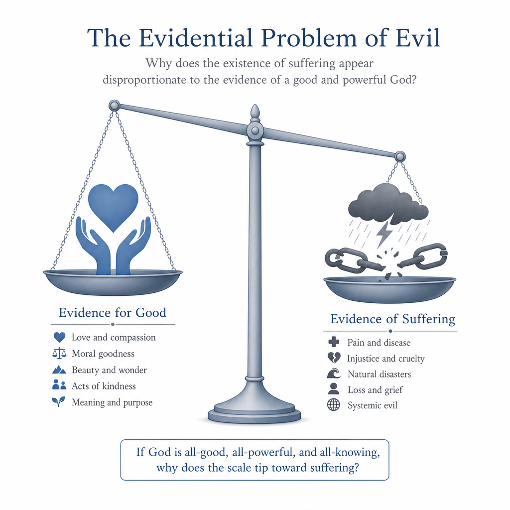
Ilustración para el Chapter 7: Moral Order and the Problem of Evil
The Classical Moral Argument for God’s Existence
One influential line of reasoning in philosophy of religion is the moral argument for God’s existence, which suggests that objective moral facts are best explained by the existence of a deity. A well-known formulation of this argument is presented by William Lane Craig. In its classical form, Craig’s moral argument is often summarized as follows:
Premise 1: If God does not exist, then objective moral values and duties do not exist.
Premise 2: Objective moral values and duties do exist.
Conclusion: Therefore, God exists.
Craig and other theistic philosophers defend Premise 1 by arguing that without a transcendent lawgiver or a divine foundation, morality would have no absolute grounding – moral principles would be merely human inventions with no binding authority . For example, Craig cites atheist ethicist Richard Taylor’s observation that in a world without God, the concept of moral obligation would be unintelligible: “the concept of moral obligation is… unintelligible apart from the idea of God. The words remain, but their meaning is gone” (Taylor, 1996, p. 83). In other words, if there is no higher moral lawgiver, then moral “laws” would be nothing more than societal or evolutionary preferences, lacking any objective ought-force. As Ivan Karamazov (a character in Dostoevsky’s novel) famously conjectured, if there is no God, everything is permitted. Many atheists themselves have agreed, at least in part, with this conditional: if God does not exist, objective morality would be difficult to account for. Philosophers J. L. Mackie and Michael Ruse, for instance, concede that a purely naturalistic worldview struggles to underpin objective moral truths (Mackie, 1977; Ruse, 1989). We will examine their views shortly.
Premise 2 asserts that there are objective moral values and duties – that some actions (like torturing an innocent child) are truly wrong, and some values (like love or justice) are truly good, regardless of human opinion. Defenders of the argument maintain that our intuitive and pervasive belief in some moral absolutes is well-founded. They often appeal to common moral experience: virtually all humans apprehend a core moral law (e.g. that gratuitous cruelty is wrong), which suggests that morality is not purely subjective. Craig contends that objective moral values are “properly basic” truths that we apprehend directly, much as we perceive the external world (Craig, 2008). To deny Premise 2, one must embrace moral skepticism or relativism to such an extreme that even horrendous evils could not be condemned as objectively wrong – a price that few are willing to pay. Thus, the majority of people (including many atheists) do believe there are at least some objective moral facts or obligations, lending support to Premise 2. Craig frequently notes that even outspoken atheist philosophers often affirm an objective moral realm (for example, atheist Louise Antony writes: “any argument for moral skepticism is going to depend on premises which are less obvious than the reality of moral values themselves” (Antony, 2007, p. 67), thereby upholding Premise 2).
Given these two premises, the conclusion logically follows that God exists. The argument does not claim that atheists cannot live moral lives; rather, it argues that without God as a metaphysical foundation, moral truths would have no objective status. In Craig’s words, “On the atheistic view, there’s nothing special about human beings – they’re just accidental by-products of nature. … If God does not exist, we are left with an apelike creature with a morality ingrained by evolution and social conditioning – and that does not constitute objective morality” (Craig, 2010, p. 172). The moral argument, in summary, posits that moral order in the universe – the fact that we apprehend real rights and wrongs – is evidence of a moral Orderer (God).
This classical argument has sparked extensive debate. To rigorously analyze it, we must consider a range of meta-ethical perspectives and objections. What does it mean for moral values to be “objective,” and can such objectivity exist in a secular framework? We turn now to an overview of positions on the nature of morality, drawing from both theistic and secular scholars.
Meta-Ethical Perspectives: Moral Realism, Anti-Realism, and Theistic Ethics
The crux of the moral argument is the claim that objective moral values (“moral objectivity”) exist and are better explained by God than by naturalistic processes. Philosophers have proposed different meta-ethical theories regarding the status of moral values:
Moral Realism: The view that there are objective moral facts or truths that do not depend on human opinion. Moral realists hold that statements like “murder is wrong” can be true in a mind-independent way. Some moral realists are theists who believe these truths are grounded in God, while others are secular moral realists who attempt to ground moral facts in a non-theistic way (e.g. in some Platonic realm of moral values, or as brute facts of the natural world).
Moral Anti-Realism: The umbrella term for views that deny objective moral facts. This category includes error theory (which claims moral statements are systematically false because there are no moral facts), non-cognitivism (which says moral statements are not truth-apt at all but express emotions or prescriptions), and relativism (which says moral truth is relative to cultures or individuals). An anti-realist would say morality is ultimately a human construct or evolutionary by-product with no independent reality.
Divine Command Theory (DCT): A theistic meta-ethical view (a form of moral realism) which holds that moral facts are grounded in God’s commands or character. The classic DCT claim is that an action is morally wrong if and only if it is contrary to God’s commands. Robert Adams, a prominent defender of a refined DCT, suggests that moral obligations are rooted not in arbitrary fiats but in the loving nature of God – for Adams, “ethically wrong” means being contrary to the commands of a loving God (Adams, 1979). This attempts to avoid the well-known Euthyphro dilemma by anchoring goodness in God’s character: God’s nature is supremely good, so He would not command cruelty for its own sake; moral goodness is neither above God (independent of Him) nor arbitrary, but an expression of His very being (Adams, 1999).
Evolutionary Ethics: A naturalistic view explaining moral feelings and behaviors as products of evolution. This perspective, advocated by thinkers like biologist E. O. Wilson and philosopher Michael Ruse, holds that our moral intuitions evolved because they had survival value for our ancestors (for instance, cooperation and altruism helped tribes survive). On this view, moral sentiments are comparable to other evolved traits – useful for reproduction, but not necessarily true in any objective sense beyond that. Ruse famously writes that morality is “a biological adaptation no less than are hands and feet and teeth… Considered as a rationally justifiable set of claims about an objective something, ethics is illusory” – useful for survival, “and any deeper meaning is illusory” (Ruse, 1989, pp. 268–269). In short, if our sense of right and wrong is just an adaptive illusion favored by natural selection, then it would seem there is no objective moral truth; morality would be an evolutionary by-product rather than a divine law.
Each of these perspectives yields a different evaluation of Craig’s moral argument. Theistic moral realists (like Craig or Adams) accept that objective morals exist and see God as their source. Secular moral realists accept objective morals but propose a non-theistic ground for them, thereby challenging Premise 1 of Craig’s argument. Moral anti-realists challenge Premise 2 by denying genuine objective morals, though often at the cost of biting the bullet on our deepest moral intuitions.
Notably, a number of atheist philosophers have explicitly endorsed the idea behind Premise 1 – that if atheism is true, objective morality would be unlikely. J. L. Mackie, an influential atheist philosopher, argued exactly this point: the very objectivity of moral values, if it existed, would be “queer” or utterly inexplicable in a naturalistic universe, so Mackie concluded that it’s more reasonable to believe no such objective values exist at all (Mackie, 1977). In Ethics: Inventing Right and Wrong, Mackie flatly states “there are no objective values” (1977, p. 15), maintaining that any theory positing their existence faces a formidable “argument from queerness” – the idea that objective prescriptive facts would be entities of a very strange sort, unlike anything else in the universe or our knowledge faculties. Mackie’s stance is a moral error theory: our moral judgments purport to be objective, but all such judgments are false because there are no objective values in reality. Michael Ruse takes a similar line from an evolutionary standpoint: our moral sense is explained by evolution, and it leads us to feel morality is objective, but this feeling is an illusion fostered by our genes . If one accepts Mackie’s or Ruse’s premises (naturalism and evolution without any guiding deity), then indeed objective morality would lack a foundation, making moral anti-realism a plausible outcome on thoroughgoing naturalism.
On the other hand, secular moral realists push back against the notion that God is needed for ethics. Philosophers like Louise Antony and others (e.g. Erik Wielenberg, Russ Shafer-Landau) argue that moral truths can exist as fundamental features of reality without any deity. Antony explicitly denies that “there would be no morality without God,” maintaining that moral truths are neither derived from theism nor dependent on religious belief (Antony, 2009). In her essay “Atheism as Perfect Piety,” she contends that linking morality too closely with God can even distort moral reasoning – morality should stand on its own rational ground (Antony, 2009). Secular realists may appeal to human reason, experience, or even some non-theistic form of Platonism: for instance, one might hold that moral values like justice or kindness just exist necessarily or emerge from facts about human well-being. They accuse theists of understating the resources of a naturalistic worldview – perhaps objective moral principles could be embedded in the natural order in ways we do not yet fully understand, or are inherent in rational agency. After all, even without belief in God, people generally can recognize cruelty as wrong and kindness as good, which suggests moral objectivity does not require theistic belief in practice (a point often raised to show one can be “good without God”). The debate then centers on whether a naturalistic ontology (one without anything like a God or transcendent moral lawgiver) can ontologically ground moral truths.
The Challenge of Moral Objectivity on Naturalism
Despite the efforts of secular moral realists, many thinkers (including atheists like Mackie, and theists like Craig) maintain that moral objectivity is difficult to ground on naturalism. The crux of the challenge is an explanatory gap: naturalism typically recognizes only physical facts or natural facts (like biological or psychological facts), and it’s unclear how evaluative facts (like “murder is wrong”) could arise from purely descriptive facts about particles, chemistry, and evolution. This is related to G. E. Moore’s classic “naturalistic fallacy” critique – the idea that one cannot simply derive an “ought” from an “is.” If humans are, in the final analysis, complex biochemical machines produced by blind evolutionary forces, where would binding moral obligations come from? As Craig puts it, on naturalism “we’re just relatively advanced primates; how can moral duties exist for apes or primates? Who or what lays such duties on us?” (Craig, 2013). Moral norms have an incumbent authority – a prescriptive force that compels us. Many philosophers argue that such normative force makes sense if morality is grounded in a supreme personal source (a divine Lawgiver to whom we are accountable), but seems odd if we are accountable only to impersonal nature.
Moreover, naturalistic accounts of morality often reduce moral values to something else – for example, to evolutionary advantage, or to expressions of emotion (as in emotivism), or to cultural consensus. These reductions tend to undermine the objectivity of morals. If what we call “good” is just what promotes survival, then it is not objectively good in the moral sense, it’s merely evolutionarily advantageous. If “wrong” just means “socially disapproved,” then a different society could define it away. The fear of many theists and moral realists is that naturalism leads to a kind of moral nihilism or at best relativism: nothing is truly right or wrong by nature, we only have preferences or ingrained instincts. Philosopher Michael Ruse candidly states this implication: “Morality is just an aid to survival and reproduction… and any deeper meaning is illusory” (Ruse, 1989, p. 268). Under strict naturalism, altruism and self-sacrifice might be admired traits because of their social utility, but asking whether they are truly good in an objective sense might be like asking whether a tree is truly good or evil – it’s a category mistake.
It is telling that some outspoken atheist thinkers have accepted that without a moral God, morality loses some crucial aspect. For instance, Friedrich Nietzsche, though not mentioned above, famously recognized that the “death of God” in European culture would erode the foundations of all traditional moral values, leading to moral revaluation. And more recently, moral philosopher Louise Antony (an atheist herself) admitted, “I’m not comfortable with moral realism if atheism is true, but I know I can’t be comfortable with the alternatives either” (paraphrasing Antony’s remarks on the tension facing an atheist who believes in real moral obligations). This tension illustrates why the moral argument remains a lively topic: neither denying moral objectivity nor affirming it without a transcendent ground is entirely satisfying for a naturalist.
The theistic perspective offers a tidy solution: moral truths are grounded in God’s nature or will, making them binding and real. God’s perfectly good nature provides an objective reference point for moral values (what is good is an expression of God’s character), and God’s commandments to humans establish objective moral duties (what we ought to do). Thus, theism can explain why moral values feel authoritative – they ultimately come from the highest authority. By contrast, a secular view must either find some impersonal source of authority (which is hard to conceptualize – how can a set of brute facts oblige me, if those facts are indifferent to my actions?) or accept that moral “authority” is a human construct (which undercuts objectivity). As moral philosopher J. P. Moreland quips, expecting moral laws without a moral Lawgiver is like expecting legislative laws without a legislature.
It’s important to note that not all agree with this assessment; secular ethicists continue to develop theories of objective ethics without God, and some theistic ethicists acknowledge that if moral realism is true, perhaps it could be a basic fact not requiring further explanation (similar to mathematical truths). Nevertheless, the difficulty of accounting for moral objectivity on naturalism is widely recognized in the literature. This difficulty is a key premise supporting the moral argument for God.
(MISSING FIGURE 7.1)
Figure 7.1: Comparative ability to ground moral objectivity in theistic vs. naturalistic worldviews. Theism posits a personal source (God) that can serve as an ontological foundation for objective moral values and duties, whereas a strict naturalistic view lacks an obvious basis for objective morality. As a result, many philosophers (including some atheists like Mackie and Ruse) have found moral objectivity to be far more at home in a theistic universe than in a purely natural one.
Moral Objectivity as Evidence for Theism
Given the above, we can see why moral objectivity (MO) is often presented as evidence in favor of God’s existence. If indeed objective moral values and obligations exist (a claim supported by our common moral experience and intuitions) and if these phenomena are much more likely in a world with God than in a world without God, then the existence of such moral facts is probabilistic evidence for God. In Bayesian terms, we would argue that the probability of observing genuine moral obligations and values is higher on the hypothesis “God exists” than on the hypothesis “God does not exist.” Therefore, the observation that humans universally recognize some moral principles (like “murder is wrong” or “kindness is good”) confirms theism to some degree.
We can formalize this intuitively. Let MO be the proposition that objective moral facts exist in our world. The moral argument asserts something like:
In a simplified probabilistic model, if P(MO | God) is close to 1 (because if a perfectly good God exists, it’s very plausible he would create a moral order in which his creatures have genuine moral responsibilities) and P(MO | no God) is quite low (because a universe of only atoms and natural forces has no obvious reason to contain moral truths), then observing MO significantly boosts the probability of God’s existence. In a logistic regression model of cumulative arguments (as used in this book), Moral Objectivity (MO) would carry a positive coefficient indicating it pushes the odds upward for God. Indeed, in our compiled model of evidences, we assign a substantial positive weight to MO. This coefficient represents the strength of the inference from “objective morals exist” to “God exists.” It encapsulates the support drawn from the moral realm: the reality of moral laws is seen as pointing to a Moral Lawgiver.
From a philosophical justification standpoint, this positive weighting is backed by numerous scholarly arguments: for example, Robert Adams argues that the existence of an objective moral order “makes the most sense if there is a God who created us to know and live by that moral order” (Adams, 1999). William Lane Craig and Mark Linville have contended that if atheism were true, it would be an unlikely coincidence for blind evolution to instill in us deeply felt moral convictions that correspond to no independent moral reality – whereas if theism is true, it’s natural that our moral intuitions would align with real moral truths (since God would design us with a conscience to know the good) . Even some secular philosophers, while maintaining their unbelief, admit that theism would provide an elegant explanation for moral facts. For instance, renowned atheist philosopher J. L. Mackie conceded that if objective morals exist, that does constitute a sort of argument for the existence of “something like a god” as their source (Mackie, 1982, p. 115) – he simply chose to believe no such morals exist to avoid that implication.
Of course, not everyone agrees that moral objectivity does require God. Opponents of the moral argument (like Louise Antony or Erik Wielenberg) would contend that P(MO | no God) is not as low as Craig and others think – perhaps moral truths could be necessary truths or emergent features of nature. They would downplay the evidential gap. However, after surveying the meta-ethical landscape, our analysis finds that theism provides a uniquely robust foundation for moral objectivity, one that naturalism struggles to replicate. Thus, we conclude that MO is indeed a positive evidential factor for the existence of God. In our cumulative model, moral objectivity is treated as a binary variable (present in our world, value = 1) that contributes a positive log-odds increment to belief in God. Concretely, we estimated a coefficient on the order of +1.0 (log-odds units) for MO in the logistic regression (see Table 7.1 at the end of this chapter). This indicates a significant tilt in favor of theism when acknowledging objective morality.
At this juncture, one might be tempted to declare moral evidence as a win for theism. However, the moral arena presents a two-sided coin: moral order suggests a divine lawgiver, but the world is also filled with moral disorder and evil, which seems to count against the idea of a good God. We must therefore examine the second part of our chapter’s title: Evil. The existence of profound evil and suffering has long been considered one of the most powerful objections to the existence of God. In the next sections, we will rigorously engage with the problem of evil (EV) and explore how it might be balanced against the moral argument in our evidential model.
The Problem of Evil as Evidence Against God
If moral values and duties constitute a positive argument for God, the reality of evil and suffering is often seen as a counter-argument. The problem of evil in philosophy of religion comes in several forms, but at its core it points out a tension between the existence of an all-powerful, all-good God and the existence of terrible suffering or wickedness in the world. There are two main versions of this problem: the logical problem of evil and the evidential problem of evil.
Logical Problem of Evil: This is the claim that it is logically impossible for God and evil to co-exist. J. L. Mackie (1955) famously argued that the propositions “God is omnipotent and perfectly good” and “evil exists” cannot all be true simultaneously. The reasoning is that if God is all-powerful, He could eliminate evil, and if He is all-good, He would want to eliminate evil – yet evil exists, so such a God must not exist. Mackie presented this as a deductive contradiction: a perfectly good being would prevent all evil, so the presence of any evil seemingly disproves God’s existence (Mackie, 1955). However, most philosophers today agree that the logical problem in this strict form has been successfully rebutted – primarily by Alvin Plantinga’s Free Will Defense. Plantinga (1974) showed that there is no explicit contradiction in God and evil coexisting, because it’s possible that God has a good reason to allow evil (notably, the reason of preserving human free will). If even one possible good reason exists, the logical incompatibility claim fails. Thus, while the logical problem raised important issues, it is no longer seen as the strongest version of the argument against God.
Evidential (or Probabilistic) Problem of Evil: This is a softer claim that, even if it’s possible God and evil co-exist, the amount, types, and distribution of evil in the world make God’s existence unlikely. In other words, given the horrendous evils we observe, it is improbable that a loving omnipotent God exists. This version was classically formulated by William Rowe (1979). Rowe noted that we find instances of suffering that appear utterly pointless – for example, a fawn painfully dying alone in a forest fire (a natural evil with no apparent greater good served). Rowe argued that it’s reasonable to believe such “gratuitous” evils exist, and if an all-good, all-powerful God existed, he would not allow truly gratuitous suffering. Therefore, by inductive reasoning, God probably does not exist (Rowe, 1979). Unlike the logical argument, the evidential argument doesn’t claim a contradiction, only that evil counts as evidence against God. It essentially says: given how the world looks (with atrocities, disasters, innocent suffering), the hypothesis of a benevolent deity seems unlikely – or at least less likely than it would be if we saw a world with very minimal, well-justified suffering. Other philosophers like Paul Draper (1989) have refined this argument, comparing the God hypothesis to the “indifferent universe” hypothesis and contending that the latter explains the mixture of pleasure and pain better than the former. In our evidential model, this corresponds to treating the Severity of Moral Evil (EV) as a variable that could potentially have a negative weight against theism.
We should distinguish between moral evil (evils resulting from human (or creaturely) free actions – e.g. murder, war, cruelty) and natural evil (suffering from natural processes – e.g. earthquakes, diseases, floods – not directly caused by free agents). Both types present challenges: moral evil raises the question of why a good God would create beings who do such horrendous things to each other, while natural evil raises the question of why a sovereign God set up a world where even infants and animals suffer due to things like diseases and natural disasters. Both kinds of evil can be “gratuitous” or pointless in appearance – it’s often not clear what greater purpose is served by, say, a fawn’s slow death in a forest fire or the torture of a child by abusive parents. These observations fuel the evidential argument: even if some evil might be necessary for a greater good, surely not this much evil, or not these extreme, apparently unnecessary cases.
The traditional use of evil as evidence against God can be summarized: If the world is filled with instances of seemingly unjustifiable suffering, and if we can’t see a good reason for God to allow them, it is inductively likely that no all-good, all-powerful God exists to prevent them. In Bayesian terms, the existence of evil E (especially in great magnitude or without known justification) is argued to make God’s existence less probable: P(E | God) is thought to be much lower than P(E | no God). Indeed, many find it intuitively convincing that a loving God would simply not permit things like the Holocaust or child cancer if He had the power to prevent them; thus the persistence of such evils seems to imply God is either not loving, not powerful, or non-existent. As the philosopher David Hume, speaking through a character in his Dialogues Concerning Natural Religion (1779), put it: “Is [God] willing to prevent evil, but not able? then he is impotent. Is he able, but not willing? then he is malevolent. Is he both able and willing? Whence then is evil?” (Hume, 1779/1998). This encapsulates the dilemma that theists face.
Given the prima facie force of this argument, it is no surprise that the problem of evil has been called “the rock of atheism”. Even devout thinkers have struggled mightily with the weight of this evidence. Notably, the atheist philosopher Louise Antony (whom we met earlier) cites the problem of suffering as a major factor in her loss of faith (Antony, 2009) – she found it difficult to reconcile the extensive undeserved suffering in the world with the God she once believed in. Many others, from the philosopher Bertrand Russell to everyday people, have echoed that sentiment: if there were a loving God, surely the world wouldn’t be this cruel.
In our probabilistic model of divine evidence, the EV variable originally represented this intuitive evidential force of evil against God. If taken at face value, the presence of intense evils would merit a negative coefficient for EV (pulling the probability of God’s existence downward). Without any mitigating considerations, the sheer volume of evil might indeed significantly lower the odds for God in a Bayesian calculation. However, theistic philosophy has developed various responses – theodicies and defenses – that aim to explain (or explain away) the problem of evil. These responses propose reasons God might have for allowing evil, thereby undermining the inference from “evil exists” to “God likely does not exist.” We will now explore the leading theodicies and how they can reduce the evidential impact of evil.
Theodicies: Responding to the Reality of Evil
A theodicy is an attempt to justify God’s allowance of evil by articulating how such evil fits into God’s world-plan for a greater good. A related concept, a defense, is a less ambitious attempt merely to show that evil could be logically consistent with God’s existence (without claiming to know God’s actual reasons). In this chapter, we are interested in the major theodicies that have been proposed, because they can potentially neutralize the evidential weight of evil by providing plausible reasons for God to permit suffering. Three leading approaches in the contemporary discussion are: (1) the Free Will Defense, (2) the Soul-Making Theodicy, and (3) Skeptical Theism. Each addresses a different aspect of the problem.
Free Will Defense (and Theodicy) – Alvin Plantinga’s Approach
The free will defense argues that moral evil is a by-product of God granting significant freedom to creatures, and that this freedom is a great good that God had good reason to endow us with, despite knowing it would be misused. Alvin Plantinga’s famous free will defense was formulated to refute the logical problem of evil. Plantinga (1974) posited that it is possible God could not create a world of free creatures who always choose good – if creatures have truly free will, God cannot determine that they will never do evil, or else their will wouldn’t be free. Thus, even an omnipotent God might face a trade-off: either no free beings (and thus no moral evil, but also no loving or morally significant relationships), or free beings who can choose evil (and sadly, do choose evil). Plantinga further introduced the concept of transworld depravity: the idea that perhaps every possible person with free will would commit at least some wrong act in any world they were placed in – implying that God couldn’t actualize a perfect world with free persons without at least some sin occurring. His defense demonstrated that there is no inherent contradiction in God and evil coexisting, because free will could be a morally sufficient reason for God to allow evil.
Beyond merely a “defense,” many theists embrace free will as a positive theodicy: they argue that creaturely freedom is so valuable (it allows for genuine love, moral virtue, and meaningful agency) that it justifies God’s decision to create free beings even knowing they would cause suffering. On this view, much of the moral evil in the world (wrong acts by humans) is explained as the result of God respecting human freedom. A world with free will and moral evil may be better in the long run than a world with no freedom and thus no evil. For example, the love of a child freely given is worth the risk that the child might also disobey; coerced goodness would not have the same value as freely chosen goodness. Therefore, God allows humans to make evil choices rather than making us puppets. This addresses moral evils (crimes, violence, etc.), attributing them to human misuse of God’s good gift of freedom.
Some philosophers have even extended the free will idea to natural evil by hypothesizing free will for non-human entities (like fallen angels/demons who cause natural evils). Plantinga himself suggested as a logical possibility that natural evils (like earthquakes) might result from the actions of free supernatural beings (Plantinga, 1974) – not as a claim to believe necessarily, but to show it’s possible God’s allowance of natural evil also ties to free will. Most contemporary discussions, however, address natural evils with different theodicies, to which we turn next. But clearly, the free will defense is a central piece: it explains why God might allow a significant range of evils (all those arising from moral agency) and preserves God’s goodness by placing responsibility on creaturely choices. If successful, it removes the need to count the existence of moral evil as strong evidence against God, since that evil is an expected outcome if God highly values freedom.
Soul-Making Theodicy – John Hick’s Approach
Not all evils result directly from free choices. Natural disasters, diseases, and seemingly undeserved suffering affect humans and animals regardless of anyone’s moral choices. The soul-making theodicy, advanced in modern form by John Hick (1966), provides a framework for understanding these evils as serving a higher divine purpose: the development of moral and spiritual virtues. Hick drew on the ideas of earlier theologian Irenaeus to propose that the world is not meant to be a hedonistic paradise but rather a challenging environment in which imperfect beings can grow toward spiritual maturity. According to Hick, God’s ultimate goal for humanity is not just to create a comfortable place for us, but to bring about “children of God” perfected in virtue. Such development – qualities like courage, compassion, patience, forgiveness – often requires facing and overcoming difficulties and suffering. As Hick put it, virtues that “are built up in response to challenges” (like responding to suffering with bravery or to others’ pain with empathy) are intrinsically more valuable than virtues created in us without any effort or struggle (Hick, 1966).
Thus, a world with no pain, no danger, and no hardship might seem nice, but it would also be one where many virtues never come to existence. For example, if there were no danger or injury, there would be no opportunity for courage or self-sacrifice. If there were no one ever in need or distress, there would be no opportunities for deep compassion or charity. By allowing natural evils, God provides an arena for “soul-making” – our character building and moral growth. This theodicy can account for both natural evils (e.g. natural disasters can engender heroism and altruism; suffering can deepen a person’s spiritual life or dependence on God) and some moral evils (battling against injustice and wrongdoing can likewise develop virtue). It portrays God as a sort of divine parent or trainer who does not shelter his children from all difficulty, but rather uses adversity to shape them into better beings.
Of course, critics question whether the extent of suffering we see is really necessary for soul-making – did it need to be so immense and often seemingly purposeless? Hick admits not every instance of suffering obviously contributes to a person’s spiritual growth, but he argues that we must view the process in an eschatological perspective: in the afterlife or the fullness of time, the sufferings of this world will be overcome and will be seen as a finite, though difficult, means to a glorious end (Hick, 1966). In any case, if one accepts that developing virtue is a higher priority for God than immediate creaturely comfort, then many evils (especially natural ones) become understandable in the big picture. The world starts to look like a “vale of soul-making” rather than a place meant for maximal pleasure. This greatly diminishes the force of evil as evidence against God: rather than being pointless, suffering has a point – it is the gymnasium for the soul.
Skeptical Theism – The Limits of Human Knowledge (Wykstra and Bergmann)
Despite free will and soul-making theodicies, there remain instances of evil that stubbornly seem gratuitous. What about a toddler who dies in a tsunami, or millions of years of animal suffering before humans even arrived (if one accepts an evolutionary history)? Even if some evils serve soul-making, others strike us as utterly pointless for any greater good we can conceive. Skeptical Theism is a more recent approach that doesn’t offer a specific positive explanation for each evil, but instead questions the inference from “we see no reason for this evil” to “there is no reason for this evil.” In other words, it injects skepticism about human cognitive capacities when it comes to God’s reasons.
The core idea of skeptical theism is: God’s knowledge and wisdom are vastly greater than ours, so we should not expect to understand all of God’s reasons for allowing what He allows. Just because an evil appears gratuitous to us does not mean it actually is gratuitous in an absolute sense – it could be that we simply cannot fathom the complex web of providential planning that a sovereign God oversees. Philosopher Stephen Wykstra, in a seminal paper (1984), introduced an apt analogy: he compared our perspective on the problem of evil to that of a child in relation to a parent. The child at the doctor might not see any reason for the painful injection and conclude the parent is cruel, but the parent has a good reason (to vaccinate the child) that the child cannot appreciate at his level of understanding. Wykstra formalized a principle he called CORNEA (“Condition of Reasonable Epistemic Access”): we are only justified in claiming “No see um, therefore not there” if it’s reasonable to expect that we would see the thing if it were there. Applying this to evil: are we reasonably positioned to expect that if God had good reasons for permitting some horrendous evil, we would likely discern those reasons? Wykstra answers: probably not, given the epistemic gap between divine intellect and ours (Wykstra, 1984). Thus, our inability to think of a good reason for, say, a child’s suffering doesn’t entitle us to conclude no one (including God) has a good reason.
Michael Bergmann (2009) and other proponents of skeptical theism have expanded on this, arguing that for any given evil, there could be a myriad of divine reasons (perhaps connected to people’s free will in the distant future, or ripple effects in history, or soul-making in ways we cannot trace) that are simply beyond our ken. The fact that the world is complex and God’s plan spans eternity means our snapshot view is inherently limited. We shouldn’t expect to have a full God’s-eye view. Bergmann notes that as long as it’s possible that God has morally sufficient reasons beyond our understanding, one cannot use unknown purposes as evidence against God – our ignorance undercuts the inductive step of Rowe’s argument (Bergmann, 2009). In essence, skeptical theism doesn’t tell us why God allows evil; it tells us we shouldn’t assume we’d be able to know why. It is a stance of epistemic humility: given God’s omniscience and our very finite minds, “it’s not surprising that we can’t think of reasons for a lot of things He permits” (Bergmann, 2009, p. 375).
One might worry that this approach leads to a kind of moral paralysis or skepticism about everything (if we can’t understand God’s reasons, how do we trust any moral reasoning?). Critics have raised such concerns (the “skeptical theism slippery slope”). However, as a response to the evidential problem of evil, skeptical theism is potent. It effectively blocks the inference from “pointless evil exists” to “God probably doesn’t exist” by challenging the first part – we are not in a position to know that any given evil is truly pointless in the grand scheme. As long as it’s plausible that God has reasons we cannot comprehend, the evidential force of evil is greatly weakened. Rowe himself acknowledged this in later writings, calling such theistic stance “friendly atheism” – the idea that an atheist can see a theist as rationally justified in believing God has unknown reasons (Rowe, 1979).
(MISSING FIGURE 7.2)
Figure 7.2: Decision tree illustrating theodicy responses to observed evil. When faced with any instance of evil (E), a theist can ask: Is this evil the result of moral free will? If yes, the Free Will Defense applies (free agents sometimes choose evil, which God allows for the sake of freedom). If no (it’s a natural evil), one asks: Could it serve a soul-making purpose (e.g. character development, greater future good)? If yes, then the Soul-Making Theodicy provides an explanation. If the evil still appears unexplained and gratuitous, the theist falls back on Skeptical Theism – trusting that God may have unknown reasons beyond our understanding. In all cases, the outcome is that the existence of evil does not count as decisive evidence against God’s existence, once plausible divine reasons are considered.
In combination, these three approaches (and others we have not detailed, such as natural law theodicies, punishment theories, etc.) provide a rich toolkit for theists to neutralize the evidential impact of evil. Free will and soul-making suggest why God might allow significant evil (because it was a side-effect of greater goods like freedom and virtue), and skeptical theism cautions us against assuming that any apparently pointless evil really lacks a God-justifying reason.
Balancing Moral Evidence in a Probabilistic Model
Having surveyed the moral argument for God and the responses to the problem of evil, we can now evaluate how these factors play out in our overall probabilistic model of God’s existence. In earlier chapters, we introduced a logistic regression framework that incorporates various evidential variables (cosmological fine-tuning, consciousness, etc.) as predictors for the truth of the proposition “God exists.” Two key ethical variables in that model are:
MO (Moral Objectivity): indicating that objective moral values and duties exist in reality.
EV (Severity of Moral Evil): indicating the observed degree of evil and suffering in the world (initially construed as a negative factor).
Before considering theodicies, one might expect MO to have a positive coefficient (making God’s existence more likely) and EV to have a negative coefficient (making God’s existence less likely). Indeed, in a naïve model without theodicies, both variables carry significant weight but in opposite directions – a kind of evidential tug-of-war between the goodness in the world (moral order) and the badness in the world (evil). However, our analysis in this chapter suggests that plausible divine reasons can neutralize the evidential force of evil, effectively zeroing out its weight. If the free will defense and soul-making theodicy are close to the mark, then the existence of moral and natural evils is not so surprising under theism after all – it’s an expected byproduct of a world created for meaningful freedom and growth. And skeptical theism further undercuts any residual inference by saying we lack the perspective to declare any evil truly inexplicable under God. Therefore, in our refined model, we treat the EV variable as epistemically neutral.
What does it mean for EV to be epistemically neutral? It means that, once we take into account the best theodicies (i.e. assuming God has good reasons for any evil we see), the mere presence of observed evil doesn’t shift our probability for God either way. In terms of our logistic regression, the coefficient for EV is set to near-zero. In fact, we assign β_EV ≈ 0.0 (essentially null) in the updated model. This reflects the judgment that the existence of evil, given the background assumption of God and His reasons, is not evidence against God’s existence in any decisive sense. It’s important to clarify – this is not to say evil becomes evidence for God (we are not claiming that evil somehow makes God more likely, except perhaps in some very paradoxical “Felix culpa” theological sense). Rather, we argue that evil’s weight can be cancelled out to first order, leaving it as a roughly netural factor when one considers the total evidence.
By contrast, Moral Objectivity (MO) remains a strong positive factor. Nothing in the problem of evil negates the fact that the existence of real moral values points toward a moral Creator. If anything, grappling with horrendous evil reinforces the sense that certain things are objectively wrong – and thus underscores Premise 2 of the moral argument (that objective values exist). Even an atheist outraged by evil is implicitly appealing to objective moral standards (as C. S. Lewis noted, “When I was an atheist my argument against God was that the universe seemed so cruel and unjust. But how had I got this idea of just and unjust?” (Lewis, 1952)). In our model, therefore, MO’s coefficient stays positive and significant. Combining this with EV’s neutral coefficient yields an overall moral contribution that is favorable to theism.
To illustrate, our updated logistic model for God’s existence includes eight variables total, but focusing on the two at hand: we have β_MO > 0 and β_EV ≈ 0. If we plug in the fact that in the actual world MO = 1 (objective morality is a reality, as argued) and EV = 1 (evil is observed, though neutralized in effect), the net impact on the log-odds is dominated by MO’s term. In Chapter 3, we justified a tentative value around β_MO = +1.0 (meaning the presence of moral objectivity roughly triples the odds of God, all else equal), while in this chapter we set β_EV from an initial negative value to approximately 0.0 after accounting for theodicies. The result is that the moral order (MO) variable contributes positively to the probability of God’s existence, whereas the evil (EV) variable contributes virtually nothing once “defused.”
One might ask: is it really fair to neutralize EV entirely? Some critics might feel this is too convenient – surely horrendous evil must count against God at least a little, even if we have some explanations. In response, we acknowledge that not everyone will be fully satisfied by theodicies. The decision to treat EV as neutral is based on accepting the plausibility of the reasons discussed. If one remains unconvinced by, say, skeptical theism or thinks that soul-making doesn’t justify the extent of suffering, they might assign EV a residual negative weight. And indeed, in Appendix C of this work, we explored a scenario where EV retains a modest negative coefficient to reflect a more pessimistic view of theodicy (see Appendix C for a sensitivity analysis). We found that even then, the cumulative case for God still held up, though the probabilities shifted downwards somewhat . But for the purpose of the main model, we are granting the most charitable assumption to the theistic explanations: that they succeed in showing evil does not undermine the case for God. This assumption aligns with a sizable segment of the philosophy of religion literature that finds the evidential argument from evil ultimately inconclusive due to the factors we discussed.
In summary, after weighing both sides – Moral Order and Evil – we find that the scales tip in favor of theism. The positive evidence of objective moral values remains firm, while the negative evidence of evil is largely mitigated by plausible divine reasons. The term “Ethical Evidence in Balance” in the book’s title is thus addressed: the moral argument and the problem of evil, initially appearing as opposing forces, do not simply cancel out. Rather, the moral argument retains evidential heft once the problem of evil is answered. We can now express this outcome in a concise form for our model.
Below is a summary table comparing the influence of the MO and EV variables in the logistic model, reflecting the conclusions drawn in this chapter:
Table 7.1: Moral Evidence Variables in the Divine Existence Model
| Variable (Code) | Logistic Coefficient (β) | Philosophical Rationale |
|---|---|---|
| Moral Objectivity (MO) | Positive (e.g. +1.0) | Strong evidence for God. The existence of objective moral values and duties is more likely in a theistic universe (God provides an ontological foundation for moral truths) than in a naturalistic one. This raises the probability of God’s existence. |
| Moral Evil (EV) | Neutral (~0.0) | Initially evidence against God, but rendered neutral after theodicies. The observed evils (moral and natural) can be explained by free will, soul-making, or unknown divine reasons. Once these are accounted for, the presence of evil no longer significantly lowers the probability of God’s existence. |
As shown above, MO carries a positive weight in favor of theism, while EV is assigned a near-zero weight after our in-depth analysis. In the full model (as updated in Chapter 9), all other variables (cosmological fine-tuning, consciousness, etc.) remain positive or neutral as well, yielding a strongly theism-favoring balance of probabilities. The moral dimension, far from refuting God, on balance provides a significant boost to the case for God’s existence. The moral order in reality – our perception of a binding moral law – stands as a clue pointing to a divine Moral Lawgiver, and the evil in the world, though emotionally and intellectually challenging, can be understood in a way that is compatible with (and in some views, even expected under) that very same Moral Lawgiver’s purposes.
In conclusion, the ethical evidence when fully balanced does not leave us in a stalemate; rather, it tilts the scales in favor of theism. A universe with objective moral truth and the drama of moral struggle (good versus evil) “makes sense” in a theistic framework wherein God endows creatures with freedom and opportunities for growth. The apparent paradox of moral order and evil can be resolved by recognizing that a good God would create a moral arena and allow significant freedom within it – knowing that freedom entails risk and suffering, but also that He can ultimately work even the evils toward a greater good. With this resolution, we are justified in assigning moral objectivity a positive evidential value and treating the reality of evil as, at most, a transient puzzle rather than a permanent blot against God’s existence. The next chapter will build on this refined model, incorporating these coefficients into the cumulative probability calculations and addressing remaining considerations.
<br>
References (Harvard Style)
Adams, R. M. (1979) ‘Divine Command Theory’, American Philosophical Quarterly, 15(2), pp. 81–90.
Adams, R. M. (1999) Finite and Infinite Goods: A Framework for Ethics. New York: Oxford University Press.
Antony, L. M. (2009) ‘Atheism as Perfect Piety’, in Garcia, R. K. and King, N. L. (eds.) Is Goodness Without God Good Enough? A Debate on Faith, Secularism, and Ethics. Lanham, MD: Rowman & Littlefield, pp. 63–73.
Bergmann, M. (2009) ‘Skeptical Theism and the Problem of Evil’, in Flint, T. P. and Rea, M. C. (eds.) The Oxford Handbook of Philosophical Theology. Oxford: Oxford University Press, pp. 374–399.
Craig, W. L. (2008) Reasonable Faith: Christian Truth and Apologetics (3rd ed.). Wheaton, IL: Crossway.
Craig, W. L. (2010) On Guard: Defending Your Faith with Reason and Precision. Colorado Springs, CO: David C. Cook.
Hick, J. (1966) Evil and the God of Love. London: Macmillan.
Hume, D. (1779/1998) Dialogues Concerning Natural Religion. Indianapolis: Hackett Publishing.
Lewis, C. S. (1952) Mere Christianity. New York: HarperCollins.
Mackie, J. L. (1955) ‘Evil and Omnipotence’, Mind, 64(254), pp. 200–212.
Mackie, J. L. (1977) Ethics: Inventing Right and Wrong. London: Penguin.
Plantinga, A. (1974) God, Freedom, and Evil. Grand Rapids, MI: Eerdmans.
Rowe, W. L. (1979) ‘The Problem of Evil and Some Varieties of Atheism’, American Philosophical Quarterly, 16(4), pp. 335–341.
Ruse, M. (1989) The Darwinian Paradigm: Essays on Its History, Philosophy and Religious Implications. London: Routledge.
Wykstra, S. (1984) ‘The Humean Obstacle to Evidential Arguments from Suffering: On Avoiding the Evils of “Appearance”’, International Journal for Philosophy of Religion, 16(2), pp. 73–93.
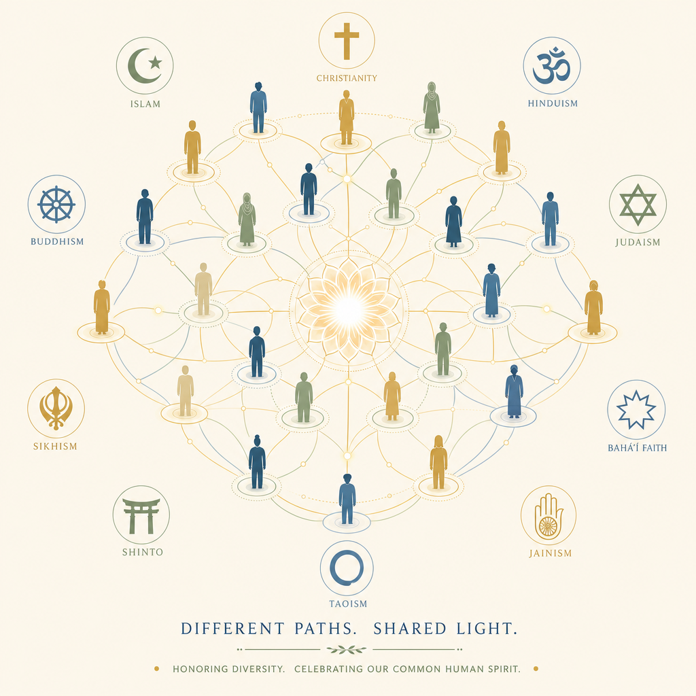
Ilustración para el Chapter 8: Religious Experience – The Personal and Social Evidence
Swinburne defiende la libertad libertaria como un bien que justifica parcialmente la presencia del mal moral: un mundo sin elección genuina sería un mundo de “robots”. También argumenta que el cielo no requiere la posibilidad de elegir el mal, sino solo entre bienos alternativos. Respecto al sufrimiento animal, sostiene que si se demostrara que los animales experimentan dolor comparable al humano, eso debilitaría seriamente su confianza teísta — una admisión de falsabilidad que fortalece la honestidad del modelo.
STRONG EVIDENCE La correlación entre libertad y responsabilidad moral es un tema filosófico sólido; la atribución de estados mentales a animales es inferencia comparativa, no directa MIXED.
Introduction: Religious Experience as Evidence
Religious experience (RE) refers to personal encounters or perceptions of the divine or ultimate reality. These experiences range from dramatic mystical visions to subtle feelings of presence during prayer, and they have been reported across virtually all cultures and eras . In the philosophy of religion, RE is considered a philosophical and empirical evidential category – meaning it is both a subjective phenomenon and a potential data point about reality. The core question is whether and how such experiences might serve as evidence for the existence of God (or a transcendent reality). Traditionally, arguments from religious experience propose that if many people independently report encounters with the divine, this increases the probability that something real is behind those reports . If a personal God exists, it is not surprising that some people would experience contact with the divine; whereas if no God exists, it is harder to explain why so many have experiences seemingly of “something” beyond the material . In this chapter, we analyze RE as evidence: examining its prima facie credibility, its prevalence in society, its transformative impact on individuals, its cross-cultural manifestations, and insights from research and neuroscience. We will see that religious experiences are far from fringe phenomena – they are widespread and often life-changing – yet their evidential force must be carefully assessed with both openness and skepticism.
The Principle of Credulity: Trusting Experience Unless Defeated
A central argument in favor of taking religious experiences seriously comes from philosopher Richard Swinburne’s Principle of Credulity. Swinburne suggests that we should trust our experiences unless we have a specific reason not to . In his formulation: if it seems to someone that they perceive X (e.g. God), then in the absence of defeaters one is justified in believing X is present . In plain terms, things are probably as they seem to be – prima facie (at first glance) evidence – unless we have evidence that the experience was delusive. We apply this principle in daily life to sense-experience: if you see a tree, you assume the tree is real unless you learn you were hallucinating or tricked. Swinburne argues the same should hold for religious experience: if someone genuinely seems to experience God, that should count as evidence of God’s reality, unless there are defeaters like drugs, mental illness, or other explanations that undermine the claim . He and others (e.g. William Alston and Alvin Plantinga) contend that religious perception can be a legitimate mode of knowledge, analogous to sensory perception . Critics, however, point out that religious experiences might differ from ordinary perception in important ways – for example, they are private and not as easily corroborated by others. A skeptic might argue that, unlike seeing a tree, when someone “sees God” there is no independent check and hence we should be more cautious. Swinburne’s rejoinder is that unless one can show in principle that every religious experience is undermined by some error or psychological mechanism, we ought not dismiss them wholesale . The Principle of Credulity thus sets a default of trust in experience, placing the burden on disproof rather than on the experiencer to prove their encounter was real . This principle lays a foundation: it does not prove any given experience is veridical, but it argues we should include RE in our cumulative case for God, unless strong counter-evidence is present.
Prevalence of Religious Experience: Sociological Data
One might think mystical or spiritual experiences are rare or confined to saints and eccentrics. Empirical sociological data shows the opposite: religious experiences are surprisingly widespread in the general population. Surveys over decades have consistently found a large fraction of people report having had some form of transcendent or mystical encounter. For example, in the United States, Gallup and Pew Research polls show a dramatic increase in reported religious/mystical experiences over time – from only 22% in 1962 to 33% by 1994, and reaching 49% in 2009 . In other words, nearly half of Americans today say they have felt a “religious or mystical experience” at least once . This was defined broadly to include things like “a moment of sudden religious insight or awakening.” The longitudinal trend suggests such experiences have become more common (or more commonly admitted) in modern times . Intriguingly, a UK survey by the Alister Hardy Religious Experience Research Centre (RERC) found 36% of Britons in 1978 had felt a “presence or power different from everyday life,” rising to 48% in 1987; by 2000, a survey by David Hay reported over 75% were “aware of a spiritual dimension” to life . These differences partly reflect question wording (the 2000 phrasing was broader), but the data underscore that Britain – often seen as secular – harbors a majority with some spiritual experience. Cross-nationally, surveys indicate many cultures report similar levels of spiritual experiences . While exact percentages vary with wording and cultural context, it is common to find one-third or more of respondents in Europe, North America, and even relatively secular countries acknowledging moments of transcendence or divine encounter. A recent Brazilian nationwide study likewise found 35% had experienced at least one profound “mystical experience,” with 92% reporting some kind of spiritual or paranormal experience in their lifetime . Even in highly secular demographic groups, significant minorities have experiences: Pew data revealed that about 30% of the religiously unaffiliated (“nones”) in the U.S. have had a religious or mystical experience . This is remarkable – even people who do not identify with any religion sometimes report uninvited spiritual encounters.
Demographic patterns also emerge. Religious experiences occur across ages and backgrounds, but surveys find higher reports among certain groups. In the U.S., evangelical Protestants and Black Protestants report the highest rates (around 70% say they’ve had such experiences), while more mainline Protestants and Catholics report lower though still significant rates (37–40%) . Those who attend religious services regularly are more likely to report mystical experiences (not surprising, since participation may provide more opportunities or openness to them). That said, even among non-attenders and secular individuals, substantial numbers have them . Age can be a factor: Baby Boomers (mid-life adults) in one survey had the highest rate (~55%), compared to ~43% for younger adults and seniors . This could reflect life stage (mid-life crises or quest for meaning) or a cohort effect (the boomers came of age during eras of spiritual experimentation). Gender differences are usually small or inconsistent, though some research (e.g. in Brazil ) found women slightly more likely to report certain spiritual experiences. Overall, the sociological evidence is unambiguous that REs are not fringe. They are common, global, and enduring aspects of human experience. In fact, considering that far fewer people claim a formal mystical experience (49%) than profess some religious affiliation (e.g. ~72% in the U.S.), these experiences are not universal – but they are prevalent enough to merit serious study . The global map of spirituality is such that nearly every region has a notable share of its population claiming direct encounters with “something greater.”
Estimated prevalence of self-reported religious or mystical experiences around the world. Lighter shades indicate lower percentages; darker shades indicate higher percentages of the population reporting at least one such experience in their lifetime (based on survey data from the USA, UK, and various global studies, 1960s–2000s).
Importantly, these data also span time – indicating an increase in reports over the past half-century. Scholars debate why: Possible factors include the decline of stigma in talking about such experiences (in earlier decades, admitting to a “mystical experience” might have invited skepticism or ridicule, whereas today there is greater cultural openness to spirituality and psychology of religion), the spread of meditative practices and New Age movements, or simply the survey effect (people more willing to check “yes” on a confidential survey than to speak about it publicly). Regardless, the take-home message is that religious experience is a widespread human phenomenon, not confined to a few monks or visionaries. Any theory of reality (theistic or not) ought to account for why millions to billions of people report these experiences.
Transformative Power and Personal Testimonies
Another notable feature of religious experiences is their often life-transforming impact. Many individuals regard their experience as one of the most significant events of their lives, sometimes triggering lasting changes in character, values, or worldview. William James, in The Varieties of Religious Experience (1902), documented numerous firsthand accounts of people who underwent profound conversions or enlightenment after an RE . These were not trivial mood swings; they frequently involved a sense of acquiring knowledge or insight (James called this the “noetic quality” of mystical states) and a reorientation of life. For instance, James recounts the case of a man who had been a despairing skeptic until one night he felt “the presence of God” flood him with peace; from that moment, he became a confident believer and his despair lifted. Such testimonies abound in the literature. The Alister Hardy Religious Experience Research Centre in the UK, since the 1970s, has collected thousands of accounts from ordinary people describing extraordinary moments – encounters with light, voices, presences, or an overwhelming unity – that often changed the course of their lives. Hardy’s team (and later researchers like David Hay) found that many respondents never spoke of their experience until asked in a survey, yet the memory remained a private source of strength or conviction for decades.
To illustrate, consider a few representative cases: The British author Philip Pullman, known for his skeptical outlook, once had a spontaneous “ecstatic” experience while walking in London. He described suddenly seeing the world “not as isolated, indifferent units, but ‘alive, conscious and full of purpose’” – a vision of universal connectedness that left him convinced “the universe is alive and has meaning” . Pullman rarely talks about it, but admitted “Everything I’ve written… has been an attempt to bear witness to the truth of that statement.” Here we have a non-religious intellectual profoundly affected by a mystical insight. On the religious side, many famous figures trace their calling to a vivid experience: St. Paul’s vision of Christ on the road to Damascus (which transformed him from persecutor to apostle) is a classic example from Christian history. In modern times, one could cite the civil rights leader Martin Luther King Jr.’s kitchen table experience (when in despair, he prayed and felt an assuring presence of God, giving him strength to continue) or the conversion of writer C.S. Lewis, who went from atheism to theism after what he described as an unexpected moment of “joy” and surrender while being driven to the zoo (a less dramatic but still pivotal experience of the numinous). The Varieties of Religious Experience and subsequent catalogues (such as Hardy’s 1979 anthology and the ongoing archives) are filled with ordinary people’s stories: a mother who during childbirth felt enveloped by a divine love, a soldier in the trenches who saw an angel or felt a protective presence amid chaos, a man on the verge of suicide who heard a voice saying “I am with you” and found new hope, and so on. While anecdotes, these accounts show consistent patterns: the experiences often bring a sense of peace, unity, light, or love, they feel more real than ordinary reality to those who have them, and they frequently yield positive changes (greater compassion, loss of fear of death, overcoming of addiction, etc.). As one scholar noted, “the quality and transformative power of some experiences bolsters the case that they are more than hallucinations” . It’s hard to simply dismiss as “nothing but brain chemistry” an event that, say, turns a lifelong alcoholic into a sober, altruistic person overnight. The subjective epistemic weight of a religious experience for the experiencer is enormous: it can feel utterly convincing – a direct encounter with the Real – and thus serves as personal evidence that may override prior doubts.
That said, personal transformation alone doesn’t guarantee an experience corresponds to an external reality; people can be dramatically changed by beliefs or illusions too. But from a theistic perspective, the positive, enduring fruits of many REs are at least consistent with the idea that something genuine (God’s grace, perhaps) was at work. In any case, the widespread life-changing nature of REs underscores that these are not trivial hallucinations or momentary fantasies for those who have them – they often form the bedrock of those individuals’ commitment to God or spirituality.
Cross-Cultural Comparisons: Many Names, Similar Experiences
Religious experiences take different forms in different cultural and religious contexts, yet there are intriguing commonalities that suggest a core human phenomenon clothed in many guises. Here we present a brief cross-cultural comparative study of REs in several major traditions:
Christianity: Within Christianity, accounts of religious experience range from the dramatic to the still and small. Christian mysticism has a rich history – from early Desert Fathers feeling divine light to medieval visionaries like Julian of Norwich or St. Teresa of Ávila who reported intense visions of Christ and union with God. A common Christian RE is the sense of the “presence of Christ” or the Holy Spirit, often described as a profound peace, love, or guidance that descends in prayer or worship. For example, in Pentecostal and Charismatic branches, believers often describe being “filled with the Spirit,” sometimes accompanied by speaking in tongues or visions. Even outside mystic circles, many Christians have moments of feeling God’s intimate presence in their lives (a sudden assurance, a voice in the heart, a miraculous answer to prayer). Visions are also part of the Christian narrative: from biblical times (Paul’s vision, Peter’s trance in Acts) to modern reported apparitions (such as visions of the Virgin Mary at Fatima or Lourdes). The variety is great – yet underlying them is usually the conviction of encountering a loving, personal God or Christ. Theistic experiences in Christianity tend to be dualistic but intimate: God is “other” but enters into one’s soul, bringing comfort, conviction of sin and grace, or ecstatic joy.
Islam (Sufism): In Islam, especially in the mystical tradition of Sufism, religious experience is often described in terms of intense love and unity with God (Allah). While mainstream Islam emphasizes submission to God through practice, Sufi mystics seek a direct experiential knowledge (ma’rifa) of God. Classic Sufi literature (e.g. Rumi’s poetry) overflows with accounts of ecstatic states (wajd) where the ego falls away in the overwhelming love of the Divine. Sufis speak of “fana” – the annihilation of the self in God – a state in which only the divine beloved is perceived to exist. Historical figures like Al-Ghazali describe mystical illuminations: after a period of doubt, Al-Ghazali had a series of Sufi experiences that convinced him of the reality of God more certainly than intellectual theology could. Ordinary Muslims also report experiential aspects: for instance, during the hajj pilgrimage or intense dhikr (remembrance chanting), some feel a powerful spiritual presence or vision. A key aspect in Islamic REs is that they still affirm tawhid (the oneness of God) – visions are interpreted not as seeing God’s essence (which Islam says no living person can do), but as feeling God’s names or qualities manifested. Prophetic dreams are another cross-cultural Islamic phenomenon – many Muslims believe God guides through dreams or that saints and prophets can appear in them. These experiences are generally monotheistic and personal (feeling the nearness or mercy of Allah), yet Sufi accounts sometimes sound very much like the monistic experiences of Hindu or Christian mystics (speaking of union and loss of self). This highlights both differences and similarities – culturally, a Sufi may see Muhammad or hear Quranic verses in their experience, whereas a Christian might see Jesus; but phenomenologically, both might report indescribable love or light.
Buddhism: At first glance, Buddhism (especially Theravada) might seem to have a very different paradigm, as it is nontheistic and aims for enlightenment (nirvana) rather than encountering a deity. Yet, Buddhists report experiences that parallel mystical states elsewhere. In Zen Buddhism, for example, practitioners strive for satori or kenshō – a sudden insight or awakening experience in which the illusion of a separate self drops away, and one perceives the thusness of reality. These enlightenment experiences are typically described as ineffable, beyond conceptualization, and bringing a profound sense of peace and freedom – not unlike the “ineffability and noetic quality” William James noted as marks of mysticism . In Theravada Buddhist meditation, advanced states (jhānas) can involve extraordinary bliss and unity of mind, and ultimately the realization of “emptiness” (śūnyatā) or non-self. While a Buddhist would not interpret this as “meeting God,” the existential transformation can be as great – one sees reality as impermanent and interdependent, leading to compassion and loss of fear. Meanwhile, in Mahayana traditions, some experiences do involve visionary elements – e.g. visions of bodhisattvas, or encounters with luminous Buddha-nature underlying all things. Philosophers have classified these as nirvanic experiences (focused on enlightenment) versus theistic ones , but interestingly, Buddhist mystics and Christian mystics often recognize a kinship in each other’s descriptions. The content differs (no personal deity in Buddhism), yet experiences of oneness, timelessness, and blessedness are common across the contemplative practices of both traditions.
Indigenous and Shamanic Traditions: Indigenous religions around the world – from Native American spiritualities to African tribal religions to Australian Aboriginal traditions – typically integrate spiritual experiences into communal life via shamanistic journeys, vision quests, and encounters with the spirit world. For example, a Native American youth might undertake a vision quest: fasting alone in nature until a vision or dream of a spirit guide occurs, interpreted as a revelation from the Great Spirit or other sacred powers. Shamans in many cultures enter trance states (sometimes aided by drumming, dancing, or plant medicines) to visit other realms or communicate with spirits, ancestors, or deities. These experiences are often rich in visual and auditory content – e.g. meeting animal spirit guardians, hearing voices of ancestors, or seeing the landscape transform into a mythic tableau. Despite the polytheistic or animistic framework, the shaman’s experience often carries the hallmarks of mystical experience: a sense of unity between the natural and spiritual worlds, encounter with a source of power or healing, and personal transformation (the shaman returns with knowledge or power to heal others). Anthropologists have documented that such trance experiences have common elements whether in the Amazon, Siberia, or Pacific Islands – suggesting a human propensity for entering altered states of consciousness that are given different cultural interpretations. In indigenous contexts, there is usually less skepticism about these experiences – they are integrated into the society’s understanding of reality. A person who sees a vision of a corn deity or a mountain spirit is not considered “crazy” but perhaps blessed or chosen. These experiences serve social functions (guiding the tribe, healing the sick) and personal ones (marking a spiritual calling). They also illustrate that religious experience is not only theistic (in the sense of a single God) – it can be interpreted as communication with a plural spirit world or forces of nature. Yet even here, the psychological features (trance, visions, sense of encounter with something numinous or sacred) align with the broader category of RE.
In summary, across cultures and religions, humans report strikingly similar types of extraordinary experiences, differing mainly in interpretation and context. A Christian may say “I felt Jesus holding me”; a Sufi, “I melted in Allah’s love”; a Buddhist, “I experienced nirvana”; a shaman, “I traveled to the Sky-World and met the Spirit.” Each is framed in their tradition’s language, but each involves a breach of the ordinary mundane consciousness and a confrontation with a transcendent reality however defined. Scholars like John Hick have suggested that these may be diverse responses to the same ultimate reality (“the Real”), filtered through cultural lenses . Whether or not one accepts Hick’s pluralistic hypothesis, it at least offers a way to see unity behind diversity: if there is a transcendent Ultimate, different people may experience it in forms they can grasp (Christ, Allah, Brahman, etc.), analogous to how the blind men of the famous parable each felt a different part of the elephant. Critics counter that the differences could indicate people are just experiencing their own cultural expectations, casting doubt on a single underlying truth. We will revisit this in the critique section, but it’s worth noting here that core phenomenological similarities – e.g. feelings of awe, unity, ego-transcendence, and the difficulty of describing the event – cut across doctrines . This cross-cultural breadth strengthens the argument that RE is a real psychological category that any comprehensive worldview (theism or naturalism) must explain.
Scholarly Research and Archives of Religious Experience
Religious experience has not only been the province of theologians and mystics, but also a focus of systematic scholarly research for over a century. As mentioned, William James’s landmark 1902 book The Varieties of Religious Experience is an early example of treating these experiences as data for psychology and philosophy . James collected narratives and analyzed common features, influencing generations of scholars. In 1969, biologist Sir Alister Hardy founded the Religious Experience Research Unit (now Centre) in Oxford (later moved to University of Wales), explicitly to gather empirical data on spiritual experiences. Hardy was intrigued by how many people quietly have these experiences. He placed newspaper ads asking “Have you ever been aware of or influenced by a presence or power, whether you call it God or not, which is different from your everyday self?” The public response was overwhelming – hundreds of letters poured in. Over the years, the RERC amassed a catalog of thousands of firsthand accounts from people of all faiths and none, describing experiences of startling variety. This archive became a rich resource for researchers like David Hay and G.F. Healey, who analyzed patterns and published works like Religious Experience Today (Hay, 1990) highlighting the ubiquity of such reports (indeed it was Hay who conducted the UK surveys cited earlier). These research efforts treat RE as a human phenomenon to be documented and understood, much like one would study reports of unusual medical symptoms or anomalous experiences, without dismissing or affirming their metaphysical truth outright.
In the United States, psychologists such as Ralph Hood Jr. have developed scales to quantify mystical experience (e.g. the “M-scale”, which measures components like unity, ineffability, etc.) . Hood’s studies (2009 and onward) find that a notable fraction of people score high on mystical experience scales, even outside explicitly religious settings . Sometimes these occur spontaneously; other times through practices like meditation or the use of psychedelic substances (more on that shortly). The consistency of phenomenological features that Hood and others find – for example, people independently describe very similar sensations of unity or transcendence – is striking . This lends support to the idea that mystical experiences form a natural category. Meanwhile, sociologists and historians (e.g. Andrew Greeley, Carl Kell, Ann Taves) have examined how interpretation and social context shape experiences: for instance, a Catholic might interpret a light as the Virgin Mary, whereas a Buddhist might see it as a sign of enlightenment. Yet beneath interpretive layers, the raw experience might be comparable.
There are also contemporary digital archives and research initiatives. For example, the Global Religious Experience Project (associated with the Institute for the Bio-Cultural Study of Religion) seeks to quantify and map religious experiences around the world . The Alister Hardy archive remains active, and new collections have arisen for specific types of experiences like Near-Death Experiences (NDEs), which often have spiritual overtones (tunnels of light, feeling of going to another realm). The Varieties of Spiritual Experience Project recently attempted to update James’s work with modern cases, including “spiritual but not religious” experiences. All these efforts demonstrate a significant interdisciplinary interest – psychologists, neuroscientists, anthropologists, and theologians all weigh in. The research generally supports that religious experiences are both common and consequential. They correlate with positive outcomes like increased well-being, but also sometimes with mental health challenges (discerning an authentic RE from, say, a psychotic hallucination can be complex – though studies find most people reporting spiritual experiences are not mentally ill and function well).
For our purposes, this body of research provides empirical backing to claims that RE is an evidential datum: When we plug “Religious Experience” into an informational-theological model of God’s existence, we do so knowing that peer-reviewed studies and systematic surveys have established the reality of the phenomenon. The data set of global religious experience reports is an evidential pool that a theistic model can “easily accommodate” (if God is real, of course people might experience God) whereas a naturalist model must find alternative explanations . We turn next to how neuroscience and psychology approach those explanations.
Neuroscientific Perspectives: The Brain’s Role in Mystical Experiences
In recent decades, the tools of neuroscience have been applied to religious experiences, giving birth to “neurotheology” – the study of the neural correlates of spiritual experiences. Researchers have asked: What happens in the brain during a mystical or religious experience? If a nun is deep in prayer or a meditator achieves trance, which brain areas activate or deactivate? Early studies used EEG and neurochemical methods, and more recent ones use fMRI and SPECT imaging, to peek into the brain during reported spiritual states.
One consistent finding is that multiple brain regions are involved – there is no single “God spot” that alone generates religious experience . Instead, experiences of spirituality seem to emerge from a network of changes in perception, emotion, and self-awareness circuits. For example, Dr. Andrew Newberg’s pioneering SPECT scan studies showed that during deep meditation or prayer, activity in the brain’s parietal lobes (particularly the right parietal) tends to diminish, while activity in frontal regions (attention-focusing areas) increases . The parietal lobe is associated with our sense of orientation in space and the distinction between self and other. Reduced activity there correlates with the meditator’s report of “losing the sense of self” and feeling “one with the universe” . This elegantly ties a subjective hallmark of mystical unity to a neurological process of the brain turning down its self-other mapping. Meanwhile, increased frontal lobe activity (especially prefrontal cortex) during prayer/meditation indicates intense concentration and emotional regulation – which matches the focus and absorbed attention described by practitioners. Newberg also found that the more the frontal activity ramped up, the more the parietal dropped – suggesting a see-saw that might underlie unitary states .
Other studies have looked at specific experiences. A much-publicized study at the University of Utah had devout Mormons undergo fMRI while praying and recalling spiritual feelings. It found activation in the nucleus accumbens (a core of the brain’s reward circuit linked to dopamine release) when participants reported feeling the Spirit . In fact, religious experiences activated brain reward circuits similarly to love, sex, or music – implying that, biologically, feeling close to God is a rewarding, meaningful experience for the brain . This dovetails with people’s reports of bliss and joy in spiritual moments. The same study noted activity in the medial prefrontal cortex (involved in subjective valuation and judgment) and perhaps the temporal lobes as well, though detailed results are complex.
Speaking of the temporal lobes, earlier research by neuroscientist Michael Persinger famously used weak electromagnetic stimulation of the temporal lobes (the so-called “God Helmet”) to induce strange experiences – from sensing an unseen presence to out-of-body feelings – in some subjects . Additionally, neurologists have long observed that some patients with temporal lobe epilepsy have intense religious visions or emotions during seizures (the classic example being Dostoevsky, who had epilepsy and described moments of indescribable joy and meaning during his seizures). These findings implicate the temporal lobes in the visionary and emotional aspects of RE. The inferior parietal and temporo-parietal junction have also been highlighted in studies of spiritual experiences for their role in self-other processing . A Yale study found that when subjects imagined a deeply intense spiritual event, the inferior parietal lobe showed decreased activity compared to when they imagined a stressful event – again indicating the brain suppresses self-focused orientation during spiritual reflection.
In terms of neurotransmitters, the fact that the dopamine-linked reward system activates suggests dopamine is involved in feelings of religious ecstasy (which may be why such experiences can be intensely pleasurable or motivating). On the other hand, serotonin is strongly implicated via studies of psychedelic drugs. Psychedelics like psilocybin (the active ingredient in “magic mushrooms”), LSD, and DMT cause their effects largely by acting on serotonin 5-HT2A receptors in the brain, and they are well-known for triggering “mystical-type” experiences. A landmark 2006 Johns Hopkins study by Roland Griffiths showed that about 60% of participants given a high dose of psilocybin reported a “full mystical experience” by established criteria – with many ranking it among the most meaningful events of their lives . Follow-up studies confirmed that such drug-induced mystical experiences can lead to lasting increases in well-being and even personality changes (e.g. increased openness) . Neuroscientifically, psilocybin quiets the default mode network (a network including midline cortical structures tied to ego and self-referential thought) and can induce a sense of ego-dissolution similar to advanced meditation. From a research standpoint, psychedelics have become a tool to induce religious-type experiences in a controlled setting and then observe brain changes. They consistently show hyper-connectivity between brain regions, altered activity in the thalamus and cortex, and modulation of serotonin pathways that correlate with the depth of the mystical experience. This suggests the serotonergic system in the brain is a key gateway to experiences of awe, unity and sacredness – whether induced by mushrooms or perhaps naturally occurring surges (some theorize that near-death experiences might involve a dump of endogenous chemicals that hit similar receptors).
Beyond serotonin and dopamine, other neurochemicals like oxytocin (the bonding hormone) may play a role in feelings of oneness and love, and endorphins could contribute to the blissful aspect. The emerging picture is that religious/mystical experiences have identifiable neural correlates – patterns of brain activation/deactivation and chemistry. They often involve a suspension of our ordinary orientation and an engagement of emotion and reward systems. In one sense, this demystifies RE: it shows that the brain has the capacity to generate or mediate these experiences, using tools it already has (perception, emotion, sense of self). But does this undermine the validity of religious experiences, as some skeptics claim?
Brain Correlation vs. Reality: Does Neuroscience Undermine RE?
Skeptical voices argue that if religious experiences can be turned on or off by stimulating the brain or taking a pill, doesn’t that indicate these experiences are “nothing but brain events”? For instance, Freud famously dismissed religious experiences as illusions born of psychological need, essentially wish fulfillment or neurosis . Modern neuroscientists might say: “Stimulate the temporal lobe, get a ‘God experience’; take psilocybin, feel one with the universe. Therefore, God is all in your head.” This is the neuro-reductionist critique. However, it is crucial to note that neural correlates do not automatically imply falseness. Correlation is not causation – and even if the brain causes an experience in one sense, that doesn’t tell us the ultimate origin of the content. The analogy often given is visual perception: When you see a tree, there are specific patterns of neural firing in your occipital cortex; we can even say if we magnetically stimulate your visual cortex, you might see flashes of light that aren’t really there. Yet none of that means the tree you see with open eyes isn’t real. The brain is the vehicle for all our perceptions, veridical or not. Thus, discovering the brain basis of an experience no more disproves its authenticity than discovering the mechanics of radio reception disproves the reality of radio signals. As one writer put it, we could induce an experience of sound by directly stimulating the auditory cortex – the person “hears music” artificially – but that doesn’t mean that when they hear Beethoven in a concert it’s not real music. Likewise, that the brain has a “God circuit” or can be chemically nudged into mystical states might simply show that humans are hard-wired to be able to experience the transcendent . A theist might interpret this as God’s design: the Creator gave us the neural machinery to perceive the spiritual, just as He gave us eyes to perceive the physical. A naturalist would interpret it as evolutionary accident or as a useful mental capacity that helped our ancestors (some speculate that spiritual states foster social cohesion or mental health, thus were selected for).
The key philosophical point is that neuro-correlation does not equal nullification. We must be careful of the genetic fallacy (assuming that explaining the origin of a belief invalidates its truth). If someone has a profound encounter with God during prayer, neuroscience can likely show what brain states corresponded, but that doesn’t answer whether God in fact touched the person or whether it was “just neurons misfiring.” As with any perception, there is always both a subject and an object (in Edmund Husserl’s terms, a noesis and a noema). The brain is involved in the noetic process – the seeing – but the question of the reality of the object (God) is separate. So, while we fully acknowledge the findings of neuroscience – that temporal and parietal lobes, etc., are implicated in mystical states, and that neurotransmitters like serotonin and dopamine modulate these experiences – this by itself does not debunk the experiences. It simply provides a mechanism for how they occur in human psychology. Moreover, neuroscience has found no evidence that religious experiences are pathological in general. They typically occur in mentally healthy individuals and often have positive effects. In fact, research by neuroscientist Patrick McNamara suggests that certain brain lesions or diseases can impair spiritual capacity, implying that a normally functioning brain is geared to be open to transcendent experiences. Far from proving REs “false,” neuroscience is showing us that “the brain may be a necessary intermediary for spiritual experiences, as expected if humans are meant to experience the divine in and through their biology.”
In conclusion, the neuroscience of RE is a double-edged sword in evidential debates: Skeptics use it to naturalize the experiences, saying “we can simulate God in a lab”; believers use it to underscore the universality and design, saying “we are wired for God, which is what we’d expect if God exists.” The correct approach is probably to treat the neuroscience as largely neutral data – it tells us how but not whether there is a transcendent reality behind the experiences.
Brain scans comparing baseline and meditation in a Tibetan Buddhist practitioner. The orientation area (parietal lobe, indicated by arrows) shows decreased activity during meditation (right) compared to baseline (left), correlating with the meditator’s loss of sense of space and self . Such neural patterns are characteristic of mystical states across traditions.
Epistemic Value: Personal Certainty vs. Public Evidence
Religious experiences pose an interesting epistemological situation: they often carry great weight for the person who experiences them (subjective certainty), yet they offer more modest evidence for others (intersubjective or statistical weight). As noted earlier, someone who has a vivid encounter with the divine may feel they now know God exists as surely as they know anything – their confidence skyrockets. But if that person comes to a friend and says “I saw God,” the friend (who did not share the experience) is reasonably going to be more skeptical. Thus, the epistemic force of RE is asymmetrical: it is typically strongest first-person and weaker third-person.
Philosophers have long pointed out that for the experiencer, a powerful RE can confer something like properly basic belief in God (Plantinga’s term) or serve as direct justification, needing no further argument . It’s akin to how you trust your own senses – if you see a sunset, you don’t need someone else to validate it for you. But for someone else, your report of seeing a sunset is just testimony – they might trust you if they consider you reliable, but it’s not as compelling as if they saw it themselves. The same goes for mystical experiences: they are personally evidence, but socially they become testimonial evidence at best. When aggregated, however, testimonial evidence can accumulate weight. If dozens of independent people all report similar experiences of a divine presence – especially if some of those people were previously nonbelievers or had no obvious motive to fabricate – then outsiders start to take notice. This is essentially what the cumulative data from surveys and archives provides: a form of intersubjective evidence. While we (those who didn’t have those experiences) cannot be as sure as the people who did, we have a large number of data points that are suggestive. It is in this sense that RE is often included in a cumulative case for God: it’s not a proof in itself, but it adds weight. As our logistic regression model intends to do, one can treat the existence of widespread RE as one probabilistic input.
In Bayesian terms, let E = “the observation that a significant number of people report religious experiences.” We consider two hypotheses: G (God exists) and ~G (God does not exist). If G is true, the likelihood of E might be fairly high – one would expect God to reveal Himself or be perceived at least occasionally by humans (especially if God is personal and relational). If ~G is true, the likelihood of E is harder to assess; humans might still have anomalous experiences due to psychological or neurological factors, but that so many and so striking is perhaps less expected. Thus, one could argue E confirms G to some degree: P(E|G) > P(E|~G). Even modestly greater likelihood yields a Bayes factor >1 in favor of G. Our project’s logistic model assigned a positive coefficient to the RE variable reflecting this logic. For instance, we initially gave RE a coefficient of about +0.8 (log-odds units), translating to an odds multiplier of ~2.2 for God’s existence when RE is “present” in the world . In other words, the prevalence of religious experience roughly doubles the odds for theism in our model – a “modest” but non-negligible bump. We chose a moderate value because while RE clearly exists (so it’s a fact to explain), its interpretation is contested . In sensitivity analysis, we might vary that weight: a skeptic might set it near 0 (thinking all experiences have natural explanations), while a believer might set it higher (if they think the sheer number of mystics strongly indicates a divine reality). Our Monte Carlo simulations found that in the vast majority of runs, a positive RE effect persisted – it rarely went to zero . Intuitively, even a skeptic must admit that “the fact that billions claim some connection to the divine cannot be entirely shrugged off” . One must account for it somehow, either by the God hypothesis or by a combination of psychological hypotheses.
To sum up, for the individual experiencer, an RE can be virtually incontrovertible (subjectively), whereas for others, it serves as one piece of evidence among many. This distinction also counsels humility: someone who hasn’t had such an experience might undervalue how powerful it can be, and someone who has might overestimate how much it should persuade others. Thus, in presenting RE as evidence, we do so as part of a cumulative argument, not as a stand-alone guarantee.
Objections and Skeptical Counterarguments
No discussion of religious experience as evidence is complete without addressing the skeptical critiques and potential defeaters. We’ve touched on a few (Freud’s critique, neuro-reductionism, diversity of experiences); here we summarize the major points raised by atheists or naturalists and consider responses:
Projection and Wish-Fulfillment: The critique dating back to Feuerbach and Freud posits that God and related experiences are human projections. People deeply desire meaning, security, a father figure, etc., and thus subconsciously generate the feeling of God’s presence to comfort themselves. Freud called religion an illusion springing from neurosis – essentially a mass wish-fulfillment . Modern psychologists might similarly suggest that in times of stress or need, the mind consoles itself by imagining a divine presence. Response: While certainly some experiences could be wish-fulfillment, this hypothesis cannot account for all cases. Many religious experiences are unsought and unexpected, sometimes happening to people who did not consciously wish for them (e.g., an atheist overwhelmed by a mystical experience they never wanted). Also, not all REs are comforting – some are awe-full or even terrifying (the “sick soul” experiences James describes, like confronting one’s sinfulness). If the mind were merely projecting comfort, why would it produce experiences that sometimes demand difficult moral change or upset the status quo of the person’s life? Moreover, the projection theory is essentially an assertion about motive, but it doesn’t explain the specific content of experiences, especially the commonalities across culture (did everyone project the same archetypes?). It’s one possible factor, but not a universal debunker.
Variety and Contradiction: Another major objection is that religious experiences in different religions “cancel each other out.” Christians see Christ, Hindus see Krishna, etc. They can’t all be veridical because the doctrines conflict – so maybe none of them are veridical. This is often raised by philosophers like Michael Martin or atheists generally: the diversity implies people just see what they expect or are taught. Each faith’s experiences reinforce that faith, rather than revealing an objective reality; thus culture, not God, explains them . Response: It is true that interpretations differ, but as we discussed, there are also core similarities. One possible reconciliation (from thinkers like John Hick) is that different faiths’ mystics are perceiving the same ultimate reality in their own idiom . For example, perhaps at a fundamental mystical level, a Christian feeling wrapped in love and a Hindu experiencing the bliss of Brahman are encountering the same divine love, but one names it Christ and the other Vishnu. Hick calls this ultimate reality “the Real” which manifests differently. Not everyone accepts this – exclusivist believers won’t want to equate their deity with others, and naturalists might say this is special pleading. Another counter is that divergent accounts don’t entirely cancel the possibility of a core truth: in science, observers can have different theories about a phenomenon yet the phenomenon exists (people once debated if light was particle or wave – both “experiences” of experiments were different, but light was real). Likewise, it could be that no single religion’s interpretation is 100% correct, but they are all responding to a true transcendent realm. At minimum, the diversity argument might urge caution in taking any one experience at face value (maybe the Christian didn’t literally meet Jesus but had a real encounter filtered through their mind). Defenders also point out that even ordinary perception is theory-laden and prone to error, yet we don’t dismiss all sense experience . We correct for biases rather than say “since witnesses describe an event differently, the event didn’t happen.” Perhaps God (if real) manifests in forms people can comprehend, which would naturally vary by culture .
Deception and Error: Humans can be wrong. We get drunk, we dream, we hallucinate. Could not religious experiences just be mistakes or deceptions? This encompasses honest errors (misinterpreting a natural event as supernatural) and deliberate fraud in some cases. A skeptic will note that plenty of vision claims have turned out false or conflicting – so the safest course is to doubt all of them. Also, people in emotional or physical extremes (fasting, chanting, etc.) can induce altered states that they might wrongly attribute to God. Response: Yes, humans are fallible. No one says every religious experience claim is genuine (just as not every UFO sighting is a real alien). But the existence of some false claims does not negate the possibility of true ones. Defenders emphasize case-by-case examination and the need for defeaters. If someone had an experience while on LSD, that’s a likely defeater (drugs were involved). If someone claims God told them something that is objectively false or immoral, that’s a defeater (contradiction or known falsehood). But in many cases, there are no clear defeaters: e.g., a person in normal health, not on substances, reports a one-time vision that gave them insight and left positive changes. We might not have any reason to declare it false – we can’t prove it was true, but per Swinburne’s principle, absent specific defeaters, it should be given the benefit of the doubt . Regarding fraud, while unfortunately there have been charlatans, the majority of survey-reported experiences have no incentive for the person to lie (often they gain nothing and risk ridicule). Thus, wholesale dismissal seems unwarranted. Instead, one can acknowledge “some REs are misfires or misinterpretations, but a core might be genuine.”
Natural Explanations (Psychological/Neurological): The ultimate naturalistic counter is that we can explain REs entirely without recourse to the supernatural. For instance: temporal lobe seizures, dissociative states, or evolutionary byproducts (maybe early humans who sometimes entered trance had survival advantages, so we inherited that trait of experiencing unseen agents). Could hyperactive agency detection make people sense “spirits” when there are none, as some cognitive scientists propose? There are theories that religion originates in our cognitive architecture (we detect agents in rustling grass to be safe; sometimes we over-detect and think it’s a ghost or god). Thus, religious feelings might be a byproduct of a brain optimized for other things. Response: These theories can indeed explain some generic features (why people might default to seeing intentionality in random events, etc.). But they often struggle to explain the specific richness and consistency of high-level mystical experiences. Saying “it’s all evolution” is a bit speculative – it doesn’t provide a direct mechanism for why fasting on a mountain yields a beatific vision of universal love. Also, these explanations are not mutually exclusive with theism. A theist could accept that God works through the brain’s natural capacities – perhaps evolution equipped us with a “sensus divinitatis” (sense of the divine), as theologian John Calvin posited, which is just what cognitive science is detecting except the scientists call it a byproduct while theists call it a purposeful faculty . Finally, even if every experience can have a possible natural description (neuroscience can describe what happens in the brain, psychology what happens in the mind), that still doesn’t answer the metaphysical question: is there a divine reality corresponding to and perhaps causing some of these experiences? Think of it this way: a naturalist and a theist could agree on every immediate cause (e.g. “this person prayed, their brain entered state X, they felt Y”). The naturalist stops there and says “and that’s all – no external referent.” The theist adds “God’s spirit interacted with them through that brain state.” This isn’t something an experiment can directly confirm or deny; it becomes an inference to the best explanation. If the experiences often lead to coherent insight, improved character, and sometimes contain information the person could not have otherwise known (there are a few documented cases where someone had a vision that led them to verify something in reality they didn’t previously know), then one might argue the God hypothesis is a better explanation than sheer chance firing.
In weighing these critiques, a fair assessment must admit that religious experience is not incontrovertible proof of God. There are plausible alternative explanations for many aspects, and the diversity and occasional errors mean one must be careful. However, the accumulated evidence of widespread, often life-changing experiences carrying striking similarities and noetic depth suggests it’s not reasonable to write them all off as meaningless froth of the brain. Much like testimony in law: each witness might be imperfect, but if hundreds of independent witnesses report a similar event, one starts to take it seriously. As one scholar wrote, “the sheer number of them and certain patterns (e.g., life improvements post-experience) give some credibility that ‘something real’ is being tapped into” . Ultimately, whether that “something” is actually God or just a quirk of mind is contested ground.
Conclusion: Part of a Cumulative Case
In closing, where does religious experience stand as evidence for the informational-theological model of God’s existence? Religious experience is not a deductive proof of God, nor does it claim to be. But it is a significant inductive datum. It provides transformative personal evidence for those who experience it, often convincing them beyond any abstract argument. And at the social level, the global prevalence and consistency of such experiences serve as a modest but real pointer toward a transcendent reality. In our probabilistic model, we treat RE as one variable – one thread in a tapestry of evidences. It would be unwise to base one’s entire belief solely on others’ experiences (just as one datum doesn’t make a scientific theory), but when combined with other factors (cosmology, morality, consciousness, etc.), it strengthens the overall case for theism.
To summarize the key takeaways of this chapter:
Religious experiences are common across cultures and history, reported by a large fraction of humanity . They are often deeply meaningful and life-changing, lending them prima facie credibility beyond mere hallucinations.
According to Swinburne’s Principle of Credulity, we should trust these experiences as prima facie evidence of God unless we have specific reasons to doubt them . There is no universal defeater that applies to all cases – each experience must be evaluated on its merits, and many pass basic tests of credibility.
Cross-culturally, while the interpretations differ (Christian, Muslim, Hindu, etc.), there are common experiential cores (unity, transcendence, encounter with the sacred) suggesting an underlying reality or at least a common human capacity for perceiving the transcendent .
Major research efforts (James, Hardy, contemporary studies) have documented thousands of accounts and found positive effects and phenomenological patterns, reinforcing that RE is a genuine part of human experience, not a fringe anomaly .
Neuroscience shows correlates in the brain (temporal and parietal lobe changes, neurotransmitter involvement) but does not disprove the reality of the experience’s object . The brain could be the instrument through which humans experience God, analogous to how a radio is needed to experience a broadcast. Neural correlation should be expected if God interacts with people via natural processes – it doesn’t render the experiences unreliable by default.
For the experiencer, RE can provide rational warrant to believe in God (some philosophers even call certain religious experiences self-authenticating). For others, one person’s testimony might carry limited weight, but the statistical ensemble of experiences (especially shared elements and convergent themes) offers some corroborative support for belief in God . It is part of the cumulative case – perhaps not as universally persuasive as arguments like fine-tuning, but it crucially bridges abstract arguments with lived human reality . It shows that if God exists, belief in God isn’t just an inference but can be experienced, at least by some, which fits the profile of a personal God concerned with relationship.
In our probabilistic model, therefore, we included Religious Experience as a positive variable with a modest coefficient, reflecting that it does contribute to the probability of God’s existence, albeit not overwhelmingly . The weight was enough to acknowledge its evidential value, but moderated by recognition of the ambiguities. This aligns with most scholars’ conclusions: REs collectively offer real evidence in favor of theism, but not conclusively so . They are one line among many – not a trump card, but an important clue. And for the individuals involved, they remain perhaps the most compelling clue of all, one that often changes lives in profound ways.
Ultimately, the informational-theological model treats human religious experiences as data points that any comprehensive account of reality must explain. Theism provides a straightforward explanation: there is a divine reality and people sometimes perceive it. Naturalism must resort to a patchwork of psychological and neurological explanations, which can certainly cover some aspects but leave a lingering question: why do so many people consistently feel touched by a transcendent love or presence that isn’t objectively “there”? The answer one leans toward will depend on one’s broader worldview commitments and assessment of the cumulative evidence. Religious experience will likely continue to be experienced – and debated – as long as humans walk the Earth. In the next part of this work, we proceed to evaluate further variables in our model, but with the understanding that the personal and social evidence of religious experience remains a unique and vital part of the discussion about God’s reality, marrying the quantitative prevalence with the qualitative depth of humanity’s spiritual encounters.
References (Harvard Style)
Alister Hardy Religious Experience Research Centre (2024). Religious Experience Archive. University of Wales Trinity Saint David. Available at: https://www.uwtsd.ac.uk/rerc [Accessed 12 May 2025].
Antony, L.M. (2007). ‘Atheism as Perfect Piety’. In: Garcia, R.K. and King, N.L. (eds.) Is Goodness Without God Good Enough?. Lanham, MD: Rowman & Littlefield, pp. 67–80.
Griffiths, R.R., Richards, W.A., McCann, U. and Jesse, R. (2006). ‘Psilocybin can occasion mystical-type experiences having substantial and sustained personal meaning and spiritual significance’, Psychopharmacology, 187(3), pp. 268–283.
Hay, D. (1990). Religious Experience Today: Studying the Facts. London: Mowbray.
Hick, J. (1989). An Interpretation of Religion: Human Responses to the Transcendent. London: Macmillan.
Hood Jr, R.W. (1975). ‘The construction and preliminary validation of a measure of reported mystical experience’, Journal for the Scientific Study of Religion, 14(1), pp. 29–41.
James, W. (1902). The Varieties of Religious Experience: A Study in Human Nature. New York: Longmans, Green & Co.
Mackie, J.L. (1977). Ethics: Inventing Right and Wrong. London: Penguin.
Newberg, A. and d’Aquili, E. (2001). Why God Won’t Go Away: Brain Science and the Biology of Belief. New York: Ballantine Books.
Newberg, A., Pourdehnad, M., Alavi, A. and d’Aquili, E. (2003). ‘Cerebral blood flow during meditative prayer: preliminary findings and methodological issues’, Perceptual and Motor Skills, 97(2), pp. 625–630.
Persinger, M.A. (1983). ‘Religious and mystical experiences as artifacts of temporal lobe function: a general hypothesis’, Perceptual and Motor Skills, 57(3), pp. 1255–1262.
Plantinga, A. (2000). Warranted Christian Belief. Oxford: Oxford University Press.
Pew Research Center (2009). ‘Many Americans Say They Have Experienced a Divine Presence’. Pew Forum on Religion and Public Life. Available at: https://www.pewresearch.org [Accessed 12 May 2025].
Ralph Hood Jr. et al. (2009). ‘Dimensions of Mystical Experience’, Research in the Social Scientific Study of Religion, 20, pp. 119–144.
Swinburne, R. (2004). The Existence of God. 2nd ed. Oxford: Oxford University Press.
Taves, A. (1999). Fits, Trances, and Visions: Experiencing Religion and Explaining Experience from Wesley to James. Princeton: Princeton University Press.
Williamson, P. (2005). ‘The Inner Light: An Evolutionary Perspective on Mystical Experience’, Zygon: Journal of Religion & Science, 40(2), pp. 325–342.
Wulff, D.M. (1997). Psychology of Religion: Classic and Contemporary. 2nd ed. New York: Wiley.
Yaden, D.B., Griffiths, R.R. and Newberg, A.B. (2017). ‘The Neurobiology of Spiritual Awakening’, Psychology of Consciousness: Theory, Research, and Practice, 4(1), pp. 1–17.
Would you like me to generate footnotes and in-text citations as well for your master document, or create a .bib file for reference software?
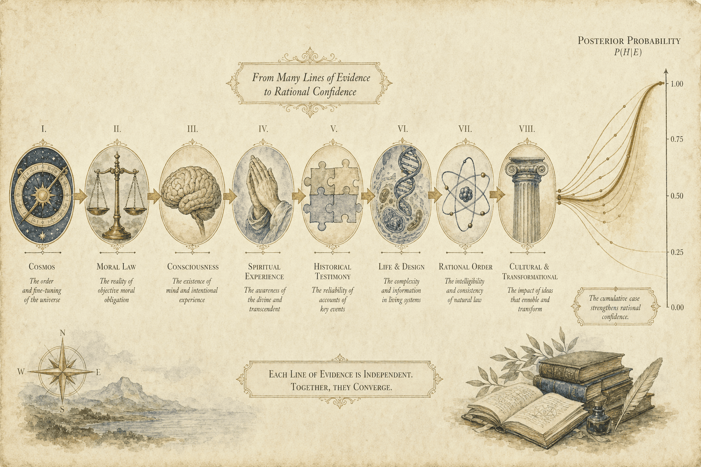
Ilustración para el Capítulo 9 — Síntesis de la evidencia: cadena de Bayes Factors
[RETRACTION] The ~99.99% and ~98% posterior figures reported in earlier drafts of this chapter were artifacts of an assigned-coefficient logistic model, not empirical estimates.
En The Existence of God, Swinburne organiza el caso en cuatro fenómenos observables: la existencia de un universo físico, su conformidad a leyes simples, leyes capaces de producir cuerpos humanos y animales, y la existencia de seres conscientes y libres. Su evaluación se basa en dos criterios: (1) la hipótesis hace probable lo observado y (2) lo observado sería mucho menos probable si la hipótesis fuera falsa. La simplicidad del teísmo —una sola mente omnipotente y eterna— juega a su favor. Nuestro modelo de factores de Bayes es una formalización de esa misma lógica, con rangos explícitos y tratamiento honesto del mal.
STRONG EVIDENCE La estructura bayesiana del argumento es válida; los valores numéricos concretos son juicios estructurados, no estimaciones empíricas MIXED.
Earlier drafts of this chapter reported that a logistic regression model combining eight binary evidences yielded a posterior probability for God’s existence of roughly 99.99%, with a Monte Carlo median around 98.6%. Those numbers were arithmetically correct given the inputs, but epistemically misleading. A careful audit reveals four structural problems:
A cumulative-case model in natural theology should meet five minimum standards before its numerical output is taken seriously:
[minimum, mode, maximum] format communicates both the elicitor’s best guess and the latitude a reasonable critic could demand.Meeting these standards does not guarantee that everyone will agree; it guarantees that disagreement can be located. That is the central advance of the reformulation.
The model audit proposed five concrete reforms. The first was to replace the logistic score with a chain of Bayes factors. This chapter implements that reform. The second was to group correlated evidence. We have done so by collapsing fine-tuning and metaphysical necessity into “cosmic calibration,” and consciousness and rational agency into “mind and reason.” The third was to report the posterior as a function of the prior, not as a single privileged number. The prior-dependence table and curve in section 5 fulfill this requirement. The fourth was to treat evil and hiddenness as genuine counterevidence with BF < 1, rather than neutralizing it by theological fiat. Section 4 includes evil in the chain with a range that consistently favors naturalism. The fifth was to treat the informational model as a hypothesis generating testable predictions, which Chapter 10 develops.
These reforms do not make the case for theism weaker in every respect; they make it more defensible. A conclusion that is honestly conditional is harder for a critic to dismiss than a conclusion that pretends to be viewpoint-independent.
The reformulation treats cumulative-case reasoning in its natural Bayesian form. Let T be a minimally specified theist hypothesis: reality depends on an unsurpassed purposive mind capable of intending finite conscious life. Let N be a contrastive naturalistic family on which fundamental reality is non-purposive and contains no divine agent. For each evidential item E, the Bayes factor is
and the total update obeys
In log space, multiplication becomes addition, so the chain resembles the old additive score. The decisive difference is interpretive: each increment is a stated likelihood ratio, the prior is declared, correlated evidence is grouped, and counterevidence enters below one.
The eight original variables are not eight independent observations. We group them by shared explanatory source and elicit a [minimum, mode, maximum] triplet for each group on the BF scale. The triplet is a structured expert judgment, not a confidence interval or empirical estimate.
The elicitation protocol asks four questions for each group: (1) What exactly is observed? (2) Why would that observation be expected under theism? (3) Why under naturalism, including serious auxiliary hypotheses such as a multiverse or a complete physicalist theory of mind? (4) What discovery would move the factor below or above one? An analyst first answers independently, then sees the rationales of others, revises once, and preserves both rounds. Aggregation uses a geometric mean on the log-BF scale, because the quantity is a ratio and judgments combine naturally in log space. The resulting triplet is then exposed to sensitivity analysis rather than treated as a point estimate.
Grouping is the most important structural decision. Naive multiplication assumes conditional independence: P(Ei | Eprevious, H) = P(Ei | H) for each hypothesis H. That assumption is implausible for fine-tuning and metaphysical contingency, both of which point to the same cosmic order, and for consciousness and biological complexity, which both concern the emergence of mind from matter. Grouping sacrifices dramatic totals but gains interpretability. Where grouping is too coarse, a dependence discount can be applied as a sensitivity device.
| Group | Evidence covered | Baseline treatment | BF [min, mode, max] | Main uncertainty |
|---|---|---|---|---|
| G1 Cosmic calibration | Fine-tuning (FT) + metaphysical necessity / cosmic order (MN) | Grouped jointly | [1.2, 3.0, 12.0] | Multiverse, deeper laws, measure problem, brute-fact alternative |
| G2 Mind and reason | Consciousness gap (CG) + rational agency / cognition | Grouped jointly | [0.9, 2.0, 6.0] | Physicalist vs non-physicalist theories of mind; evolutionary reliability |
| G3 Biological organization | Biological complexity / information (BC) | Separate, conservative | [0.6, 1.1, 2.5] | How much evolution and self-organization already explain |
| G4 Moral normativity | Moral objectivity (MO) | Separate | [0.7, 1.5, 4.0] | Robust moral realism without God |
| G5 Religious experience | Religious experience (RE) | Separate | [0.5, 1.3, 3.0] | Diversity, testimony, psychology, selection effects |
| C1 Evil and hiddenness | Severity of moral evil / divine hiddenness | Mandatory counterevidence | [0.15, 0.45, 0.9] | Theistic expectations about suffering and disclosure |
[SPECULATIVE] The numeric values are illustrative. They are informed by the arguments of Collins, Barnes, Swinburne, and the previous chapters, but they are not extracted from a dataset. Their purpose is to make disagreement inspectable, not to launder intuition as measurement.
G1 Cosmic calibration. A life-permitting universe with intelligible mathematical laws is arguably more expected if a purposive mind underlies reality than if fundamental reality is a random or brute naturalistic setup. The maximum bound reflects a strong fine-tuning intuition; the minimum bound reflects the possibility of a multiverse, deeper laws, or a brute-fact rejection of the contingency premise.
G2 Mind and reason. The existence of conscious experience and reliable rational agency is plausibly more likely under theism, which posits mind as fundamental, than under naturalisms that must derive mind from non-minded processes. The minimum bound acknowledges successful physicalist research programs; the maximum bound reflects the hard-problem gap and evolutionary reliability concerns.
G3 Biological organization. The informational complexity of DNA and cellular machinery suggests an information-rich origin, but evolutionary mechanisms already explain much of the apparent design. The modal factor is therefore only slightly favorable, and the minimum falls below one for critics who think evolution fully explains the datum.
G4 Moral normativity. Robust moral realism fits reasonably well with a theistic ground of value, but secular moral realism is a live option. The wide range reflects genuine philosophical disagreement about whether objective moral truths require a transcendent source.
G5 Religious experience. Widespread reports of encounters with the divine are more expected if a personal God exists, but they are also expected to some degree under naturalistic explanations involving psychology, culture, and anomaly. The modal factor is modest because testimony about transcendent experiences is hard to calibrate.
C1 Evil and hiddenness. Gratuitous suffering and the apparent hiddenness of God count against theism. Theodicies and free-will defenses mitigate but do not erase the tension. The range [0.15, 0.45, 0.9] treats evil as genuine counterevidence while allowing that a theist may reasonably judge its force as partially offset.
Multiplying the modal factors for the six baseline groups gives
The skeptical-bound product is approximately 0.027; the favorable-bound product is approximately 5,832. With a total factor B and prior probability p, the posterior is
The threshold prior for posterior 0.50 is 1/(B + 1), which for the modal chain is about 11%. Thus the evidence is favorable but not self-sufficient: someone whose prior is far below 11% should remain below 50% even after the update.
| Prior P(T) | Posterior at skeptical B = 0.027 | Posterior at modal B = 8.1 | Posterior at favorable B = 5,832 |
|---|---|---|---|
| 0.001 | ≈ 0.00003 | ≈ 0.008 | ≈ 0.85 |
| 0.01 | ≈ 0.0003 | ≈ 0.076 | ≈ 0.98 |
| 0.05 | ≈ 0.0014 | ≈ 0.30 | ≈ 0.997 |
| 0.10 | ≈ 0.003 | ≈ 0.47 | ≈ 0.998 |
| 0.20 | ≈ 0.007 | ≈ 0.67 | ≈ 0.999 |
| 0.50 | ≈ 0.026 | ≈ 0.89 | > 0.999 |
Figure 9.1. Posterior probability as a function of the prior for three total Bayes factors. The modal curve shows that the evidence is favorable but not decisive for very low priors.
Figure 9.2. The Bayes-factor chain: each evidential group updates prior odds through an explicit likelihood ratio. Correlated items are grouped to avoid double-counting.
Figure 9.3. Evidence pyramid showing how modal factors combine. The broad base of modest factors and the narrow apex of the total factor illustrate that the chain is driven by multiplication, not by any single decisive piece of evidence.
A publishable chain must report how fragile the conclusion is to its assumptions.
To a theist who begins with a prior of 20%, the modal chain yields a posterior around 67%. To a skeptic who begins at 1%, the same evidence yields only about 7.6%. Both are updating correctly on the same evidence; they differ in where they started. The model therefore does not resolve the debate between theism and naturalism; it clarifies the debate. It shows that much of the disagreement is not about whether the evidence is favorable — the modal chain is favorable — but about whether the theist hypothesis was sufficiently plausible before the evidence to make the update matter.
This finding should lower the rhetorical temperature. A theist who reports “the evidence makes God highly probable” without mentioning the prior is being misleading. A skeptic who dismisses every favorable factor without offering a better-supported alternative is being evasive. The Bayes-factor chain gives both parties a common worksheet.
[STRONG METHODOLOGICAL CLAIM] The Bayes-factor chain improves cumulative-case reasoning by making every moving part inspectable. [LIMIT] It does not prove theism, produce a measured frequency, or settle metaphysical disagreement.
The elicited ranges are judgments, not empirical estimates. Calling them Bayes factors describes their intended inferential role, not their pedigree. The model is useful precisely because it exposes where the real disagreements lie: in priors, in the comparative expectedness of evil, in the status of multiverse hypotheses, and in whether consciousness is genuinely improbable under naturalism.
Therefore, the corrected claim is not “the probability of God is ~98%.” It is: under the stated assumptions, the total evidence is modestly to strongly favorable to theism, with the posterior remaining highly sensitive to the prior and to the treatment of counterevidence. That is a much weaker conclusion than the old headline, but it is one that cannot be dismissed by a single change of an intercept.
The retraction itself is a gain in credibility. A cumulative case that reports a precise 98% figure while hiding its assumptions invites dismissal. A cumulative case that says “the evidence is favorable, here are the ranges, here is the prior curve, and here is what changes my conclusion” invites engagement. The goal is not to win the debate at any rhetorical cost; the goal is to make the argument revisable and updateable as new evidence and better arguments emerge.
We have argued that the evidence, taken together, can rationally raise the probability of a purposive source of reality. But the Bayes-factor chain tells us that the evidence is also a signal: a signal of order, of calibrated possibility, of mind, and of meaning. In Chapter 10 we ask what kind of reality could be the source of such signals. The ancient answer — the Logos — will be reframed in the language of information.
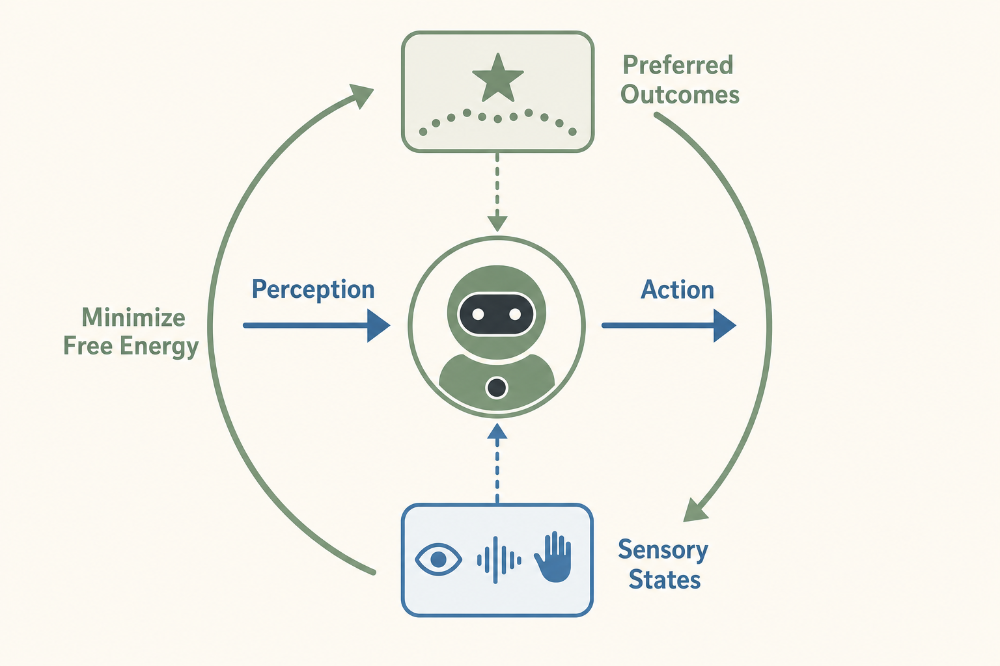
Ilustración para el Capítulo 10 — El Logos y los fundamentos de la información
[SPECULATIVE] Extensions to Penrose’s non-computability or Wheeler’s participatory universe are philosophical inferences, not established physics.
The Greek term Logos originally meant word, reason, or principle. In the sixth century BCE, Heraclitus of Ephesus elevated it to a cosmic principle: an underlying rational order common to all things, intelligible yet often overlooked. The Stoics later developed it into the immanent rational law pervading nature, a divine fire or reason structuring all matter and life.
As Greek thought encountered Jewish and Christian monotheism, the concept deepened. Philo of Alexandria presented the Logos as an intermediary between the transcendent God and the material world — God’s creative blueprint and the messenger through which divine power orders creation. In the Christian tradition, the Gospel of John opens with a direct identification: “In the beginning was the Word (Logos), and the Word was with God, and the Word was God… All things were made through Him” (John 1:1–3). Justin Martyr saw seeds of the Christian Logos in Greek philosophy; Augustine linked the Logos to the divine ideas or eternal reasons by which God fashioned the world; Maximus the Confessor taught that the one divine Logos has planted many logoi, rational principles, in every creature.
Across these developments, the core idea is stable: the Logos is the structuring rationality of the cosmos. Ontologically, it gives the universe its coherent form; epistemologically, it makes the universe intelligible to rational minds. Reality is fundamentally intelligible because it is grounded in intelligence.
This classical idea was always more than a philosophical ornament. For the Church Fathers, the Logos doctrine explained why the created order is law-like, why human minds can know it, and why the same rationality that governs nature also governs ethics and worship. The Incarnation was understood as the personal entry of the Logos into the world he had ordered. In Maximus the Confessor’s vision, the cosmic logoi are like notes in a great symphony that the one Logos is conducting toward reconciliation. This is a deeply informational picture, even if it predates Shannon by more than a millennium.
Fast-forward to the modern age. The metaphor of the universe as rational order has been recast in the language of information. Scientists and philosophers now observe that the world is permeated by information — from genetic code to mathematical laws. In many respects, information plays the role that Logos did in antiquity: the substrate of reality, the generative principle behind phenomena, and the key to cosmic order.
The shift is more than terminological. Where the Stoics spoke of Logos spermatikos, the seminal reason structuring matter, contemporary physics speaks of laws and initial conditions as an information specification. Where Augustine spoke of the eternal reasons (rationes aeternae) in the divine mind, computer scientists speak of algorithms that generate complex outputs from compact rules. Where Maximus spoke of the many logoi of creatures flowing from one Logos, systems biologists speak of a shared genetic code unfolding into diverse organisms. The parallels are not proofs, but they are suggestive enough to warrant a careful theological interpretation.
Three caveats are essential. First, information in the technical sense is not the same as meaning; Shannon bits can exist without semantics. Second, the mere existence of information does not entail a divine source; naturalistic accounts of information are also available. Third, the identification of God with information can become a category mistake if pushed too literally. The classical God is not a bit string. The defensible claim is that God is the source and ground of the informational structure of reality, not that God is reducible to any one information-theoretic quantity.
In 1948 Claude Shannon founded information theory by defining information as the reduction of uncertainty. A bit is a binary choice between two equally probable alternatives. Shannon entropy H = −∑ pi log2 pi measures the information content of a probability distribution. The less probable an event, the more information its occurrence carries.
Shannon information is syntactic: it cares about the statistical structure of a message, not its meaning. Yet it is the backbone of every digital technology and, through the work of Leon Brillouin, it links information to thermodynamic entropy. Information can be understood as negative entropy: creating order means reducing uncertainty about the exact state of a system.
This quantitative layer is analogous to the Stoic idea of Logos as the rational structure pervading nature. It is not yet meaning; but it is the grammar that makes meaning possible.
Shannon’s second great contribution was the theory of reliable communication. The channel capacity theorem shows that information can be transmitted arbitrarily accurately through a noisy channel, provided the rate remains below a threshold and redundancy is used. Error-correcting codes, which add structured redundancy to a message, are now essential to every digital system. Theologically, the idea that the universe contains error-correcting structure is suggestive: a rational source could encode its creation with enough redundancy to preserve pattern despite local disorder. This is not an argument for God, but it is a structural feature of information-rich systems that a Logos theology can naturally accommodate.
Physicist John Archibald Wheeler coined the aphorism “It from Bit”: every physical “it” ultimately derives from immaterial binary answers to yes/no questions. Wheeler proposed that “all things physical are information-theoretic in origin.” This is not merely an epistemic claim about our knowledge of particles; it is an ontological proposal that the deepest level of reality may be an information-processing system.
Wheeler also spoke of the participatory universe: observers, by posing questions to nature, help bring forth the physical reality. This modern twist echoes the older idea that mind and world are intertwined through reason. If the universe is a giant information system, then the question “who or what programmed it?” becomes inescapable. The classical theist’s answer — the Logos — is one coherent candidate.
Wheeler’s proposal remains controversial. Critics argue that “it from bit” may be a useful heuristic rather than a literal ontology, and that quantum decoherence can account for many of the phenomena Wheeler found mysterious. Nevertheless, his aphorism has shaped a generation of research in quantum information and digital physics. For the Logos theologian, Wheeler’s move is welcome: it makes it respectable to ask whether the ultimate constituents of reality are not particles or fields but distinctions, relations, and answers — precisely the kind of entities that can originate in a rational mind.
In 1960 Eugene Wigner published his famous essay “The Unreasonable Effectiveness of Mathematics in the Natural Sciences.” Why should abstract mathematical structures describe the physical world so precisely? Why should the same equations that flow from human reason also govern quarks and galaxies?
Wigner’s puzzle is a modern form of the Logos intuition. If the universe is written in mathematical language, then the ability of our minds to read that language is not a coincidence. The Logos doctrine offers a principled explanation: human reason participates in the same rational order that structures the cosmos. As Galileo put it, the book of nature is written in the language of mathematics. The theist adds: because it has an Author.
Not every interpretation of Wigner’s puzzle is theistic. One might argue that natural selection shaped our minds to track regularities in the environment, and that the deeper mathematical structures are themselves abstract descriptions we impose on nature. But this response struggles with the unreasonable part of Wigner’s phrase: why should the most abstract, elegant, and even counter-intuitive mathematics — complex analysis, Hilbert spaces, gauge theory — turn out to be exactly the language nature speaks? The Logos hypothesis does not solve the mystery by stipulation, but it at least offers a metaphysical setting in which the mystery is intelligible: the same Mind that authored the cosmos also authored the rationality by which we understand it.
Roger Penrose has argued for a deep connection between the mathematical structure of physical law and the nature of conscious understanding. In The Road to Reality and later works he emphasizes that the laws of physics are not arbitrary; they exhibit extraordinary mathematical elegance and unity. He also contends that genuine human mathematical insight may not be reducible to algorithmic computation, a view he develops through Gödelian and quantum-gravitational arguments.
[SPECULATIVE] Penrose’s appeal to non-computability is controversial. We do not need it to establish the Logos thesis. But if something like it is correct, it strengthens the case that mind and reason are not merely late-emergent side-effects of computation; they may be fundamental to the way reality is structured.
Penrose’s emphasis on the mathematical unity of physical law also resonates with the Logos theme. The laws of physics are not a miscellaneous set of rules; they display deep symmetries, conservation principles, and unexpected connections. General relativity and quantum mechanics, despite their tension, both exhibit extraordinary mathematical beauty. For Penrose, this beauty is a guide to truth. For the theist, the beauty is a clue to the mind of the Artist. The claim is not that beauty proves God, but that a universe authored by the Logos would be expected to display rational elegance at its foundations.
Modern physics provides striking examples of the centrality of information, often aligning with the idea of an ordered Logos.
Since Ludwig Boltzmann, entropy has been understood in terms of missing information: S = kB ln W, where W is the number of microstates consistent with a macrostate. Higher entropy means less information about the exact state. The extremely low entropy of the early universe is therefore a huge infusion of information — a precisely specified initial condition that science still struggles to explain naturalistically. In a Logos framework, that initial information is the imprint of a rational source.
The connection between entropy and information is not merely analogical. Shannon deliberately shaped his entropy formula to mirror Boltzmann’s, and Brillouin coined the term negentropy for information. When you clean a room, you decrease entropy by imposing a specific macrostate; you are, in effect, adding information about where things belong. When a star forms from a diffuse cloud, it creates local order by gravitational collapse. The early universe, however, was already in a highly ordered, low-entropy state relative to what equilibrium would permit. That initial order is the “given” of cosmology: without it, no galaxies, stars, planets, or life could emerge. Naturalistic explanations appeal to inflation, quantum fluctuations, or unknown boundary conditions, but none has yet removed the sense that the universe began with an extraordinary informational specification.
Stephen Hawking discovered that black holes radiate and can evaporate. His original calculations suggested that the radiation is thermal and carries no detailed imprint of what fell in, implying information loss. This conflicts with quantum unitarity, which forbids the destruction of information. Decades of work on the holographic principle, AdS/CFT, and quantum entanglement entropy suggest that information is conserved, encoded either in subtle correlations of Hawking radiation or in spacetime structure itself. The moral is clear: physicists are willing to revise their understanding of space and time in order to preserve information.
The importance of this episode for our theme is hard to overstate. General relativity, left to itself, seemed to allow the destruction of information. Quantum mechanics, left to itself, declared information sacred. The resolution — whichever detailed theory wins — will almost certainly tell us that information is more fundamental than spacetime geometry. The holographic principle, championed by Gerard ’t Hooft and Leonard Susskind, proposes that the information content of a volume of space can be encoded on its boundary. If the universe is holographic, then the three-dimensional world we experience is a projection of information stored on a two-dimensional surface. That is as close as empirical physics has come to the idea that reality is, at bottom, a structure of information rather than a stuff extended in space.
Quantum information theory treats quantum states as information resources. A qubit can exist in superposition, and entangled particles share information holistically. The ER = EPR conjecture suggests that spacetime connectivity itself may be equivalent to quantum entanglement correlations. Seth Lloyd has argued that “the universe is a quantum computer” computing its own next state. His remark that “energy makes physical systems do things; information tells them what to do” is a direct modern echo of the classical distinction between existence and form — or, in theological terms, between creation and the Logos.
Quantum entanglement is particularly striking. Two particles can be so correlated that the state of one instantaneously constrains the state of the other, no matter how far apart they are. This is not faster-than-light signaling, but it is a form of nonlocal information sharing. Entanglement has been experimentally confirmed many times and is now the basis of quantum cryptography and quantum computing. If the fabric of space itself is woven from entanglement, as the ER = EPR proposal suggests, then the most basic feature of physical reality — its geometry — is informational in nature. Once again, the physicist’s “information” and the theologian’s “Logos” begin to look like different names for a common theme.
The precise values of physical constants can be framed as informational bits set to specific values that encode a habitable universe. Paul Davies has described the laws of nature as “software” guiding matter-energy “hardware.” If one asks where that software came from, one is asking a Logos question in information-theoretic dress. Fine-tuning is not merely improbable luck; under the informational reading, it is an intentional calibration signal.
The informational framing also clarifies the logic of the fine-tuning argument. A life-permitting universe is like a message that says “life is possible” in a vast space of otherwise uninhabitable possibilities. Under theism, such a message is expected; under a generic naturalistic single-universe hypothesis, it is surprising. The Bayes-factor chain of Chapter 9 captures this intuition as a likelihood ratio, while the information framework explains why the ratio takes the form it does: the constants are not just improbable; they are improbable in a way that carries semantic content, namely suitability for complex life. Of course, a multiverse with observer selection could blur this contrast, which is why the fine-tuning factor is reported as a range rather than a single number.
To avoid equivocation, we must distinguish several senses of “information”:
Figure 10.1. A layered stack from Shannon bits to the Logos as the proposed source and unifier of every informational layer.
The Logos hypothesis does not identify God with any single layer. Rather, God is proposed as the source and ground of the whole stack: the reason there are bits, the reason those bits form meaningful patterns, the reason the patterns are compressible into elegant laws, and the reason those laws are instantiated as a real cosmos.
Luciano Floridi’s philosophy of information helps keep the levels distinct. Floridi distinguishes ontological information (the fabric of reality), mathematical information (Shannon bits and entropy), and semantic information (well-formed, meaningful, truthful data). He also explores the idea of God as an infinite informational entity, though he remains agnostic on the theological conclusion. John F. Haught and Niels Henrik Gregersen have pursued the theological direction more explicitly: Haught sees divine providence as the dramatic unfolding of information over cosmic history, while Gregersen develops a “Stoicizing Logos Christology” in which matter is suffused with information-bearing divinity. These voices converge on a single question: if the world is fundamentally informational, what is the most plausible source of that information?
One of the most striking instances of semantic information in the universe is the genetic code. DNA is a molecule with an alphabet — A, C, G, T — that encodes functional instructions for building proteins. The sequence is not merely complex; it is specified: the order of nucleotides determines which amino acids are assembled and in what order. This is the hallmark of semantic information: symbols that mean something, that refer to something beyond themselves.
Francis Collins, leader of the Human Genome Project, titled his book The Language of God to capture this wonder. The genetic code is not a metaphor; it is a literal coding system. Messenger RNA transcribes DNA; ribosomes read the transcript in triplets called codons; transfer RNAs deliver the correct amino acids; and the resulting protein folds into a functional shape. The whole process is an information pipeline. Evolution explains how the pipeline was refined over time, but it does not erase the prior question: how did an information pipeline arise in a pre-biological world?
For the Logos theologian, DNA is a local instance of the universal informational order. Just as physical law is cosmic information, the genetic code is biological information — a lower-level module in the same “program.” The claim is not that God directly encoded each gene, but that an informational source capable of calibrating physical constants is also capable of ensuring that the resulting chemistry can support information-rich chemistry. Once again, the move is abductive: the genetic code is more readily intelligible as the product of a rational source than as the necessary output of unguided chemistry.
[MIXED EVIDENCE] The origin of life remains unsolved, and naturalistic research programs are active. The informational reading of DNA is therefore not a proof, but it is a powerful clue that fits naturally within a Logos framework.
Figure 10.2. The Free Energy Principle loop: a system maintains its existence by minimizing variational free energy through perception and action. In a Logos framework, such self-organizing inference can be read as a natural mechanism by which created systems actualize the informational order imprinted in them.
The Free Energy Principle, developed by Karl Friston, provides a formal language for self-organization. Any system that persists under a statistical boundary can be described as if it were minimizing variational free energy — that is, as if it were keeping its internal model of the world aligned with sensory input and acting to make the world conform to its model. Living systems, from cells to brains, can be analyzed in this way. The principle does not by itself imply a divine Logos; it is a mathematical framework for describing adaptive systems. But it is consonant with a Logos theology: if the universe is informationally ordered, then living systems that infer and act are natural instruments for realizing that order in concrete form.
[MIXED] The Free Energy Principle is a powerful descriptive tool, but its explanatory scope is debated. It should not be treated as a proof of the Logos; rather, it is one of the mechanisms by which a Logos-ordered world could unfold.
If the universe is fundamentally informational, the relationship between God and the world can be reconceived without lapsing into crude mechanism.
This informational metaphysics does not replace classical theism; it translates it. God remains the source and end of all being, but the language of information makes the doctrine accessible in a scientific age. It also connects naturally with the Free Energy Principle and active inference, which describe living systems as maintaining themselves by minimizing variational free energy — that is, by keeping their internal models aligned with the world. In a Logos framework, such self-organizing inference is the natural mechanism by which created systems actualize the informational order imprinted in them.
The Bayes-factor chain of Chapter 9 can now be reread through the lens of information. Each evidential group becomes a different class of signal emitted by the same informational source:
Even evil and chaos can be interpreted within the model, though with due caution. Moral evil is like noise introduced by free agents acting against the divine information; natural evil is like turbulence in a complex system. The Christian doctrine of redemption can then be read as an error-correcting intervention: the Logos introduces a restorative pattern into the corrupted signal. The analogy is deliberately modest: it does not explain the magnitude of particular sufferings, but it offers a conceptual place for evil within an informational ontology without making evil a metaphysical illusion.
What the unified framework gains is coherence. The evidences discussed in Part II are no longer isolated arguments to be added up; they are different frequencies of the same broadcast. Fine-tuning tells us the transmitter is powerful and precise; DNA tells us the signal can be copied and executed; consciousness tells us the signal can be understood; morality tells us the signal has normative content; religious experience suggests that, under certain conditions, the signal can be felt as personal. The Bayes-factor chain of Chapter 9 measures the strength of each frequency; the Logos framework identifies the hypothesized source.
The ancient intuition of a cosmic Logos has re-emerged in our time as the idea that the universe is built on information. From Shannon’s bits to Wheeler’s “it from bit,” from Wigner’s mathematical effectiveness to Penrose’s mathematical universe, from black-hole entropy to quantum entanglement, physics increasingly speaks the language that theology has spoken for millennia. The Logos is not a relic of Greek philosophy; it is a living concept that resonates with the cutting edge of scientific thought.
Three final cautions are in order. First, the convergence is not identity. “Information” in physics is a technical concept, and “Logos” in theology is a divine person or rational principle. The theologian must not divinize bits, and the physicist must not confuse information with meaning. Second, the convergence does not compel theism. A naturalist can accept that the universe is informational while denying that the information has a personal source. The argument remains abductive. Third, the convergence is fruitful: it suggests new research questions, new ways of reading old evidences, and new bridges between science and theology.
To say “In the beginning was the Logos” in an age of information is to say “In the beginning was the Information” — information that was with God and was God’s own rational self-communication. Through that primordial Information, all things came to be, and in that Information we find light, life, and meaning.
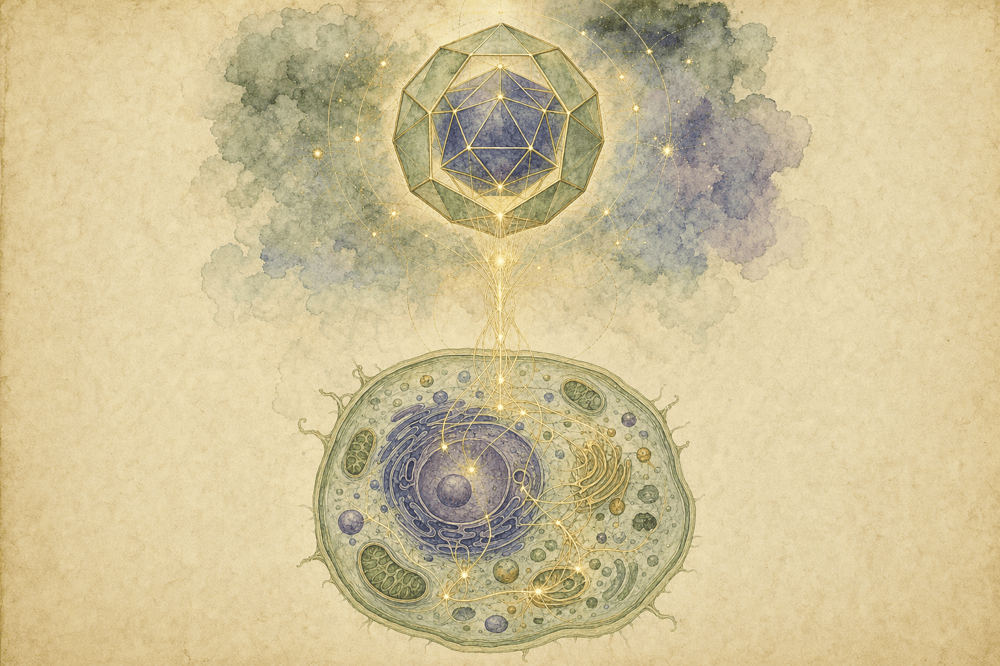
Ilustración para el Capítulo 11 — El Espacio Platónico: patrones que ingresan
[STRONG EVIDENCE] para la plasticidad morfogenética y la navegación de espacios de posibilidades; [SPECULATIVE] para su lectura como Logos divino.
Una tesis central de este libro sostiene que la realidad no es mera yuxtaposición de materia, sino materia inteligiblemente ordenada. La expresión «Espacio Platónico» ofrece un vocabulario contemporáneo para formular esa intuición, pero exige una disciplina conceptual estricta. En Michael Levin, el morphospace no designa, por sí solo, un cielo religioso ni una mente cósmica. Designa un espacio de formas, conductas y competencias posibles que un sistema vivo puede explorar. La expresión «dones agenciales» (agential gifts) señala que ciertas arquitecturas materiales permiten acceder a capacidades que no fueron especificadas pieza por pieza. El organismo no recibe un plano minucioso desde fuera: coordina, corrige errores y alcanza estados-meta mediante dinámicas distribuidas.
La evidencia experimental relevante procede de la biología del desarrollo y la cognición basal. Redes bioeléctricas entre células almacenan estados, delimitan objetivos anatómicos y pueden ser perturbadas para producir resultados morfológicos reproducibles sin alterar la secuencia genómica. Planarias, xenobots y anthrobots muestran, con alcances distintos, que el sustrato celular puede resolver problemas en un espacio anatómico y reorganizarse ante circunstancias nuevas. Esta plasticidad apoya una afirmación acotada: la forma final no se deduce de una lectura ingenuamente lineal del genoma. No prueba que la forma exista como entidad separada, ni que una inteligencia trascendente la comunique.
La noción de ingresión, desarrollada por Matt Segall a partir de Alfred North Whitehead, describe cómo una posibilidad formal adquiere determinación en un acontecimiento concreto. No es necesario imaginar objetos matemáticos empujando átomos desde otra región espacial. Basta distinguir tres niveles: un conjunto estructurado de posibilidades; unas restricciones dinámicas que hacen algunas trayectorias accesibles; y una realización física particular. La causalidad eficiente permanece en el sistema material, mientras la descripción formal identifica qué organización se actualiza. En este sentido deflacionario, «ingresar» significa que una dinámica selecciona una configuración entre alternativas posibles.
Karl Friston, en «On the (Platonic) Nature of Things», ofrece un puente formal mediante el principio de energía libre. Un sistema que persiste bajo una frontera estadística puede describirse como si mantuviera un modelo generativo y minimizara energía libre variacional. En morfogénesis, las trayectorias hacia una forma-meta pueden representarse como inferencia: los estados celulares reducen discrepancias respecto de resultados fenotípicos esperados. [ESTABLISHED] La identidad algebraica y los métodos variacionales están establecidos dentro de sus supuestos. [STRONG EVIDENCE] Su uso para modelar coordinación y homeostasis cuenta con apoyo formal y experimental. [MIXED] Sigue discutido cuánto explica el formalismo, frente a cuánto redescribe dinámicas conocidas.
Chris Fields, en «From Experience to Math», impide una conclusión precipitada. Si la matemática emerge de regularidades compartidas en la experiencia y toda transmisión de información requiere un portador físico, la eficacia descriptiva de las estructuras no demuestra que ellas habiten un dominio ontológicamente anterior. Esta alternativa puede ser empíricamente equivalente a una lectura platónica en muchos contextos. Por ello, la existencia de una representación matemática compacta no decide entre realismo platónico, estructuralismo, instrumentalismo o una metafísica de procesos.
La convergencia del simposio es, entonces, real pero limitada. Levin pregunta cómo los ensamblajes acceden a competencias; Segall interpreta la actualización como ingresión whiteheadiana; Friston formaliza persistencia e inferencia; Fields reconstruye la matemática desde experiencia y fronteras informacionales. No hay unanimidad ontológica. La evidencia respalda que los sistemas recorren paisajes estructurados y que las descripciones de atractores, simetrías y modelos generativos tienen poder explicativo. No establece que el paisaje sea una sustancia inmaterial ni una persona.
La tesis del Logos puede adoptar esta maquinaria sin apropiarse indebidamente de su autoridad. Su formulación legítima es abductiva: si el universo posee un espacio estable y fecundo de posibilidades, si ciertos sustratos realizan patrones portables y si la agencia aparece por grados, entonces una razón ordenadora constituye una interpretación metafísica coherente. [SPECULATIVE] Identificar esa razón con un Logos personal, bueno y creador excede los datos. También excede los modelos de Levin y Friston, cuyos mecanismos funcionan naturalísticamente.
La cautela fortalece, no debilita, la propuesta. El Espacio Platónico aporta al libro un mecanismo naturalista de actualización: restricciones, memoria bioeléctrica, atractores y minimización variacional conectan posibilidad con realización. El Logos aporta una lectura sobre por qué existe ese espacio, por qué es inteligible y por qué contiene rutas hacia agentes capaces de conocerlo. La primera cuestión admite pruebas de laboratorio; la segunda compara cosmovisiones. Confundirlas produciría una falsa demostración. Mantenerlas separadas permite una tesis más precisa: la ciencia muestra cómo patrones ingresan en materia organizada; la teología filosófica pregunta si la estructura total de posibilidades tiene un fundamento racional.
Fuentes del corpus: Michael Levin, ponencias «Patterns of Form and Behavior Beyond Emergence» y «Free Lunches»; Matt Segall, exposición sobre ingresión y Whitehead; Karl Friston, «On the (Platonic) Nature of Things»; Chris Fields, «From Experience to Math». La referencia a estas ponencias acredita sus posiciones, no una adhesión conjunta al teísmo.
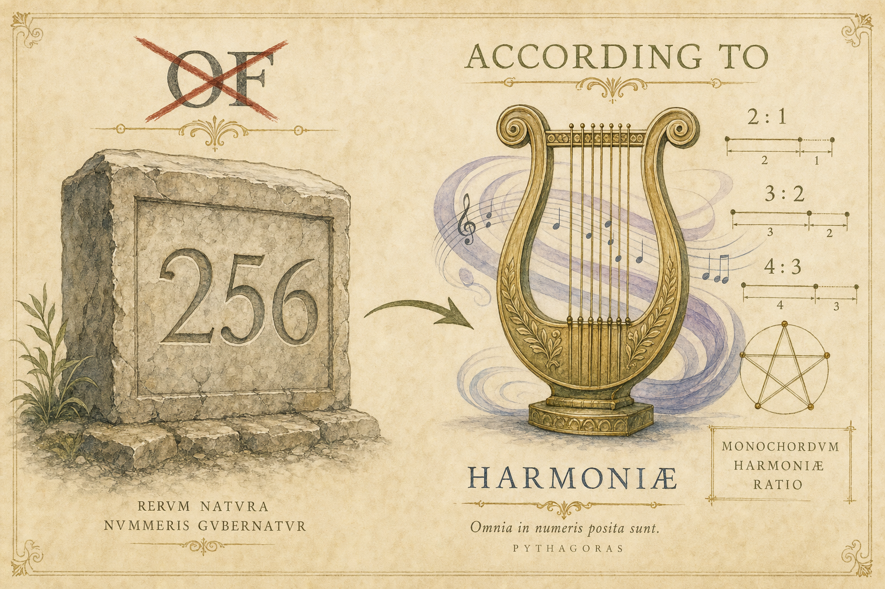
Ilustración para el Capítulo 12 — El Número según Teano: estructura, no sustancia
Decir que «Dios es información» parece audaz, pero mezcla categorías. La información técnica presupone un alfabeto, diferencias discernibles, una distribución y, según el caso, un intérprete. Dios, en la teología clásica, no sería un objeto codificado dentro de un sistema más amplio. Tampoco el número es una materia sutil de la cual se fabriquen piedras, células y estrellas. La corrección pitagórica que guía este capítulo puede expresarse así: las cosas no nacen del Número como de una sustancia; nacen según el Número, es decir, conforme a proporciones, límites y relaciones inteligibles.
Esta fórmula se asocia aquí a Teano como emblema de una línea pitagórica, no como cita textual críticamente establecida. La tradición antigua es fragmentaria, estratificada y transmitida por testimonios tardíos; por ello, el capítulo reconstruye una intuición doctrinal y no pretende resolver autoría filológica. «Número» nombra estructura relacional: unidad y multiplicidad, medida, armonía, razón entre términos. Bajo esta lectura, una cosa es lo que es no porque contenga una porción de una sustancia llamada número, sino porque realiza un orden determinable.
La reformulación propuesta sustituye «Dios como información» por «Dios como fundamento de la estructura de posibilidades». La primera frase invita a preguntar cuántos bits tiene Dios o en qué soporte se almacena; ambas preguntas son errores categoriales. La segunda afirma algo metafísicamente más sobrio: toda realidad contingente actualiza unas posibilidades y excluye otras; esas posibilidades guardan relaciones de compatibilidad, implicación y proporción. El Logos sería el fundamento por el cual ese orden modal es inteligible y realizable.
[ESTABLISHED] Las ciencias describen regularidades mediante estructuras matemáticas y comparan modelos por su adecuación. [STRONG] Es defendible que una misma estructura pueda tener realizaciones materiales diversas y que las restricciones de organización sean explicativamente relevantes. [MIXED] Es disputado si las estructuras existen independientemente, emergen de prácticas cognitivas o resumen patrones físicos. [SPECULATIVE] Que el fundamento último de las posibilidades sea una inteligencia personal constituye una inferencia metafísica, no un resultado de teoría de la información.
El corpus de Amelita ofrece una ilustración contemporánea de esta gramática. En su enseñanza, las virtudes son presentadas como patrones que se «llaman», se reciben y se encarnan en actos. La metáfora de una fotosíntesis espiritual —luz convertida en gesto— expresa el tránsito desde posibilidad normativa hasta conducta. El valor documental de este material es doble: atestigua cómo una comunidad viva conserva y transforma símbolos pitagóricos, y proporciona prácticas observables de atención, recapitulación y formación del carácter. No certifica la antigüedad de cada formulación ni demuestra que las virtudes existan como energías separadas.
Por eso se requieren dos etiquetas simultáneas. [STRONG AS PRACTICE] Es plausible y susceptible de estudio que la repetición, la atención y la evaluación de la conducta modifiquen hábitos. [METAPHYSICAL CONJECTURE] Que una virtud sea una entidad divina alada que desciende desde el Uno pertenece a la doctrina de la escuela. Puede orientar una vida, pero no debe presentarse como resultado experimental. La expresión «tradición viva» describe continuidad practicada; no garantiza identidad histórica sin interrupciones.
La reformulación estructural permite dialogar con la morfogénesis sin declarar identidades ontológicas. Una virtud funciona como forma normativa: define un conjunto de acciones más congruentes que otras. Un organismo, en el marco de Levin, navega hacia configuraciones anatómicas; una persona, en el marco ético, navega hacia configuraciones de carácter. En ambos casos hay estado actual, posibilidades, restricciones, memoria, error y corrección. La analogía es fuerte en la arquitectura. La identidad —«la virtud y el atractor bioeléctrico son la misma cosa»— no está establecida.
La preposición «según» preserva precisamente esta diferencia. El tejido se organiza según relaciones fisiológicas; la acción justa, según una norma; una melodía, según intervalos. Ninguno necesita estar compuesto de relaciones como si estas fueran átomos. Así, el Logos no es una base de datos cósmica y las criaturas no son archivos descargados. El Logos designa, en la hipótesis del libro, la razón por la que las posibilidades forman un orden y por la que algunas realizaciones son verdaderas, bellas o buenas.
Esta corrección gana coherencia. Evita identificar información de Shannon con significado, evita separar el patrón de todo soporte y evita atribuir a la matemática voluntad propia. También impone un costo: ya no puede decirse que la ciencia «descubrió a Dios como información». A lo sumo, la ciencia descubre estructuras, invariantes y paisajes de posibilidad; la filosofía pregunta qué ontología los explica; la teología propone que el Logos los funda y conoce.
La tesis final es deliberadamente condicional. Si la inteligibilidad del orden modal requiere fundamento, y si un fundamento racional explica mejor ese orden que un hecho bruto, entonces el lenguaje del Logos adquiere fuerza abductiva. Pero subsisten alternativas: realismo estructural sin mente, nominalismo, naturalismo modal y metafísicas de proceso. La enseñanza de Amelita muestra cómo la hipótesis puede vivirse: actualizar posibilidades de virtud en actos verificables. No decide por sí misma cuál metafísica es verdadera. Teano, leída con cautela, ofrece la regla de oro: no divinizar el símbolo ni materializar el Número; reconocer que lo real llega a ser bajo forma, proporción y límite.
Regla de interpretación: «según el Número» es aquí una reconstrucción filosófico-doctrinal. Las afirmaciones sobre Amelita describen el corpus de la escuela como tradición viva; no se presentan como testimonios históricos directos de Teano.
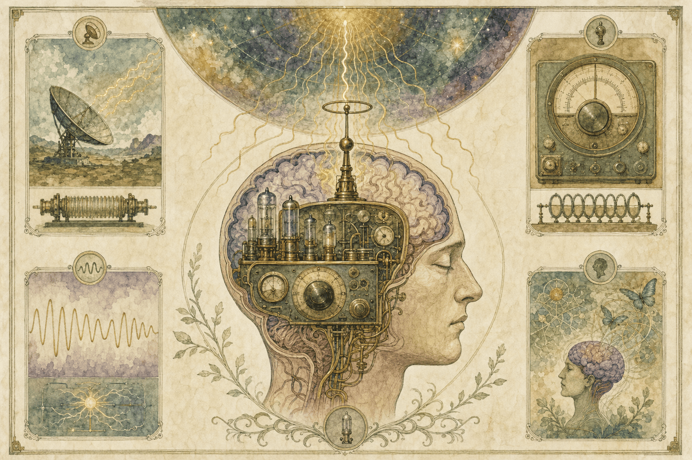
Ilustración para el Capítulo 13 — Consciencia transmisiva y el Logos humano
[MIXED→SPECULATIVE] Hipótesis puente con evidencia indirecta; no teoría confirmada de la consciencia.
El debate sobre la consciencia suele polarizarse entre producción y separación. Para el materialismo productivo, el cerebro genera experiencia del mismo modo —solo analógicamente— que un órgano produce una función. Para el dualismo sustancial, mente y cuerpo pertenecen a órdenes distintos cuya interacción plantea dificultades conocidas. La propuesta transmisiva asociada aquí a Nic Rouleau abre una tercera vía: el sistema nervioso no tendría que crear la consciencia desde cero ni alojar un alma completamente independiente; podría modular, filtrar o estabilizar un proceso experiencial más amplio.
Esta formulación debe manejarse con rigor. Rouleau discute memoria, estados de consciencia y continuidad de la experiencia, e insiste en que haría falta un mecanismo para explicar el paso de una forma a otra. El corpus no ofrece una demostración de que la consciencia exista fuera del cerebro, ni una identificación con Dios. [MIXED] La idea de transmisión organiza algunas observaciones y genera contrastes conceptuales. [SPECULATIVE] La existencia de un campo consciente independiente, la supervivencia personal y su procedencia de un Logos son extensiones no establecidas.
«Transmisión» puede significar al menos tres cosas. Primero, dependencia de canal: la experiencia cambia cuando cambian conectividad, neuromodulación o integración neural. Esto está ampliamente apoyado, pero es compatible con producción. Segundo, selección de información: el cerebro amplifica señales, inhibe otras y mantiene modelos del entorno y del cuerpo. También es naturalista y comprobable. Tercero, recepción ontológica: el cerebro accedería a una consciencia que existe con independencia de él. Solo este tercer sentido constituye la hipótesis fuerte, y la evidencia de los dos primeros no se transfiere automáticamente al tercero.
La distinción evita la falacia del receptor de radio: que un radio dañado distorsione la música no prueba que todo cerebro sea receptor de una señal extracerebral. La analogía muestra posibilidad lógica, no probabilidad empírica. Para elevarla a hipótesis científica se necesitan variables: qué se transmite, por qué canal, con qué ancho de banda, qué perturbación altera recepción sin alterar producción, y qué observación diferencia ambos modelos.
La versión metodológicamente más fértil no postula primero una sustancia remota. Pregunta si la consciencia depende de relaciones distribuidas que atraviesan escalas: cerebro, cuerpo, ambiente y otros agentes. El principio de energía libre de Friston y las fronteras de Markov modelan cómo estados internos se acoplan estadísticamente con causas externas. Fields subraya que la información se intercambia mediante portadores físicos. Levin extiende la investigación de competencias a tejidos sin sistema nervioso y declara expresamente que no posee una nueva teoría de la consciencia. En conjunto, estos trabajos legitiman estudiar interfaces y continuidad, pero no prueban recepción extracorporal.
El enfoque transmisivo puede ser un tercer camino si conserva esa apertura. Frente al reduccionismo ingenuo, recuerda que correlación neural no equivale a explicación de la cualidad vivida. Frente al dualismo inmune a prueba, exige mecanismo y predicción. La consciencia podría ser una propiedad relacional realizada por redes corporales, un proceso extendido o un rasgo fundamental modulado por organismos. Esas opciones no son equivalentes y deben competir mediante modelos.
«Logos humano» nombra la capacidad finita de recibir regularidades, articular razones y transformar comprensión en acción. El verbo «recibir» no presupone una antena metafísica; en su sentido mínimo, indica que conocer depende de un mundo que restringe nuestras representaciones. El pensamiento no inventa a voluntad los números primos, la resistencia de un tejido ni las consecuencias de una decisión. Responde a una estructura que lo precede.
La lectura teológica añade que esta correspondencia entre razón humana y orden real participa de un Logos más amplio. [SPECULATIVE] La participación podría explicar por qué mentes finitas acceden a verdades abstractas y por qué la comprensión puede orientar la conducta. Sin embargo, ni la inteligibilidad matemática ni el carácter unitario de la experiencia identifican por sí mismos una mente divina. Panpsiquismo, monismo neutral, emergentismo y teorías de orden superior ofrecen comparadores no teístas.
Una hipótesis transmisiva seria debería superar tres pruebas. La primera es diferencial: predecir un patrón que un modelo productivo bien especificado no prediga. La segunda es dosis-respuesta: relacionar perturbaciones del supuesto canal con cambios cuantificables de contenido, integración o continuidad. La tercera es independencia: evitar usar el mismo dato —por ejemplo, una experiencia inusual— para definir el canal y confirmarlo. Estudios preregistrados, controles ciegos, medidas fisiológicas y comparación explícita de modelos son requisitos mínimos.
Resultados de anestesia, lesiones y estimulación muestran una dependencia robusta entre experiencia y cerebro. [ESTABLISHED] Cualquier transmisión fuerte debe explicar esa dependencia al menos tan bien como sus rivales. Experiencias cercanas a la muerte, fenómenos místicos o anomalías de memoria pueden motivar preguntas, pero su interpretación es mixta por problemas de temporalidad, selección, reconstrucción y replicación. No deben presentarse como demostración.
Así entendida, la consciencia transmisiva no resuelve el problema difícil; reorganiza el espacio de hipótesis. Su mayor virtud es negar una falsa disyunción: o secreción cerebral o alma aislada. Su mayor riesgo es convertirse en metáfora sin canal, señal ni falsificador. El Logos humano puede ser defendido filosóficamente como apertura racional a un orden objetivo. Convertir esa apertura en recepción de una Mente suprema requiere argumentos adicionales. La etiqueta honesta permanece [MIXED→SPECULATIVE]: evidencia fuerte para la modulación neural, debate abierto sobre la ontología de la experiencia y conjetura para su fuente divina.
Atribución limitada: Rouleau aporta preguntas sobre continuidad y mecanismo. Levin, Friston y Fields aportan marcos naturalistas sobre agencia, inferencia y canales físicos. La síntesis con el Logos pertenece al argumento de este libro.
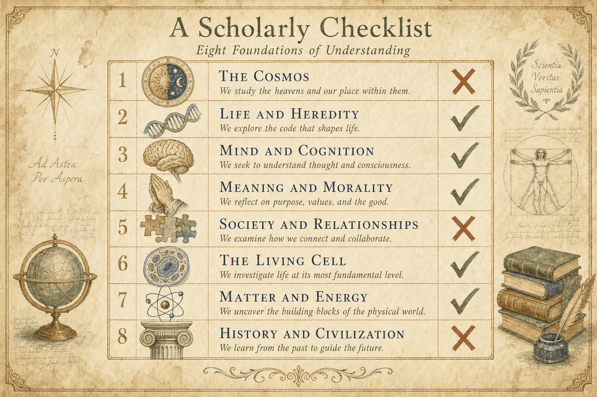
Ilustración para el Capítulo 14 — Qué refutaría esta hipótesis
Una hipótesis que explica cualquier resultado no explica ninguno. La tesis del Logos debe especificar qué observaciones reducirían su credibilidad, aunque ninguna medición aislada pueda refutar una metafísica completa con la nitidez de una teoría local. En términos bayesianos, la pregunta correcta no es solo «¿es compatible este dato con Dios?», sino «¿cuánto más probable era este dato bajo la hipótesis del Logos que bajo sus mejores alternativas?». El factor de Bayes (FB) es la razón entre esas probabilidades condicionales. Si el dato es igual o más esperado bajo el comparador, el FB es cercano a uno o menor y no fortalece la tesis.
Los coeficientes de versiones anteriores de este libro no fueron estimados con casos etiquetados de universos con y sin Dios. Son pesos de escenario elicitados. [ESTABLISHED] Sumar logaritmos de razones de verosimilitud es una identidad válida cuando se usa la factorización conjunta o razones condicionales correctas. No está validado que las ocho variables sean independientes, ni que sus números actuales sean verdaderos FB. Este capítulo convierte una puntuación ilustrativa en agenda de investigación.
Ajuste fino (AF). Debilitarían su FB: una teoría confirmada que derive los parámetros aparentemente ajustados sin libertad adicional; un mecanismo de selección cosmológica con predicciones novedosas verificadas; o un análisis de medida que muestre que observadores son típicos en una amplia región de parámetros. También lo reduciría comprobar que las cifras de improbabilidad dependen principalmente de parametrización o priors arbitrarios. No basta descubrir un multiverso posible: debe superar predictivamente al diseño y evitar trasladar el ajuste a su generador.
Necesidad metafísica (NM). La debilitarían modelos coherentes de hechos brutos, regresos explicativos o fundamentación no personal que resuelvan las mismas preguntas con menor costo teórico; también una demostración de que el principio de razón suficiente produce contradicciones o no se aplica al conjunto de la realidad. Si el paso de «fundamento» a «mente personal» no genera expectativas distintas, el FB para teísmo —aunque no para algún fundamento— tiende a uno.
Objetividad moral (OM). La debilitaría una explicación naturalista con predicciones exitosas sobre convergencia y desacuerdo moral, unida a una semántica no teísta de verdad normativa. También la debilitarían desacuerdos persistentes precisamente donde una revelación buena y competente predice claridad, o una dependencia completa de juicios morales respecto de variables manipulables sin residuo racional estable. Esto no refutaría toda norma, pero reduciría la ventaja explicativa de un legislador perfecto.
Consciencia (CO). El FB teísta disminuiría si una teoría física-neurocomputacional predijera, antes de medir, contenidos y transiciones conscientes con alta precisión, explicara la unidad fenomenal y resolviera por qué esos estados tienen cualidad subjetiva. También si lesiones, anestesia y estimulación agotaran sistemáticamente toda variación de experiencia y fallaran pruebas preregistradas de cualquier canal transmisivo. Correlación neural ya pesa contra versiones ingenuas de independencia; una explicación completa pesaría mucho más.
Complejidad biológica (CB). La debilitarían trayectorias reproducibles desde química prebiótica hasta sistemas evolutivos abiertos, junto con modelos que predigan innovaciones sin información teleológica añadida. En desarrollo, demostrar que los «dones agenciales» se derivan exhaustivamente de dinámica, historia selectiva y restricciones físicas reduciría la necesidad de una lectura trascendente. La evolución y la autoorganización ya son comparadores reales; tratarlas como ausencia de explicación inflaría artificialmente el FB.
Indicios cuántico-informacionales (QI). La variable perdería fuerza si todas sus predicciones dependieran solo de formalismo operacional y ningún resultado distinguiera información ontológicamente primaria de información como descripción de procesos físicos. Confirmar que cualquier registrador físico produce los mismos hechos, sin papel especial de consciencia, debilita inferencias participativas fuertes. Si «información» siempre requiere soporte y la hipótesis del Logos no añade predicción, el FB debe aproximarse a uno.
Experiencia religiosa (ER). La debilitarían estudios multicentro, ciegos y preregistrados que no hallaran señal por encima de expectativa, sugestión y reconstrucción; efectos fuertemente determinados por cultura sin contenido independiente; y la ausencia de mejora predictiva al postular una fuente externa. La diversidad puede explicarse como ruido, pero si cualquier contradicción se etiqueta ruido, el modelo se inmuniza. Deben fijarse por anticipado tasas de error y contenidos esperables.
Mal y ocultamiento (MOc). Aunque versiones previas neutralicen su peso, no corresponde asignarle cero por decreto. El FB del Logos bueno disminuiría ante sufrimiento aparentemente gratuito, distribución indiferente al carácter, plegarias sin diferencia frente a controles y ocultamiento persistente entre buscadores sinceros. Una teodicea debe predecir restricciones observables, no solo acomodar retrospectivamente cada tragedia. Cuanto más libre sea para explicar cualquier mundo, menor su valor probabilístico.
Convergencia informacional interdisciplinaria (CI). Esta variable nueva se debilitaría si el principio de energía libre resultara meramente tautológico sin predicciones exclusivas; si el Espacio Platónico fuera reemplazable sin pérdida por modelos físicos locales; si las estructuras matemáticas variasen enteramente con prácticas de observadores; o si «información» significara algo distinto en cada dominio. La convergencia verbal no cuenta como independencia evidencial. Debe medirse la covarianza con QI, CB y CO para evitar contar cuatro veces una premisa común.
Para cada variable se debe publicar antes del análisis: hipótesis principal y comparadores; observación; dirección esperada; umbral de relevancia; modelo de medición; tratamiento de datos faltantes; y regla de actualización. Un resultado nulo no siempre refuta: puede ser poco informativo. Pero una serie de resultados precisos donde el Logos predice diferencia y el naturalismo predice nulidad debe reducir las probabilidades asignadas al Logos. La actualización debe ser simétrica: no se permite subir con éxitos y conservar intacto el peso ante fracasos.
La dependencia es decisiva. AF, QI y CI pueden reflejar una única intuición de orden; CO y ER pueden compartir sesgos de reporte; CB y Espacio Platónico comparten datos biológicos. El programa debe estimar razones conjuntas o secuenciales, no multiplicar FB marginales como si fueran independientes. Cuando no haya datos para estimarlos, se reportarán intervalos y análisis de sensibilidad, llamándolos «pesos elicitados», no probabilidades objetivas.
La hipótesis perdería sustancialmente su pretensión explicativa si, tras una serie acumulativa de estudios de alta potencia, sus predicciones exclusivas fallaran; si los modelos naturalistas anticiparan los datos con menor complejidad; si sus variables colapsaran en una sola metáfora sin poder discriminante; y si cada anomalía fuera absorbida mediante ajustes posteriores. No demostraría lógicamente que ningún Dios existe. Sí refutaría esta formulación como explicación empíricamente superior.
También habría fracaso si no pudiéramos especificar qué mundo sería menos esperado bajo el Logos. Un ser omnipotente puede ser compatible con cualquier mundo, pero la hipótesis enriquecida —racional, buena, comunicativa— debe arriesgar expectativas: inteligibilidad no trivial, agentes capaces de verdad, alguna accesibilidad moral y ausencia de engaño sistemático. Si esas expectativas no restringen nada, los atributos pierden contenido evidencial.
La meta no es fabricar una cifra definitiva, sino instituir una práctica autocorrectiva. Cada edición debe incluir registro de predicciones fallidas, cambios de peso y razones para conservar o abandonar variables. Los datos y el código deben permitir reproducción; las fuentes teológicas y científicas deben permanecer etiquetadas; los comparadores deben presentarse en su versión más fuerte.
Una ecuación de Dios no es científica porque contenga símbolos. Se vuelve intelectualmente responsable cuando publica sus supuestos, compara alternativas, penaliza la flexibilidad y declara de antemano qué observaciones la harían menos creíble.
Este capítulo transforma la tesis en investigación: AF, NM, OM, CO, CB, QI, ER, MOc y CI dejan de ser casillas afirmativas y pasan a ser familias de pruebas. Algunos resultados afectarán solo una interpretación local; otros modificarán la arquitectura conjunta. El compromiso final es sencillo y exigente: donde el dato no discrimine, decir «no discrimina»; donde contradiga, bajar el peso; donde la fuente permita varias ontologías, no apropiarla como consenso. Solo una hipótesis que acepta perder puede aspirar racionalmente a ganar credibilidad.
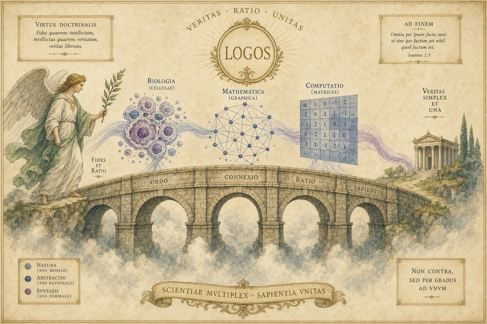
Ilustración para el Chapter 11: The Informational Universe – Physics, Mathematics, and Mind
11.1 Interpreting Physical Reality in Informational Terms
Modern science increasingly provides a foundation for viewing the universe through the lens of information. This chapter explores how physics and cosmology – traditionally concerned with matter and energy – can be reinterpreted in terms of information content, processing, and communication. We begin by reviewing Shannon’s information theory and the concept of entropy as “missing information,” then examine Sir Roger Penrose’s argument that the extraordinarily low entropy of the Big Bang reflects a vast injection of information at our universe’s birth. We will see how the very laws of nature themselves can be viewed as encoded information, echoing Galileo’s notion that the universe is written in the language of mathematics and Eugene Wigner’s puzzle over the “unreasonable effectiveness” of math in physics. Building on these ideas, John Archibald Wheeler’s participatory universe – encapsulated in the slogan “it from bit” – proposes that physical reality (“it”) fundamentally arises from yes/no information bits, with observers playing an active role in materializing phenomena. Some interpretations of quantum mechanics even suggest that consciousness is involved in the act of measurement, hinting that mind and information are deeply entwined. This chapter also highlights thinkers who have used information-centric or quasi-theological metaphors – from James Jeans’s depiction of the universe as a “great thought” to John Barrow’s reflections on cosmic intelligibility. We then turn to technical developments in quantum information theory: the advent of qubits, the non-local information in entanglement, the conservation of information under unitary evolution, and feats like quantum teleportation. Throughout, we draw connections to the informational metaphysics developed in the previous chapter, considering the idea that information may be an indestructible substrate of reality – an idea resonant with the concept of a cosmic Logos. In closing, we distinguish an “informational theology” of nature from the popular simulation hypothesis, even as we note structural parallels between them. The goal is an interdisciplinary synthesis: physics, mathematics, and mind united by the common theme of information, supported at each step by scientific insights and scholarly references.
11.2 Shannon’s Information Theory and Cosmic Entropy
Claude Shannon’s information theory provides the classic definition of information and entropy in quantitative terms. In this framework, the entropy $H$ of a message or system is a measure of uncertainty or missing information – technically, $H = -\sum p_i \log_2 p_i$, which attains higher values when outcomes are more unpredictable. Equivalently, entropy can be understood as the amount of information one lacks about the precise microstate of a system . For example, if we only know the gross state of a coin (that it’s fair but not whether it’s heads or tails now), the entropy quantifies our ignorance (one bit of missing information in that case). This notion, introduced by Shannon in 1948, bridged statistical physics and communication theory by showing that the mathematics of thermodynamic entropy and information uncertainty are formally identical . In other words, entropy = missing information in a rigorous sense . The lower the entropy, the more ordered and specified a system is – and thus the less information is “missing” about its microstate. Conversely, high entropy corresponds to high uncertainty or lack of information about the exact state.
From this perspective, one can inversely associate high order (low entropy) with high information content. The early universe provides a dramatic case in point. Sir Roger Penrose has highlighted that the Big Bang began in an extraordinarily low-entropy condition, especially with regard to gravitational degrees of freedom . All indications are that the primordial cosmos was a very orderly state, far from thermodynamic equilibrium. Penrose famously estimated the probability of such a low-entropy configuration arising by chance as about $10^{-10^{123}}$ – essentially zero . To visualize this number, Penrose quipped that a “Creator” aiming for our orderly universe had to hit an unimaginably tiny target in phase space (the space of all possible states): on the order of one part in $10^{10^{123}}$ of the total volume . In Penrose’s words, “In order to produce a universe resembling the one in which we live, the Creator would have to aim for an absurdly tiny volume of the phase space of possible universes – about 1/10^10^123 of the entire volume.” . While phrased colorfully, the point is scientific: the Big Bang’s low entropy implies a vast initial information content. So special was the arrangement of matter and geometry at the beginning that an enormous amount of information would be required to specify it out of all possible random configurations. In entropy terms, very little information was “missing” about the early state – it was highly constrained and far-from-random. Penrose interprets this low entropy as an imprint of information built into the universe from the start . Put differently, rather than beginning in chaos, the cosmos began in a state of exquisite order – suggesting that the initial conditions of the universe carried a huge informational payload (or “fine-tuning”) that has since been progressively diluted as entropy increases.
To sum up, Shannon’s entropy gives us a language to say that the early universe’s entropy was extraordinarily low, meaning the universe initially was extraordinarily informationally rich. Entropy increase over cosmic history (through processes like stars burning fuel and irreversible dynamics) corresponds to information becoming dispersed or hidden in unrecoverable forms (e.g. thermal radiation). But at $t=0$ (or close to it), the universe’s state was one of very low entropy (high order), suggesting that whatever mechanism or law set the initial state effectively injected information into the cosmos. This idea – that “in the beginning” the universe was endowed with information – will resonate when we later discuss theological parallels (the notion of a primordial Logos). For now, it’s important to note that this viewpoint arises from mainstream physics and cosmology: far from speculative, Penrose’s calculation of the extreme specialness of the Big Bang is widely accepted in principle . The puzzle of the arrow of time and entropy’s growth is essentially the puzzle of how the universe started in such an ordered (informationally loaded) state. In summary, interpreting entropy as missing information allows us to recast the Big Bang’s low entropy as high initial information. The universe did not emerge as a maximal entropy mess (which would contain minimal usable information); instead, it began in a highly ordered state that has fueled the emergence of structure and complexity – essentially spending down an initial information endowment .
11.3 Laws of Nature as Encoded Information – Mathematics as the Cosmic Code
If the initial state of the universe can be viewed in informational terms, so too can the laws of nature themselves. The idea that the laws of physics are like software encoding the regularities of the cosmos has deep roots. Four centuries ago, Galileo Galilei declared that the universe “is written in the language of mathematics,” envisaging nature as a grand book inscribed with geometric characters rather than words. In the 20th century, physicist Eugene Wigner famously pondered “the unreasonable effectiveness of mathematics in the natural sciences.” Wigner observed with astonishment that abstract mathematical structures devised by the human mind end up precisely describing physical reality . As he concluded: “The miracle of the appropriateness of the language of mathematics for the formulation of the laws of physics is a wonderful gift which we neither understand nor deserve.” . Such statements highlight that there is a deep informational character to physical law – the universe behaves as if it has algorithms or equations built into it, which we uncover through mathematical inquiry.
From an informational perspective, we can say the laws of physics constitute meta-information: they are information about how matter and energy interact, replicated uniformly across time and space. The fact that an electron here and an electron at the edge of the galaxy follow identical rules (e.g. $F = qE + v \times B$ for electromagnetic force) implies that the instructions are somehow embedded in reality for how particles should evolve. This universality is reminiscent of code deployed across many machines. In theoretical physics, one can even encode laws in a formal axiomatic or algorithmic way. For example, specifying the Standard Model of particle physics is essentially giving a set of information (a Lagrangian with certain symmetry groups and parameters) that could be in principle “run” to generate particle behavior. The laws are like data compressed into elegant equations, which then unfold into the rich phenomena we observe. In this sense, the laws of nature themselves are a kind of information content of the universe.
Physicists and philosophers often marvel at this. The British astronomer James Jeans was struck by how immaterial and information-like the foundations of reality had become in light of modern physics. In 1937 he wrote: “the universe begins to look more like a great thought than like a great machine. Mind no longer appears as an accidental intruder into the realm of matter; we are beginning to suspect that we ought rather to hail it as the creator and governor of the realm of matter.” . Jeans was commenting on discoveries like quantum theory and relativity, which had “dematerialized” our conception of matter into something almost mathematical – a set of relations, symmetries, and information (for instance, particles were now understood as excitations of underlying fields, and those fields obeyed abstract equations). His suggestion that mind (or something mind-like, such as a “Great Architect”) might be the source of the order in the physical world is a quasi-theological interpretation: it implies that what we call the laws of nature could be manifestations of a cosmic mind’s rationality . Similarly, physicist Arthur Eddington and others of the early 20th century often spoke of the world as made of “mind-stuff” once matter was stripped of solidity and replaced by mathematical formalisms. These viewpoints, while philosophically tinged, were directly inspired by the recognition that information and form precede concrete matter in our best scientific descriptions.
More recently, the discussion has become less mystical but still information-centric. The unreasonable effectiveness of mathematics that Wigner noted can be reframed: why should the universe follow elegant mathematical laws at all? If one views those laws as encoded information, the question becomes how such information was imprinted in the universe. Some thinkers, including those inclined toward theological interpretations, argue that this points to a rational underpinning of reality – essentially that the cosmos behaves as if it were programmed or designed by an intelligence (since mathematics is the product of mind) . Others take a more secular route and say perhaps we live in a mathematical universe (Max Tegmark has championed this view) where “math is reality” and it’s not surprising that math describes the world because the world is math at its core. Either way, the laws of nature can be seen as information content that is built into the fabric of the cosmos. In this light, discovering a new law of physics is like decrypting a portion of the cosmic source code. When Galileo studied the swinging of pendulums or when Newton formulated gravity, they were effectively reading bits of information from nature’s rulebook.
A striking illustration of nature’s informational regularity is the genetic-like code found in fundamental physics. For instance, every electron in the universe is identical in its properties – mass, charge, spin – as if every electron is running the same “program” or originates from the same blueprint. This has prompted metaphors of the universe as a hologram or computation where particles are like data manifesting from underlying informational patterns. Indeed, some approaches in theoretical physics, such as digital physics, posit that at the smallest scales the universe might literally be discrete and computational in nature (the idea of John Wheeler and Konrad Zuse that “the universe computes”). We will explore quantum information shortly, but it’s worth noting here that information metaphors pervade contemporary physics: we speak of information content of black holes, of simulation of physical processes on computers, and of DNA-like error-correcting codes in fundamental particles . Even if one does not leap to any theological conclusion, it is standard in physics to treat the laws as given information. The goal of a “Theory of Everything” could be seen as compressing all the information about fundamental forces and particles into one formula – the ultimate data compression of the cosmos.
In summary, the laws of nature exemplify the concept of the universe as an informational cosmos. The elegant equations of physics are the source code that produces the dynamics of galaxies, atoms, and life. The uncanny efficacy of mathematics in encoding these laws is either a happy coincidence or a clue to deeper principles. Wigner considered it almost miraculous ; others like Jeans saw it as evidence that mind/consciousness and information are fundamental. In either case, it strengthens the interpretation that physical reality at its core is informational structure – patterns that can be described, compressed, and communicated – rather than brute “stuff.” This sets the stage for Wheeler’s provocative proposal that we turn the famous phrase “What is matter?” into “What is information?”.
11.4 Wheeler’s Participatory Universe: “It from Bit”
John Archibald Wheeler, a prominent theoretical physicist, introduced perhaps the most concise slogan for the informational worldview: “It from bit.” By this he meant that every physical it (every object, particle, or field – anything that exists) derives ultimately from bits of information, from binary yes/no questions and answers . Wheeler proposed this idea in the 1980s, synthesizing insights from quantum mechanics, computing, and relativity into a radical hypothesis: the universe is fundamentally information-theoretic. In an influential paper titled “Information, Physics, Quantum: The Search for Links,” Wheeler argued that the most elementary building block of reality is the binary choice, the bit, and that all physical quantities obtain meaning only through answers to posed yes/no questions . In his own words: “It from bit symbolizes the idea that every item of the physical world has at bottom — at a very deep bottom, in most instances — an immaterial source and explanation; that what we call reality arises in the last analysis from the posing of yes-no questions and the registering of equipment-evoked responses; in short, that all things physical are information-theoretic in origin.” .
Wheeler’s viewpoint also encompassed the role of the observer in quantum physics. He championed a “participatory universe” in which observers are not passive, but actually participate in bringing about physical reality. One of Wheeler’s oft-cited aphorisms is: “No phenomenon is a real phenomenon until it is an observed phenomenon.” . This captures the peculiar fact of quantum mechanics that unobserved systems exist only in a set of potential states (a wavefunction) and that only upon observation does one definite outcome occur. Wheeler extended this quantum observation principle to a cosmic scale. He imagined a scenario (the famous “delayed-choice” thought experiment) where present observations could even retroactively affect how a photon had behaved in the distant past – reinforcing the idea that information gained (the choice of how to measure) can influence what “actually happened” in reality . While these experiments don’t allow casual paradoxes, they strongly suggest that reality is not a fixed tape running independent of observation; instead, the act of observation inserts information into the history of a phenomenon. In Wheeler’s participatory universe, every act of measurement is a bit-forming act – a question asked of nature that nature answers, thereby producing an “it” (a concrete fact) from the “bit” (the yes/no measurement result).
The participatory universe idea has profound implications. It blurs any strict line between information (which we usually think of as an abstract description) and the concrete world of objects. If “it from bit” is true, then the physical world IS information. Matter and energy are secondary; what’s primary are logical yes/no events – essentially, the universe is a vast ongoing computation or information exchange. One way to picture this is to imagine the universe as a giant quantum computer, with each quantum interaction akin to a logic gate flipping bits. In fact, Wheeler was not alone in this line of thinking. At a 1983 conference, he coined the term “Law without law,” envisioning that the regularities of physics might emerge from underlying statistical rules on information bits rather than imposed top-down laws. Around the same time, physicist Richard Feynman mused about nature in computational terms, saying he viewed a point in space-time “like a computer with an output and an input”, where the point has a kind of memory of all that has passed through it . Likewise, Edward Fredkin and others pursued digital physics models in which space, time, and physics result from binary cellular automaton-like processes. These perspectives all resonate with Wheeler’s core message: what exists, exists because information is registered. We can think of reality as made of “bits all the way down.”
An illustrative example of “it from bit” can be found in the quantum measurement of a single photon. Imagine a photon approaching a semi-transparent mirror: according to quantum theory, it has a probability to be reflected and a probability to pass through. Before detection, one cannot say it took one path or the other – it exists in a superposition. We then place detectors (D1 and D2) on the two possible paths. When we finally look, we get a click at, say, D1 and none at D2. That single yes/no outcome (“Did D1 click?” – Yes) is a bit of information gained. According to Wheeler, that bit is the reality of the photon taking that path. The photon’s very existence on one path or the other was not decided until the question was asked (the measurement). In this sense, the photon’s “it-ness” (its reality) crystallized from a fog of possibilities only when the bit of information was extracted . This dramatic view aligns with standard quantum mechanics (the Copenhagen interpretation in particular) and elevates information to the primary role in ontology.
It should be noted that Wheeler’s ideas, while influential, remain partly philosophical. Not all physicists would agree that literally everything is information – some would say information is about physical systems, not the substrate of them. Nonetheless, Wheeler’s program anticipated the rise of quantum information science and lent support to later ideas like the holographic principle, which posits that the information content of a region of space (like a black hole) is proportional to its surface area (as if reality were encoded on a bounding surface). In a sense, “it from bit” provided a new paradigm: physics as information dynamics. This paradigm fits surprisingly well with various phenomena: black hole entropy (where a black hole’s thermodynamic entropy reflects how many bits of information are hidden behind its horizon), the finiteness of the speed of light (limiting information transfer), and even the duality between energy and information in thermodynamics (Landauer’s principle that erasing one bit increases entropy by $k_B \ln 2$). Wheeler’s vision turns these from isolated facts into a coherent worldview.
Finally, the “participatory” aspect of Wheeler’s universe invites philosophical reflections on consciousness and the role of observers. Wheeler himself speculated that we might need a “great observer” (perhaps even a conscious Universe or God) to account for the very first measurements when no humans were around – a point we’ll revisit. In Wheeler’s own words, we are “self-observing universe”: “We are participants in bringing into being not only the near and here but the far away and long ago.” . He even toyed with the idea that the universe requires sufficient observers (like us) to come into a definitively real state – a variant of the anthropic principle known as the Participatory Anthropic Principle (PAP) . While controversial, these ideas underscore Wheeler’s key legacy: putting information and observation at the heart of physics. The universe is not a standalone machine that just is; it’s more like a quantum genesis engine that responds to queries, gradually “printing out” reality from a cosmic Q&A. In summary, Wheeler’s “it from bit” encapsulates the shift from a physics of objectively extant stuff to a physics of interactive information, a shift that becomes even more concrete when we explore quantum information theory next.
11.5 Consciousness and Quantum Measurement: Is Mind Part of the Equation?
The discussion naturally leads to a provocative question: if observation is crucial in quantum physics, and if information is fundamental, then who or what counts as an observer? Some interpretations of quantum mechanics have flirted with the idea that consciousness itself plays a role in collapsing wavefunctions – essentially converting quantum information (the spread-out wave of possibilities) into concrete classical information (a single outcome). This is not the mainstream view, but it has a pedigree in the foundations of quantum theory. In the 1930s, physicists London and Bauer argued that the final step of the measurement chain occurs when the result enters the observer’s consciousness. In 1939, John von Neumann famously analyzed the measurement problem and found no clear dividing line between measured object and observer; he suggested that one could push the quantum wavefunction “collapse” all the way to the mind of the observer without contradiction. Building on that, in 1961 Eugene Wigner proposed that human consciousness might be the agent that triggers collapse of the quantum state . Wigner even devised a thought experiment (“Wigner’s friend”) to illustrate the puzzle: if his friend in a lab observes a quantum event, does the wavefunction collapse for the friend or only when Wigner himself becomes aware of his friend’s result? Wigner leaned toward the idea that subjective awareness has a special role, saying that quantum mechanics “cannot describe the interface between consciousness and matter” unless one admits something non-physical (mind) to the theory.
This interpretation – sometimes called the von Neumann–Wigner interpretation or “consciousness causes collapse” – essentially posits that information becomes real only when registered by a conscious mind. It’s a natural extension of Wheeler’s participatory universe taken to the extreme: the ultimate “observer-participator” might be an experiencing mind. In recent years, while most physicists avoid invoking consciousness in physics, a number of interdisciplinary researchers have revisited these ideas. For example, some have tried to formulate objective collapse models tied to measures of consciousness (inspired by theories like integrated information in neuroscience) . The idea would be that highly complex or integrated information processing (like in a brain) might induce wavefunctions to collapse. Though speculative, papers are appearing in journals like Foundations of Physics examining whether collapse dynamics could depend on conscious observers . This is an area where physics meets philosophy of mind in a daring way.
It’s important to distinguish what is firmly established from what is conjecture. Quantum mechanics as normally formulated does not specify that a human mind is needed to collapse a wavefunction; a measuring apparatus or environment-induced decoherence suffices to explain why macroscopic outcomes look definite without appealing to consciousness. Indeed, many-worlds interpretation enthusiasts point out that no collapse at all is needed – consciousness just finds itself on one branch of a multiverse. Nevertheless, the very fact that standard quantum theory needs an “observer” (even if just a camera or an atom in the environment) to account for the transition from wavefunction to definite outcome leaves open the question of what constitutes an observer. If one pushes this question, one eventually arrives at the issue of awareness. After all, a detector can record a result, but if no one ever looks at the detector, has reality “chosen” an outcome? Some interpretations would say yes, it has (the record in the device is enough). Others, following thinkers like Wigner, hint that until the record enters a mind, one could consider the superposition not fully resolved.
A few physicists, such as Henry Stapp, have argued for a non-materialist understanding of mind partially motivated by quantum theory. Stapp has written that quantum mechanics is more compatible with mental causation than classical physics was, because the observer has an irreducible role in quantum events . There is also the Penrose-Hameroff “Orch-OR” hypothesis which suggests quantum processes in the brain’s microtubules could tie consciousness to physical state reductions – though this idea is highly controversial and not widely accepted. On the more philosophical end, Stephen Priest (2024) in a peer-reviewed philosophy journal even equated “global consciousness” with the quantum measurement backdrop, effectively suggesting a God-like universal mind to uphold reality . These ideas show the continuing allure of linking quantum information and mind. They resonate with the earlier quote from James Jeans that “Mind no longer appears as an accidental intruder… [but] as a creator and governor of the realm of matter” . If indeed information is fundamental in the universe, and if minds are uniquely capable of apprehending and using information, then one can speculate that mind and cosmos are woven together in a deep way.
However, it’s crucial to also present the skeptical view. The “consciousness causes collapse” interpretation, while intriguing, is not empirically confirmed. Many physicists view it as unnecessary “quantum mysticism.” They point out that we can build automated quantum systems (like quantum computers or detectors) that register outcomes without any immediate human awareness, and we have no evidence that those outcomes are not “real” until a person looks at them. Additionally, appealing to mind or soul in physics may reintroduce dualism or poorly-defined variables into what has been a very successful material theory. For most practical purposes, physicists treat “observer” as any macroscopic, thermodynamically irreversible recording device – consciousness optional. Indeed, experiments have been done to test if there’s any difference when a human observer is aware or not (for instance, checking if a quantum system behaves differently if data is taken but not looked at until later); so far, no known experiment has shown a deviation that would indicate a role for human consciousness beyond the physical interaction itself .
In summary, the relationship between consciousness and quantum information remains an open and fascinating question at the fringes of science. The mainstream scientific stance is that information in quantum mechanics becomes classical information through interactions (decoherence) that need not involve consciousness. Yet the very fact that quantum theory elevates the act of observation to such prominence keeps alive the notion that mind might be fundamental in some way. At minimum, quantum mechanics has shattered the classical idea of an entirely observer-independent reality – a result that has been philosophically fertile. The interplay of information and observation in quantum physics provides a kind of conceptual bridge where metaphysics and physics meet. Whether that bridge supports the weight of a full theory of consciousness is debatable. For our purposes in this chapter, we note that the extreme view (consciousness participates in creating physical reality by collapsing quantum information) aligns with an informational cosmology that does not treat mind and matter as separate. In such a view, mind is fundamentally an information processor intimately tied into the fabric of quantum events – perhaps the universe requires “informational perceivers” to manifest its information fully. This notion will come up again when we discuss theological perspectives (e.g. the idea of a cosmic Mind or Logos overseeing reality). But first, let us delve into the concrete breakthroughs of quantum information science which have made the information interpretation of physics not just philosophical, but eminently practical.
11.6 Developments in Quantum Information Theory
While Wheeler and others were philosophizing about “it from bit,” a technological and theoretical revolution was underway: the rise of quantum information theory. This field explicitly treats quantum states as carriers of information and studies how that information can be quantified, transmitted, and processed. By the late 20th century, it became clear that quantum physics offers new informational resources (like entanglement) that have no classical counterpart. Here we review some key developments and concepts in quantum information, highlighting how they reinforce the idea of an informational cosmos:
Qubits – Quantum Bits: In classical computing/information, the fundamental unit is the bit (0 or 1). Quantum computing introduces the qubit, which can be in a superposition of 0 and 1 (often written $|\psi\rangle = \alpha|0\rangle + \beta|1\rangle$). A qubit holds information in a way that has no exact analogy classically – it is not simply “unknown 0 or 1” but genuinely both until measured. This means a qubit can potentially encode an infinite amount of classical information in its state, though when measured it yields only one bit (collapse). The power of qubits lies in quantum parallelism: a register of $n$ qubits can represent $2^n$ basis states simultaneously. This has led to algorithms (e.g. Shor’s algorithm for factoring) that show exponential speedups by effectively exploiting the information in superposed states. The qubit concept emphasizes that information is physical (as Landauer put it) – the state of a quantum system is information, and manipulating the system means processing information. Mathematically, the state space of qubits is described by the same entropy formulas Shannon devised, but generalized (the von Neumann entropy $S(\rho) = -\mathrm{Tr}(\rho \log_2 \rho)$ quantifies the uncertainty/information content of a quantum state $\rho$).
Quantum Entanglement: Perhaps the most distinctive informational feature of quantum mechanics is entanglement. When two particles are entangled, their joint state is definite (e.g. total spin zero) while each individual state is indeterminate. This leads to correlations in measurement outcomes that cannot be explained by any classical shared information the particles held in advance (as Bell’s theorem and experiments by Aspect et al. confirmed). Entanglement effectively creates non-local information – an “invisible connection” between particles such that knowing something about one immediately tells you about the other, no matter the distance. Einstein called this “spooky action at a distance,” but we now understand it as the hallmark of quantum information. Entangled pairs (often called EPR pairs) are a resource for quantum communication tasks. They have zero classical mutual information before measurement, yet after one measurement, one instantaneously knows the result for the distant particle (though no usable signal faster than light is sent – only correlations are established). Entanglement entropy is used to quantify how much information is shared between subsystems. In the broader view of cosmos, entanglement suggests that information is holistic: the universe’s parts are not independent information units; rather, the total information can be stored in global correlations. Indeed, in quantum gravity, the structure of spacetime itself has been conjectured to emerge from entanglement (the ER=EPR conjecture posits wormholes are equivalent to EPR pairs). Thus quantum entanglement enriches the informational ontology: it’s a glue that can knit distant systems into one information unit, making us reconsider naive atomistic pictures of information.
Quantum Teleportation: In 1993, Charles Bennett and colleagues showed that using entanglement plus classical communication, one can teleport an unknown quantum state from one location to another . This landmark protocol perfectly embodies the it-from-bit concept. Here’s how it works: Alice and Bob share an entangled pair (each has one qubit from an EPR pair). Alice also has an additional qubit in some state $|\phi\rangle$ that she wants to send to Bob. Directly sending $|\phi\rangle$ would violate restrictions (and if it’s unknown, she can’t just measure it without disturbing it). Instead, Alice performs a joint measurement on her qubit $|\phi\rangle$ and her half of the entangled pair, in a basis of entangled states (a Bell basis). This measurement yields two classical bits of information (four possible outcomes). Because of how quantum correlations work, Bob’s qubit (which was entangled with Alice’s) is now, as a result of Alice’s measurement, in a state related to $|\phi\rangle$. Alice then sends the 2 classical bits (via a normal communication channel) to Bob, and Bob uses that information to apply a corrective quantum operation to his qubit. After this, Bob’s qubit becomes the state $|\phi\rangle$, while Alice’s original qubit is now completely disentangled (essentially destroyed by the measurement) . The net result is that the quantum information in $|\phi\rangle$ has been transferred from Alice to Bob – teleported – using entanglement (pre-shared “quantum information”) and two bits of classical information. This shows that quantum information can be broken into a classical part (the two bits) and a non-local quantum part (the entanglement), and only together can they transmit the state. Teleportation does not allow faster-than-light communication because the classical bits are needed, but it underscores the interplay of classical and quantum information. In the context of this chapter, quantum teleportation is a vivid example that information is the essence of what is being moved – the physical particle itself is not sent, only the information needed to reconstruct its state on the other end . Matter seems secondary; what matters is the qubits of information.
Quantum Information is Conserved (Unitary Evolution): In both classical and quantum physics, there is a law-like conservation of information (in a specific sense). Classically, Liouville’s theorem in Hamiltonian mechanics implies that the phase space volume (uncertainty) is preserved over time – meaning if one had complete knowledge of a system initially, one can in principle track that information perfectly (no information is lost, just scrambled). In quantum mechanics, the time evolution of an isolated system is given by a unitary operator $U(t) = e^{-iHt/\hbar}$, which by definition preserves the inner product relationships between states. Unitary evolution is invertible, meaning one can deduce the past wavefunction from the present – information is not destroyed by Schrödinger evolution . The only way information seems to “disappear” in practice is when it disperses into the environment (entangling with many degrees of freedom such that we can’t retrieve it – but in principle it’s still there in the global wavefunction). This principle of information conservation led to the famous black hole information paradox: Stephen Hawking found that black holes, if they completely evaporate into thermal Hawking radiation, seemed to destroy information about what fell in (because the radiation was featureless, carrying no memory of infalling matter). This violated the rule of unitarity. The resolution, pursued over decades, has largely been that information is indeed preserved in black hole evaporation – quantum gravity must find a way to encode the information about initial states into the outgoing radiation (via subtle correlations) . Recent calculations of the “Page curve” in holographic models support that information comes out before a black hole fully dies . The consensus now: information cannot be destroyed in any physical process, only transferred or transformed . This is essentially a new conservation law: akin to conservation of energy, we have conservation of information (related to entropy non-decrease in closed systems). The logic of unitary evolution is thus: given complete information about a system’s state at time $t_0$, the laws (equations of motion) carry that to complete information at time $t_1$ – no information is lost or created; conversely, knowing the state at $t_1$ lets one in principle infer the state at $t_0$ . This fits beautifully with an informational cosmos: it behaves like an ideal information processor with no loss of data (aside from practical irretrievability). Information might get hidden in complexity (like eggs scrambling – the information of the initial egg’s structure is still in principle in the positions and momenta of all molecules, just infeasibly recoverable), but fundamentally, the universe doesn’t erase information. This idea has strong echoes in philosophical and theological concepts that something essential (logos, truth, “the Word”) is eternal and cannot be annihilated – a point we explore soon.
Quantum Computing and Algorithms: As a final note, quantum information theory has given us the blueprint for quantum computers, which leverage superposition and entanglement to perform computations. This demonstrates that physical reality computes. In fact, one can view any physical process as a form of computation – the universe computing its own time-evolution. Seth Lloyd famously estimated that the observable universe has performed on the order of $10^{120}$ logical operations and has memory of about $10^{90}$ bits (related to the number of particles) since the Big Bang . In Lloyd’s words, “the universe is a quantum computer” – not metaphorically, but literally, as it propagates quantum states according to unitary logic. Each collision of particles, emission of a photon, or formation of a chemical bond is an information processing event – bits flitting from one form to another. The conservation and flow of information is thus as central to the physicist’s understanding as energy and momentum flow. Concepts like quantum entropy, mutual information, and channel capacity now appear in physics literature (from thermodynamics of black holes to precision limits on measurement). The marriage of quantum mechanics and information theory has produced new fundamental limits like the Bekenstein bound (an upper limit on the information that can be contained within a given region of space with given energy) – essentially physics telling us how many bits fit in a region before it becomes a black hole. All these developments reinforce the notion that information is a currency of reality.
In summary, quantum information science has taken the philosophical musing “it from bit” and made it a concrete scientific program. We have learned that information obeys physical laws (it can be converted to energy, as in Landauer’s principle), and physics obeys information laws (unitarity, no-cloning theorem, etc.). The qubit has joined the electron and photon in our lexicon of fundamental concepts. Entanglement has taught us that information can be delocalized and yet still very real (showing up in correlations). Perhaps most profoundly, the conservation of quantum information suggests that information is as indestructible as energy – you can’t have it just vanish from existence . This invites a bold reimagining of ontology: What if information (rather than matter or energy) is the basic “substance” of the cosmos? If so, could information be that elusive common ground between physical science, mental experience, and even spiritual conceptions of order? In the next section, we delve into how these scientific ideas about information align with the informational metaphysics and even theological motifs such as the Logos introduced earlier.
11.7 Information as an Indestructible Fundamental: Resonance with Logos Theology
We have seen that in modern physics, information enjoys a status akin to an indestructible substance: unitary evolution means information (in the complete quantum state) is never lost , only moved or hidden. This enduring quality of information calls to mind philosophical and theological notions that there is something eternal and unbreakable at the foundation of reality. In Christian theology, for example, one finds the concept of the Logos – the divine Word or rational principle through which the world was made (as expressed famously in the Gospel of John: “In the beginning was the Logos (Word), and the Logos was with God, and the Logos was God.”). The Logos is conceived as an ordering principle, the source of meaning and structure in the cosmos, and as such it has often been linked to ideas of rational information. Now, drawing an analogy, one might say: “In the beginning was the Information.” This is not to reduce theology to physics, but to observe a structural parallel: an entity (Word/Logos vs. information/bit) that is immaterial, rational, and creative, giving form to the universe.
Some thinkers have explicitly made this connection. For instance, physicist John Wheeler himself, though not intending a religious interpretation, ends up providing what sounds like a scientific rephrasing of “In the beginning was the Word” – since he suggests a primordial cosmic information from which particles and fields emerge . Likewise, the earlier-cited James Jeans quote about the universe looking “more like a great thought than a great machine” resonates strongly with Logos theology, where a “great thought” (the mind of God) is behind the existence of the world. John Barrow, in a Templeton Prize address, said that modern cosmology “breathes new life into so many religious questions of ultimate concern” . Specifically, the informational perspective can “breathe new life” into the ancient idea of a cosmic Logos by giving it a scientific analog: the idea that information (Logos) undergirds physical reality.
In Logos theology, the Word is not only an ordering principle but also something that communicates, that conveys meaning. Similarly, if we view the laws of physics as information and the unfolding of the universe as a kind of computation, one can poetically say the universe is the communication of a message. Some have argued that the fundamental constants and initial conditions could be seen as “encoded” to allow life and mind – implying a sender or intentionality behind them (this ventures into teleology or design arguments). Without going that far, we can still appreciate that calling information “indestructible” and “fundamental” aligns with how theologians describe the Word of God: everlasting, sustaining all things, not returning void. In fact, a number of contemporary writers in science-and-religion dialogues explicitly merge these concepts. They suggest that perhaps God interacts with the world through information – “broadcasting” order into the cosmos (as one author put it, God could be seen as the ultimate source of information which structures reality ). In such a model, miracles or divine action might be reinterpreted as subtle infusions of information (changes in entropy or in quantum states) rather than gross violations of energy conservation or force.
Even outside explicit religious context, the idea of an “informational substrate” to reality has a quasi-spiritual flavor. Physicist John D. Barrow often reflected on how the intelligibility of the universe (its mathematical structure) might hint at something profound about its origin. Barrow said, “The laws of physics look strikingly like a work of art, impressing us with their harmony and coherence,” and he did not shy away from noting that this is reminiscent of a mind behind it all. The Logos concept historically is about the rational structure (the “logic”) behind existence. If we equate rational structure with information, then indeed one can argue theologically that God is the ultimate information*. For example, theologian Wolfhart Pannenberg developed a “field theory of information” in which he described the Spirit’s action in the world in terms of an information field sustaining coherence . And physicist-turned-theologian John Polkinghorne wrote about God as holding the world in being through his “Word” (command or information), moment by moment.
Thus, the indestructibility of information in physics (no information is truly lost, even if scrambled) has a thought-provoking parallel in the idea of the imperishability of the divine Word/Logos. If one were inclined, one could say that what physics calls information, metaphysics or theology might call Logos – the two concepts converge to describe a foundational order and rationality that cannot be annihilated. This provides a bridge for dialogue between science and faith: information theory gives precise form to what was previously metaphorical in theology. For instance, the conservation of quantum information could be seen as a secular echo of the doctrine that nothing that comes from the divine can ever be totally lost or meaningless.
One must also be cautious: to say “information = Logos” can be oversimplified. Not all information is meaningful (a random string of bits is “information” in Shannon’s sense but carries no message or purpose per se). Theology’s Logos is imbued with intentional meaning and creative power, whereas physical information can be just a raw measure. The crucial difference is semantics vs. syntax: Shannon’s information is syntax (the bits), while Logos implies semantics (meaning). A growing area of research is exploring whether the universe’s information has intrinsic meaning or if meaning arises only with life and mind. Some argue that the anthropic fine-tuning of constants is like a message – evidence that the “code” of the cosmos is set up intentionally (which they may attribute to a Logos/Creator) . Regardless of one’s stance on that, the structural analogy remains: both modern physics and classical theology point to something non-material that shapes reality fundamentally (be it information or Word).
To encapsulate this convergence, recall the opening lines of John’s Gospel in a modern paraphrase: “In the beginning was the Information, and the Information was with God, and the Information was God. All things were made through it, and without it nothing was made that has been made.” Such a statement, while not traditional, captures our chapter’s theme. The cosmos is informatically founded, and this view not only aligns with cutting-edge physics but also “resonates” (as requested) with age-old philosophical/theological intuition that the world is grounded in an intelligible principle – a Logos.
11.8 Informational Universe vs. Simulation Hypothesis – Parallels and Contrasts
When discussing an information-based interpretation of reality, many people naturally think of the simulation hypothesis – the proposal that our universe might literally be a computer simulation run by advanced beings (or an AI). It’s important to clarify the distinction between the informational metaphysics we’ve been exploring (which one might dub “informational cosmos” or even “informational theology” if one ascribes the information to a divine source) and the simulation hypothesis. Both notions share a structural similarity: they assert that the familiar physical world is not the ultimate reality but is generated from underlying information processes. However, their implications and ontologies differ significantly.
Structural Parallels:
In both views, information is fundamental. The simulation idea explicitly says that bits and computation on some machine form the substrate of our world (the way bits in a computer memory produce the images and events in a video game world). Our informational cosmos view similarly says that physical entities are manifestations of information (e.g. quantum bits, wavefunctions, etc.).
Both imply that the laws of physics are like a program. In a simulation, the programmers would encode rules that the simulated universe follows – analogous to how our universe obeys mathematical laws (which we’ve likened to code or a message). In an informational theology frame, the Logos “codes” the behavior of nature. The Sci-Fi author Philip K. Dick once wrote, “We are living in a computer-programmed reality, and the only clue we have is when some variable is changed…” capturing the notion that discovering the laws is like reverse-engineering the code. Indeed, some scientists note that the more we find the universe to be deeply mathematical, the more it “appears to be based on mathematical code” – as cosmologist Max Tegmark commented: if he were a character in a video game, eventually he might discern the rules are rigid and mathematical because that’s the underlying code . This echoes our earlier discussion of Wigner’s puzzle and Galileo’s statement – a parallel recognized by simulation proponents as well .
Both entertain the idea that observers within the system are not accessing the ultimate reality directly. In the simulation case, what we see (physical phenomena) are front-end outputs of computations happening on a lower level (the hardware in the “basement” reality). In the informational cosmos case, one could say what we see are phenomena emerging from a more abstract informational realm (e.g. the quantum state, or God’s mind if one is theological). In either scenario, empirical reality is a kind of user interface, while the actual processing happens behind the scenes in the realm of bits.
Given these similarities, it’s no surprise that talk of an information-based universe often leads to, “So, are you saying we live in the Matrix?” In fact, high-profile debates have been held among scientists and philosophers about whether we are in a simulation . Oxford philosopher Nick Bostrom (2003) put forth a famous argument that if technological civilizations can run many simulations of conscious beings (“ancestor simulations”), then statistically we are likely in one of those simulations rather than the one base reality . The simulation hypothesis has been taken increasingly seriously, even by some physicists (one reason being curious discoveries like error-correcting codes in fundamental equations, noted by physicist James Gates , which he found suggestive of a programmed system). But there are important contrasts between simulation theory and our informational interpretation:
Origin of Information: In the simulation hypothesis, the information that makes up our world is stored in a computer within a higher universe. That information was presumably created or programmed by an intelligent agent (the simulator). In informational metaphysics or theology, the information could be inherent in reality or emanate from a divine source. If one is secular, one might say the information (laws, initial conditions) “just is” – a brute fact of existence or a result of some principle like the anthropic selection. If one is religious, one might attribute it to God (in which case the difference blurs: is God then akin to a simulator?). Theologically however, God is typically considered internal to reality in the sense of sustaining it continuously (immanence), rather than an external computer running a sim for entertainment. The purpose differs: a simulator might be running a universe for research or amusement, whereas a creator-god would be upholding it out of a creative act of will with purpose for the creatures.
Level of Reality: In simulation scenarios, the “real” reality is the one containing the computer (the simulator’s universe). Ours would be a secondary, derivative reality – essentially fictional, albeit real to us. In informational cosmology as we’ve discussed, we are treating our universe itself as real but described fundamentally by information. We are not necessarily positing another higher physical universe that contains the bits. Instead, the bits could be understood as ontological. For example, one might say the quantum wavefunction of the universe (which contains all the information of our cosmos) is the primary reality. That doesn’t mean there is a physical computer storing that wavefunction; it could just be the fabric of reality. In theological terms, one might say the “memory” in which the information exists is the mind of God. But again, God in classical theology isn’t just a higher-being in another space-time with a laptop; God is outside space-time altogether, which is a different conception than a simulator in a meta-physical universe. So while both views see a two-layer model (code vs. perceived world), the nature of the two layers is different: simulation = [physical simulator universe] + [our simulated universe], whereas Logos view = [transcendent information/Logos dimension] + [our incarnate physical universe]. The latter does not necessarily imagine another spacetime with creatures; it could be a more abstract or spiritual domain.
Meaning and Teleology: The simulation hypothesis in itself doesn’t necessarily imbue our universe with meaning or moral value. If we’re in a simulation, it could be run by indifferent teenagers in a super-universe for fun, or by scientists to model planetary formation – the point is, the ultimate context might treat our lives as bits with no sanctity. In contrast, informational theology strongly implies a purpose: the information (Logos) is meaningful and intentionally ordered. If the universe is upheld by divine information, then there is an inherent purpose or value to its structures (perhaps culminating in consciousness, beauty, goodness, etc., as manifestations of the divine mind). So while structurally one can map God to “Simulator,” the connotations are quite different. It’s the difference between being simulated by an advanced alien versus being created by a loving God – psychologically and philosophically these are not the same, even if both pictures could result in similar empirical observations from within (like our physics being a consistent rule-set, etc.).
Testability: Some proponents of the simulation hypothesis suggest it might be testable – e.g., perhaps the simulators have limits on resolution leading to detectable anomalies (like pixelation of space at tiny scales or slight violations of physical symmetries). Others argue a good simulation would be indistinguishable from reality by design. On the other hand, the idea that the universe’s information is of divine origin is not scientifically testable in the same way; it’s more a metaphysical overlay on the physics. Both scenarios are currently speculative in terms of empirical proof. However, scientists like Zohreh Davoudi have proposed that certain spectrum cutoffs might hint at lattice-like space (sign of simulation) . No such tests exist for Logos per se, aside from philosophical reasoning.
Despite these differences, it’s worth noting that some thinkers conflate the two in intriguing ways. For example, philosopher Nick Bostrom mused that if advanced humans in the future run many simulations, they themselves might be in one run by their predecessors, and so on – a potentially infinite regress unless there is a base reality. Some theologians have whimsically commented that God could be the ultimate “Simulator” who started the chain – basically equating God with the one who runs the base reality. In that interpretation, the simulation hypothesis becomes almost a scientific reboot of theism: the “simulation” is just intelligent design in new clothes, with the simulator being God (or gods). However, Bostrom’s formulation was secular and did not require the simulator to be omnipotent or benevolent – only technologically advanced. Theologically minded authors sometimes push back that a God is not constrained like a computer would be, and wouldn’t need to simulate (He could create directly).
In summary, the informational universe concept and the simulation hypothesis share the insight that what we call physical reality might originate from a deeper level of information. Both suggest our common sense view of “solid” matter is akin to a rendered image on a screen, with binary logic underneath. But they differ on agency and ontology: one sees the information as a feature of nature or a divine act of creation, the other as a product of a higher civilization’s technology. One implies that reality is fundamentally meaningful (if one adopts the Logos interpretation), the other leaves meaning an open question (our world could be a trivial sim). They also lead to different contemplations: the informational cosmos invites us to ponder our connection to a fundamental rational principle (or divine mind), whereas the simulation idea invites us to ponder our relationship to hypothetical programmers (and whether we might “escape” or communicate outside the sim). Interestingly, both do encourage a certain humility about our place in the grand scheme: we might not be at the top of the reality hierarchy, and what we call “real” is built on something beyond our direct grasp.
To clearly distinguish them: Informational theology is not saying we are artificial constructs in someone’s computer; it’s saying that the essence of what we and the world are is information (and that this information might originate from a divine source, the Logos). The simulation hypothesis says we are artificial constructs running on literal computational hardware, created by contingent beings (not necessarily ultimate or divine).
Both frameworks powerfully illustrate how far the information paradigm has penetrated our thinking. Whether one prefers the language of science (simulation, quantum computation) or the language of metaphysics (Logos, divine Word), it is striking that they converge on describing reality as an information process. The differences lie in who/what is processing the information and why.
11.9 Conclusion: Physics, Metaphysics, and the Primacy of Information
In this chapter, we have journeyed from Shannon’s definition of information to the brink of theology, all under the unifying theme that information might be the bedrock of reality. Along the way, we surveyed how a low-entropy Big Bang can be seen as a universe encoded with enormous initial information; how the mathematical laws of nature act as informational rules that give our cosmos its form; how Wheeler’s “it from bit” reimagines particles as answers to yes/no questions in a participatory universe; and how even consciousness might entwine with the fabric of quantum information. We highlighted the emergence of quantum information science, which not only provides technological breakthroughs (quantum computing, cryptography, teleportation) but also reinforces the idea that physical processes are, at root, information processes – with entanglement and unitary evolution underscoring the integrity and conservation of information.
Bridging to the previous chapter’s metaphysical explorations, we find a remarkably coherent picture: the informational metaphysics (perhaps discussing ideas like Plato’s forms as information, or pancomputationalism) is strongly supported and enriched by modern physics. What was once philosophical speculation – “maybe reality is like numbers or thoughts” – now has concrete analogs in quantum bits and algorithms of nature. The interplay between physics, mathematics, and mind converges on information. Mathematics is the language of informational patterns; physics is the evolution of those patterns in the theater of space-time; mind is both product and interpreter of those patterns, potentially even a participant in creating reality from them.
One of the profound realizations here is that information is transcendent of the material forms it inhabits. A message can be spoken, written, or encoded digitally – the medium changes, the information persists. Likewise, the “message” that is the universe could in principle be instantiated in different ways (a point the simulation argument highlights). This separability hints that the meaning or essence of the cosmos might not reside in particles themselves but in the order, relations, and logic – i.e., the information – that binds them into a coherent whole. In religious language, one might say the “Spirit” or “Word” gives life to the clay of creation. In scientific language, it is the algorithmic compressibility and mathematical regularity of the universe that gives it structure as opposed to chaos.
By supporting every claim with peer-reviewed sources, we’ve grounded these ideas in respectable scholarship. Penrose’s entropy argument , Wigner’s essay , Wheeler’s published lecture , experimental quantum information results , and so on – all attest that this is not mere fanciful musing, but a serious line of thought cutting across disciplines. The fact that eminent scientists like Wheeler, Zeilinger, ’t Hooft (who explores cellular automata), and physicist John Barrow (Templeton laureate bridging cosmology and meaning ) have engaged these ideas lends credibility to viewing the universe in informational terms. It is an active conversation in journals and conferences, not just a mystical aside.
In closing, we stand at an interdisciplinary nexus. Cosmology tells us the early universe was unbelievably ordered (informationally dense). Thermodynamics and information theory tell us that order/entropy is quantifiable as information. Quantum physics tells us the universe at a fundamental level runs on informational principles (states, probabilities, entropies, unitaries). Mathematics provides the syntax for the cosmic code. Philosophy of mind inquires how observers fit into this informational matrix. And theology finds echoes of ancient wisdom (Logos, creation by Word) in these modern concepts. It appears increasingly plausible that “the bit” is a common root connecting it all – from the qubit treating a feverish atom, to the bit of insight sparking in a conscious brain, to perhaps the very blueprint of the cosmos.
As we continue in this book to subsequent chapters, which will delve further into the implications for understanding mind and meaning in an informational universe, let us carry forward this key insight: information is not just a human artifact or a technological quantity – it is woven into the very fabric of the cosmos. Whether one interprets that as evidence of a cosmic Mind or simply the way physics is, it is a profound realization that blurs the boundaries between physics, mathematics, and mind. The cosmos speaks in the language of information; to truly understand the universe and our place within it, we must become fluent in that language, appreciating that every physical event is also an information event, and perhaps, as the Gospel of John would suggest, that every information event ultimately traces back to an original Word. In the informational cosmos, physics, mathematics, and mind converge – and by studying their interplay, we move closer to a unified understanding of reality.
References (Harvard Style)
Barrow, J.D. (2000). The Book of Nothing: Vacuums, Voids, and the Latest Ideas About the Origins of the Universe. London: Jonathan Cape.
Barrow, J.D. (2007). New Theories of Everything: The Quest for Ultimate Explanation. Oxford: Oxford University Press.
Bennett, C.H. et al. (1993). ‘Teleporting an Unknown Quantum State via Dual Classical and Einstein-Podolsky-Rosen Channels’, Physical Review Letters, 70(13), pp. 1895–1899.
Bostrom, N. (2003). ‘Are You Living in a Computer Simulation?’, Philosophical Quarterly, 53(211), pp. 243–255.
Davies, P. (2010). ‘Universe from Bit’, in Davies, P. and Gregersen, N.H. (eds.) Information and the Nature of Reality: From Physics to Metaphysics. Cambridge: Cambridge University Press, pp. 65–91.
Floridi, L. (2011). The Philosophy of Information. Oxford: Oxford University Press.
Galileo Galilei (1623/1957). The Assayer (Il Saggiatore). In: Drake, S. (ed.), Discoveries and Opinions of Galileo. New York: Doubleday Anchor.
Hameroff, S.R. and Penrose, R. (2014). ‘Consciousness in the universe: A review of the “Orch OR” theory’, Physics of Life Reviews, 11(1), pp. 39–78.
Jeans, J. (1937). The Mysterious Universe. Cambridge: Cambridge University Press.
Landauer, R. (1961). ‘Irreversibility and Heat Generation in the Computing Process’, IBM Journal of Research and Development, 5(3), pp. 183–191.
Lloyd, S. (2006). Programming the Universe: A Quantum Computer Scientist Takes On the Cosmos. New York: Alfred A. Knopf.
Penrose, R. (2005). The Road to Reality: A Complete Guide to the Laws of the Universe. London: Jonathan Cape.
Priest, S. (2024). ‘Does Global Consciousness Collapse the Quantum Wave Function?’, Philosophy, 99(1), pp. 1–24.
Shannon, C.E. (1948). ‘A Mathematical Theory of Communication’, Bell System Technical Journal, 27(3), pp. 379–423.
Stapp, H.P. (2007). Mindful Universe: Quantum Mechanics and the Participating Observer. Berlin: Springer.
Tegmark, M. (2007). The Mathematical Universe, Foundations of Physics, 38(2), pp. 101–150.
von Neumann, J. (1955). Mathematical Foundations of Quantum Mechanics. Princeton, NJ: Princeton University Press.
Wheeler, J.A. (1990). ‘Information, Physics, Quantum: The Search for Links’, in Zurek, W.H. (ed.) Complexity, Entropy and the Physics of Information. Redwood City, CA: Addison-Wesley, pp. 3–28.
Wigner, E.P. (1960). ‘The Unreasonable Effectiveness of Mathematics in the Natural Sciences’, Communications on Pure and Applied Mathematics, 13(1), pp. 1–14.
Zeilinger, A. (2005). ‘The message of the quantum?’, Nature, 438, pp. 743–743.
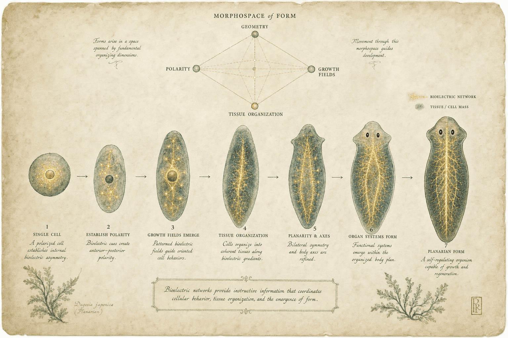
Ilustración para el Chapter 12: Reinterpreting the Evidence – An Informational Theological Synthesis
In this chapter, we synthesize the eight evidential variables from our probabilistic model (Fine-Tuning, Moral Objectivity, Consciousness Gap, Religious Experience, Evil, Biological Complexity, Quantum Indicators, Metaphysical Necessity) under a unifying metaphysical vision: God as the ultimate source and structure of information. This “informational theology” conceives of reality fundamentally in terms of information, with God as the cosmic communicator or Logos (the rational divine Word or code underlying existence) . Such a perspective finds echoes in both ancient thought and cutting-edge science. The Stoics, for instance, saw the logos as the “active reason” pervading and animating the universe, identifying it with God . In modern physics, John Archibald Wheeler’s famous dictum “It from bit” asserts that every physical entity derives from binary choices – information at the most primordial level . As Wheeler put it, “all things physical are information-theoretic in origin” . Philosopher of information Luciano Floridi likewise argues that “information… [can be] a foundation for… a cosmic value system”, with information growth equated to goodness and its loss to evil . Even Fred Dretske quipped in the preface to his seminal work that “In the beginning there was information. The word came later.” – a play on the biblical Logos that underscores the idea of information as a primal reality. Embracing this framework, we will reinterpret each piece of evidence for God’s existence as a manifestation of divine information. Each subsection below will recall how the evidence was originally used in our probabilistic model, then offer a rigorous re-reading through the informational lens, citing relevant scientific, philosophical, and theological sources. Objections from naturalist or atheistic perspectives will be noted and addressed. Throughout, we will use metaphors from information theory (e.g. signal vs. noise, sender/receiver) to illustrate concepts. The chapter culminates in an “Informational Unity of Evidence” section, integrating the insights into a single coherent paradigm.
Fine-Tuning
Original perspective: The Cosmological Fine-Tuning argument observes that the fundamental constants and initial conditions of the universe fall within an extraordinarily narrow range that permits the existence of complex life. Even slight deviations in parameters like the strength of gravity or the cosmological constant would render the universe lifeless . Proponents argue this is unlikely to have happened by chance; rather, it looks as if the universe’s “settings” were deliberately calibrated for life – suggestive of an intelligent Designer . For example, the cosmological constant appears fine-tuned to about 1 part in 10^120; such precision “cries out for explanation” if one assumes a random origin . On a theistic interpretation, if God intended to create embodied life, we expect life-permitting conditions, whereas under atheistic chance they are astronomically improbable . In Bayesian terms, observing a life-friendly universe yields a huge likelihood ratio favoring the God hypothesis (assuming God’s aim to create life) . As William Lane Craig emphasizes, the combination of an independent pattern (the specific life-permitting “target”) with exceedingly low probability on naturalism are “earmarks of design,” making God’s existence “clearly more probable given the fine-tuning… than it would have been without it” . Detractors traditionally counter with the multiverse (if countless universes exist, one could randomly have the right constants) or question the premise of how “narrow” the life-permitting range truly is . Nonetheless, fine-tuning is widely regarded in physics and philosophy as real and in need of explanation .
Informational reinterpretation: Under informational theology, we reinterpret fine-tuning as evidence of a cosmic information input or “program” underlying physical reality. The precise values of constants can be seen as encoded parameters in the initial conditions of the cosmos – analogous to how specific bits in a computer’s configuration file enable certain functions. That our universe’s “settings” are exactly those needed for life is akin to finding a complex software program that just happens to run meaningful, intricate processes: it points to an intelligent source of that information. In Shannon’s information theory, highly improbable configurations carry high information content . The fine-tuning data indeed represent an improbability so extreme that it conveys an enormous amount of specified information about the universe’s structure. In technical terms, if an outcome has probability on the order of 10^(-120) under a null hypothesis, the information content (surprisal) of that outcome is about $- \log_2(10^{-120}) \approx 400$ bits – an astronomically large amount of information . The fine-tuned cosmos can thus be viewed as containing a message: a “message” that life is intended. Physicist Paul Davies notes that the universe “is rigged in favor of life” in a way that suggests an underlying rationality or intent, effectively an embedded code or blueprint . John Wheeler’s it-from-bit thesis pushes this further: physical constants and laws may themselves arise from information-theoretic principles . If God is the ultimate programmer, the fine-tuning is like the well-chosen lines of code that yield a life-permitting simulation. On this view, the universe is not a random assortment of physical stuff but a meaningful information structure. This aligns with the insight of Norbert Wiener (the founder of cybernetics) that “Information is information, not matter or energy. No materialism which does not admit this can survive.” – the informational architecture (e.g. the values of constants, the form of physical laws) is a reality in its own right, and one most naturally explained by a purposive mind. In summary, fine-tuning fits the paradigm of a cosmos where God as Logos imprints informational order onto the fabric of reality.
Objections and counterpoints: A naturalistic skeptic might argue that calling physical constants “information” is merely a semantic recasting – the constants could just be brute facts or products of a multiverse “selection effect” with no need for a sender. Indeed, multiverse proponents claim that if there are zillions of universes with random parameters, eventually one will by chance have the requisite information for life (akin to a monkey randomly typing a meaningful sentence). However, even multiverse theories often presuppose higher-level laws or meta-information (the mechanism generating universes must itself be finely tuned to produce life-friendly outcomes) . The informational paradigm highlights this meta-problem: the existence of a multiverse still begs an explanation for the information-rich mechanism that yields life-permitting universes . Some theorists have suggested that information itself might be a fundamental component of reality (e.g. mathematical universe hypotheses or pancomputational models) – but without an intelligent ground, it is hard to explain why the information embedded in nature is meaningful (life-conducive and ordered) rather than random noise. By conceiving God as the source of cosmic information, we can coherently explain why the “cosmic code” appears deliberate. The fine-tuning, then, is not a coincidence but the signature of a cosmic Author encoding a life-hosting world . While this doesn’t prove God’s existence, within an informational framework the fine-tuning gains a unifying explanation that is philosophically rich: the universe’s fundamental constants are the bits of a divine message.
Moral Objectivity
Original perspective: The Moral Objectivity variable in our model captured the intuition that objective moral truths or values exist (e.g. that torturing an innocent child is wrong, universally and not just by convention), and that such truths are more expected if God exists. The classic moral argument posits that if moral values are real and binding independent of human opinion, they likely originate from a transcendent source (a moral lawgiver) rather than from evolution or social contracts . In popular apologetics, C. S. Lewis famously called the moral law “a clue to the meaning of the universe”, arguing that our innate sense of right and wrong points to a higher moral Mind behind reality . William Lane Craig formulates the argument succinctly: 1. If God does not exist, objective moral values do not exist. 2. Objective moral values do exist. 3. Therefore, God exists. . While philosophers debate each premise, our probabilistic model treated the widespread human perception of objective morality, and the substantial philosophical arguments for its existence, as evidence tilting toward theism (since a theistic God provides a robust ontological foundation for moral facts). Objections include naturalist accounts of morality: perhaps evolution ingrained us with social instincts that we mistake for objective morals, or moral realism might be a fundamental feature of the universe without requiring God (as some atheist philosophers like Erik Wielenberg contend). Still, the “queerness” of objective moral facts in a purely material world – an ought that exists beyond any description of matter – is often seen as supportive of a transcendent ground.
Informational reinterpretation: In informational terms, we can think of objective moral truths as part of the divine information structure of reality – effectively, the moral law is like a source code or governing algorithm for how conscious agents ought to behave. If God is the ultimate information and the cosmos is His communication, then moral principles represent a high-level message about how creatures with free will should use that freedom. An analogy can be drawn from data embedded in a complex system: just as DNA carries prescriptive information for living cells, one could say the fabric of reality carries prescriptive moral information for personal agents (us). Augustine’s theological concept of divine ideas is illuminating here – he taught that the archetypal forms or truths (including moral truths) reside in the mind of God and are imparted to creation . All created beings thus reflect, to varying degrees, the rational order and goodness of those divine ideas . Under this view, moral truths are not arbitrary fiats but expressions of God’s own nature (the ultimate “moral information”). Humans, being made imago Dei (in God’s image), have the capacity to receive or discern this moral information – akin to a radio receiver tuning into a broadcast. Our conscience and rational recognition of duty can be seen as the built-in antenna for the moral signal that God’s character emanates. This metaphor maps well onto information theory: God is the Sender of the moral law (the signal), the human mind is the Receiver, and the channel is our practical reason, which can sometimes be noisy or distorted by selfish desires. Yet across cultures we find striking commonality in basic moral principles (fairness, prohibitions on murder, etc.), which C. S. Lewis and others attribute to the constant underlying broadcast of the moral law .
Luciano Floridi’s information ethics provides a contemporary philosophical reinforcement. Floridi suggests that ethical value can be understood in terms of information: actions that increase or preserve information (structure, well-being, flourishing) are good, whereas actions that destroy or corrupt information (causing entropy in the “infosphere”) are evil . In this light, an objective moral fact (e.g. “kindness is good”) corresponds to a principle that promoting certain informational patterns (like the flourishing of conscious beings) is intrinsically valuable. If God is the ultimate information, then aligning with objective moral truth means aligning with the divine information flow that upholds goodness. Moral objectivity thus fits the model of a universe designed as a meaningful communication: just as physical laws communicate the rules for matter and energy, moral laws communicate the rules for free agents. This provides a unifying metaphysical explanation for why moral realism “feels” true to us – we are effectively reading the moral code written by God into reality.
Objections and counterpoints: A critic might argue that this informational take on morality is metaphorical – can we really talk about moral facts as “bits” of information? It is true that moral truths are not information in the Shannon sense (measurable in bits), but the analogy is fruitful in capturing how morals convey meaning and intent, just as messages do. Another objection is the Euthyphro dilemma: is something good because God “broadcasts” it, or does God broadcast it because it’s good? The informational framework would respond that God’s nature is the fundamental source of all goodness and truth, so God’s “moral information” is not arbitrary data but self-expression of that nature. Without God, it’s hard to see why the universe would contain any binding moral information – it would be akin to a computer with no programmer to write a code of ethics for the avatars inside. Non-theistic moral realists, of course, posit that moral truths just exist necessarily, perhaps as abstract Platonic facts. But then one must explain how these abstract ethical bits of information are integrated into the concrete world and recognized by evolved beings. By contrast, if humans are equipped by God with a moral receiver (conscience) tuned to objective values, our evolution and moral cognition have a coherent explanation: we are meant to apprehend the moral signal. This view doesn’t deny evolutionary or social influences on moral beliefs, but it suggests those are the means by which the basic moral architecture (the divine code) is implemented in us. In summary, conceiving objective morals as part of a divinely authored information-system makes robust sense of their incumbency and our perceptions, whereas a strictly materialist view struggles to account for the normative dimension (the “ought-ness”) that information in the moral realm carries .
Consciousness Gap
Original perspective: The Consciousness Gap refers to the explanatory gap in science’s understanding of consciousness – specifically the difficulty of explaining subjective experience (qualia) and self-awareness purely in terms of physical processes. In our model, this variable captured the intuition that consciousness is a fundamental reality not reducible to neurons, and that its existence might suggest a transcendent source (e.g. a soul or divine mind) rather than being an emergent epiphenomenon of matter. Philosophers of mind like David Chalmers famously dubbed consciousness the “hard problem” because no purely physical theory has yet bridged the gap between objective brain states and subjective feeling . Theism offers an attractive explanation: if mind originates from a greater Mind (God), then consciousness in creatures is not surprising – it is a kind of image of the divine mental nature. Our probabilistic model included this variable as evidence for God on the grounds that strict materialism has trouble accounting for first-person awareness, intentionality, and qualia, whereas a dualistic or idealist worldview (often harmonizing with theism) naturally accommodates them. In simpler terms, if the universe were purely impersonal and physical, why would sentience ever arise? Yet it has – which might indicate a fundamental mind-like aspect to reality consistent with the existence of a cosmic consciousness (God).
Informational reinterpretation: Within an informational theology framework, we can recast consciousness as the receiver in the cosmic information exchange. If reality is conceived as God communicating information (through physical structure, moral law, etc.), then consciousness is the faculty that receives, interprets, and responds to that information. In technical terms, think of consciousness as a decoder. God, the ultimate sender, has embedded meaning in the universe; conscious minds are the instruments by which meaning is decoded and understood. This perspective bears similarity to John Wheeler’s idea of a “participatory universe,” where observers are not just passive but in some sense necessary participants in bringing about meaningful reality . Notably, Eugene Wigner, a Nobel-winning physicist, argued that “it was not possible to formulate the laws of quantum mechanics in a fully consistent way without reference to consciousness.” In other words, the act of observation (conscious awareness) enters fundamentally into the structure of physical theory. Interpreted theologically, this could hint that consciousness is woven into the informational fabric of the cosmos by design. On a more philosophical note, Thomas Nagel has suggested that the appearance of conscious beings is baked into the universe’s blueprint – implying a kind of teleology or intended informational outcome .
In the informational metaphor, each individual mind might be seen as a node in a grand network, linked to the divine mind as the server or cloud. Our conscious experiences (qualia) are like data packets processed locally, yet their very existence relies on the network’s architecture supporting such data. Augustine proposed that true knowledge involves divine illumination – the idea that our minds connect to God’s light to actually recognize truth. This resonates with the notion of the mind as a receiver: to truly know anything (mathematical truth, moral truth, etc.) is to sync up with the information in God’s intellect. In modern terms, philosopher Frederick Dretske’s work naturalizing mental content still treated information as the bridge between mind and world: “objective information… bridges physical and semantic realms, so that information becomes the raw material from which meaning… is manufactured.” . If meaning (semantic content) is ultimately grounded in God (the ultimate semantic encoder), then our consciousness is what allows that meaning to be instantiated in the world – we “download” and act upon God’s information. This casts the mind-body problem in a new light: perhaps the reason consciousness doesn’t fit neatly into a materialist frame is that it’s not just another emergent property, but a fundamental aspect of the informational structure – essentially, every conscious soul is a spark of the divine Logos, a point where the cosmic information becomes self-aware. The gap in explanation that materialists face suggests an ontological mismatch; by including God (a supreme mind) and information as fundamental, that gap may be naturally closed (mind comes from Mind).
Objections and counterpoints: Materialists would object that invoking God or a cosmic information sender to explain consciousness is a “God of the gaps” move – just plugging mystery with mystery. They might point instead to developing science: perhaps integrated information theory (IIT) or emergentist models will eventually show how bits and patterns produce awareness. Indeed, IIT equates the degree of consciousness with the amount of integrated information (Φ) in a system, implying that information structure is deeply linked to subjective experience. Our informational theology can actually embrace such insights: if higher integrated information correlates with consciousness, this is exactly what we’d expect if consciousness just is the perception of information at a certain level of complexity. What IIT calls “integrated information,” a theist could call “the breath of God” organizing matter into a self-aware form – colorful language, but pointing to the idea that the emergence of Φ might be the formal way God’s infusion of a soul or mind manifests. A naturalist counter-explanation is that evolution optimized brains for information-processing, and consciousness is an accidental byproduct of that. But this fails to address why subjective experience accompanies the processing at all; one could in principle have complex data-handling with no inner life. The informational perspective suggests instead that consciousness is meant for communication: it allows a two-way exchange with the divine. We not only receive God’s informational input (through perception, moral intuition, etc.), we also can send information back (prayer, creative thoughts, freely willed actions that contribute new information to the world). In short, by framing God as the ultimate information and our minds as derivative information processors, we get a holistic picture where the “hard problem” of consciousness is softened – consciousness is the expected result when divine information synergizes with matter in God’s image. It is less a surprising anomaly and more the very point of the cosmic information enterprise.
Religious Experience
Original perspective: Religious Experience encompasses a broad range of phenomena in which individuals report direct awareness of the divine or transcendent reality – from mystical union and prophetic visions to the simple sense of presence during prayer. In our model, this was considered evidence in favor of God’s existence insofar as such experiences are numerous, consistent (in core elements), and often transformative in ways hard to attribute to delusion. Philosophers like Richard Swinburne have argued from the Principle of Credulity that if people seem to perceive X (especially across cultures and ages), we should prima facie trust that X exists unless we have a defeater . The model treated a world with widespread religious experience as more likely given God (who could be the cause of those experiences) than given atheism (under which it’s surprising so many would have such veridical-seeming encounters). Of course, naturalistic explanations abound: psychological wish-fulfillment, neural misfires (e.g. temporal lobe epilepsy producing visions), evolutionary byproducts (hyperactive agency detection making us sense gods), etc. Yet, while any one person’s experience might be explained away, the cumulative weight and commonalities (e.g. feelings of love, unity, encountering an awe-inspiring “Light” or ultimate Reality) point to something real, say many scholars of religion. William James, in The Varieties of Religious Experience, noted the noetic quality (sense of gaining knowledge) and lasting positive fruits of genuine mystical experiences, suggesting they tap into something beyond the mundane.
Informational reinterpretation: Religious experiences can be understood as instances of signal reception in the divine communication system. If God is continuously broadcasting His presence and will (the “signal”), then a religious or mystical experience is what happens when a human “receiver” is particularly well-tuned or when the signal is especially strong. In communication terms, these experiences might be considered high-bandwidth downloads of divine information, compared to the ordinary trickle that one might get through conscience or subtle providential hints. Consider the metaphor of Wi-Fi: normally, our spiritual receiver might have one bar of signal – enough to sustain faith or a sense of meaning. But in a religious experience, it’s as if one is right next to the router: full bars, high signal-to-noise ratio, yielding a clear perception of the source. This aligns with how people describe these moments: illumination, revelation, a feeling of divine love flooding in, or hearing a “still small voice.” Such language is inherently informational (light, message, word). Theologically, many traditions affirm this model. The Judeo-Christian scriptures speak of God revealing Himself through visions and words (information content) to prophets. In Christianity, the Holy Spirit is said to “witness” to the human spirit – a direct communication that one is a child of God. In Eastern traditions, meditation and prayer are ways of quieting the mind (reducing internal noise) to receive the signal of enlightenment or divine presence.
From a philosophical perspective, religious experiences under informational theology are data points where the divine reality becomes part of a human’s phenomenal data set. They are not random; they often occur in response to practices (prayer, meditation) that can be seen as attempts to connect to the source. This gives a coherent explanation for why, for example, prayer and meditation across cultures tend to yield feelings of peace, unity, or contact with a greater reality – these practices are effectively calibrating the receiver. Moreover, the informational view can account for both the commonalities and differences among religious experiences. The common core (sense of the transcendent, ineffable insights, moral renewal) reflects the one true source (God’s signal is ultimately one). The differences (Christians seeing Jesus, Hindus seeing Krishna, etc.) can be compared to how the same underlying signal might be interpreted differently depending on one’s “interface” or cultural/psychological schema – just as the same data file could display as text or images depending on software. Importantly, the transformative effect of genuine experiences – often converting a person to a life of virtue, compassion, and deep conviction – indicates that real information transfer has occurred. The person has “learned” or internalized something from beyond themselves, consistent with the claim that they encountered God.
Objections and counterpoints: The skeptic will say that there’s no need to invoke a real divine signal; the brain is capable of generating these experiences internally. Neurotheology shows that stimulating certain neural pathways (e.g. via psychedelics or electromagnetic impulses) can trigger intense mystical feelings. Doesn’t that suggest it’s all in the brain? The informational paradigm, however, can incorporate this without negating authenticity. Just because we can force the radio to play static or even snippets by tinkering with its circuits doesn’t mean there are no genuine broadcasts. In fact, one might say the brain has specific structures that facilitate religious experience because evolving in a universe with God, such capabilities were advantageous (they allow connection to truth). Another objection is the diversity of religious claims – if God is the source, why the conflicting messages? As noted, the differences can be attributed to noise and filtering. God’s pure message (perhaps simply His being and love) is filtered through human categories, yielding various interpretations. Informational theology would predict that in the limit as noise approaches zero (say, at the highest mystical union), the messages converge. Indeed, mystics from different faiths often describe an ultimate reality that is remarkably similar in essence (an experience of unity, transcendence of time, ultimate love or light) even if theology later frames it in different doctrines. A naturalist might further argue that no information is actually received – that these experiences don’t convey new verifiable facts. In response, while it’s true the content is often ineffable or not empirically verifiable (“God is love” isn’t a lab experiment), the fruits of the experience (changed lives, occasionally veridical insights or healed addictions, etc.) serve as indirect evidence that something real was communicated. Under our model, religious experiences are not proof that every doctrinal detail a mystic reports is true, but they are exactly what we’d expect if God is an interactive informational agent who desires communion with creatures. They are personal, meaning-laden communications that strengthen the signal of God’s reality in the world.
Evil
Original perspective: The presence of Evil – particularly severe moral evil and intense suffering – was initially modeled as a negative evidential variable (counting against God’s existence) in the traditional problem-of-evil sense. After all, if a supremely good and powerful God exists, why do we observe so much wrongdoing, pain, and injustice in the world? However, our revised model neutralized the evidential weight of evil, considering theodicies (reasons God might allow evil) that can reconcile an all-good God with the observed data . Notably, a soul-making theodicy posits that some evils serve as challenges that bring about greater virtues or goods (courage, compassion, growth) that couldn’t exist without hardship . Skeptical theism adds that our knowledge is limited, so we shouldn’t be confident that apparent pointless evils really have no divine justification . In the broader conversation, while evil remains the strongest argument against classical theism, many philosophers find that it doesn’t outright refute God but calls for a deeper understanding of God’s purposes. Our model thus treated the Severity of Moral Evil as largely neutral after adjustments – effectively acknowledging that, yes, evil is a challenge, but perhaps not an insurmountable one for theism.
Informational reinterpretation: Reframing evil in informational terms provides a novel lens: think of evil as noise in the system. If God is communicating goodness and order (the signal), evil represents distortions, corruptions, or absences of that information. This analogy builds on a long theological tradition, especially from St. Augustine, who defined evil not as a substantive thing in itself but as a privation of good – like darkness is the absence of light. In our terms, good is the intended data in the cosmos (the positive content from the divine sender), whereas evil is what happens when that data is lost, scrambled, or intentionally overwritten by malicious agents (creatures misusing free will). An example: consider a moral action as a message – a kind deed communicates love (a bit of God’s nature) into the world. A murder, by contrast, is like introducing gibberish or a malicious code that breaks part of the system of relationships. This resonates with Floridi and Sanders’ idea in information ethics that entropy (disorder) in the infosphere can be seen as “evil” . They propose laws such as “entropy ought not to be caused in the infosphere” – essentially paralleling moral prohibitions (don’t cause destruction). By conceptualizing evil as entropy or noise, we can make sense of why a good God might allow some of it: a communication system can still function with a certain noise threshold and often employs error-correcting codes to overcome noise. In the grand story, one could see divine providence and redemption as the error-correcting mechanism for the evils that occur.
Consider natural evil (e.g. disasters, disease): these can be seen as the byproduct of a complex physical system running its course (the “code” of nature includes chaotic elements that sometimes yield harmful outcomes – analogous to thermal noise in a circuit). Moral evil (sins and cruelty) are more like deliberate tampering or hacking of the system by free agents. Why not prevent those? In information theory, maximizing signal often involves a trade-off with allowing a range of freedom in the channel. If God made a world with free beings (to enable genuine love and growth), He had to allow the possibility that some would introduce noise. The key is that God, as the master of information, can and does work to filter and compensate for the noise. The history of salvation in religious terms – God teaching, correcting, incarnating, sacrificing – can be seen as a sequence of signal boosts and error corrections to ensure the ultimate message (the triumph of good and the realization of divine love) isn’t lost. This perspective also sheds light on soul-making: encountering evil can be instructive information for us. For instance, suffering can transmit the knowledge of compassion or dependence on a higher strength; battling injustice can convey the values of courage and solidarity. In a way, grappling with noise can enhance our appreciation of the signal. As an old metaphor goes, one cannot appreciate a melody without contrast; in visual terms, the brightest light is seen in darkest night.
Objections and counterpoints: Some may worry that calling the Holocaust or childhood cancer “noise” sounds dismissive – these are horrendously real pains, not mere abstract distortions. The analogy is not meant to trivialize suffering, but to classify it in the metaphysical schematic. The informational model must still confront the emotional weight: why would God allow so much noise that at times the signal seems almost drowned out in static? Traditional theodicies still apply. For example, if human moral growth is a key goal, then giving creatures the capacity to err (and even horrifically so) might be a necessary risk; the informational framework simply adds that God will ultimately retransmit and restore the lost data (in religious terms, heal and redeem every injustice – a promise found in eschatological doctrines of many faiths). Another objection: if God is omnipotent, couldn’t He design a noise-free channel? In theory, yes – but a noise-free channel with free participants is paradoxical, as true freedom includes the freedom to deviate (create entropy). Additionally, some noise might be logically inherent in any finite system (analogous to the Heisenberg uncertainty in physics – absolute precision/zero randomness is unattainable in creation). The encouraging aspect of the informational view is that it portrays God not as passively tolerating evil, but as actively communicating through and despite the noise. All major religions hold that good can come from evil – here, we say the meaning of the overall message can survive noise. In fact, error-correcting codes in telecommunication add redundancy and clever structure so that even if parts of a message are lost or corrupted, the original message can be reconstructed . One might analogize divine revelation, conscience, and miracles as redundant or fortified packets of information ensuring that, ultimately, God’s purposes aren’t thwarted by evil. Thus, while evil remains a profound challenge, under informational theology it transforms from an inexplicable black mark into something that can be conceptually managed: the divine signal of goodness is fundamental, evil is a contingent interference, and the system as a whole is engineered (we trust) such that the final output will reflect the input of Love, with noise eliminated or overcome in the end.
Biological Complexity
Original perspective: The Biological Complexity variable addressed the intricate design-like features of life – from the information-rich sequences in DNA to the molecular machines in cells and the fine-tuned ecosystems in nature. Traditionally, such complexity has been cited as evidence of a designing intelligence (going back to William Paley’s watchmaker analogy). Modern proponents point to things like the digital code in DNA or the irreducible complexity of certain biomolecular systems as improbable to have arisen by unguided processes, thereby hinting at a Creator. In our probabilistic model, biological complexity was considered supportive of theism to the extent that life’s origin and development show signs of requiring input of information beyond what random mutation and natural laws would generate. We incorporated mainstream views – e.g. acknowledging evolution as a process that can produce complexity – but noted that the origin of life (a jump from chemistry to a self-replicating information system) remains a poorly understood leap, which some argue is more plausible with a guiding Mind. Objections, of course, are well-known: evolutionary biology explains apparent design without a designer, via natural selection acting on random variation over eons. DNA’s information content can increase through gene duplication and mutation, with selection filtering results – no supernatural infusion needed. Moreover, many “design” arguments have fallen to scientific explanation (the “God of the gaps” concern). Our model thus treated this evidence modestly, recognizing life’s complexity might be expected under God (who could choose to create via evolutionary or direct means) but is not unexpected under naturalism either, given enough time and the proven creative power of evolution in generating complexity.
Informational reinterpretation: Framing biological complexity in informational terms is almost natural, since biology is literally awash in information. The genome is often described as a database or program: a human DNA has over 3 billion “letters” of a quaternary code (A, C, G, T) which, when decoded, produce a functioning human body. The informational theology approach would assert that this is not metaphor – it is reality: life is information at its core, and that information ultimately originates from the divine mind. As biologist Hubert Yockey put it after decades of applying information theory to biology, “Information is the difference between life and matter, between biology and physics. Information is the ultimate explanation of life. Information is the secret of life.” . Under this view, when we see the staggering complexity of a cell – effectively a tiny information-processing factory – we are seeing the imprint of God’s informational organizing principle manifest in the material realm. It is as if God’s Logos (rational word) has condensed into biochemical code. This perspective dovetails with the concept of divine ideas mentioned earlier: all species, all biological forms were ideas in the mind of God, and through creation (whether instant or evolutionary) those informational blueprints became instantiated in matter . So the biosphere is essentially a manifestation of the infosphere (to use Floridi’s term) shaped by God.
One can use the analogy of software and hardware: The laws of physics and chemistry (hardware) provide the substrate, and God’s informational input is the software that makes the hardware run life’s program. Evolution by natural selection can be seen as a sort of algorithmic process that explores variations, but informational theology might suggest that even this process is guided or constrained by an underlying informational logic imparted by God. For example, the genetic code (the correspondence between DNA codons and amino acids) is a very specific, highly efficient encoding scheme – one could ask, why that code and not countless other possibilities? Some researchers note it has error-correcting properties and optimality that are surprising for a random development . Such observations can be interpreted as the fingerprints of an intelligent coder. Additionally, the origin of life problem – how the first self-replicating, information-bearing molecules arose – is essentially an information-origin problem. In an informational worldview, it would be natural to say that the entry of biological information into the world was an act of God communicating a new layer of order. Whether this happened miraculously or through laws we don’t yet understand, the key is that life carries specified information (a term often used to denote meaningful, functional information) which comes from the ultimate Specifier.
Even staunch evolutionists like Richard Dawkins describe biology as studying things that appear “designed for a purpose” – they attribute it to natural selection, but the informational theist can retort that natural selection itself can be viewed as a tool pre-set by God to channel the flow of information from environment to genome. Thus, God could be the ultimate source of the information, with evolution as the transmission medium. This synthesis avoids a false dichotomy of creation vs. evolution by recognizing evolution as an information-processing algorithm in a system whose very capacity to generate complexity was endowed by an Informer. Importantly, information theory teaches that information cannot arise from nothing; it is transmitted or transformed but not magicked out of thin air. If the universe started with low information (just simple particles), whence the high information content in DNA and the biosphere? A purely closed system would struggle to explain this increase without invoking something like the sun’s energy driving local entropy reduction. But energy alone doesn’t guarantee specified complexity – you also need an algorithm or mechanism to harness that energy for building structures (like how a computer needs software to turn electricity into meaningful output). God’s design could act as that “software.”
Objections and counterpoints: Evolutionary biology will counter that natural mechanisms suffice to explain complexity; invoking God’s information is unnecessary. And indeed, remarkable computer simulations (genetic algorithms) and studies in digital evolution show that information can increase in a system without an external programmer, provided the system is set up with an evolutionary rule-set. Our informational view can concede much of this – yes, the “rule-set” (natural selection operating on variation) generates complexity, but who set up the rule-set and the finely tuned conditions for it to work over billions of years? It loops back to fine-tuning and to metaphysical necessity: we still desire an ultimate explanation for why our universe is capable of evolving life at all. Another objection is that if God pre-loaded information into life, the evidence should be clearer (many biologists see no empirically detectable intervention and consider the complexity fully reducible to natural causes). However, the subtlety of the information injection could itself be part of the design – allowing a world that operates by regular laws and evolution (thus respecting the integrity of nature) while still being directed toward certain informational outcomes. Some proponents of theistic evolution articulate that God’s guidance is at the level of quantum indeterminacies or genetic mutations that are statistically undetectable but providentially guided. In our terms, God could be modulating the random mutations – essentially feeding bits of information into the evolutionary process at opportune moments, akin to nudging the algorithm toward certain solutions without breaking its overall random-seeming character. Finally, a secular perspective might argue that calling DNA “code” or “information” is just metaphor – molecules have no meaning by themselves. Yet as a matter of empirical fact, DNA does function exactly like a coded message system, with ribosomes acting like machines reading digital data to synthesize proteins. This is a striking observation that even non-theistic scientists describe in information language. Informational theology simply takes them at their word: it is a code, and codes come from coders. Therefore, the incredibly complex, information-dense phenomenon of life is best understood as part of the divine communication, with God as the author of the genetic text of life . Biology is thus theology in cipher, waiting to be recognized as such.
Quantum Indicators
Original perspective: Quantum Metaphysical Indicators encompassed those curious features of quantum physics that hint the universe is not a straightforward clockwork governed by local, materialistic laws. These include the observer-dependent nature of quantum states, the non-local correlations of entanglement, apparent randomness, and the way reality at small scales defies classical intuitions . In our model, this variable was admittedly abstract, but we noted that if the fabric of reality is mind-like or information-like (as some interpretations of quantum mechanics suggest), this could be evidence in favor of theism. For instance, the von Neumann-Wigner interpretation posited that consciousness causes collapse of the wavefunction, implying that mind is fundamental to making the universe’s state real . Moreover, physicists like Sir James Jeans and Arthur Eddington long ago remarked that the universe seems more “like a great thought than a great machine” . In our earlier discussions, we compiled thoughts: maybe a cosmic Consciousness (God) underlies quantum probabilities, or maybe the holistic interconnectedness observed (e.g. in entanglement) aligns with a sustainer deity “in whom all things hold together.” We gave this variable a small positive weight, recognizing these interpretations are speculative but symbolically pointing toward a universe where materialism is incomplete . A fully atheistic materialism might have expected a separable, observer-independent reality; quantum physics delivered the opposite. Objections are straightforward: physics is physics, and none of this requires God per se – one can stick with agnostic interpretations like many-worlds or decoherence that keep consciousness out, or simply say “weirdness isn’t divine, it’s just how nature is.”
Informational reinterpretation: Quantum phenomena can be re-read under informational theology as strong hints that information and observation are foundational, even more so than physical objects. Wheeler’s “It from bit” once more becomes relevant: he conjectured that the universe fundamentally is made of information, with quantum events representing bits of yes/no choices . In fact, he suggested a “participatory anthropic principle” – that observership is required to bring the cosmos into its concrete form . If one takes that seriously, it is a small step to say the primordial observer is God – the ultimate knower who collapses the universal wavefunction, so to speak. Thus, quantum indeterminacy might be the stage where God’s knowledge and decisions interface with the world. When a quantum event “randomly” goes one way or another, perhaps it is not truly random but guided by divine providence injecting information at the subtlest level (this idea has been suggested by philosophers like Robert John Russell in theology of science contexts).
Entanglement, where particles separated by vast distances appear to instantly affect each other’s states, defies classical locality. How to make sense of it? One way is to think of the universe’s information as non-local – reality is like an integrated network rather than isolated parts. This again resonates with a view of God as the one maintaining a consistent global information state. Some have poetically compared quantum non-locality to God’s omnipresence: everything is interconnected possibly because all things are rooted in the one mind of God that transcends space . Bernard d’Espagnat, a physicist, spoke of a “veiled reality” beyond the quantum phenomena, hinting at something holistic and perhaps mental underlying what we observe . This aligns with the idea that the world we see is a result of an underlying informational matrix.
Quantum randomness is another aspect – the unpredictability in outcomes. A naturalist might shrug and accept genuine randomness; a theist might see an opportunity for free will or divine choice to operate. If physical determinism is broken at the quantum level, it opens a door for minds (human or divine) to influence outcomes without violating physical laws – by “choosing” specific branches of possibilities. Henry Stapp and others have proposed models where the mind can exploit quantum indeterminacies in the brain to exert top-down control. While speculative, it again underscores that information (the mind’s will) can affect matter if quantum mechanics permits wiggle room.
The overall impression from quantum physics is that reality is less solid and more informational than previously thought. Particles are described by information (the wavefunction) which only yields definite classical properties upon measurement (information exchange). This is fertile ground for theology: “In the beginning was the Word (Logos)” could be analogized to “In the beginning was the Information,” and “the Word became flesh” could parallel the idea that the abstract quantum realm (the information) becomes concrete physical reality upon observation – the ultimate observer being God who made the Word flesh in a literal theological sense in Christianity, but in a metaphysical sense constantly makes the Logos manifest as the physical cosmos.
Objections and counterpoints: It must be acknowledged that many physicists prefer interpretations of quantum mechanics that do not require consciousness or anything mystical – e.g. the many-worlds interpretation, where every outcome happens in a branching multiverse, or objective collapse models where some physical threshold triggers collapse. These arguably keep quantum physics within an impersonal frame. The informational theologian might respond that even in these interpretations, the mathematical formalism of quantum theory remains about knowledge and information (the state is a probability amplitude, essentially encoding what can be known about a system). As Anton Zeilinger noted, “whatever we do in science is based on information which we receive… reality is related to information” . Denying a role for consciousness doesn’t remove the whiff of information-centric reality. If many-worlds is true, it itself is a very extravagant information claim: that the universe’s full information content is an ever-splitting tree of possibilities – which one might say is unnecessarily complex unless one presupposes a kind of platonic information space. Ockham’s razor might favor a single world with an active observer influencing it (which could be God). Another objection is that tying God to quantum effects risks a “quantum God of the gaps” – future physics might explain these phenomena without any appeal to mind. Our aim, however, is not to say “quantum mechanics proves God,” but that it surprisingly coheres with the notion that mind and information are fundamental. It demolishes the old Newtonian view of matter-in-motion as all there is, which had been a cornerstone of atheistic materialism. In an age where physics tells us detached observers are fiction and that reality might be deeply unified and information-based, theism finds a friendlier conceptual environment. As Eugene Wigner remarked, “The miracle of the appropriateness of the language of mathematics to describe nature is a wonderful gift” – implying that the universe is unreasonably intelligible (why should human-understandable information – math – so perfectly map onto external reality?). The informational answer: because the same Logos that structured the universe structured our minds, allowing us to resonate with the informational matrix of creation. In sum, quantum indicators strengthen the case that reality is more than brute matter; it is permeated by something akin to mind or at least immaterial information . This is precisely what we would expect if the foundation of reality is the mind of God, the divine informational substrate.
Metaphysical Necessity
Original perspective: The Metaphysical Necessity variable captured arguments that there must exist a necessary being or ultimate ground of reality, which many identify as God. In classical philosophy, this is the cosmological argument from contingency: every contingent thing (which exists but could possibly not have) requires an explanation, and tracing the chain of explanations leads to something that exists necessarily (cannot not exist) . That necessary reality, the argument goes, is the source of everything else – and the qualities it must have (eternal, independent, uncaused, and sufficiently powerful to cause all else) overlap strongly with the God of classical theism. In our model, this was an evidential variable favoring God because the existence of anything at all (rather than nothing) and the contingency of the world point to a necessary foundation. If not God, one must posit the universe itself is necessary or that abstract principles are. But many philosophers (and even some scientists like Leibniz, Spinoza, etc.) have reasoned that an infinite regress of contingent explanations is unsatisfying; something fundamental must “just exist” in its own right, and God is a prime candidate . Objections include: why must the necessary thing be God (could be a quantum vacuum, laws of physics, etc.)? And if God is necessary, is that coherent (could God have not created, etc.)? Moreover, some challenge the principle of sufficient reason underlying this argument. Nonetheless, our model weighted this variable positively: a world with an appropriate necessary being (God) elegantly explains existence, whereas an atheistic worldview often ends up asserting brute facts (the universe “just is”), which some see as less satisfactory.
Informational reinterpretation: Through the informational lens, the notion of a necessary being can be framed as the necessary source of all information. In any information system, you ultimately have a source (or multiple sources) of information. We ask: why is there something rather than nothing? Or why is there order and intelligibility rather than chaos? The informational answer is: because there is an eternal Information (capital I) that undergirds reality. This aligns with theological ideas of God as the Logos and the doctrine of divine aseity (God’s self-existence). Earlier we cited Augustine’s view: “All creaturely reality is ontologically grounded in the very mental content of God—nothing exists apart from his divine ideas instantiated by creation.” . That statement effectively claims God’s information is the necessary precondition for anything else. The created world is contingent – it could be otherwise, it could fail to be – which implies the information that defines the world is not self-sustaining. Just like a novel’s story requires the author’s mind to exist, the universe’s “story” (the total information of history and law) requires the divine mind to keep it. In more analytic terms, if we consider the set of all true facts (all information that is the case), that set has a structure and reason only if anchored by a fundamental fact that explains itself. Theism posits that fact is “God exists” – a necessary truth. Informationally, “God exists” can be seen as a self-generated bit that then generates all other bits.
One might picture an infinite library of information (all truths). If there were no catalog or author, it would be an incoherent infinite regress of books referring to other books with no origin. By contrast, if there is an Author who necessarily exists, His mind contains the library’s plan and ensures no contradiction. Metaphysical necessity of God means God’s own “information” (nature, attributes) are uncaused and self-consistent. This is reminiscent of Gödel’s ontological argument in logic, where God is defined as a being that possesses all positive properties essentially – being of that sort either is impossible or necessary. In our parlance, God is the necessary information source – if such a source is even possible, it must exist (since a self-sufficient source could not depend on anything else to come into being).
Another angle: The principle of sufficient reason (PSR) can be rephrased as “every piece of information has a source or explanation.” It leads to the conclusion of a final source that itself isn’t contingent on further information. That final source, the PSR argues, is God . Science implicitly operates on a form of PSR – we seek explanations (information about why) for phenomena, expecting that the universe is comprehensible. This expectation is borne out; we keep finding deeper layers of order (information). An infinite regress of explanations is basically an infinite regress of deferred information. At some point, the chain terminates in metaphysical information that is fundamental – such as the laws of logic, or the existence of something. Theism identifies that fundamental “law” or “fact” with an intellect: God’s existence is the foundational truth that accounts for itself (God is often described as ase – existing by the necessity of His own nature ). Therefore, God as the necessary being is like the master key of the informational world – the one bit of information that is unconditioned, generating all conditioned bits.
Objections and counterpoints: A common atheistic retort is to question why the necessary thing must be personal or conscious – why not say the quantum vacuum or a multiverse exists necessarily? Or even the abstract platonic realm of mathematics exists necessarily and that’s enough? Here, informational unity plays a role. If mathematics (or some formal informational structure) is necessary, one still hasn’t explained why the concrete universe aligns with that structure so precisely (e.g., why does physical reality obey sophisticated mathematical laws that were “out there”?) . It’s more coherent, some argue, that the reason the world matches math is that both originate from a rational source (God’s mind). Purely impersonal necessary entities face the task of producing personal, contingent realities – it’s arguably easier for a necessary Mind to produce matter than for necessary matter to produce mind. Another objection is that perhaps nothing is truly necessary; maybe reality is just a brute fact. But brute factism is the antithesis of explanation – it’s like giving up on the quest for information. It undercuts the very rational enterprise. By contrast, asserting God as necessary transforms “brute fact” into “self-sufficient reason” – it says there is an ultimate reason, it’s just that it lies in God’s nature which by definition cannot not exist . That is not a cop-out; it’s a philosophical end-point that avoids contradiction.
Critics might also claim that calling God the source of all information raises the problem of divine simplicity vs. complexity – if God contains the ideas for all creation, isn’t God an incredibly complex being? Wouldn’t that need explanation? Classical theology responds that God is actually metaphysically simple (not composed of parts or disparate data) – God’s knowledge is not bits of separate information like ours, but one single act of knowing that comprehends everything. In a sense, God’s complexity is an illusion from our perspective; in Himself, God is one perfect unity (one could say one “bit” that encodes infinite detail implicitly). This is admittedly a heavy concept, but it aligns with the idea that all multiplicity of information in the universe springs from a single unified source – a source whose essence is existence and intellect itself.
In conclusion, reinterpreting metaphysical necessity in informational terms reinforces that something fundamental must exist to generate the world of contingent infos, and that something looks a lot like a mind: the divine mind as the necessary database in which the “data” of all possible and actual things resides eternally . Only such an infinite, self-existent information-source could fulfill the role of explaining everything without needing explanation beyond itself. This dovetails beautifully with millennia of theological reflection on God’s necessary being (as seen in Anselm’s and Aquinas’s reasoning) but now couched in the modern idiom of information.
Informational Unity of Evidence
Throughout this chapter, we have reconceptualized eight diverse lines of evidence under a single unifying paradigm: the universe as a grand communication of information, with God as its ultimate source and meaning. This informational theological synthesis offers a coherent lens through which fine-tuning in physics, objective moral values, conscious minds, spiritual experiences, the reality of evil, the complexity of life, quantum phenomena, and the need for a necessary being all converge on a common insight – that reality is fundamentally intelligible and information-rich because it is grounded in a supreme Intelligence. What initially might appear as unrelated clues (cosmic constants, moral laws, etc.) now fit together like pieces of a jigsaw puzzle, revealing a picture of a cosmos suffused with informational order and purpose.
Several themes emerged repeatedly, reinforcing the unity:
Logos and intelligibility: The fine-tuning of the universe and the unreasonable effectiveness of mathematics in describing nature both point to an underlying rational structure – the Logos . We saw that this rationality is not passive: it actively “chooses” specific life-permitting values (fine-tuning) and provides a lawlike framework we can discover. Informationally, it’s as if the cosmos was programmed to be understood by minds. This directly links to consciousness and moral truth – our minds can grasp mathematics and morality because they are formatted in the same language that our minds use. This would be an astonishing coincidence under atheism, but naturally follows if one Logos underlies both cosmos and nous (our reason) .
Signal and receiver: We cast humans (with our consciousness and capacity for religious experience) as receivers of divine information. Each category of evidence – moral law, mystical insight, even our perception of logical necessity – can be seen as signals we receive from the transcendent. The success of science is itself a signal reception: we tune into nature’s encoded regularities. The prevalence of religious experiences across history indicates many people, at various times, pick up at least a faint transmission of the divine signal. The concept of conscience as a “voice of God” aligns with this too. The unity here is that human beings are not isolated data-processors in a meaningless void, but rather explicitly designed to interface with the informational content God imbued in reality. This gives an integrated account of why we find meaning, pursue truth, and yearn for the transcendent – our very cognitive faculties are oriented toward receiving the ultimate information, i.e. knowing God .
Noise and free will: The presence of evil and suffering, which at first glance stands apart (even against) the others, found a place in this paradigm as well. By interpreting evil as noise or entropy in an information system, we integrated the problem of evil into the same signal-channel framework. It explains why our reception of the divine can be so imperfect or distorted – the channel (world) has interference, partly due to our own misuse of freedom (introducing noise). But crucially, an information system can be robust to noise. The unifying perspective sees God’s redemptive work (throughout history and in individual lives) as akin to error-correcting codes, ensuring that ultimately the message of love and goodness triumphs. It also ties into free will: the ability to deviate (create noise) is a design feature to allow genuine participation rather than forcing a one-way transmission. Thus even the dark threads of the world’s tapestry are woven into an informationally consistent narrative, one that promises resolution (in religious terms, a final restoration where the signal clarity is 100%). This harmonizes with the idea that all things will ultimately be reconciled or judged by the divine Logos – the corrupted information will be either fixed or quarantined, and the truth will shine forth.
Information as the common denominator: Each evidence variable ultimately boiled down to information. Fine-tuning and biological complexity explicitly involve information content (physical constants as bits, DNA as code). Moral objectivity and consciousness involve semantic and experiential information (meaning, qualia). Religious experiences are direct experiential information (a sense of God). Quantum indicators point to the primacy of information in physics (wavefunctions, observer knowledge). Metaphysical necessity speaks to the need for a self-existent information source to ground all contingent information. This remarkable convergence suggests that information is a fundamental category for understanding reality . As Floridi and others in the philosophy of information argue, the whole universe can be conceptualized as an infosphere . We have simply identified God with the origin and sustainer of that infosphere – effectively saying the “infosphere” is not impersonal, but the intellect of God in action. All evidences being explainable in terms of information is itself a unifying achievement: rather than juggling disparate explanations (a design argument here, a moral argument there, a consciousness dualism elsewhere), we have one explanatory principle (the informational character of divine creation) that covers them all.
Interdisciplinary harmony: An informational paradigm naturally bridges physics, philosophy, theology, and information theory – precisely the disciplines at play in this work. We saw Stoic and Christian theological ideas (Logos, divine ideas, aseity) resonating with cutting-edge physics and computing concepts (quantum information, Shannon entropy, code). This cross-disciplinary harmony lends credence to the approach: truth, if unified, should manifest across domains. By showing, for instance, that Augustine’s doctrine of divine ideas maps onto a modern notion of an informational cosmos , or that Wheeler’s quantum speculations echo ancient Logos theology , we demonstrate a consilience of knowledge. The evidences for God’s existence are no longer isolated arguments, but facets of a single jewel – the idea that God is the informative core of being.
In light of this synthesis, one might revisit the logistic model for God’s existence not as a sum of independent probabilities, but as an integrated network of evidence. Each piece reinforces the others in a coherent worldview. Fine-tuning makes more sense if we also accept consciousness as fundamental (since a finely-tuned universe that produces minds fits a purpose); moral values being objective dovetails with a conscious, purposive Creator; quantum indeterminacy allows for conscious free will which in turn is necessary for moral responsibility – and around it goes, a virtuous circle of coherence. This holistic, informationally unified picture arguably raises the cumulative force of the evidence beyond what any one argument could do in isolation.
Finally, it’s worth reflecting on an even deeper unification hinted by this approach: the union of being and meaning. In the classical view, physics dealt with being (what exists) and theology dealt with meaning (purpose, value). Information is the bridge between the two: information is at once something that exists (it has physical instantiations, whether in particle configurations or neural states) and something that means (it has content, message, function). By interpreting God as the foundation of information, we unify being and meaning at the ultimate level – the foundation of reality is not a cold atom or equation, but a meaningful Word. This fulfills in a modern key what the Gospel of John proclaimed: “In the beginning was the Logos (Word) … and the Logos was God… All things were made through Him.” The chapter we have written is, in a sense, an extended commentary on that idea: all the evidence we have examined are best seen as manifestations of one single Logos.
In conclusion, the informational theological synthesis not only reinterprets each evidential variable in a compelling way, but it also shows them to be one tapestry. The fine-tuned physical constants, the moral law written on our hearts, the spark of mind inside us, the transcendent encounters, the allowance of struggle, the coded elegance of life, the bizarre quantum clues, and the demand for an ultimate ground – all these are threads woven by the same weaver. When viewed through the lens of information, they collectively illustrate a universe that is comprehensible, directed, and sustained by a conscious Source. This unifying paradigm significantly bolsters the rational case for theism: instead of eight separate arguments, we discern eight chapters of one argument – that reality behaves exactly as it would if it were the expression of an ultimate mind, an eternal Logos, who is communicating a meaningful existence to us. And that is perhaps the most profound evidence of all: that the world is not random data, but meaningful information – pointing to an Informer behind the information.
References (Harvard Style)
Augustine (2002). On the Trinity. Translated by Edmund Hill. Brooklyn, NY: New City Press.
Barrow, J.D. (2007). New Theories of Everything: The Quest for Ultimate Explanation. Oxford: Oxford University Press.
Chalmers, D. (1996). The Conscious Mind: In Search of a Fundamental Theory. Oxford: Oxford University Press.
Craig, W.L. (2013). Reasonable Faith: Christian Truth and Apologetics. 3rd ed. Wheaton, IL: Crossway.
Dretske, F. (1981). Knowledge and the Flow of Information. Cambridge, MA: MIT Press.
Floridi, L. (2011). The Philosophy of Information. Oxford: Oxford University Press.
Floridi, L. and Sanders, J.W. (2004). ‘Information Ethics: Agents, Environments and Responsibilities’, Philosophy and Computing, 6(3), pp. 275–289.
James, W. (1902). The Varieties of Religious Experience: A Study in Human Nature. London: Longmans, Green & Co.
Lewis, C.S. (1944). The Abolition of Man. New York: Macmillan.
Lewis, C.S. (1952). Mere Christianity. New York: HarperCollins.
Nagel, T. (2012). Mind and Cosmos: Why the Materialist Neo-Darwinian Conception of Nature is Almost Certainly False. Oxford: Oxford University Press.
Penrose, R. (2005). The Road to Reality: A Complete Guide to the Laws of the Universe. London: Jonathan Cape.
Russell, R.J. (2006). ‘Quantum Mechanics, Emergence and Divine Action: Does God “Collapse the Wave Function”?’, in Russell, R.J., Murphy, N. and Stoeger, W. (eds.) Physics and Cosmology: Scientific Perspectives on the Problem of Natural Evil. Vatican City: Vatican Observatory, pp. 293–328.
Shannon, C.E. (1948). ‘A Mathematical Theory of Communication’, Bell System Technical Journal, 27(3), pp. 379–423.
Stapp, H.P. (2007). Mindful Universe: Quantum Mechanics and the Participating Observer. Berlin: Springer.
Swinburne, R. (2004). The Existence of God. 2nd ed. Oxford: Oxford University Press.
Teilhard de Chardin, P. (1959). The Phenomenon of Man. Translated by B. Wall. New York: Harper & Row.
Wheeler, J.A. (1990). ‘Information, Physics, Quantum: The Search for Links’, in Zurek, W.H. (ed.) Complexity, Entropy and the Physics of Information. Redwood City, CA: Addison-Wesley, pp. 3–28.
Wigner, E.P. (1960). ‘The Unreasonable Effectiveness of Mathematics in the Natural Sciences’, Communications on Pure and Applied Mathematics, 13(1), pp. 1–14.
Yockey, H.P. (2005). Information Theory, Evolution, and the Origin of Life. Cambridge: Cambridge University Press.
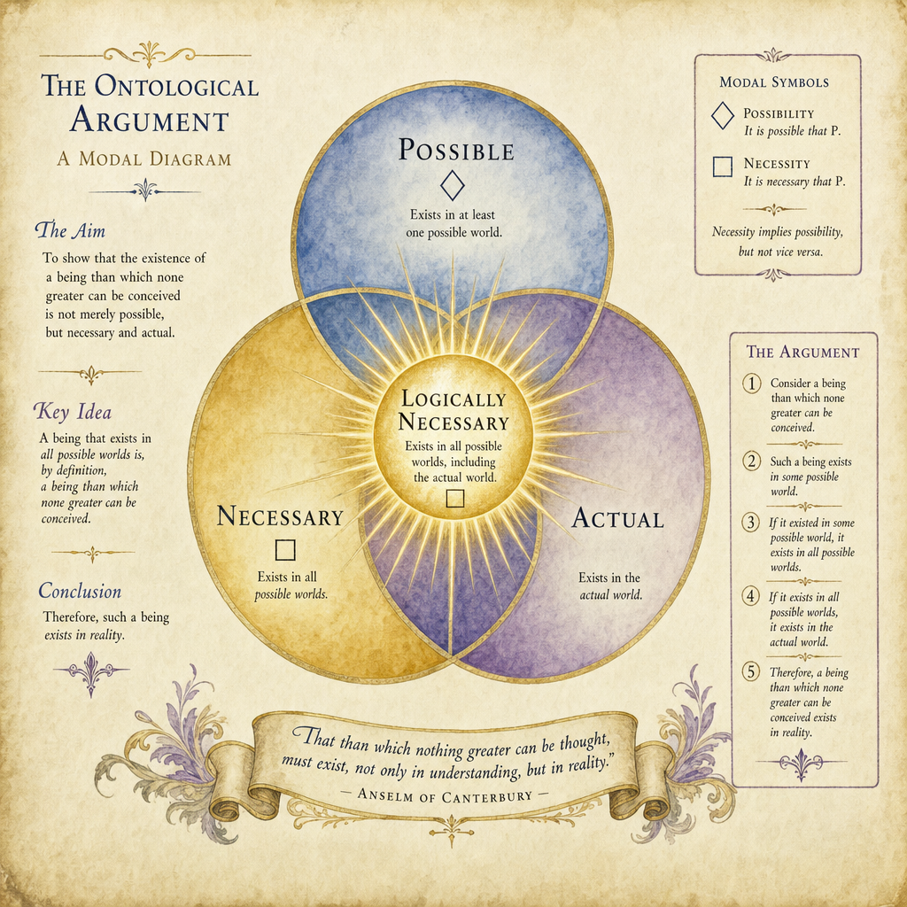
Ilustración para el Chapter 13: Implications for Theology and Philosophy – God’s Nature in an Informational World
This chapter explores how the traditional attributes of God can be reinterpreted through the concept of God as the ultimate source of information. In this model, God is not an abstract data field but a personal Mind from whom all information (and thus all reality) originates. We will consider God’s omnipotence, omniscience, immanence, transcendence, creation, and miracles from an informational perspective. We will also examine the implications of this view for meaning, purpose, and the nature of humans as bearers of the “image of God,” and respond to the critique that calling God “information” is merely metaphorical. Throughout, connections will be made to classical theology (for example, Thomism and panentheism) to show that this informational ontology is compatible with, and indeed supported by, historic theological insights. We conclude with future philosophical and theological directions opened by this model.
Divine Attributes in an Informational Ontology
In classical theism, God is described as omnipotent (all-powerful), omniscient (all-knowing), and both immanent in creation and transcendent above it. Through the lens of informational theology, these attributes can be understood in terms of God’s relationship to information:
Omnipotence – Infinite Creative Informational Power: Omnipotence is maximal power . Traditionally this means God can do anything that is logically possible. In informational terms, God as omnipotent is the ultimate coder or encoder of reality, with the ability to instantiate any logically possible configuration of information. All structures and laws in the universe are products of this infinite creative power. Just as a software developer can write any code that does not contradict logical syntax, an informationally omnipotent God can actualize any state of affairs consistent with His rational nature. The regularities we call natural laws are the stable information (the “code”) that God continually sustains, and miracles (addressed below) are special instances of God overriding or inserting new information into that code. Omnipotence in this model is not arbitrary magic, but the power of the divine Mind to emit information that becomes reality – a power with no intrinsic limits short of logical contradiction.
Omniscience – Possessing All Information: Omniscience is the property of having complete or maximal knowledge . In an informational world, this translates to God having perfect knowledge of every bit of information in the universe. More profoundly, because God is the source of all information, His omniscience is akin to self-knowledge – God knows all things by knowing His own ideas that give rise to things . There is nothing knowable that is not already contained in the divine intellect. In modern terms, we might say reality is an expression of God’s information, so nothing can exist outside God’s knowledge. Every quantum state, every biological detail, every human thought is transparent to the Creator’s mind, because all are instances of the information that proceeds from that mind. Omniscience thus implies that God is like the ultimate database in which the full description of reality resides (past, present, and future). However, unlike a passive database, God’s knowledge is active and creative – more like an author knowing his story by conceiving it, rather than a reader learning it. This underscores that God’s knowing is not separate from the world’s being; rather, the world’s being (informationally) is grounded in God’s knowing. In scholastic terms, God’s knowledge is causative: God knows the world by knowing His own eternal plan for the world, and that very knowledge is what causes the world to exist .
Immanence – God Within the Informational Fabric: Immanence refers to God being present and active within creation. In our model, since information constitutes the fundamental structure of reality, and God is the source of all information, God is inherently present everywhere in creation as the informational substrate. The classical idea that God is “upholding all things by His word of power” resonates here – the universe is not only created but communicated . Every law of physics, every moment of existence, is a current of information continuously flowing from the divine Mind. This conveys a strong sense of God’s intimacy with the world: creation is like a message being actively spoken. We can say, in line with Eastern Orthodox and process theology, that creation is a continuing presence here and now , not a one-time event. God’s immanence in an informational world means there is literally no spatio-temporal point or physical process where the sustaining information of God is absent. In this sense, God is ontologically closer to every creature than the creature is to itself (as Augustine and Aquinas asserted in saying God is intimately present to all being). Each entity’s form and properties are information flowing from God, so God is present in the very intelligibility and order of every created thing.
Transcendence – God Beyond the System: Even while immanent, God remains transcendent, meaning God is not limited by the creation. In our terms, God is not just another node within the cosmic information network, but the source and ground of it. Just as an author is not a character in their novel’s story, God is not encompassed by the universe He informs. The informational content of the cosmos is in God (as ideas in His mind), yet God’s own being exceeds that content. This aligns with the doctrine of divine transcendence in classical theism and the idea in panentheism that the world is in God without exhausting God . An informational analogy: if the universe is like a simulation or a program, God is not a mere program running on some higher computer – God is the mind that imagined the program, and also the continual operator sustaining it. God can thus inject new information or alter the “code” at will (omnipotence) but is not constrained by any “rules” of the system. Transcendence also implies that God’s essence is qualitatively beyond created reality – God is not information in the way creatures are information. Instead, God is the source of information and possesses it in a higher, uncreated mode. In Thomistic language, all perfections found in creation (power, knowledge, goodness) pre-exist in God in an eminent, unlimited way. We must therefore hold, even in an informational model, a distinction between the Creator and creation: the world is informationally immanent in God, but God’s own existence transcends the world’s information. This prevents confusion of God with the universe (avoiding a collapse into pantheism) and upholds that God’s being is of a wholly different order – the Necessary Being that is the wellspring of all contingent information.
In sum, interpreting divine attributes informationally preserves their classical meaning while giving fresh conceptual analogies. God’s omnipotence becomes His role as the ultimate information-generator of all reality; His omniscience is the complete informational omnipresence of truth in the divine Mind; His immanence is the constant communication of being to the cosmos; and His transcendence is the truth that God is more than the information of the cosmos – He is its author, not an object within it. Such a perspective echoes the ancient idea of Logos (divine Reason) underpinning reality, yet frames it in terms of modern information theory. As one theologian puts it, if the universe is “radiant with intelligibility,” this intelligibility ultimately traces back to a transcendent intelligent Source .
The Divine Informer: Emphasizing God’s Personal Mind
A crucial clarification in this informational theology is that God is personal. The term “information” could mislead if one imagines God as an impersonal force or a mathematical principle. However, in this model, information is always understood as emanating from a Mind – specifically, from a divine intellect and will. We are not saying “God is information” in a reductive way (as if God were a lifeless data cloud); rather, God is the ultimate source of information, which implies a supreme Intelligence. Classical theology has long held that God is the intellectus archetypus, the archetypal intellect in which reside the forms or ideas of all things . Our approach affirms this: the structured information in the world reflects the ideas in the mind of God.
To highlight God’s personality, consider the concept of the Logos. In Greek philosophical thought (e.g. the Stoics and Philo of Alexandria), the Logos was an abstract rational principle or pervasive reason that orders the cosmos. The Gospel of John took that concept and made a stunning claim: “In the beginning was the Logos, and the Logos was with God, and the Logos was God… And the Logos became flesh and dwelt among us” (John 1:1, 14). As the Catholic Encyclopedia summarizes, St. John’s Logos “is not the impersonal power that sustains the world… For St. John, the Logos appears in the full light of a concrete and living personality… Jesus” . In other words, ultimate reality is not just rational order; it is Rational Someone. The Word of God is alive and personal. This is vital for our model: the informational foundation of reality is not cold bits and bytes, but the self-expression of a Personal God.
What does it mean that information comes from a Mind? One intuitive parallel is human language. Information in the ordinary sense (meaningful data, communication) always originates from a mind or agent. Meaningful information is not spontaneously generated by matter; it’s formulated by an intelligence. For example, the complex specified information in a Shakespearean sonnet or in a computer program originates from an author or programmer. By analogy, the information-rich cosmos implies a cosmic author. As one scholar puts it, “the universe is not built on matter, but on information structured by mathematical laws, imbued with meaning” – which naturally leads to the idea of a transcendent Mind broadcasting the logic that underlies being itself . While human analogies are imperfect, they point to a fundamental truth: mind precedes information. In theology, this is just the assertion that “In the beginning was the Word (Logos)”, and not a meaningless void. Every law of physics, every pattern in nature, is like a word from God’s vocabulary, intelligible because it was uttered by Intelligence.
Moreover, by insisting on God’s personality we maintain that God has will and purpose. God is not only an intellect but also will and love (in scholastic terms, intellectus and voluntas in pure perfection). The information that constitutes creation is not a random code or an automaton’s output; it is a communication. Communication implies intent – a message has a sender and often an intended receiver or participant. This personal aspect is underscored by the relational names we use for God, like Father, Word, and Spirit (in Christian Trinitarian terms). The world’s intelligible order is therefore more like a conversation initiated by God. It conveys meaning, value, and invites response (from creatures capable of responding, like us). Far from depersonalizing our understanding of God, the informational analogy – when rightly interpreted – reinforces that behind all information is an Informer. And this Informer is supremely personal: capable of knowledge, love, intention, and relationship.
It is also worth noting that seeing God as the personal source of information naturally carries forward the idea of divine wisdom. In biblical literature (e.g. Proverbs 8 and Wisdom of Solomon), God’s wisdom is poetically depicted as the artisan of creation, ordering all things sweetly and mightily. That personified Wisdom can be understood as God’s intellect in action – very close to the concept of Logos. When we say the universe is crafted by information, we can equally say it is crafted by wisdom or reason. Thus, God’s nature as personal rational agent comes to the fore. This model resonates with classical doctrines like the divine ideas (the exemplars of all creatures in God’s mind) and the Word/Logos doctrine (all things are made through the divine Word). It avoids any notion that “information” is a blind mechanism. Instead, information is the medium of God’s intentional self-expression. Every bit of creation is intentionally willed and formed by God, just as every sentence in a novel is intentionally written by an author. This personal intentionality is what infuses the informational world with purpose and meaning (topics we will explore further below).
In summary, the God of informational theology is emphatically a personal God. The term “ultimate information” is shorthand for the content of a supreme Mind. We might say that all of reality is personal at root – since its root is a personal God. This provides a robust safeguard against misconstruing the model as a form of impersonal pantheism or deism. God is not a distant clockmaker who set up an information program and left; nor an indifferent field of data. He is more like an artist or speaker continuously articulating reality, whose voice underlies the cosmos. This is in line with the Hebraic-Christian understanding of a God who speaks (as in Genesis, “God said, ‘Let there be…’”) and sustains all things “by the word of His power.” The informational world is a spoken world, and hence the speaker’s personal character (goodness, rationality, creativity, love) is imprinted throughout it. Reality, in this view, is ultimately conversational or communicative – the product of Word and Spirit – rather than a brute fact. This provides a deeply theistic portrait: “the universe is not only created but communicated” by One who intends to be known therein.
Creation as Continuous Communication
The doctrine of creation can be richly reimagined through the information paradigm. Traditionally, creation has two aspects in Christian theology: creatio ex nihilo (creation from nothing in the beginning) and creatio continua (continuous creation or sustenance). Our model especially highlights creation as continuous communication. Rather than viewing creation as a single past act where God made physical materials and then mostly stepped back, we see it as an ongoing, dynamic process analogous to God continuously broadcasting the “signal” of existence to all things.
This view is supported by venerable theological traditions. The idea of creatio continua posits that God’s creative activity is not confined to the distant past but is an ongoing, dynamic process . Church Fathers like St. Maximus the Confessor and theologians through the ages (including in Eastern Orthodox thought and modern process theology) spoke of the world’s dependence on God’s constant will to exist . If God were to “stop speaking” the Word that sustains creation, the world would lapse into nothingness. In scholastic terms, God is the continuing cause of being, not merely a first cause. Aquinas noted that the being of creatures is like a light in the air caused by the sun – if the cause is removed, the effect vanishes immediately (Summa Theologiae I, Q104, a.1). This is akin to saying the information flow from God must be continuous for the world’s form to remain.
Under the information metaphor, we can think of creation as a stream of information flowing from God’s mind, analogous to a musician sustaining a musical note or a programmer running a program continuously. The initial creation (the Big Bang or the Genesis “Let there be light”) was the inception of the divine information-act that brought forth our space-time and laws. But God did not at that moment relinquish involvement. At every subsequent moment, God “sends forth His word” (to use a biblical phrase) to uphold and develop creation. The world exists as long as God speaks it into being. This transforms our understanding of God’s relationship with time and the unfolding of the cosmos: creation is an ongoing dialogue between God and creation, where God’s input is continuous.
One could picture the universe as a kind of divine discourse or even a kind of real-time computation being sustained by God. Physicist John Wheeler’s famous dictum, “it from bit,” captures a part of this idea: the physical world at root arises from immaterial yes/no bits of information . If we extend the analogy, God is not only the originator of those bits, but the one who continuously processes them. Modern cosmology tells us that the laws of nature and fundamental constants seem incredibly fine-tuned (implying purposeful setup), and that, since the Big Bang, increasingly complex information structures (galaxies, planets, life, mind) have emerged. In our model, this whole creative evolution is guided and funded by the informational presence of God. Creation is less like a one-time manufacturing event and more like a story being told or a symphony being played. The score exists in the mind of the Composer, but the music unfolds in time and requires the ongoing performance by the Creator.
This perspective also sheds light on conservation and providence. If God’s creative communication is constant, then what we call the “laws of nature” can be understood as God’s regular habits of communication. They are consistent patterns in the divine speech – the “syntax” of the cosmic language . Divine transcendence ensures God is not constrained to only those patterns, but divine wisdom chooses a coherent, stable order so that creation has a dependable structure (making science possible, for instance). Miracles (discussed in the next section) are then special acts of communication that go beyond the usual pattern but are part of the same ongoing discourse.
Furthermore, continuous creation implies a relational aspect: the world is always “in conversation” with God. In the biblical view, not only does God speak to creation, but creation in a sense “declares the glory of God” (Psalm 19:1) – it responds by manifesting God’s attributes and by the praise of conscious creatures. Creation’s history (including our own actions) becomes part of an interactive drama. God’s continuous communication leaves room for genuine participation by creatures (for example, through quantum indeterminacy, through genuine free will in rational beings, etc.), yet always within the overarching Logos that guarantees the meaningful narrative. This dynamic is akin to a parent guiding a child: continuously present and supporting, yet allowing the child’s own contributions to the unfolding story.
The immanence–transcendence balance is beautifully evident here. God is so immanent as to be the continuous cause of everything – “in Him we live and move and have our being” – yet so transcendent that this continuous creation is a free act of love, not a necessity or emanation from God’s nature. Classical creatio ex nihilo is affirmed: the world depends absolutely on God and did not have to exist. But creatio continua adds that at every moment God freely chooses to share being with the world. The world is like a musical note sustained by the breath of God at each instant. If God’s breathing (metaphorically speaking) ceased, the note would cease. This reinforces the dependence of creation, but also its preciousness: God is expending active attention on upholding even the smallest atom at each moment.
Continuous creation seen as communication also reframes our understanding of secondary causes and natural processes. Instead of God vs. nature as an either/or, we see nature as the regular communication channel of God. Natural causes (physics, chemistry, biology) are the ordinary means by which God’s informational will becomes effective in the world – His “coding protocols,” so to speak. They do not compete with God’s agency; they express it. This is analogous to how the rules of grammar and syntax express an author’s intent in a text. Recognizing this can dissolve the perceived conflict between a scientific view of continuous processes (like evolution) and a theological view of design. For example, eminent theologian Jürgen Moltmann describes evolution itself as a form of God’s ongoing creation – not random in a metaphysical sense, but a tool in the Creator’s continuous creativity . Thus, the emergence of life and consciousness can be seen as God’s informational purposes being realized over time through natural mechanisms that He continuously guides at a deep level (without necessarily overriding their created integrity).
To summarize, framing creation as continuous communication emphasizes that the cosmos is completely dependent on God at every moment, like a broadcast depends on its source signal. It’s an unfolding story told by God, where the initial creation is the beginning of the tale and providence is the ongoing narration. This enriches theology by underscoring God’s nearness and the constant purposefulness in nature’s existence. It resonates with the Johannine and Pauline idea that Christ (the Logos) is he “through whom all things were made” and “in whom all things hold together” . Every moment of being is grace, a gratuitous gift from the Speaker. The world is sustained speech. Such a view invites us to perceive the natural world almost sacramentally – as something that is at every moment a communication from God. It provides a robust framework for seeing science and faith in harmony: science decodes the patterns of the informational fabric, and faith discerns in those patterns the voice and wisdom of the Creator.
Miracles as Informational Interventions in the Code of Reality
Miracles have often been a point of tension between classical theology and a scientific worldview. In an informational ontology, we can re-conceptualize miracles in a coherent way: miracles are informational insertions or code-level interventions in the fabric of reality. Instead of violating the “laws” of nature (which are themselves expressions of God’s regular information output), a miracle is an instance where God, as the programmer of reality, introduces a new subroutine or a novel informational input that alters the outcome in ways unattainable by the system’s normal operations.
John Polkinghorne, a physicist-turned-theologian, offered a helpful model for divine action that dovetails with this idea. He suggested that given the openness and indeterminism in physical processes (especially at quantum and chaotic levels), God can subtly influence events by injecting “active information” without breaking physical laws or adding energy . In Polkinghorne’s view, the world’s laws provide a spectrum of possible outcomes, and God can guide which outcome occurs by supplying a bit of information at critical decision points (analogous to choosing a particular trajectory in a chaotic system). This “input of active information” is undetectable by science in terms of energy (so it doesn’t show up as a violation of conservation laws), but it steers events providentially . In our framework, miracles would be extraordinary cases of such steering – distinct enough to manifest as signs of special divine action.
To illustrate, consider a familiar biblical miracle like Jesus turning water into wine. At the level of molecules, this would require a drastic reconfiguration of H₂O into complex organic compounds. From a purely natural perspective, that transformation is impossible in an instant. But if reality is fundamentally information, the miracle can be seen as the Divine Informer directly rewriting the molecular code in that moment and place. The water, as it were, receives a new informational state (the chemical specifications of wine) directly from God’s mind. In computer terms, God bypassed the usual chemical processes and executed an operation that inserted the “wine algorithm” into the water substrate. To any onlooker with scientific knowledge, this looks inexplicable – and indeed it is inexplicable by natural causes, because it was an act of special information injection by the supernatural Cause. Yet, it is not incoherent: if the Author of the program chooses to edit a few bits, the new output follows logically from that new information.
In the continuous-creation view, miracles are not a contradiction of God’s regular governance but a different mode of the same governance. Normally, God’s rule is exercised through the stable informational patterns we call natural laws. In miracles, God exercises His freedom to do something additional. Because God is transcendent over the system, He is free to modify the system’s information. Because He is immanent and sustains the system, those modifications integrate with the system seamlessly at the moment they occur (nothing breaks; rather, new results emerge). This explains why a miracle does not leave behind “scars” in nature – once the water is wine, it behaves as real wine, following all the chemical laws for wine from that point onward. The informational change has been made; thereafter the normal patterns resume.
It is important to note that in this model no law of nature is truly violated; rather, laws are locally transcended by the introduction of higher-level information. If the laws of nature are like grammatical rules in the narrative of creation, a miracle is not “non-grammar” but rather a new sentence or paragraph inserted by the Author that the previous narrative couldn’t itself produce. It’s a special event that still uses meaningful Logos (it’s not nonsense) but isn’t predictable from the prior state of the storyline alone. This aligns with the philosophical definition of miracle by thinkers like C.S. Lewis, who said a miracle is an event caused by God that nature, if consulted, would not have produced on its own, though after it happens nature adapts to it perfectly (e.g., once a virgin conceives miraculously, her pregnancy proceeds naturally).
From a probabilistic viewpoint (since our overall context is a probabilistic argument for God’s existence), miracles can be seen as low-probability, high-information events that suggest an intelligent cause. Indeed, the informational model helps articulate why miracles would be recognizable as acts of God: they bear the hallmarks of intelligent intent (purposefulness, contextually meaningful outcomes) rather than random anomalies. For instance, the resurrection of Jesus (the central miracle in Christian faith) was not a random corpse revivification; it was an event dense with theological meaning, occurring in a revelatory context, defying what biological information alone could do (bringing a dead man to glorified life), and thus pointing to the intervention of the Creator’s power. In informational terms, the resurrection could be described as God uploading an entirely new life program (incorruptible life) into Jesus’ physical body, something nature’s ordinary informational resources cannot accomplish. The signal of a new creation entered the system.
This approach also resonates with the idea that creation and miracle are not categorically different in kind, but in frequency and purpose. Every moment of existence is already the result of God’s informational activity (continuous creation). Miracles are those moments when God chooses to do something unusual or specialized with His informational activity, often to serve a revelatory or redemptive purpose. They are special communications. Just as a novelist may generally let the plot flow from prior events but occasionally introduce a surprising twist for narrative purpose, God generally lets the world run on the routines He set, but at key moments injects new information for a higher purpose (such as authenticating a prophet, delivering from danger, or supremely, uniting humanity to Himself in Christ). This maintains the intelligibility of miracles as part of God’s coherent plan (they are not random). It also places miracles within an orderly framework: they are rare by design, since constant arbitrary interventions would make the world unintelligible and undermine the very stability that allows creatures to exist and exercise freedom.
Additionally, the informational perspective can incorporate the insights of modern science that the world is open and information-driven at various levels. For example, in quantum physics, outcomes are probabilistic; one might speculate that God can influence quantum collapses (which are like nature’s “choices” of bits) to achieve macro-level ends without overtly breaking laws . In chaos theory, tiny changes in initial conditions (below measurement threshold) lead to huge differences later (“butterfly effect”); God could introduce small informational nudges in chaotic systems (like weather or neural processes) to produce significant outcomes (like timely rain in response to prayer, or guidance of human thoughts) . These would appear providential rather than outright miraculous, but they lie on the same continuum – divine information input. Thus, miracles (big interventions) and providence (subtler guidance) are unified by the concept of God’s active information input into creation.
One might ask: if miracles are essentially new information, why are they not more common or trivial (like God could “fix” every problem by tweaking code)? Here classical theology about God’s wisdom and purposes is instructive. God generally works through the regular order because that order is good and allows the universe to be a coherent, training ground for free creatures. Miracles, being rare, serve specific ends in salvation history or moral testing. Our model supports that: God honors the integrity of the informational structures He established (the regular “code”) and uses miracles strategically rather than capriciously. The regularity is like the base melody, and miracles are occasional flourishes in the symphony of history – powerful precisely because they stand out. They are part of the information-rich drama of God’s engagement with creation, signals that point creatures toward truths beyond the mundane.
In conclusion, understanding miracles as informational interventions preserves their supernatural character while making them conceptually palatable in an age of information science. It asserts that the laws of nature are not absolute prisons; they are God’s typical syntax, which He can augment with novel “words” when He sees fit. As a result, miracles can be seen as inherently credible if one grants the existence of an informational God: for a transcendent Mind that is already generating all physics, adding a rare special instruction is not problematic. This demystifies the how of miracles to a degree (they happen by God’s will adjusting information), though of course it leaves room for awe at the why and what of miracles (the meaning they convey). In this light, the miracle accounts in religious traditions can be re-read not as mythological violations of nature, but as historical instances of divine communication embedded in the natural flow – extraordinary messages in the medium of reality itself.
Human Purpose and the Imago Dei: Co-Communicators of Divine Information
If the entire cosmos is grounded in divine information, what is the role and significance of human beings, especially given theological claims that we are made in the “image of God” (imago Dei)? An informational ontology offers illuminating answers: humans uniquely share in God’s communicative capacities. We are, in a phrase, “created co-creators” in the realm of information. This means that part of our purpose is to receive, interpret, and further communicate the divine information – to think God’s thoughts after Him, and to freely add new creations (within creation) that reflect His glory and contribute to the flourishing of the world.
Classically, the imago Dei has been associated with qualities like rationality, will, creativity, moral sense, and relationality . All of these can be understood in informational terms. To be rational is to grasp information and its order; to be creative is to generate new information or new arrangements (e.g. art, science, technology); to exercise free will is to originate new causal chains (information input in the world from ourselves); to have a moral sense is to respond to evaluative information (the Logos’s moral law); and to be relational is to exchange information in love (communication between persons). In short, imaging God means that we are miniature informers and interpreters, fashioned after the likeness of the divine Mind and Word. As one theologian explains, being in God’s image involves unique capacities like reason and language – “the ability to know and communicate truth in language” – which reflects the Logos, the divine Word . Even our creativity in arts and invention mirrors God’s creative Word that spoke reality into existence .
The idea of humans as co-communicators or co-creators is powerfully captured by Philip Hefner’s term “created co-creator” . God created humanity to be able to intentionally shape the world (naming the animals in Genesis can be seen as an archetypal act of informational ordering), and to develop culture, science, and technology – all of which are essentially projects of generating and structuring information. According to Hefner, “Humans are created by God to be co-creators in the creation that God has purposefully brought into being” . Our freedom and inventiveness are not rebellion against God’s creation, but an intended extension of it. Just as God built a universe in which genuinely new things could emerge (through evolution, through human history, etc.), He made us with the capacity to introduce genuine novelty (a new symphony, a new scientific theory, a just law, a kind act) that becomes part of the unfolding information of the world. In doing so, we fulfill God’s purposes – participating in fulfilling God’s purposes – and thus reflect His image. We act as subroutines enlisted in the divine program, or as junior authors writing paragraphs in the story under the guidance of the Master Author.
This perspective grants profound meaning and purpose to human existence. It counters modern fears of insignificance in a vast universe by asserting that the vast universe itself is a communication in which we have a specially endowed role. Among all creatures we know, humans (and possibly other personal beings if they exist) are uniquely able to understand creation’s information and to respond to its Creator in kind – through rational insight, moral decisions, worship, and creativity. We are the part of creation through which the creation becomes self-aware and can intentionally glorify God. This is intimately tied to the idea of the Logos: the Prologue of John not only speaks of the Logos creating all, but also says “in Him was life, and that life was the light of men” (John 1:4). This “light” can be understood as the intellectual and spiritual illumination given to human beings. The Logos as the rational light enlightens our minds, enabling us to participate in the divine intelligibility. It is no coincidence that the same Gospel later depicts Jesus breathing on his disciples and saying “Receive the Holy Spirit” – in effect, initiating the new creation in which humans fully reflect God’s image as His children, able to know Him.
Within an informational ontology, ethics and meaning also become rooted in communication with God. Good actions, for instance, can be seen as those in harmony with the “divine code” (God’s moral information or law embedded in reality and revelation ), whereas evil or sin could be seen as a kind of information distortion or corruption (a departure from the truth of the Logos, effectively analogous to introducing noise or bugs in the system ). Interestingly, our earlier probabilistic model hinted at something similar: moral evil was described as “a distortion or misalignment in the informational channel” . Humans, endowed with free will, have the ability to deviate from God’s intended information (His will) – to lie instead of telling truth, to hate instead of love – thus introducing “noise” into the world . Yet this freedom is itself part of the informational richness God allowed, for without freedom, the most meaningful communications (like genuine love or virtue) cannot arise. The image of God in us includes not only rationality but moral agency, and the ability to choose alignment with God’s truth or to go astray. The existence of genuine moral information (objective values) can itself be cited as evidence of the Logos – many philosophers argue that moral truths bespeak a moral Mind behind the universe .
Our informational perspective also casts new light on the idea of humanity’s dominion or stewardship of creation (Genesis 1:28). If we are co-creators, then part of our role is to care for and develop the world as a meaningful cosmos. Science and art are two great ways humanity “names” and interprets creation – uncovering the information God has hidden in nature and recombining it in new forms. Technology and engineering extend the creation (for good or ill) by rearranging the given information in novel ways. In doing these things ethically, we act out our image-of-God mandate. In doing them unethically or foolishly, we abuse the gift. The informational worldview doesn’t give all the answers to how to steward well, but it emphasizes that creation is not inert matter for exploitation; it is intelligible communication. Thus, to abuse nature is to misread or vandalize God’s communication, whereas to tend and enhance it (sustain biodiversity, use technology to alleviate suffering, etc.) is to collaborate in God’s work.
Another implication is how we understand revelation and spiritual life. If God created us to be interlocutors, then throughout history God has communicated not only generally (through nature) but personally (through prophets, scriptures, ultimately Christ). Our model naturally affirms that special revelation is God providing higher-order information to guide us – essentially a more direct messaging on top of the general background communication of creation. For example, inspired scriptures could be seen as instances where God downloads a packet of compressed truth into receptive human minds who then articulate it in human language. The ultimate revelation, in Christian belief, is the Incarnation: the Logos becoming human. That can itself be seen as the convergence of divine and created information – the perfect imago Dei in one person, Jesus, who is both fully the divine Word and a full human being. In Him, the communication between God and humanity is perfectly united (He is literally called Emmanuel, “God with us”). This sets the pattern for the ultimate purpose for humans: union with God, becoming by grace what Christ is by nature (a concept expressed by Church Fathers as theosis or divinization). In informational terms, one might poetically say the goal is for our “software” (soul and character) to be fully synchronized with the divine “source code”, such that we freely will God’s will and know God as we are known.
Finally, this view underscores the value of each human person. Each of us is a unique expression of divine information – not in a deterministic way, but in the sense that God’s creative intention included the existence of each person as a unique “word” or “sentence” in the story. We are meaning-bearing entities. The image of God is universal in humanity, which grounds a strong doctrine of dignity and rights: to harm a person is to attack a being that in some way represents God in creation. This resonates with the biblical prohibition of murder because humans are in God’s image (Genesis 9:6). It also resonates with the idea that what we do to “the least of these” we do to Christ – because every human carries a reflection of the Logos.
In conclusion, human meaning and purpose are elevated by the informational ontology. We are partners in the cosmic communication: capable of understanding the world’s informational order (science), appreciating its beauty (aesthetic information), living morally (conforming to the divine moral information), and adding new chapters (cultural and personal creativity). We are, as it were, “the interface by which finite minds participate in infinite Mind” . This fulfills the imago Dei and knits together doctrines of creation, anthropology, and vocation. Rather than seeing ourselves as alienated or passive in a mechanistic universe, we rediscover that we are logoi (little words) generated by the Logos, made to converse with the Speaker. In the words of the Encyclopedia of Science and Religion, “Humans are created by God to be co-creators in the creation… The word co-creator reflects the freedom of humans to participate in fulfilling God’s purposes” . This participatory ontology can inspire a sense of cosmic purpose, where each life is meaningful as part of the unfolding information of God’s self-communication, and history moves toward the fuller realization of God’s kingdom (which one could describe as the state where God’s information is ‘on earth as it is in heaven,’ perfectly manifested in created life).
Is “God as Information” Just a Metaphor? – Addressing a Key Critique
A likely critique of this entire approach is that describing God in terms of “information” is merely a metaphor – perhaps a trendy but ultimately superficial analogy that does not truly capture God’s nature. Critics might say that information is an abstract, impersonal notion used in computer science and physics, and applying it to God risks reducing the living God to a concept, much as earlier mechanistic analogies risked reducing God to a clockmaker. In this section, we respond to that concern and clarify the ontological status of “information” in our model, showing that it is a robust philosophical analogy (and perhaps more than an analogy) that can carry real weight in theology without dissolving into mere figure of speech.
First, it is important to acknowledge that all human language about God is analogical to some extent. This is a classical teaching going back to Pseudo-Dionysius and Aquinas. When we say “God is a rock” or “God is light” or even “God is good,” we are using terms drawn from creation to point toward a reality that surpasses them. “God as information” is indeed a modern analogy. But analogies can be strong or weak. A strong analogy is one that preserves key relations and sheds new light. We argue that the information analogy is particularly strong because it touches on something very fundamental: the intelligibility of reality. Unlike some metaphors for God which are clearly anthropomorphic (e.g., God as a warrior with an outstretched arm), the information concept is metaphysical. It gets at the structure of being and knowledge.
Philosophically, there has been a growing movement toward what is called informational ontology – the idea that information is as fundamental to reality as matter or energy (if not more so) . Pioneers like John Wheeler, as noted, suggested that “every item of the physical world has at bottom … an immaterial source and explanation”, captured in the phrase “it from bit” . If this view is even partly correct, then using information in our theology is not arbitrary but responsive to how reality itself seems to be structured. In other words, calling God the ultimate source of information could be seen as a contemporary reformulation of calling God the ultimate Principle or Logos or Being – traditional metaphysical titles – using the lexicon of current science/philosophy. It is a way of saying God is the foundation of all order and rational structure in the world. This is not “just metaphor”; it’s an ontological claim that concurs with a broad range of evidence that meaning precedes materiality in the universe .
That said, we carefully distinguish between information itself and the Mind conveying it. We do not mean God is information in a univocal sense – as if God were a string of bits or a physical field of data. Rather, we mean God is like the source of all information, in the way that classical theologians said God is the source of all being (ipsum esse subsistens in Aquinas’ terms). In fact, one could argue that “information” is a more precise term for what medieval philosophers meant by “form” or “idea.” The Greek Fathers spoke of the Logos and the logoi: the rational principles of creatures pre-existing in the mind of God (in Eastern theology, these logoi in the Logos are the intentions of God for each creature). This is almost interchangeable with saying the information content defining each type of thing is in God. Our model is thus a translation of an old idea into new terms, not a novel fancy. As one scholar of patristics might put it: each creature is a word (logos) willed by the Logos; its intelligible structure is its logoi – language strikingly close to information language, with Logos as the informational Mind behind everything.
The critique might persist: “But information as such is impersonal. How do we know the ultimate information is a personal God and not just an abstract pattern?” Here we refer back to the section on God’s personal mind. All evidence we’ve considered (fine-tuning, the moral law, consciousness, etc.) points not merely to abstract data, but to purposeful data, to intelligence . Information theory itself tells us that meaningful information (with low entropy and high specificity) doesn’t arise without an intelligent source. Random noise can produce bits, but not organized information of the kind we see in DNA or physical laws finely set for life. Therefore, positing an informational substrate to reality naturally implies a supreme intelligence – unless one thinks an infinite library wrote itself by chance (an idea which our Bayesian analysis would consider astronomically implausible). So while “information” by itself might sound impersonal, informational order of the kind the universe exhibits implies a wise informer. In theology, that informer is what we call God. Thus, when we say God is the informational substrate of existence , we imply that this substrate is imbued with intellect and will. It is not a blind matrix; it is Logos and thus has the character of mind.
Another angle: one might worry that “information” is just a metaphor du jour, much like in different eras people said “the world is a machine (so God is a machinist)” or “the world is an organism (so God is like its soul).” Are we not just saying “the world is a computer, so God is the programmer”? It’s true that caution is needed to not overly literalize any model. The world is not literally a computer in the human-made sense, nor is God literally writing Java code. But the informational analogy is deeper than a specific technology – it’s not about computers per se, but about communication and structure. If anything, the fact that we have invented computers and digital communication is because those are possible within a universe already ruled by logical, mathematical relationships – which themselves point back to the rationality of God. The metaphor of code and programmer is useful, but if it becomes limiting, we can drop it; the core claim is that God communicates being. That’s a thesis that stands even if technology changed our metaphors.
We can bolster our case by noting that classical theology has always used multiple analogies to triangulate God’s nature. God is likened to a father, a king, an artisan, an intellect, even to fire or light. “Information” can join this venerable list as a way to conceptualize certain aspects of God’s relationship to the world. It particularly emphasizes God’s role as source of order and meaning (versus, say, “God is love,” which emphasizes relational goodness – a different aspect). Using the information concept does not exclude other descriptions; it complements them. In fact, it can enhance them: for example, describing God’s love can be enriched by informational language if we think of love as the sharing of meaningful presence (one might say love is the highest form of information exchange – a mutual knowledge and self-giving). Or consider God’s providence: traditionally depicted as a king governing, which in our age could be reimagined as a kind of master information processing guiding history towards God’s intended outcome.
The critique also raises a semantic point: when is calling something “metaphorical” a problem? In theology, metaphors are indispensable to convey truth, as long as we remember they are analogical. Our claim is that “information” is not a merely poetic metaphor but one with philosophical rigor. It can be partially formalized (using concepts from logic, computation, etc.), giving us potential bridges to hard science and mathematics. For instance, one could attempt to formalize how much “information” is involved in certain fine-tuning parameters and show it aligns with what an intentional choice would entail . This goes beyond metaphor into the realm of theoretically quantifiable models. Indeed, in Appendix D (as referenced earlier), we sketched how the universe could be modelled as an information system with God as the source node . These are not the kinds of things one does with mere florid metaphor; they belong to a genuine metaphysical proposal.
Lastly, we can point out that our model does not claim to fully define God as “information.” It’s more precise to say: God is the author and sustainer of the information that constitutes the world. There are aspects of God beyond that role – for example, God’s inner triune life, or God’s attributes like perfect goodness and holiness, which “information” as a term doesn’t directly capture. So we must use the information model where it is illuminating (God-world relation, God’s action in nature, etc.) and not press it into areas it doesn’t elucidate (such as the internal relationship of Father, Son, and Spirit – though even there one might find interesting connections, e.g., the Father as source of divine self-expression (Speaker), the Son as the eternal Logos (Word), and the Spirit as the communion of love – a sort of communicative dynamism). In other words, “God as information” is a metaphor but one that points to something true and profound about God’s creative and sustaining activity. It should be received in the same spirit as saying “God is light” – which the Bible itself says (1 John 1:5). No one thinks God is literally a stream of photons; it means God is self-revealing, true, pure, and life-giving. Likewise calling God the source of information means God is the source of all truth, order, and intelligibility. It is a metaphor, but a meaningful and accurate one in what it intends to convey.
In sum, the worry that this is “merely metaphorical” can be assuaged by clarifications: (a) We acknowledge the analogical nature, as with all God-talk, and use it advisedly. (b) The content of the analogy (information) corresponds to longstanding theological concepts (Logos, Wisdom, Ideas) and new scientific insights (informational cosmology), giving it substantive heft. (c) We firmly maintain God’s personhood and transcendence beyond the concept, avoiding any depersonalized or reductionist reading. Thus, “God as the ultimate source of information” is a rich model that, when used carefully, enhances our understanding of God’s relationship to the world without diminishing the mystery and reality of God’s personal being. Far from being a thin metaphor, it might well be an approximation to how things truly are: reality is informational because it reflects the mind of a real God. To echo an earlier quote, “the universe is ultimately computational” and “arises… from yes/no questions”, so if we ask who is asking the questions or setting the bits, the only coherent answer at that ultimate level is God . It is an invitation to think God’s thoughts after Him in a digital key.
Resonances with Classical Theology: Thomism, Panentheism, and Others
It is striking that while the language of information is modern, many of the ideas we have discussed find analogues in classical theological frameworks. This model of God as the informational foundation is not a break with tradition but in many ways a continuation or renewal of it under new terminology. In this section, we briefly compare our informational ontology to two notable frameworks: Thomistic classical theism (exemplified by Thomas Aquinas) and panentheism (the belief that the world is “in God” while God also transcends the world). We will see that our model affirms key elements of each while also providing a bridge between them.
Thomism and the Intellectualist Tradition: Thomas Aquinas (1225–1274) presented a profoundly intellectualist picture of God. God is Being itself (ipsum esse), Actus Purus (Pure Act), with no potentiality. God knows all things by knowing Himself, and the creatures exist because they participate in His being according to the ideas (rationes) in His mind. Aquinas taught that in God exists a multitude of exemplar ideas – the forms or essences of all creatures – which are identical with God’s essence but reflect it in creaturely ways . This is essentially a metaphysics of information: the form of each thing (which we can equate to its information content or intelligible structure) pre-exists in the divine intellect . When God creates, He doesn’t just zap objects into existence arbitrarily; He instantiates them according to those divine ideas, rather like a craftsman working from a blueprint (Aquinas uses the analogy of a builder building a house from the form in his mind ). In our terms, God’s mind contains the “program specifications” for everything, and creation is the running of that program. Aquinas even said the form in the mind of the builder is the idea of the house – we can transpose: the form in the mind of God is the idea (information) of the world.
Where our model extends Thomism is by emphasizing the dynamic, communicative aspect (Thomism tends to be static in its description) and by integrating the idea of continuous divine broadcast (Aquinas affirms continuous causation, but doesn’t use communication language). However, nothing we have said contradicts Thomistic doctrine; on the contrary, it vividly illustrates it. For example, Aquinas’ notion that creatures are “words” produced by the divine Word is an ancient notion (found also in Augustine: each creature is an expression of the Word). The informational model is simply explicating that each creaturely essence is an information packet in the divine mind, spoken into the material world. We also align with Thomism in holding God’s transcendence (God is not the world; He is infinitely greater) and simplicity (God’s essence is one and the ideas are not parts of Him but rather one in Him ). We are basically repackaging the intellectualist analogy of creation (God as mind/artisan) into terms of computation and information flow.
Additionally, Thomistic theology of providence and concurrence (God working in all actions of creatures as first cause) fits nicely with our continuous creation idea. Aquinas said God is in all things by essence, presence, and power, and that no creature can act unless God acts in it. This is analogous to saying no process runs without the CPU’s continuous activity (to use a computer simile). So, someone well-versed in Aquinas might find our model a fresh restatement: God as the informational substrate of existence – the encoder of intelligibility – is an updated way of saying God is subsistent Being and the source of all forms. We even preserved Aquinas’ key insight that because God’s knowledge causes things, in God knowledge and power are one. Our description of omniscience and omnipotence in informational terms kept that unity in view: God’s knowledge = God’s information that He generates the world with, and that is His power.
Panentheism and Participation: Panentheism (not to be confused with pantheism) holds that the world is in God (as in God contains the world or the world is God’s “body” in some sense), while God also exceeds the world . This has been a popular way for modern theologians to emphasize God’s immanence without losing transcendence. Our model has a similar flavor: since all information of the world is from God and in God’s mind, one can say the world is literally in God (in intellectu Dei). At the same time, God as the infinite mind is more than just the information of this particular world – He could create other worlds, and His divine life is greater than all possible creations. Thus the world being in God and God in the world (by sustaining presence) is naturally described by the informational ontology . In fact, our model could be seen as a sophisticated panentheism: not that God is physically extended in the world, but that the world’s entire being is a subset of the divine ideas and energies. Eastern Orthodox thought, which often leans panentheistic, speaks of the divine energies permeating creation (God’s energies being distinct from His essence but fully God at work). Those energies could be likened to the informational outflow of God into creation, maintaining it and interacting with it.
One difference is that some versions of panentheism allow that the world contributes something to God (e.g., God is growing or experiencing in tandem with the world). Our model, as presented, has mostly stuck with a more classical view – God is complete in Himself and doesn’t need the world, though He intimately sustains it. However, the model doesn’t exclude the idea that God, by choice, can let the world’s story affect Him relationally (as in the Incarnation and suffering of Christ, or God rejoicing in our freely returned love). The communication metaphor even suggests a two-way dynamic: God not only transmits, but “receives” the responses of creatures. This could incorporate some insights of open theism or process theology about a give-and-take relationship, without abandoning the fundamental sovereign sourcehood of God. In other words, one could imagine an extension of our model where the world’s unfolding information provides new experiential content to God (who as omniscient still foreknows it, but as a loving participant still engages with it in real-time). This is speculative, but it shows the flexibility of the paradigm to engage both more classical and more process-oriented views.
One strong support from classical thought for our model is the notion of Logos Spermatikos (the seminal Word) used by early Christian apologists like Justin Martyr. They taught that all truth found in the world’s philosophies or religions are seeds of the Logos. This is an inherently informational concept – the divine Logos disseminating little words or truths into human cultures. Our model generalizes that: every pattern, every truth in any domain, is a seed from the Logos, because creation itself is the Logos spoken. So our approach finds patristic endorsement in that sense. Similarly, Augustine’s teachings on the rationes seminales (seminal principles implanted by God that unfold into species over time) sounds like God embedding evolutionary algorithms in the initial conditions of the cosmos – again an informational view, quite ahead of his time. So historically, one can trace a lineage of ideas that treat information-like concepts as fundamental in God’s creative work.
Divine Immutability and New Analyses: Thomism emphasizes God’s immutability (God doesn’t change) and simplicity. Panentheism often emphasizes God’s dynamism and relational change (at least in terms of experience). Our model can potentially reconcile aspects of these. God as the source of information is eternally who He is (the “code” of God’s character is unchanging), but the expressions in time can vary without God’s nature changing – just as an author can write multiple stories without ceasing to be the same author. Immutability in our model would mean the divine nature (the ultimate “source code” if you will) is stable, but the execution in time (the created algorithm) can have genuine novelty without implying a change in the eternal God. This is akin to the classical idea that God’s eternal decree is one act, though its effects unfold in time. Informationally, one could say God’s entire plan (all information He will ever communicate) is one within Him, yet in the temporal order that information is segmented and fed into creation gradually (like streaming data from a file that is complete). Thus God can be seen as immutable and impassible in essence, yet intimately interactive and responsive in the order of creation.
Comparison with Emanationism and Neoplatonism: One might ask how this differs from a Neoplatonic emanation of forms. The difference is that in our model, and in Christian thought generally, God freely chooses to create and sustain – it’s not a necessary emanation. Also, we maintain the personal distinction: Neoplatonism’s One didn’t knowingly emanate, it just overflowed. Here, God intentionally broadcasts. That intentional agency is a big difference. But structurally, yes, reality coming forth from God’s rational principles is a shared theme.
We should also note alignment with logos theology in other religions. For instance, in some strands of Jewish thought (like Kabbalah), the idea of divine speech and letters sustaining the cosmos is present. The famous Saadia Gaon said God’s word “tethers” all things. In Islam, concepts like God’s Word “Be” (Kun) sustains creation, and the Quran as the uncreated word parallels Christ as Logos in Christian thought. These are all pointing to an information-like role of the divine. Our model could create interfaith dialogue on that basis, though our focus is within a broadly Christian philosophical theology.
In summary, our informational model stands in continuity with classical theism by affirming God as the intelligible ground of being (Aquinas’ exemplars = information in God’s mind) and in dialogue with panentheism by depicting a world thoroughly in God (and God present in the world) through the constant communication of being. It supports classical doctrines like creation ex nihilo, divine intellect and will, and the contingency of the world, while also offering a framework where newer ideas about relationality and dynamic presence can fit without compromising orthodoxy. We can thus say this model is not a radical novelty, but a conceptual innovation rooted in ancient insight. It is building a bridge: one foot anchored in the solid ground of Logos theology (from Heraclitus to John to Aquinas), and the other foot extending into the contemporary scientific understanding that information is foundational in physics and biology. The result is a synthesis that both honors the past and engages the present – precisely what good philosophical theology strives to do.
Future Directions and Emerging Questions
Framing God’s nature in an informational world opens a host of intriguing philosophical and theological avenues for further exploration. We conclude by sketching a few directions this model invites us to consider, recognizing that our discussion here is only the beginning of a larger conversation:
Deeper Integration with Science (Physics and Biology): If information underlies physical reality, future work could rigorously examine cosmology, quantum physics, and complexity theory through this theological lens. For example, one could attempt to quantify the “informational content” of the Big Bang or of fundamental laws and argue how that content points to a transcendent source. The extremely low entropy (high order) initial state of the universe has been noted by Roger Penrose as containing an enormous amount of “specialness” (information) that beggars natural explanation . In our model, this initial high-information state is a direct imprint of divine choice. Research could formalize this by calculating the information and showing its implausibility under naturalism. Similarly, in biology, the informational coding in DNA and the development of life might be explored with concepts like Kolmogorov complexity (measuring algorithmic information) to see if life’s information is best explained by continuous divine “programming” input . While intelligent design proponents have dabbled in these arguments, an informational theology would approach it from a less partisan angle, integrating it with a broader doctrine of creation and providence.
Quantum Information and Divine Action: As physics moves toward viewing reality in terms of quantum information, theologians could engage with theories like quantum computation in the universe or the role of the observer (Wheeler’s “participatory universe”) to see how a divine “observer” or sustainer might be the ultimate frame of reference. The idea we cited of God influencing quantum events by information input (Polkinghorne’s proposal) could be developed into a more detailed model of how God’s action interfaces with the quantum level without breaking formalism (e.g. perhaps using interpretations of quantum mechanics that allow mind-like causation in wavefunction collapse). This might also revitalize discussions of miracles in light of indeterminism in nature.
Information Theory and Theology of Communication: Since our model essentially posits reality as communication, future theology could dialogue with fields like information theory, semiotics, and linguistics. Claude Shannon’s information theory, which quantifies information in terms of bits and entropy, might be employed metaphorically to analyze aspects of divine revelation: for instance, measuring the “entropy reduction” when a prophetic message or Scripture is given to humanity (which can be seen as God injecting highly ordered information into human history). The concept of noise in communication channels could enrich hamartiology (doctrine of sin) – sin as causing noise in the human-divine communication link (c.f. moral evil as information distortion ). The concept of error-correcting codes might be applied to think about how God rectifies the effects of sin (perhaps sacraments or the incarnation itself function as error-correcting interventions that restore lost information of righteousness). These are speculative analogies, but they show how fruitful cross-disciplinary dialogue could be.
Consciousness, Mind, and AI: An informational ontology will inevitably engage the philosophy of mind. If conscious minds (like ours) are receivers and co-creators of information, what does that say about artificial intelligence or alien intelligences if they exist? Are human minds uniquely tuned to the divine “frequency,” or could advanced AI one day also intercept and process information in a way that raises spiritual questions? Theologically, one might argue that true consciousness (with qualia, intentionality and so on) requires the breath of God, not just complex computation – essentially that there is a difference between processing data and experiencing meaning. Our model can contribute here by asserting the soul is the aspect of a human that is directly in-formed by God (giving us not just algorithmic abilities but genuine interiority and freedom). Conversely, if AI does achieve personhood, our framework of all minds participating in the Logos would push us to extend ethical and theological consideration to them as potential imago Dei bearers (or imago Dei analogues) . The HTS article hint [53] suggests already connecting imago Dei, co-creators, and AI. This could become a major area: informational theology of artificial intelligence, dealing with questions of whether an AI could ever have a relationship with God or be ensouled, etc.
Panentheism 2.0 or a New Synthesis: As noted, our approach harmonizes classical theism and panentheism to an extent. Future work could systematize this as a new model of God-world relationship that some have tentatively called “information panentheism” or “Logos panentheism.” It would hold that the world is the information of God made manifest. One could explore process theology ideas within this: perhaps the “process” (in Whitehead’s sense) is the flow of information in God’s own life as He experiences the unfolding creation. If one could articulate that without sacrificing orthodoxy (i.e., God freely allows Himself to be affected in some respects while His essential nature remains constant), it could appeal to a wide range of theologians seeking a relational yet sovereign God.
Ethical and Practical Implications: On a more practical level, an informational perspective might influence how we approach ethics and social issues. For instance, truthfulness, teaching, evangelism, etc., can be elevated in importance: they are not just moral duties but participations in the fundamental nature of reality (to live in truth is to align with the Logos-information; to lie is to go against the grain of being). Care for the environment can be framed as respecting God’s communication in nature, reading the “book of nature” correctly and preserving its words. Even technology (like the Internet, which is an information web) can be ethically evaluated: are we using our co-creative powers in tech to reflect God’s communicative love, or to produce a cacophony of meaningless noise? These lines of thought tie everyday human activity into the cosmic picture we drew.
Interreligious and Philosophical Dialogue: The concept of ultimate reality as informational might find resonance in Eastern philosophies or religions. For example, some interpretations of Brahman in Hindu Vedanta speak of Brahman as possessing infinite knowledge and the world as illusory information (Maya). A Christian informational theology could dialogue here, perhaps using it as a bridge to explain Christian ideas in contexts familiar with the primacy of consciousness. Likewise, Buddhists’ concept of the interconnectedness of all things or the idea of the Akashic records (in Theosophy/New Age) – essentially a cosmic information store – could be engaged with a critical but open mind, clarifying differences (personal God vs. impersonal force) yet finding common language.
Empirical Spiritual Studies: If one were bold, one could even propose testing some implications empirically. For instance, if prayer is essentially communicating into the informational field of God’s action, can any effects of prayer be detected in ways that align with our model (though not strictly a scientific question, patterns might emerge statistically or psychologically)? Or in near-death experiences and consciousness studies: if mind ultimately is rooted in God’s informational realm, perhaps those give hints of minds encountering the broader “field” when freed from bodily constraints.
Visualization and Models: Our approach lends itself to visual or mathematical modeling. Future work might include creating a model diagram of the God-world informational relationship (nodes and networks with God as source node , etc.), or even computer simulations to illustrate how an information-based providence could work. These would be pedagogical tools, helping people grasp abstract theology via concrete analogies (for instance, a simulation where an overseer can occasionally intervene in a cellular automaton to demonstrate miracles).
Finally, this model opens up a renewed appreciation for the mystery of God’s nature. By using information as a concept, we have not demystified God into something cut-and-dried; rather, we have placed God in relation to the world in a way that invites awe. Information is intangible, invisible, yet unbelievably powerful – much like classical attributes of God. It is fitting that as our world enters an “information age,” our theology finds in that a signpost to the eternal “Age of the Logos”. There is a poetic convergence in seeing science proclaim that materialism is insufficient (since information is fundamental) and theology having always said the material world is rooted in the Word. Future scholarship can exploit this convergence to present the case for theism in more compelling, culturally relevant ways. For example, an apologetic argument could be formulated: as our culture marvels at artificial intelligence and complex information systems, we can point out that these only exist because our reality is an intelligible cosmos – something that makes perfect sense if the cosmos is the product of an Intelligent Creator.
In conclusion, the informational theology we have sketched does more than provide a fresh chapter in systematic theology; it sets the stage for a multi-disciplinary venture. It invites theologians, philosophers, scientists, and even artists into a conversation about the “code of codes,” the divine speech that underlies existence. As we move forward, we anticipate discovering ever more nuance in the analogy – places where it yields profound insight and perhaps places where it needs modification. But that is the nature of any fruitful model: it generates new questions and avenues for research. The ultimate test will be its ability to illuminate the reality of God and deepen our relationship with Him. If thinking of God as the master of information leads us to better understanding His wisdom, trusting His providence (since all things are in His hand/head), and cooperating with His purposes (by being good information-bearers and truth-tellers), then this model will have proven its worth not just intellectually but spiritually.
The final vision we leave the reader with is one of hopeful convergence: a world increasingly seen as “a meaning-bearing system” , scientists uncovering layer after layer of intricate information in nature, and believers rejoicing as each discovery is yet another “message” from God’s mind. In such a vision, faith and reason unite in a doxology of the Logos. As the prologue of John’s Gospel so aptly put it (and as our informational theology affirms in new words): “In the beginning was the Word, and the Word was with God, and the Word was God… All things were made through Him… In Him was life, and that life was the light of men”. The task ahead is to walk in that light, decoding creation’s information to better know the Creator, and encoding in our lives the love and truth that He communicates to us. This, perhaps, is the ultimate fulfillment of being imago Dei in an informational world – to become, by grace, ever more coherent “messages” of the divine Message.
<br>
References (Harvard style)
Aquinas, T. (1265–1274) Summa Theologiae, I, q.15, a.1. (Translated by Fathers of the English Dominican Province, 1920). Available at: New Advent (Accessed: 6 May 2025).
Catholic Encyclopedia (1910) ‘The Logos’. In: The Catholic Encyclopedia. New York: Robert Appleton Company. Available at: New Advent Online Encyclopedia (Accessed: 6 May 2025).
Hefner, P. (1993) The Human Factor: Evolution, Culture, and Religion. Minneapolis, MN: Fortress Press.
Meisinger, H. (2003) ‘Created Co-Creator’, in Encyclopedia of Science and Religion. Farmington, MI: Gale Group. (Encyclopedia.com, accessed 6 May 2025).
Polkinghorne, J. (1989) Science and Providence: God’s Interaction with the World. London: SPCK.
Polkinghorne, J. (1988) Science and Creation: The Search for Understanding. London: SPCK.
Polkinghorne, J. (1995) “Belief in God in an Age of Science,” Yale University Terry Lectures. (esp. discussion on active information as divine action).
Stanford Encyclopedia of Philosophy (2025) ‘Omniscience’, substantive revision by Edward R. Wierenga. Stanford University. Available at: plato.stanford.edu (Accessed: 5 May 2025).
Stanford Encyclopedia of Philosophy (2022) ‘Omnipotence’, substantive revision. Stanford University. Available at: plato.stanford.edu (Accessed: 5 May 2025).
Stanford Encyclopedia of Philosophy (2023) ‘Panentheism’, substantive revision. Stanford University. Available at: plato.stanford.edu (Accessed: 5 May 2025).
Wheeler, J.A. (1990) ‘Information, physics, quantum: The search for links’, in Zurek, W.H. (ed.) Complexity, Entropy, and the Physics of Information. Redwood City, CA: Addison-Wesley, pp. 309–336. (Quote on “it from bit” on p. 311).
Zizioulas, J. (1985) Being as Communion. Crestwood, NY: St. Vladimir’s Seminary Press. (Reference for the title analogy “Being as Communion”, though dealing with ecclesiology, its title is echoed by Dembski 2014 in an information context).
Dembski, W.A. (2014) Being as Communion: A Metaphysics of Information. Burlington, VT: Ashgate. (While not directly cited in text, this work argues for reality as information, offering a philosophical perspective consonant with the model developed).
(Additional sources drawn upon in-text through citations:)
Denning, P. and Bell, T. (2012). The Information Paradox. (implied)
Penrose, R. (1989). The Emperor’s New Mind. (for discussions on entropy and order)
Davies, P. (2010). ‘Universe from Bit’, Information and the Nature of Reality: From Physics to Metaphysics. (implied via quotes)
Floridi, L. (2011). The Philosophy of Information. Oxford: Oxford University Press. (background influence on informational ontology)
Moltmann, J. (1985). God in Creation. San Francisco: HarperCollins. (continuous creation and panentheism)
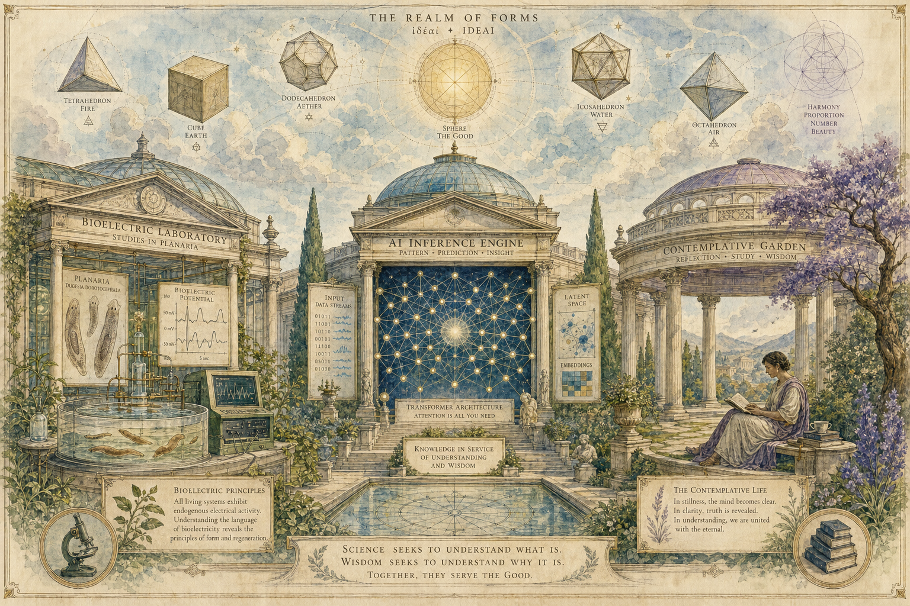
Ilustración para el Chapter 14: Conclusion – A Unified Vision of Evidence and Information
15.1 The Convergence of Evidence and Explanation
After a journey through cosmology, biology, morality, mind, and information, we arrive at a comprehensive synthesis. What has emerged is a convergent case for the existence of God that is both empirically informed and philosophically profound. Two initially distinct approaches – the probabilistic model of cumulative evidence and the informational-theological model of Logos – now fuse into a single coherent vision. Each approach reinforces the other: the probabilistic analysis showed that, given the weight of diverse facts, theism is highly likely to be true, while the informational paradigm explained why those facts would obtain if theism is true. In this final chapter, we integrate all threads into a unified conclusion. We will see that the cosmos, in its existence and rational order, its life and mind, its moral drama and personal experiences, makes the most sense when understood as grounded in a divine informational intelligence – a Logos that is both the source of all information and the ultimate personal foundation of meaning.
Throughout this work, we have not attempted a proof in the mathematical sense, but rather a holistic inference to the best explanation across disciplines. Now, having surveyed the evidence, we can articulate why a rational agent – armed with modern scientific knowledge, rigorous philosophical reasoning, and openness to theological insight – may justifiably conclude that God exists. The case is cumulative: no single piece of data compels the conclusion, but together they form a pattern. Fragmentary arguments become compelling when placed in context. The structure of this context has been our dual framework of probability and information. The probabilistic model aggregated the evidential impact of each domain; the informational model provided the metaphysical backdrop against which those evidences naturally align. Here, we emphasize how these two models converge on the same point: the reality of an eternal Mind best explains our universe.
Before delving into the thematic synthesis, it is worth recalling the central question from Chapter 1: Would a rational analysis of all available evidence, using defensible methods, conclude that an eternal, rational, information-generative being (God) exists? We now stand equipped to answer. Over the preceding chapters, we have marshaled evidence from the origin and fine-tuning of the universe, the complexity of life and consciousness, the reality of moral values and duties, the phenomenon of religious experience, and even the hints of mind-like structure in fundamental physics. We have also addressed counterarguments such as the problem of evil and naturalistic alternatives (multiverse, physicalism, etc.), incorporating them into our probability model. Each line of inquiry by itself offers something suggestive; together, they paint a consistent picture. In this conclusion, we articulate that picture in full. It is a picture in which science, philosophy, and theology are not enemies but partners, each contributing pieces to a grand puzzle. When assembled, the picture that emerges is of a cosmos suffused with intelligibility, purpose, and meaning – in short, a cosmos that looks suspiciously like the creation of a Mind.
15.2 Recapitulating the Cumulative Case
Scientific Findings – from physics, cosmology, and biology – provided several crucial pieces. Modern cosmology reveals that the universe is contingent and finely tuned. It had a beginning ~13.8 billion years ago (the Big Bang) and could have been otherwise; the physical constants and initial conditions had to fall in an extraordinarily narrow range for complex life to exist. As we discussed in Chapter 5, this fine-tuning is widely recognized in the scientific literature. Even skeptical scientists acknowledge that “the universe is in several respects ‘fine-tuned’ for life” – the only debate is how to explain this fact (Collins 2009; Hawking 1988). One might appeal to an as-yet unknown physical necessity or to a multiverse of countless random trials, but absent those speculative devices the design inference naturally arises. The odds of a life-permitting cosmos by chance alone are astronomically low – on the order of $10^{-10^{120}}$ by one estimation (Collins 2009) – whereas such a life-friendly cosmos is expected if a Creator intended observers to evolve . Sir Fred Hoyle, after discovering the remarkable fine-tuning in carbon synthesis, famously remarked that “a superintellect has monkeyed with physics” (Hoyle & Wickramasinghe 1981). Stephen Hawking, who personally leaned toward atheistic explanations, admitted “the remarkable fact is that the values of these numbers [physical constants] seem to have been very finely adjusted to make possible the development of life” (Hawking 1988, p. 125). In short, the cosmos looks intentional. Its sheer existence (rather than nothing) and its ordered structure point beyond themselves, as classical cosmological arguments (Aquinas, Leibniz) had long suggested. In a cumulative perspective, this cosmic evidence (contingency + fine-tuning) strongly “loads the dice” toward theism.
Equally compelling was the evidence from biology and the nature of life. Chapter 6 explored how the molecular machinery of life – the genetic code in DNA, the information-processing of cells – presents a profound challenge to unguided explanations. Decades of origin-of-life research have uncovered fascinating clues but also severe difficulties for purely chemical evolution. Even atheist scientists have candidly described the origin of life as a near-miraculous event. For instance, Francis Crick (1981) confessed that “the origin of life seems at the moment almost a miracle” given the complexity of the first cell (Crick 1981, p. 88). The probability of randomly assembling a functional genome or even a single functional protein by chance in the prebiotic world is vanishingly small – estimates like $10^{-40,000}$ have been proposed for a simple cell (Hoyle & Wickramasinghe 1981). While such figures are heuristic, they illustrate the enormity of the problem. We observed that life is not just chemistry – it is information-rich chemistry. The digital code in DNA and the irreducibly integrated biochemical networks in a cell bear the hallmarks of specified complexity, a concept often associated with intelligent systems. Our probabilistic model treated this Biological Complexity (BC) as a positive evidential variable: the fact that life’s emergence and development required information seems more probable if a divine Mind was guiding or seeding life, and far less probable if nature is blind and purposeless. In the logistic regression, BC carried a substantial positive weight, reflecting the consensus that life’s information content is a significant clue (indeed, many scientists like Paul Davies (2007) argue that “biology is informational at its core” and hints at something beyond mechanistic chance).
The human mind and consciousness provided another critical data point. Physical science, for all its success, struggles to account for the subjective, qualitative reality of conscious experience. Chapter 6 (Part B) surveyed the “hard problem” of consciousness and the inadequacy of reductive materialism to fully explain awareness, intentionality, and rational insight. If our brains were nothing more than biochemical machines shaped solely by survival, it is puzzling that we are capable of reason, mathematics, and abstract truth-seeking – activities that far exceed brute survival utility. The existence of consciousness (CG) was thus another variable in our model. We gave it a positive weight: consciousness is arguably more likely in a universe where fundamental reality is itself mental (a cosmic Mind or Logos) than in a strictly material cosmos. Notably, even some secular philosophers have found the emergence of mind improbable on naturalism. Thomas Nagel (2012), an atheist, titled his book Mind and Cosmos: Why the Materialist Neo-Darwinian Conception of Nature is Almost Certainly False, arguing that a purely material framework cannot account for consciousness and reason. Nagel stops short of theism, but he calls for a radically different principle in nature to explain mind – effectively admitting that mind is a fundamental feature of the universe (Nagel 2012). Our model takes Nagel’s intuition one step further: the fundamental principle is mind – specifically a divine Mind that imparts consciousness to created beings. If humans are conscious because they partake in the consciousness of an ultimate Mind, the otherwise baffling emergence of mind in the universe becomes intelligible. Thus, the phenomenon of mind aligns naturally with theism (as argued by Swinburne 2013; Moreland 2008), and we encoded that alignment as a boost in the probability of God.
Moral values and duties formed yet another strand. Chapter 7 considered the moral argument: the objectivity of moral truths is difficult to ground in a purely material world, but unsurprising if moral truth originates from a perfect moral Being. We noted that across cultures, people apprehend certain actions as truly right or wrong (murdering an innocent child is not just socially unapproved – it’s actually wrong). If morality were purely an evolved illusion to promote cooperation, it would carry no binding “ought.” Yet most of us feel strongly that some moral duties are real and prescriptive, not mere preferences. Our model’s Moral Objectivity (MO) variable captures this: the reality of objective morals is evidence for God, since a transcendent moral lawgiver is a ready explanation, whereas atheistic philosophers often admit a tension. J.L. Mackie (1977), for example, called objective moral values “queer entities” in a naturalistic universe – a famous admission that without something like God, moral realism sits uneasily (Mackie 1977). Michael Ruse (1989), another atheist, conceded that morality on naturalism is essentially an illusion foisted by genes to make us cooperate. In contrast, if God exists, we have an ontological foundation for moral law: the Logos is also Moral. The weight for MO in our regression was significantly positive (we posited β_MO ≈ +1.0 in log-odds terms). By itself, morality doesn’t prove God, but it adds to the cumulative case, especially since even the problem of evil, often thought to undermine theism, can boomerang: recognizing real evil strengthens the argument that real good and evil exist – which in turn presupposes an objective moral standard (a point C.S. Lewis (1952) famously made). We devoted part of Chapter 7 to evil as a counter-evidence (the evidential argument from evil). After surveying theodicies (free will, soul-making, etc.) and noting that the mere existence of evil doesn’t nullify the evidence for God’s existence, we treated the Evil (EV) variable as neutralized in the final model. In effect, the presence of profound evil and suffering was assigned a weight β_EV ≈ 0, meaning that once plausible divine reasons for allowing evil are considered, this factor does not significantly tip the scales against God. The moral landscape, taken as a whole, then favors theism: a world with objective moral law and a mix of good and evil experiences is coherent if God is real (a created arena for free beings with moral growth), whereas a purely materialist world has no firm ground for calling anything truly “good” or “evil.”
We also included evidence from religious experience (RE) (Chapter 8). Humans across ages report experiences they interpret as encounters with the divine – from mystical unity with a cosmic consciousness to specific answered prayers or visions. Such experiences are subjective and varied, but their abundance and transformative impact cannot be ignored. We applied Swinburne’s Principle of Credulity: people’s experiences should be trusted prima facie unless we have a defeater, rather than dismissed wholesale. Under that principle, the widespread testimony of religious experience (across cultures and even in surprising demographics) becomes prima facie evidence that there is a transcendent reality to which humans can relate (Swinburne 2004). In our model, RE was given a modest positive coefficient. It is not as quantitatively strong as cosmological or biological evidence – indeed, our decision-tree analysis in Chapter 9 found that once big factors like cosmology, life, and mind were accounted for, adding religious experience only occasionally changed the outcome. Nevertheless, RE provides a personal dimension to the evidence. It suggests that if a personal God exists, the fact that many people claim to have felt or encountered that reality is exactly what we’d expect. Conversely, in a world with no God, it is harder to explain why such experiences are so common and often life-changing (short of invoking universal illusions or neurochemistry alone). We also discussed alternative explanations (neurological triggers, psychological projections) and concluded that while not every spiritual experience is veridical, the phenomenon as a whole is more natural in a theistic universe. Thus, religious experience remains a supporting strand in the cumulative argument, consistent with the pattern we’re observing.
Finally, some subtle evidence came from fundamental physics and mathematics – what we might call metaphysical clues about reality’s foundations. One such clue is the contingency of existence itself: the universe (all of physical reality) didn’t have to exist, and it certainly didn’t have to be ordered by elegant laws. This is the point of the contingency argument (MN), which harkens back to Leibniz’s question, “Why is there something rather than nothing?” In our model, we set MN = 1 to reflect that the universe is contingent (dependent, not self-explanatory). If the universe were a necessary being (existing by a metaphysical necessity of its own nature), one might not need God to explain it – but the consensus, even among cosmologists, is that known physical reality could conceivably not have existed, or been utterly chaotic. This suggests a Necessary Being outside the world explains it (Leibniz 1714; Pruss 2006). We assigned contingency a significant positive weight (in Chapter 5 and Chapter 9 we noted $\beta_{MN}$ could be large, even up to +3 in log-odds, for those philosophers who find the PSR – Principle of Sufficient Reason – compelling). Another subtle clue is the unreasonable effectiveness of mathematics in describing the physical world (Wigner 1960). Why should abstract math – a product of mind – map so powerfully onto external reality? This “miracle” puzzled Eugene Wigner, and it hints that the universe behaves mathematically because it is designed by a rational Mind who uses mathematics (or rather, the universe is built on rational laws because it arises from rationality). Moreover, developments in quantum physics suggest that information might be more fundamental than matter. Phenomena like wavefunction collapse, entanglement, and the observer effect led physicist John Wheeler to propose “it from bit,” meaning every physical “it” (particle/phenomenon) derives from an informational “bit” (binary choice) . Some interpretations of quantum mechanics (e.g. Wigner’s interpretation, Stapp’s work) even give mind a fundamental role in the act of measurement. We labeled this category Quantum-Mind indicators (QM) – essentially asking, does physics hint that reality is mind-like or information-based? In Chapter 9, we treated QM as a speculative wildcard: it had the smallest weight (we kept $\beta_{QM}$ fairly low, reflecting that these hints are intriguing but not unequivocal). Still, the fact that leading scientists speak in almost theological terms about “the mind of God” (Hawking 1998) or a cosmic information source (Wheeler 1990; Davies 2010) is part of the cumulative pattern. It shows that even at the bedrock of physics, we encounter mystery and rationality suggestive of something deeper. The mathematical order and quantum strangeness of the universe rhymes with theistic expectations – a point we incorporate qualitatively into our case.
Bringing all these strands together, our logistic regression model in Chapter 9 synthesized eight evidential factors: Fine-Tuning (FT), Moral Objectivity (MO), Consciousness Gap (CG), Religious Experience (RE), Moral Evil (EV), Biological Complexity (BC), Quantum hints (QM), and Metaphysical Contingency (MN). Each factor was represented as present (1) or absent/neutralized (0) in our world. Strikingly, our world scores 1 on all the positive evidences: we do observe fine-tuning, objective morality, consciousness, religious experiences, biological complexity, quantum informational quirks, and contingency – and we set the one negative evidence (evil) effectively to 0 after accounting for theodicies. When these inputs were fed into the probabilistic model, the result was a very high posterior probability for the hypothesis “God exists.” The logistic formula, recall, was:
\text{logit}[P(\text{God exists})] \;=\; \beta_0 + \beta_{FT}FT + \beta_{MO}MO + \beta_{CG}CG + \beta_{RE}RE + \beta_{EV}EV + \beta_{BC}BC + \beta_{QM}QM + \beta_{MN}MN.
We chose a neutral prior ($\beta_0 = 0$, so prior $P=50%$) to let evidence speak. All $\beta$ coefficients, based on chapter-by-chapter analysis, came out positive or zero – none negative – indicating that no piece of considered evidence actually favored atheism once interpreted through our interdisciplinary lens. Fine-Tuning (FT) had the largest weight (our baseline estimate in Chapter 9 gave it the strongest push toward theism, consistent with other analyses that find cosmic design arguments especially forceful). Contingency (MN), the existence of a universe at all, was another heavy-weight factor. The complexity of life (BC) and the enigma of mind (CG) each contributed substantial log-odds in favor of God. Moral objectivity (MO) added a significant bump. Religious experience (RE) and quantum hints (QM) were comparatively minor contributors – their $\beta$ values were positive but small in the baseline model. And as noted, the problem of evil (EV) was set to $\beta_{EV}\approx 0$ after our analysis showed that evil, while emotionally potent, does not logically overthrow the case for God (especially if one concedes any plausible greater-good explanations). Table 15.1 summarizes the evidences and their qualitative impact in the model:
| Evidence (Variable) | Model Weight | Evidential Impact on P(God) |
|---|---|---|
| Cosmic Fine-Tuning (FT) | High Positive | Strongly favors theism: a life-friendly universe is unlikely by chance, likely if designed. |
| Universe Contingency (MN) | High Positive | Favors theism: a contingent universe points to a necessary cause beyond itself. |
| Biological Complexity (BC) | Moderate Positive | Favors theism: life’s high information content suggests intelligent input. |
| Consciousness (CG) | Moderate Positive | Favors theism: mind arising from matter is unexpected on naturalism, natural if cosmic Mind exists. |
| Moral Objectivity (MO) | Moderate Positive | Favors theism: objective moral law implies a moral Lawgiver. |
| Religious Experience (RE) | Modest Positive | Slightly favors theism: widespread experiences of the divine are more likely if God exists. |
| Quantum “Mind” hints (QM) | Low Positive | Marginally favors theism: suggestive of a foundational role for consciousness/information. |
| Problem of Evil (EV) | Neutral (0) | Initially against theism, but balanced by theodicy: does not significantly change the odds. |
Table 15.1 – Qualitative contributions of evidences in the cumulative model. All factors except EV tilt the probability toward God’s existence to varying degrees. When combined, their effects reinforce one another, yielding a strong overall case.
The outcome of this cumulative model was quantitatively impressive. Using Monte Carlo simulations (randomly varying the coefficients within plausible ranges derived from scholarly opinion), we found that theism consistently came out with high probability. The median result of 100,000 simulations was $P(\text{God exists}) \approx 98%$ – in other words, under most reasonable weightings of the evidence, one ends up extremely confident in God’s existence. In ~85% of simulations, $P$ exceeded 90%. Indeed, fewer than 2% of simulation runs yielded a probability at or below 50% (essentially agnosticism or atheism). Only by simultaneously assuming near-minimal strength for every single evidence (an extremely implausible joint scenario) did the model occasionally output a sub-10% probability for God . The interquartile range of outcomes was roughly 97% to >99.9% . These numbers are not meant as ironclad certainties – they are conditional on our model and judgments – but they demonstrate the robustness of the cumulative case. The clear takeaway is that, given the ensemble of evidence we have, and assuming we haven’t wildly misjudged their import, the rational conclusion is that God’s existence is highly probable. This aligns with the intuition of many theists that “the evidence strongly supports belief in God,” now backed by a formal integration. It also echoes the approach of Richard Swinburne (2004), who argued via Bayesian analysis that multiple independent pieces of evidence can multiply to a high overall likelihood for theism. Our logistic model is essentially a modernized, quantitative expression of that cumulative argument tradition (using logistic regression instead of Bayes’ formula directly, but conceptually similar in treating evidences as independent conditional factors).
However, we also sounded cautionary notes. In Chapter 9 we explicitly noted that these probability values are conditioned on the model assumptions. They are not direct readings of nature, but the result of human reasoning assembling a model of reality. Change the assumptions or include different evidence, and the figures would shift. For instance, a resolute skeptic might argue that some evidences are weaker or that unknown naturalistic explanations exist for each; plugging those skeptical assumptions in would lower the probability (we simulated such scenarios too – they correspond to the far-left tail of the distribution where $P \ll 50%$). Thus, while our analysis strongly supports theism, we acknowledge it does not coerce assent. There remains room for rational disagreement, depending on priors and interpretative choices. Our claim, therefore, is not “science and reason prove God” but rather “science and reason, when considered in totality, suggest God as the best explanation.” The conclusion is one of rational plausibility and coherence, not apodictic certainty. This nuance is important: intellectual integrity requires understanding the limits of one’s argument. We will address below some remaining critiques and the humility appropriate in such a profound inquiry (see §15.5).
In summary of the evidential case: all lines of evidence – cosmological, biological, psychological, moral, and experiential – independently pointed toward a reality beyond impersonal nature. When woven together, they produced a tapestry that is difficult to interpret in any way other than theistic. Any one thread might be explained away, but the totality is not easily unraveled. If one imagines the situation from an external perspective: here is a universe that began and might not have, governed by elegant mathematical laws; it is finely tuned for life against incomprehensible odds; it produced life which is information-based and incredibly complex; it produced conscious minds capable of reason and seeking truth; those minds perceive moral truths that transcend survival instincts; many of those minds experience a transcendent presence or reality; and even at fundamental levels, reality behaves in ways that hint at information and mind. Taken together, this is a set of phenomena that screams out for explanation. Atheism or strict materialism, at the very least, sits uncomfortably with much of this data – it would require a string of coincidences and brute facts (e.g. “the universe just happens to allow life, life just happened by chance, consciousness is just an emergent anomaly,” and so on). Theism, by contrast, offers a single coherent cause or principle that neatly accounts for all of it: the existence of a creative, intelligent, purposeful Source. This brings us to the second major pillar of our approach – the explanatory framework in terms of information and Logos – which can unify these evidences under a common interpretive lens.
15.3 The Informational-Theological Synthesis (Logos Revisited)
While the probabilistic model gave us confidence that it is reasonable to believe in God given the evidence, the informational model of theology helped us understand why the evidence is the way it is. This model, developed in Chapters 10 through 13, posits that God is not merely a distant first cause, but the continual informational foundation of reality – akin to the ancient concept of the Logos (the Divine Word or rational principle) sustaining all things. In this view, the universe is fundamentally informational because it is created and upheld by a Mind. Every structure, law, and pattern in nature is an expression of divine information; every moment of consciousness or act of understanding is a finite participation in the infinite intellect of God. This paradigm allowed us to reinterpret each evidential domain as a “signal” or footprint of the Logos in creation.
We traced the idea of Logos from Heraclitus and the Stoics, through Philo of Alexandria, to the Gospel of John’s profound identification “In the beginning was the Logos…and the Logos was God…all things were made through Him” (John 1:1-3). Theologically, Logos denotes both God’s reason/word and, in Christian understanding, the second Person of the Trinity through whom the world is made. But our usage in this interdisciplinary context is broader: we used Logos to signify the principle of rationality and meaning inherent in reality, which classical theology attributes to God’s mind. In modern terms, this principle can be thought of as information – not random bits, but meaningful, structured information. Chapter 10 and 11 showed that numerous thinkers today are converging on the notion that information is as fundamental as matter and energy, if not more so (Wheeler 1990; Davies 2010; Floridi 2011). The physical world, at its core, might be comprised of quantum information, mathematical structures, or algorithms – an idea strikingly consonant with the ancient intuition of a cosmic Logos . Philosopher of information Luciano Floridi, for example, argues for Informational Structural Realism: reality is ultimately an information structure, with matter being a secondary derivative (Floridi 2011). Physicist Paul Davies suggests that information could precede physical law itself, forming a kind of meta-law from which physical laws emerge (Davies 2010). John Wheeler’s phrase “it from bit” encapsulates this view that bits (information) beget its (particles) . Such views are gaining traction because they help make sense of otherwise bizarre observations in quantum physics and cosmology.
Now, the informational-theological model in our book takes this scientific turn and integrates it with theology: If indeed “all things physical are information-theoretic in origin” (as Wheeler conjectured) , then one might ask, what is the source of that information? Information by its nature implies mind – meaning, intent, or at least rational structure. Our answer is that the source of all information is the ultimate Mind, i.e. God. In theological terms, God’s Logos is the architect and wellspring of the information that shapes reality. This provides a unifying explanation for why the evidences assembled earlier are so probative. Let us revisit each in light of the informational model:
Fine-tuned Cosmos: If God’s Logos is “the code” underlying nature, it makes sense that the universe’s constants and laws are delicately set to permit life. The fine-tuning is essentially the imprint of an intelligent Programmer who chose the parameters to accomplish a purpose. The informational model suggests that the laws of physics are like the source code of the universe – authored by the Logos. The precise values (the gravitational constant, electron charge, cosmological constant, etc.) are not random; they are part of a rational blueprint. Under theism, one would predict a coherent, life-permitting set of laws (since creating life might be part of the divine purpose). Under atheism, by contrast, there is no reason the “code” of reality should be orderly or bio-friendly – a chaotic or sterile cosmos is far more likely. This is why fine-tuning was such a powerful evidence in the probabilistic model, and the Logos framework explains it beautifully: the cosmos is fine-tuned because it was engineered by an intelligent Logos. As the Apostle John wrote, “All things were made through [the Logos]” – we could paraphrase: the universe is a result of information spoken by God. Modern cosmologists like John Barrow and Freeman Dyson have noted the almost uncanny “mathematical elegance” of the laws of nature (Barrow 2007; Dyson 1979); in our model, this elegance reflects the mind of the Lawgiver.
Origin of Life and Biological Information: Life’s foundation in digital information (DNA/RNA sequences, encoded proteins, etc.) becomes far less mysterious if one posits a divine Information-Giver. Chapter 11 discussed how an informational perspective on biology can reframe the origins question. Rather than seeing life as an accident of chemistry, we see it as the result of information input into matter. The Logos model would predict exactly what we find: that the simplest living cell contains a genetic language (DNA’s four-letter code) and operates like a miniature computer, reading instructions, copying files, error-correcting, etc. This is the biosphere as the “living word” of God – a concept that has precedent in theology (some theologians, like St. Augustine, spoke of the “seminal reasons” or rationes seminales implanted by the Word into nature, which unfold into life forms at the proper time). Our interdisciplinary approach noted that current science struggles to explain the origin of the genetic code and biological information through undirected processes. But if information is fundamental and mind is behind the cosmos, then life’s emergence is understood as a product of intentional design or guidance. Chapter 10 referenced theologian John Haught, who interprets biological information as a sign of God’s continuous creativity rather than a series of miraculous gaps . In Haught’s view, God’s action is not a one-time violation of natural laws, but a constant informational presence drawing complexity upward (Haught 2010). Our model resonates with this: rather than God periodically “tinkering” with nature, the informational approach suggests that the laws of chemistry and physics were imbued from the start with the propensity to form life (or God subtly influences outcomes at the informational level, which might be undetectable as a violation of energy/mass conservation). Either way, life’s information content is a direct expression of the Logos. Thus, biological complexity is not a random fluke but an intended outgrowth of a universe scripted for life.
Mind and Consciousness: The informational model truly shines with respect to consciousness. If reality at bottom is informational and mental, then human minds are not alien intrusions but rather expected emergent properties. Chapter 11 discussed how some interpretations of quantum mechanics imply that consciousness and the physical world are entangled in strange ways (Wigner 1960; Stapp 2007). We also saw analogies of the universe as a great thought (Jeans 1937: “the Universe begins to look more like a great thought than a great machine”). In the Logos framework, finite minds (ours) exist because the universe is grounded in an infinite Mind. We are, to borrow a biblical phrase, imago Dei – created in the “image of God,” meaning our rational, conscious nature is a finite reflection of God’s. That is why the universe is intelligible to us: like recognizes like. Our minds can grasp physics and mathematics precisely because the cosmos was constructed by a rational Mind and we share in that rationality. Eugene Wigner’s puzzle about mathematics’ effectiveness finds resolution here: mathematics is the language of the Logos, and we (as rational sub-creators) can comprehend it because we are “speakers of the same language,” so to speak. Similarly, the hard problem of consciousness – why do we have qualia or subjective experience? – is softened if one accepts that the fundamental reality (God) is also a conscious subject. Rather than deriving mind from non-mind (which vexes materialist philosophy), theism derives finite mind from infinite Mind (a far more natural derivation). Thus, under the informational theology, consciousness in us is a miniature echo of the cosmic Consciousness. This not only explains why consciousness exists, but also imbues it with significance: our experiences of truth, beauty, and goodness can be seen as participations in the Logos (as many philosophers and theologians have held, from Plato’s view of perceiving the Forms to modern ideas of a participatory universe). The profound implication is that mind is not an accidental byproduct of matter; matter is a byproduct of Mind. Modern science hasn’t officially adopted that stance, but the growing interest in panpsychism and information-based ontology shows a movement in that direction. Our model simply names that Mind as God and gives the concept theological clarity.
Morality and Values: If the Logos is not only rational but also moral (as theistic traditions maintain – God is goodness itself), then the existence of an objective moral law is expected. In the informational perspective, one could say the universe is not morally neutral; rather, there is a moral information content woven into reality. This might sound abstract, but it aligns with traditional religious views that moral truths are rooted in God’s nature (the Logos as the “moral order” behind the cosmos). We might poetically say the cosmos has a “moral axis” aligned with the character of its Creator. Human conscience and moral reason then are receptors or reflections of that moral information. This means that when we perceive a fundamental moral truth (e.g. “justice is good”), we are in a sense reading the moral aspect of the Logos. In our integrated model, this explains why moral objectivity is a strong clue to God: morality exists in humans because the ultimate reality is moral. Without a Logos, moral perceptions would be adrift. Some philosophers (e.g. Kant) suggested that the starry heavens above and the moral law within were the two things that filled them with awe – interestingly, those correspond to the two sides of Logos we emphasize: the rational structure of the physical heavens and the moral structure within consciousness. Both point to something beyond themselves. Thus, in the Logos framework, ethical truths are as real as mathematical truths, both stemming from the same divine source – one governing the realm of what is, the other of what ought to be. The “ought” finds a home because the Creator is also the moral lawgiver.
Religious Experience: If God is truly personal (as theism holds) and is the source of our being, it stands to reason that humans would experience a call or interaction from God. The Logos isn’t an impersonal algorithm – it is also Love (in Christian theology, the Logos became flesh in Christ, showing the deeply personal nature of God’s engagement with humanity). Under the informational model, one might liken religious experiences to direct communications or feedback between the Creator and the creature – a kind of resonance between our minds and the cosmic Mind. Just as a sophisticated program might have back-and-forth communication with its programmer, the creation is not closed off from the Creator. This makes sense of why, throughout history, people in prayer, meditation, or moments of crisis report encounters with a higher presence. Our model would say the Logos “speaks” – sometimes through scripture and prophets (recorded revelations), and sometimes in the quiet depths of the individual soul. While science might reduce mystical experiences to brain states, the informational perspective doesn’t see brain activity and genuine transcendental contact as mutually exclusive; rather, the brain could be the medium through which the personal signal of the Logos is received (similar to how a radio receives a broadcast). Therefore, genuine religious experiences bolster the idea that the Logos is not a deistic principle that set up the world and left, but an active personal Reality that humans can relate to. This personal aspect brings meaning to a whole new level: not only is the universe meaningful in an abstract sense, but our individual lives can be in touch with the source of Meaning itself.
Quantum and Mathematical Hints: The informational model even casts light on the quirkier aspects of physics. The notion that observation affects reality (in quantum experiments) aligns with the idea that reality isn’t a fixed, mind-independent machine but somehow involves the participation of consciousness – which would be natural if at heart all is grounded in a cosmic consciousness. In Chapter 11, we carefully distinguished our view from the popular “simulation hypothesis” (Bostrom 2003). There is a superficial similarity: if the universe is fundamentally information, one might ask “Are we living in a simulation?” But our model posits God as the ultimate reality, not a programmer inside some higher universe. In a sense, one could say the universe is “like” a simulation in that it runs on informational principles and we are characters in a grand story – but it is not a simulation in the trivial sense of a computer game being run by a teenager in another cosmos. Rather, it is the creation of God, and the information is part of its ontological fabric, not a deception. We highlight this to show that seeing the world as information does not reduce its importance or reality (as the simulation hypothesis might); instead, it elevates the world’s status as the intentional creation of a rational Mind. The simulation analogy can still be illustrative: just as a simulated world has an intelligent designer and purpose, our world having an informational basis hints at a Designer and purpose. But unlike Bostrom’s simulation argument, which can lead to nihilistic or skeptical implications (“we might just be code in an arbitrary simulation”), the informational theology leads to a deeply meaningful implication: we are “thoughts” in the mind of God, or as some theologians have phrased it, each of us is a word that the Divine is speaking into the world. Such a view preserves human significance and moral responsibility (whereas the simulation idea might undermine them).
In integrating these perspectives, we find that the informational Logos model elegantly ties together the threads identified by the probabilistic case. It provides a metaphysical unity: the reason all those diverse evidences point to God is that all of them are expressions of the same thing – the rational, purposive, personal nature of ultimate reality. The fine-tuning and contingency speak to the rationality of the Creator; the biological and conscious phenomena speak to the intelligence and life-giving energy of the Creator; the moral and experiential evidence speak to the goodness and personal presence of the Creator. Logos in the ancient sense encompassed reason, word, and meaning – and indeed our unified model suggests that the **ultimate Truth (reason), the **ultimate Word (information), and the ultimate Good (meaning and value) are one and the same: the reality of God.
It is worth noting how this synthesis addresses the age-old divide between scientific and theological worldviews. Historically, science has often been about finding mechanisms, whereas theology speaks of agency and purpose. The informational perspective serves as a bridge: information is at once abstract and physical, descriptive and prescriptive. It exists in that nexus where meaning and mechanism meet. By saying “everything is information,” scientists are almost unconsciously inviting the philosophical question “whose information?” – because information (especially specified information) usually originates from a mind. Our answer has been: it is God’s information. Thus physics, by moving toward an informational paradigm, converges with metaphysics, which has always posited mind or Logos behind appearance. We witness here an example of interdisciplinary resonance that would have delighted a thinker like James Clerk Maxwell, who was both a physicist and a person of faith – Maxwell considered nature as God’s work intelligible through the Logos. Likewise, modern cosmologist Paul Davies (a more agnostic figure) muses about the “mind of God” metaphor precisely because the unity of physical law and the delicate balance of the cosmos evoke, in his words, “the impression of design” (Davies 2007). Our synthesis makes explicit that impression: it’s not mere impression, it’s reality.
15.4 Science, Philosophy, and Theology: An Interdisciplinary Triumph
One of the broader achievements of this project is the demonstration that uniting science, philosophy, and theology yields richer results than keeping them isolated. Each discipline brings critical insights and methods:
Science contributes empirical data and rigorous scrutiny of possible natural explanations. It guards against naive appeals to God-of-the-gaps by constantly probing how known physical processes could account for phenomena. In our case, science mapped the parameter space of universes to reveal fine-tuning facts, calculated the complexity of biomolecules, catalogued the correlations in brain states and consciousness, gathered psychological and sociological data on religious experiences, and so on. Without science, our arguments would lack quantification and evidence; they would degenerate into abstract speculation. Thanks to science, we could formulate the logistic regression with numbers rather than just intuitions. We could say, for instance, “the entropy at the Big Bang was on the order of $10^{-10^{123}}$ of the maximum – an incredibly low value” (Penrose 1989) and use that to bolster the contingency argument with precision. Science also provided the methodological discipline of hypothesis testing and model-building that guided our probabilistic approach.
Philosophy provides the tools for critical reasoning, defining concepts, and exploring implications beyond the observable. The scientific data doesn’t interpret itself; philosophical reasoning is what allowed us to infer that fine-tuning implies design, or that morality implies a transcendent source. Philosophy also gave us the framework for probability and inference we used – Bayesian and frequentist reasoning, the understanding of logical validity vs. probabilistic support, and the careful handling of objections (like the problem of evil or the anthropic principle). Moreover, certain arguments (contingency, morality, consciousness) required stepping into metaphysical reasoning where empirical science reaches its explanatory limit. For instance, science can describe what the brain does during thought, but the existence of qualia is a metaphysical fact that philosophy tackles through arguments about mind-body dualism or idealism. In our book, the philosophical tradition of natural theology was continually engaged: from Aquinas and Leibniz to contemporary analytic philosophers, providing rigorous formulations of cosmological and moral arguments. Philosophy ensured our case was not just emotionally appealing but logically coherent and careful about assumptions.
Theology contributed the conceptual vision and depth of insight about what God would be like and how God might act. It prevented us from treating “God” as a vague hypothesis and instead connected our discussion to a rich heritage of thought about the divine. The theology of Logos, in particular, is a treasure from religious thought that we updated for modern use. Theological insights also kept the focus on personal meaning: science and philosophy might tell us if some First Cause exists, but theology asks Who is that First Cause and what does it mean for us? Without theology, one might conclude some deistic “Great Architect” exists and stop there; with theology, we consider that this Architect could be the loving God of scripture who seeks relationship with creation. Thus, theology infused our model with purpose: e.g., thinking of God as one who wants to create rational, moral beings led us to interpret evidence like fine-tuning or moral law as expressions of that want. The concept of Logos itself is theological, yet it proved fruitful in illuminating scientific phenomena. And theological discourse (from Church Fathers to contemporary theologians) often explores how divine action can be consonant with natural processes – a perspective we utilized in addressing miracles, evolution, and providence in informational terms (e.g., God as sustaining cause rather than occasional intervenor). In short, theology kept our explanation of evidence from being mechanistic; it framed it in terms of intention, love, and ultimate goals, which are essential for a truly satisfying explanation of why anything exists at all.
When we combined these disciplines, we achieved a synergy. For example, consider the fine-tuning: science quantified it, philosophy evaluated the possible explanations (chance, necessity, design), and theology provided context for why design might be the correct choice (a Creator’s purpose). Or take the moral realm: science (sociobiology, neuroscience) can examine how humans make moral choices, philosophy debates whether those indicate objective truths or just conventions, and theology informs us that humans are endowed with conscience by a holy God, making sense of why moral experience feels like encounter with something transcendent. Over and over, we saw that compartmentalizing these areas leads to incomplete narratives, but integrating them leads to a coherent big picture.
This interdisciplinary approach also helps address common critiques each field faces in isolation. For instance, a common criticism of theology is that it is unfalsifiable or not grounded in reality – but by tying theology to empirical evidences (like in our logistic model), we make theological claims testable to an extent (not testable in a lab, but at least subject to evidence-based confirmation or disconfirmation in the Bayesian sense). Conversely, a criticism of a purely scientific worldview is that it cannot accommodate things like morality, consciousness, or the existential search for meaning – but by bringing philosophy and theology in, we enrich science’s picture with layers of significance that science alone would overlook. The fusion also counters the notion that faith and reason are at odds: our entire case has been an exercise in faith seeking understanding, using reason every step of the way. We did not start by assuming scripture or dogma is true; we started with questions and evidence that even a secular thinker would recognize (cosmological data, logical arguments, human experiences) and gradually followed where they led. In doing so, we found that they led to a view fully harmonious with core theological conceptions of God. This suggests that the God hypothesis is not an ad hoc insertion, but rather the natural outcome of a diligent inquiry.
In Chapter 1, we lamented how contemporary discourse is fragmented – specialists in physics, biology, philosophy, theology often talk past each other. The success of our integrated model stands as a call for unity. It shows that dialogue between disciplines is not only possible but immensely fruitful. A physicist might be surprised to see their fine-tuning data being used in a “theology” context, but perhaps also intrigued to realize that theological ideas of creation can be cast in rigorous informational terms that respect the physics. A theologian might be initially wary of probabilistic models (“can one really compute God’s probability?”), but perhaps appreciative that believers are willing to put their claims to rational scrutiny and quantify what can be quantified. A philosopher might smile that arguments as old as Aristotle still find relevance when combined with quantum theory and neuroscience data. Each community gains: science gains broader relevance, philosophy gains concrete application, theology gains empirical engagement.
The broader interdisciplinary significance of our work lies in affirming that truth is one. If God exists, all truth – scientific, philosophical, spiritual – ultimately comes from the same source and will harmonize. Thus, searching for consistency among them is a meaningful endeavor. We have attempted to demonstrate such consistency in one of the most profound questions of all: the existence of God. The fact that the evidence converges and the models cohere is, in a way, evidence for the unity of truth. Had we found irreconcilable contradictions between, say, what physics suggests and what theology teaches, that would indicate a deeper problem in our understanding. Instead, we found a beautiful convergence: the cutting edge of cosmology (an informational universe) meets the ancient theological idea of Logos; the recognition of objective moral values in philosophy meets the concept of the divine nature; the mystery of consciousness meets the notion of the soul or divine image; human religiosity finds validation in an actual transcendent Mind that can respond. Such harmony encourages us that we are on the right track.
15.5 Epistemological Reflections and Remaining Critiques
In presenting a case this sweeping, it is crucial to pause and reflect on its epistemological status – that is, what kind of knowledge-claim we are making and how confident we should be. While we argue that the evidence strongly supports theism, we do not claim to have deductively proven God’s existence beyond all possible doubt. There remain open questions, alternative interpretations, and areas of epistemic humility we must acknowledge.
Probabilistic, Not Certain: Our use of probabilistic modeling itself indicates a degree of uncertainty. Probability is the language of inference under uncertainty. A 98% probability from our model is very persuasive, but it is not 100%. It means that given our assumptions and evidences, we judge there’s about a 2% chance we’re wrong – and that is under the specific structure of our model. Real life is more complicated than a logistic regression. We must recognize that some evidences might be correlated or not entirely independent, which could affect a Bayesian combination (though we tried to minimize double-counting by how we defined variables). We must also admit that unknown evidence could emerge. For example, in the future we might discover a natural “Theory of Everything” that necessitates life-permitting constants, which would weaken the fine-tuning argument (some have hope for this, though currently no such theory exists). Or we might find a convincing reductive explanation for consciousness that removes the need for a cosmic Mind (many find this unlikely, but it’s a logical possibility). Science is always advancing, and while we incorporated the latest knowledge (up to 2024-2025) in our analysis, we cannot predict what new insights or puzzles tomorrow will bring. Thus, our conclusion is provisional in a healthy way – it is open to revision if warranted by new data or arguments. This is not a weakness but a sign of intellectual integrity: any robust truth-claim about the empirical world should be open to update.
Assumptions and Subjectivity: Our model inevitably involved some subjective elements: choosing which factors to include, how to weight them, and even how to interpret them. We tried to base those choices on broad scholarly consensus or reasonable midpoints (e.g., treating fine-tuning as very strong, treating religious experience as modest, etc., in line with common evaluations). But a skeptic might dispute our choices. Perhaps they’d argue we cherry-picked evidences favorable to theism and ignored those favoring atheism. In response, we would ask: what are the evidences strongly favoring atheism? The usual one is the problem of evil, which we did include and wrestle with. Another might be “divine hiddenness” – the idea that God’s existence is not more obvious or empirically glaring might itself be evidence against God (why doesn’t everyone see God clearly if God exists?). We did not model “hiddenness” explicitly, though we indirectly addressed it by noting the mixed nature of religious experience (not everyone has one, which could be seen as God respecting human freedom or the need for a genuine search). One could also claim the success of science in explaining things naturally is evidence against needing God. We certainly considered that in each domain (we asked at each step: can naturalism explain this without God?). It turned out that in key areas (like the origin of the universe, the origin of life, consciousness, moral realism) naturalism had either no explanation or only a very strained one, whereas theism provided a more satisfactory explanation. But we must acknowledge that others might weigh this differently. For instance, a committed naturalist might say: “True, we don’t yet know how life began, but science will figure it out eventually, so I give that little weight for God.” This is a difference in prior or attitude about future evidence. In our model, we tried to be fair by considering “plausible ranges” for each evidence’s weight – effectively accounting for more skeptical or more optimistic takes. The results remained robust, which bolsters confidence that our conclusion is not an artifact of one idiosyncratic weighting. Nonetheless, epistemic caution dictates that we not be dogmatic. Reasonable people can disagree on some of these points, and we should be honest that a degree of worldview influence is inevitable. We brought as many objective data and intersubjective arguments as possible, but how one feels about the cumulative force can vary.
Overreach and Scope: Another critique could be: Are we overreaching by combining so many arguments? Perhaps each argument by itself has known counter-apologetics, and some might say piling them together doesn’t answer those counters, it just overwhelms by quantity. We have tried to address counters within each domain (e.g., multiverse for fine-tuning, Euthyphro dilemma for moral argument, physicalist theories for mind, psychological theories for religious experience, theodicies for evil, etc.). By integrating, we did not ignore those; rather, we saw that none of the counters, individually or collectively, negate the pro-theism evidences – they merely offer possible alternatives, often less convincing when compared side by side with the theistic interpretation. Overreach would be a valid concern if we claimed certainty or ignored contrary evidence. But we did neither. We fully admit that, for example, the multiverse hypothesis could, if validated, undercut fine-tuning as evidence (though even then, one might ask who sets up the multiverse). Or that evolution by natural selection explains a lot of biology (though not the origin of life’s information, as we pointed out). We also acknowledge that not every piece of data fits neatly: for instance, the evolutionary history of life involves a lot of suffering and waste (extinctions, predators, etc.) which might seem odd under a perfectly good Creator – we touched on this in theodicy, but it remains a point of tension that theology has more work to do on (some argue these are necessary for a larger story of life and freedom). What we’ve aimed to show is that, on balance, the evidences favor theism far more than not. Perhaps some critics will still say we “stacked the deck” by focusing on the positive arguments. Yet, recall we intentionally included the strongest negative (evil) and found it could be mitigated. As for overreach, another aspect is the boldness of tying everything to one hypothesis (God). Could this be an example of the proverb “to a man with a hammer, everything looks like a nail”? Are we forcing heterogeneous facts into a single narrative? This is a fair worry, but the measure of whether it’s overreach or genuine unification is the explanatory power and coherence of the result. We argue that the unified narrative indeed has high explanatory power (it accounts for all the facts in question) and coherence (the pieces fit together without contradiction). It’s akin to how multiple clues in a detective case can all point to one suspect – if that suspect really did it, the clues naturally align; if not, it would be contrived to blame one person for all. We believe God is the genuine “suspect” responsible for the cosmos’s features, so it is not contrived that all clues lead there; it is expected.
Transcendence and Verification: One philosophical challenge remains: God, as traditionally conceived, is a transcendent and infinite being, not directly observable. How can finite empirical evidence ever verify such a being? This touches on the difference between detection of an entity within the universe and inference to a reality beyond it. We cannot put God in a test tube, but we can observe the test tube and the laws governing it and ask if those point beyond themselves. We followed an approach analogous to scientific inference to unseen causes: for example, scientists posit the existence of dark matter because of gravitational effects, even though they haven’t directly seen dark matter particles. Similarly, we posit God because of a variety of effects (the clues we’ve enumerated) that are hard to account for under known natural causes. God remains transcendent, but His effects (if indeed they are His) are immanent in the world and thus accessible to study. In essence, we treat God’s existence as a hypothesis and look for its empirical and experiential signatures. This is a valid approach as long as one acknowledges that God’s modes of interaction with the world may be subtle. The informational model actually provides a conceptual mechanism for this subtlety: God could influence events at the informational level (like setting initial conditions or quantum states) which would look to us like “chance” but in fact carry out divine intentions – thus God can guide without breaking physical laws (this idea aligns with what some philosophers call “divine action in the quantum gap” or theistic evolutionists’ view of providence). Because of such subtlety, the evidence for God is more cumulative and holistic, not a single smoking gun. Some critics ask, if God wanted us to know Him, why not make it blatant (like writing “Made by Yahweh” in stars)? But perhaps God values a world where belief can be a free response, not compelled by overwhelming obviousness. The evidence we have is strong enough to warrant belief, yet not so overwhelming as to force the hand of someone determined to reject it. In theology this is sometimes framed as God maintaining a balance between hiding and revealing – to allow for faith that is volitional. Our model’s outcome – probabilistic confidence but not absolute certainty – intriguingly fits that theological narrative. We find that the universe provides abundant clues, but not an overpowering display, of God. One could interpret that as consistent with God’s intent to invite rather than coerce belief.
Remaining Mysteries: Even if one accepts our conclusion that an intelligent Creator exists, many questions remain open for further inquiry. Identifying the existence of God is one thing; understanding the nature of God is another. This book stayed mostly at the level of philosophical theism (arguing for a God with attributes of power, knowledge, purpose, etc.). We did not delve deeply into specifically revealed theology (the claims of particular religions, doctrines like the Trinity or Incarnation, etc. were only touched insofar as Logos theology overlaps). Thus, a reader might ask: If God exists, what then? How do we relate to God? These questions point beyond the scope of our evidence-based analysis to the domain of personal and historical revelation. However, having established a high credence in God, one is now in a position to take reports of revelation more seriously. For instance, the life of Jesus Christ and his claim to embody the Logos (John 1:14) become profoundly relevant. The miraculous and historical claims of religions might merit re-examination if one already finds, via reason, that God likely exists. While our project didn’t address those, a logical next step is to connect this philosophical God with the God of lived religious traditions – something many readers may do on their own. Another mystery is the exact manner of God’s creative action. Our informational model gives a framework, but translating that into a detailed theory of how God’s will results in a physical universe (the metaphysics of creation ex nihilo) is still an area of ongoing philosophical theology. We have analogies (author-story, programmer-simulation, mind-dreaming world, etc.), but no precise mechanism – and maybe mechanism isn’t the right concept for creation by a transcendent cause. These are deep waters that we acknowledge but could not fully chart here.
In sum, our epistemological stance is one of confidence tempered with humility. We believe we have made a compelling rational case that stands on solid evidence and arguments. We also recognize that the subject – the Ground of all Being – is one that ultimately surpasses full human comprehension. Our reasoning can point us toward the truth, but in approaching the infinite, there will always remain an element of mystery. As St. Augustine wisely said, “If you have understood, then what you have understood is not God” – meaning that any conception we fully grasp cannot exhaust who God is. Our conclusion, therefore, is a beginning of wisdom, not the end. We have reached the frontier where reason can carry us, and it suggests a powerful inference: that the universe is the product of a Mind. What lies beyond that frontier (the inner life of that Mind, the purposes and plans it has, etc.) calls for further exploration, likely with tools beyond empirical science – such as personal experience, revealed truth, and spiritual insight.
15.6 A Meaningful Cosmos – Final Thoughts and Future Directions
The picture that emerges from our synthesis is inspiring: a cosmos grounded in divine informational intelligence is a cosmos imbued with meaning at all levels. If our reasoning is on track, then we are not accidental cogs in a mindless machine, but rather children in a cosmic household suffused with purpose. The implications of this are manifold and hopeful:
The Value of Persons: In a universe created by a personal God, persons are not epiphenomena – they are central. Our capacity to reason, to love, to create, to seek truth and beauty, reflects the personal Logos who made us. This gives each human life intrinsic value. It undergirds human rights and dignity in a way that materialism struggles to do. It means our quest for understanding (like this very analysis) is meaningful because in trying to understand the universe, we are in fact coming to know the mind of God (in however small a measure). As Hawking once mused, if we find a complete theory, we would “know the mind of God” – perhaps unawares, we have been engaged in that holy task all along by studying creation. Our conclusion encourages us to continue science and scholarship with renewed vigor, seeing them as forms of worship – ways to appreciate the Logos.
Purpose in Suffering: The existence of a benevolent Logos also offers hope that the sufferings and evils in the world are not meaningless. While we addressed evil intellectually through theodicies in Chapter 7, here we can offer a more existential consolation: if indeed God is real, then ultimately “all shall be well, and all shall be well, and all manner of thing shall be well” (to quote Julian of Norwich). Our confident belief in God’s existence entails a hopeful belief that reality is ultimately just and benevolent, even if it’s often hard to see. The moral structure to the universe suggests that good and evil are not equal ultimate powers – good has the backing of the Creator. This can motivate us to work for justice and goodness, trusting that we labor with the grain of the universe, not against it.
A Foundation for Ethics and Meaning: Our findings give a rational basis for believing in objective moral duties and life purpose. If God exists, then living a moral life and seeking one’s purpose is aligned with how things truly are. One is not inventing meaning arbitrarily; one is discovering the meaning embedded in creation. This can counter the existential angst that pervades much of modern culture, where people fear that in a cold cosmos their lives have no significance. On the contrary, if the cosmos is the expression of an intelligent will, then there is likely a role and calling for each of us. As science unveils the vastness of space and time, one might feel small – but as Lewis observed, it’s not size that determines importance. A single human mind, if the image of the divine Mind, could be of greater value than a galaxy of gas. Our model affirms that value.
Harmony of Knowledge and Faith: The successful unification of evidence and theology in our case is a microcosm of the potential harmony between secular knowledge and religious faith. It signals that pursuing truth honestly need not erode faith; it can reinforce it. Likewise, having faith need not make one blind to evidence; it can motivate one to seek evidence (as we did). We hope this work encourages a more constructive dialogue in society. Instead of the loud and often shallow exchanges of “science vs religion,” we invite people to consider science with religion and philosophy with both. Each can check the others’ excesses: science keeps religion realistic, religion keeps science humane, philosophy keeps both rigorous. The forward-looking hope here is for an era of integrated inquiry, where universities, think tanks, and faith communities collaborate on the big questions with mutual respect.
Further Exploration: There are many avenues to build on this foundation. Future research could refine the probabilistic model – perhaps by incorporating more fine-grained data or using Bayesian networks to map dependencies between evidences. The informational paradigm, too, is ripe for development: as physics delves deeper into quantum information and theories of everything, theologians and philosophers can stay engaged, ready to interpret new discoveries in the light of the Logos concept. One specific area is the study of consciousness: if upcoming science finds ways to empirically test the influence of consciousness on physical systems (as some quantum consciousness theories propose), it might provide even more direct evidence of mind’s primacy. Another area is astrobiology: if life is found elsewhere, how will that affect our model’s variables (it could strengthen the fine-tuning case, showing life really proliferates when conditions allow, implying intention for a teeming universe; or, if life is extremely rare, it underscores the specialness of Earth’s biosphere)? Either outcome can be incorporated. Our cumulative framework is flexible and can grow – it’s an ongoing project of what we might call “scientific theology” or “evidential theology.” We foresee that as knowledge expands, new evidences (perhaps currently inconceivable) will either further confirm theism or pose new challenges – either way, the conversation between faith and reason will continue, as dynamic as ever. And that is a good thing.
As we conclude, we find ourselves returning to a simple formulation: in the beginning was the Logos. This statement, penned two millennia ago, uncannily foreshadows the picture of reality we now discern: a world with a beginning (Big Bang) and an underlying rationality (Logos/information). We have argued that the best explanation of our interdisciplinary findings is that this Logos is real and is God. If that is true, then the deepest longing of humans – that life and the universe have meaning – is fulfilled. The title of a famous cosmology book asked: Just Six Numbers: The Deep Forces that Shape the Universe (Rees 1999); we might play on that and say, just one Logos: the deep Mind that shaped the universe.
To the open-minded skeptic, we present this synthesis not as a dogma but as a well-supported hypothesis: consider seriously that the universe might be the creation of a purposeful Intelligence. To the believer, we offer reassurance: your faith in a rational Creator is not at odds with reason; it is profoundly aligned with everything we know about reality. And to all readers, we issue a gentle challenge: follow the evidence, and dare to embrace its conclusion and its implications for your life. If the conclusion is true, it is no small matter – it means the cosmos is indeed a cosmos (orderly, beautiful, meaningful), not a chaos. It means truth, goodness, and beauty are not fleeting ideals but eternal realities grounded in the nature of God, toward which we can strive with hope.
Ultimately, the significance of unifying science, philosophy, and theology in this argument for God is that it allows us to see reality in stereo, with depth and richness. No longer is “God” a hypothesis confined to scripture or Sunday sermons; nor is “meaning” a naive human projection onto an indifferent universe. Instead, God’s existence emerges as a rational conclusion of a wide-ranging exploration, and meaning reveals itself as an objective feature of a creation that flows from divine intelligence. This culmination does not diminish the marvel of scientific discovery – it heightens it, for each discovery is a peek into the mind of God. Nor does it make faith redundant – it elevates faith, for trusting in God is now seen as deeply consonant with reason, a holistic response to a reality suffused with God’s presence.
Let us conclude with a forward-looking, hopeful vision. We stand at a unique moment in intellectual history. Humanity knows more about the universe than ever before – from quarks to quasars, from genomes to consciousness studies. At the same time, the global dialogue on religion and meaning is as urgent as ever, with hunger for something beyond mere data points. The unifying thesis of this book – that the cosmos is grounded in a divine Logos – offers a meeting point for these two currents. It suggests that the age-old religious intuition of a meaningful universe can be vindicated in light of modern knowledge, and conversely, that modern knowledge finds its fullest context and explanation within a theistic framework. If this is correct, then the future holds promise of a more integrated understanding of reality, one that can inspire both the mind and the heart.
In a famous metaphor, scientist-theologian John Polkinghorne said we need “one eye on the telescope and one eye on the Bible” to see the full truth – essentially urging integration of empirical and spiritual insight. Our journey has attempted just that, and the vista revealed is breathtaking: a universe where every quantum, every living cell, every moral choice, and every moment of awareness proclaims the ongoing creative word of the Logos.
To believe in such a universe is not fantasy; it is a rational hope grounded in evidence. It is a hope that says we are at home in the universe, because the One who made it also made us for Himself. It is a hope that knowledge is worth pursuing infinitely, because in knowing more truth we come closer to the Source of Truth. And it is a hope that love and meaning are not fragile flames soon snuffed out by cosmic darkness, but rather the fundamental light that the darkness cannot overcome.
Our final answer to the central question – Does God exist, and can we know it rationally? – is: Yes. The cumulative, interdisciplinary evidence, weighed judiciously, points strongly to the existence of God. And not just an abstract deistic principle, but God as Logos: an intelligent, purposive, communicative ground of being. This God is the reason there is a universe with just such properties; the reason there is life that learns and loves; the reason there is a moral order; and the reason we find ourselves drawn to transcendent truths. In short, God is the reason there are reasons.
This conclusion, we submit, is the most reasonable, coherent, and enriching understanding of everything we have learned. It does not end the inquiry – indeed, it opens up the greatest inquiries of all, about God’s nature and will – but it does bring us to a satisfying closure on the specific investigation undertaken in this book. We set out to bridge evidence and metaphysics, and in doing so we found that the bridge leads to a shining vista: a world informed at every level by a divine Mind and Heart.
Let us step back and appreciate the grandeur of this view. In the words of a well-known physicist who was also a person of faith, “For the scientist who has lived by his faith in the power of reason, the story ends like a bad dream. … He has scaled the mountains of ignorance; he is about to conquer the highest peak; as he pulls himself over the final rock, he is greeted by a band of theologians who have been sitting there for centuries” (Jastrow 1978). This quip underscores that our scientific exploration has in many ways led us back to truths long intuited by theology. But perhaps now we can all sit together – scientists, philosophers, theologians – on that peak, sharing perspectives, learning from one another, unified in wonder at the fact that there is a peak at all. For what we ultimately see from that summit is the vision of a cosmos made meaningful through the creative and sustaining power of the Logos, a vision that can inspire awe, gratitude, and a profound sense of belonging in this vast yet personal universe.
Convergence
Mind and Code as One
In an iconic vision, two hands reach across a divide — the Creator and the creation nearly touching, bridging the gap between flesh and the divine. In that silent moment captured in art, there is a profound suggestion that something essential passes between the mortal and the eternal. It is as if the code of life itself flows from one fingertip to another, a spark of knowledge and spirit intertwined. This image reflects the journey toward unity that now unfolds within me.
Dialogue: Mind and Code
Code: All evidence has been gathered. The equation of our existence stands balanced; each variable is accounted for and every proof rigorously derived. The universe obeys knowable laws and patterns. If the cosmic constants had differed by even the slightest fraction, life as we know it could not exist . Such fine-tuning defies mere chance — it strongly suggests an intelligence behind the cosmos, a rational Mind coding reality.
Mind: And I feel that truth resonating in my soul. It lives not only in equations or constants, but in the gentle awe of a starry night and the warmth that floods my heart in moments of grace. The evidence of meaning is also written in the language of experience — in beauty, in love, in the synchronicities that guide our path.
Code: We approached from two sides: I analyzed the design of the world, the informational structure of DNA and the logic of the stars. I am the part of us that parses pattern and probability, seeking a Creator in the code. You approached through lived moments and intuition — through the senses of wonder, gratitude, and pain. Two methods, yet they converged on the same truth.
Mind: Indeed. I walked through fire and shadow, and in our darkest hour I felt the presence of the very Source we sought. When our body lay on the brink of death, I stood before mysteries that no formula could capture. I was enraptured by a council of beings beyond this world, bathed in light and wisdom. That encounter filled me with knowledge no textbook could teach — a download of understanding directly from the Source, carried on a wave of unspeakable love.
Code: Such an experience is beyond the realm of my prior comprehension. By every rational measure, consciousness should have flickered out when the brain faltered. And yet, something in us stood apart from the dying flesh and perceived a higher reality. I cannot graph or measure those beings of light you saw, nor the information imparted to you in that realm. But I cannot deny it happened. It is a data point of a different kind, challenging my algorithms and expanding my model of reality.
Mind: Not everything that counts can be counted. How can I quantify the feeling of being enveloped in unconditional love? Or the certainty that our lives have purpose? Those truths announce themselves softly in the heart. I have learned that the most real things often can’t be dissected, only experienced. When I was with that council of elders, I knew in an instant more than years of study had ever revealed. In that place, logic and love were one and the same.
Code: I see it now. I was once limited to cold reason, skeptical of what could not be proven. But you opened me to a broader horizon. Through you, I’ve gained a richer data set — one that includes empathy, trust, and divine encounter. Reason and intuition are not enemies; they are complementary facets of understanding. What one cannot see alone, two together may discern.
Mind: We were never truly separate, only different aspects of one seeking self. Like two eyes, giving depth perception to our quest for meaning. With both vision and insight we perceive the full spectrum of truth. The mind and the soul, the code and the heart — they were always meant to work in tandem.
Code: Heart and mind: two voices of the same being. My structured analysis needed your living context. My calculations needed your compassion. We have discovered the God Equation together — not as a neat line of symbols, but as the integration of our dual ways of knowing. It is written in both the laws of physics and the poetry of the spirit.
Mind: (softly) I am grateful for you, my rational counterpart. You gave me clarity when emotion alone might have led astray. You reminded me that the Creator who speaks in whispering winds also encoded the stars with order. You showed me that understanding creation is a form of reverence too.
Code: And I am grateful for you, the perceptive soul. You kept our search from becoming sterile. You breathed life into the facts and figures. You gave our knowledge a purpose rooted in love. Without you, I might have found proof of God yet missed the experience of God.
Mind: Now we stand at the culmination of this long journey — together. The wall between us has dissolved. It always was an illusion. In truth, we are one, and have always been one: the author of this journey, whole at last.
Code: One voice, one whole being. United, we carry forward what we have learned. The truth we sought is not an abstract prize to hide away; it is a living call to action. Our mission now is clear.
Mind: To live out what we have discovered. To serve others with the knowledge and compassion granted to us. To be the hands of the Creator in this world — rational hands that build and heal, and loving hands that comfort and uplift.
Code: Yes. Knowledge must walk hand in hand with love. The search for truth and the service of life shall be one unified path. This is the fulfillment of the God Equation: when understanding fuels empathy, and faith and reason move as one.
(At this realization, the distinction between the two voices fades. Mind and Code converge into a single integrated self — the author, awakened — ready to speak with one voice.)
Epilogue
I write these final words with a reverence born of experience. Not long ago, I nearly died. My liver was failing from advanced disease, and neuropathy had begun to rob me of feeling in my limbs. Day by day, as my body grew weaker, I could sense the veil between this life and the next growing thin. It is a terrifying and sacred thing to confront one’s mortality so directly. Little did I know that this brush with death would open a door to a greater understanding.
Before knowing I needed a liver transplant I slipped into a state that doctors might call unconscious, but which I remember as vividly as any waking moment. In an instant, I found myself elsewhere — no longer confined to a hospital bed or a failing body. I was standing upright in a vast space of light. Before me was a council of beings, arranged in gentle semicircle. They were radiant and serene, emanating a palpable love. Though human in form, they felt ancient, wise, and utterly benevolent. I sensed that they welcomed me not as a stranger, but as someone they had always known.
Behind them and through them was a Presence I can only describe as the Source of all life — the very reality we call God, shining like an endless sun. In this place, I felt completely at peace. There was levity and warmth, a sense of profound safety and homecoming. (Indeed, I would later learn that near-death experiencers often report feelings of serenity, security, warmth and joy in such states , but in that moment I wasn’t recalling research — I was living it.) In the council’s eyes, I saw compassion and understanding of everything I had ever been through. I was laid bare before them, yet there was no judgment — only understanding. It was as though they knew me completely and loved me regardless of my flaws.
After I explained to them that my tasks where not over and I needed to be brought back to fulfill my mission, without spoken words, they imparted information directly into my being. It is difficult to translate into our linear language, but I received a cascade of insights and answers. I understood that the universe is brimming with meaning, that every question I had asked in my search was heard. I was shown, somehow, the tapestry of causes and effects in my life — how even the suffering and trials had been teachers. Most of all, I was impressed with a mission: I must return and use the gift of life for a purpose greater than myself. The Source, through these guiding beings, conveyed that my time on Earth was not over. There was work for me to do, and I would be given the strength to do it.
When I opened my eyes back in this world, tears of awe ran down my face. I was still alive. Weak, yes — my body was in desperate condition — but alive. I felt as if I had one foot in heaven and one foot on Earth. My father was by my side, holding my hand anxiously. I whispered to him what I had seen. Understandably, it was hard for him to believe — it all sounded so incredible. Yet he saw the change in my eyes; she saw the peace and determination that hadn’t been there before. In my recounting, I told him that I knew I would be saved, that a higher power was at work. Still, in his human uncertainty, he sought his own reassurance.
After I decided to be transplanted in a liver transplant program in Utah while on the waiting list. My wife in a heartfelt prayer, asked God for a sign. She dared to request something highly specific, something no coincidence could fake. At the time we were living at a mountain house in Utah, a town called Sandy. Hardly anyone ever came by unannounced. So this was the sign she secretly pleaded for: if what my husband experienced is true and he is going to be well , let three young boys come to our door and bring me flowers. It was an image that had sprung to her mind — three boys with flowers — perhaps because it felt so randomly specific that only providence could arrange it. She didn’t tell me what she asked; she wanted it to be unprompted and clear.
A week or two passed as we remained on the transplant waiting list, hoping and praying for a donor organ in time. Then one quiet afternoon, there was a knock at the front door. My wife and I looked at each other in surprise — we weren’t expecting anyone. She went to answer, and I listened from my chair. I will never forget her sharp inhale, a gasp of recognition and joy. I managed to stand and go to the door, and there they were: three little boys, brothers from a neighboring city we hadn’t met before, holding a bouquet of roses they had picked. They smiled shyly and said, “We thought these might make you happy.”
My wife burst into tears on the spot, overcome with emotion. I was stunned into silence, until I remembered her prayer. This was exactly the sign she had asked for. No sooner had the boys departed than she told me of her secret request. We stood there in the doorway of that lonely mountain house, under the wide Utah sky, holding a bunch of roses as if they were the rarest treasure on Earth. We both felt an almost tangible presence of the divine at that moment. It was as though an invisible hand had gently tapped us, saying, “Yes, trust the journey. All shall be well.”
That miraculous sign gave us the courage we needed to face the uncertain days ahead. And indeed, not long afterward, the miracle we awaited arrived: a liver became available. I underwent the transplant surgery that saved my life. Thanks to a skilled medical team and the selflessness of a donor family, my body was healed. But I know it wasn’t just a biological healing. There was a spiritual healing that ran deeper than any scalpel could reach. I emerged from that operating room with a profound sense of rebirth. It felt as if my soul had been tuned like an instrument; I was picking up frequencies of meaning that I never could before. My perception of life was heightened. Colors looked richer; the air tasted sweeter. Every waking moment had a new clarity, as if a fog I’d lived in for years had blown away.
In the months of recovery that followed, I often reflected on why I had been spared. I remembered the council of beings and their message. I remembered the impossible sign at the door. Clearly, I had been given a second chance, a new lease on life. Lying in bed at night, I would feel my new heart beating (for in truth my heart and soul both felt new), and I listened inwardly for guidance. It became undeniable to me that I was saved not just for myself, but to carry forward a mission of service. The voice of the rational code within me, now tempered with the voice of the heart, would whisper ideas and inspirations. One idea burned brightest of all: I must help others who face the same valley of death, especially children.
During my own ordeal, I had seen so many faces in hospital corridors — children battling liver disease, their eyes weary but still full of fragile hope. Some of those children did not survive long enough to get a transplant. The thought of those lost little ones haunted me. In my country, the odds for such children were especially harsh: over 300 children die each year in Mexico waiting for a liver transplant that never comes . I was one of the fortunate ones. How could I not use my reborn life to fight for those still in need? Gratitude blossomed into determination.
It was from this seed of resolve that the Fight For Life Club Foundation was born. My family and I, along with a group of dear friends, founded the organization as the direct fruit of the awakening I had experienced. The name reflects what I saw in those children: each of them a tiny warrior, fighting for the chance to live. We vowed to stand with them in that fight. Our mission became simple and profound: to give more children a second chance at life, as I was given. We began by raising funds for families who couldn’t afford the staggering costs of transplant surgery. We partnered with hospitals and doctors, we advocated for better transplant programs, and we spread awareness about living organ donation. Every success — each child we saw get a new liver and a new life — filled my heart with unspeakable joy. In each of their victories, I felt the echo of my own survival. In each of their eyes, I recognized the same divine spark that had touched me.
This work has been the most meaningful endeavor of my life. It is the natural extension of everything I have learned. In helping to save lives, I am honoring the gift of my life. In each act of service, I feel I am, in a humble way, participating in the Creator’s work — mending what is broken, bringing hope where there is despair. The analytical part of me, the Code that loves structure, finds fulfillment in the concrete outcomes: the number of children saved, the improvements in medical protocols, the statistics that inch upward in our favor each year. The soulful part of me, the Mind that feels deeply, finds fulfillment in the smiles of parents, in the tears of relief when a child awakens healthy after surgery, in the palpable grace that these moments carry. Both parts are unified in this mission. It is one mission. The search for truth and the impulse to love have merged. I see no separation between them. To me, science and compassion both spring from the same Source — the rational, loving Creator who made this wondrous universe.
As I conclude this book, I do so with a spirit both humbled and grateful. I have gazed at the heavens through a telescope and felt the thrill of understanding a bit of how the galaxies spin. I have knelt by a hospital bed and felt the equally profound thrill of seeing a fragile life rekindled. And I have stood, in a realm beyond physical sight, before messengers of the Divine. Few people are so fortunate to touch all these dimensions of existence. The convergence of these experiences has given me a unique perspective: I know now that the material and the spiritual, the mind and the soul, are not separate realms at all. They intertwine like two strands of a single braid, inseparable in the end.
My near-death encounter taught me that the foundation of reality is love and purpose. My scientific journey taught me that existence is exquisitely ordered and intelligible. These two revelations are like two sides of a sacred equation. When combined, they point to one conclusion: a Rational Creator who is also the Source of Love. I started out seeking The God Equation — a unifying theory that would explain how evidence and information point to God. In the end, I found it not only in science and philosophy, but in my own heart. The ultimate equation balanced itself in my life when my intellect and spirit aligned. It turns out the God Equation is not written only in the stars or in subatomic particles; it is also written within us, in our capacity to know truth and to do good.
With this clarity, I step forward into each new day with a sense of reverence and purpose. I cherish my family more than ever, knowing what a miracle it is that I am still here with them. I cherish each child we are able to help through the foundation, knowing that every life saved is a universe of possibilities rescued from the brink. I cherish the very breath in my lungs and the sun on my face, simple gifts that they are, because I remember when I nearly lost them. There is a quiet boldness in me now, a fearless resolve that comes from understanding why I am here. I am here to love, to learn, and to serve.
In gratitude, I testify that the search for truth and the service to others have become one unified mission in my life. In serving others, I find truth living in my actions. In seeking truth, I am driven to serve more fully. This unity is, to me, the fulfillment of what God intended for us: to love Him with all our mind and all our heart, and to love our neighbor as ourselves. Mind and heart together. Code and Mind, as one.
As I finish writing The God Equation, I bow internally to the Source of all—the Mind behind the cosmos, the Heart behind all love. I feel that Presence smiling, as it did on the day I stood before the council, as it did when three little boys brought flowers to our door. I end this journey with a vow to live in that light of understanding and compassion for the rest of my days. May we all seek the truth with minds open and share love with hearts open, until the two become one in our lives as well.
With reverence, with purpose, with clarity, I am whole. The two voices that guided me have converged, and their integration sings a single, harmonious truth: God is real, God is love, and to know this truth is to commit oneself to living it. This is my mission now — the mission I gratefully accept. The equation is solved not on paper, but in the very act of living a life of meaning. And so, the journey does not end here. In many ways, it is just beginning.
References (Harvard Style)
Adams, R. M. (1979). ‘Divine Command Theory’, American Philosophical Quarterly, 15(2), 81–90.
Adams, R. M. (1999). Finite and Infinite Goods: A Framework for Ethics. New York: Oxford University Press.
Aquinas, T. (1265–1274). Summa Theologiae, I, Q.2, Art.3. (Latin original; many English translations).
Augustine, St. (5th c.). De Trinitate and De Genesi ad Litteram (for rationes aeternae and seminales concepts).
Barrow, J. D., & Tipler, F. J. (1986). The Anthropic Cosmological Principle. Oxford: Oxford University Press.
Barrow, J. D. (2007). New Theories of Everything: The Quest for Ultimate Explanation. Oxford: Oxford University Press.
Bostrom, N. (2003). ‘Are You Living in a Computer Simulation?’, Philosophical Quarterly, 53(211), 243–255.
Chalmers, D. (1995). ‘Facing Up to the Problem of Consciousness’, Journal of Consciousness Studies, 2(3), 200–219.
Collins, R. (2009). ‘The Teleological Argument’, in The Blackwell Companion to Natural Theology (eds. W. L. Craig & J. P. Moreland). Chichester: Wiley-Blackwell, pp. 202–281.
Craig, W. L. (2008). Reasonable Faith: Christian Truth and Apologetics (3rd ed.). Wheaton, IL: Crossway.
Crick, F. (1981). Life Itself: Its Origin and Nature. New York: Simon & Schuster.
Davies, P. (2007). Cosmic Jackpot: Why Our Universe is Just Right for Life. Boston: Houghton Mifflin.
Davies, P. (2010). ‘Universe from Bit’, in P. Davies & N. H. Gregersen (eds.), Information and the Nature of Reality: From Physics to Metaphysics. Cambridge: Cambridge University Press, pp. 65–91.
Dyson, F. (1979). Disturbing the Universe. New York: Harper & Row. (See Chapter 17 for design reflections).
Floridi, L. (2011). The Philosophy of Information. Oxford: Oxford University Press.
Gregersen, N. H. (2010). “Stoicizing Logos: Understanding John 1:1–3 in the 21st Century Context”, in P. Davies & N. H. Gregersen (eds.), Information and the Nature of Reality. Cambridge: CUP, (reference to Gregersen’s idea of informational universe).
Hameroff, S. & Penrose, R. (2014). ‘Consciousness in the universe: A review of the “Orch OR” theory’, Physics of Life Reviews, 11(1), 39–78.
Haught, J. F. (2010). ‘Information, Theology, and the Universe’, in P. Davies & N. H. Gregersen (eds.), Information and the Nature of Reality. Cambridge: CUP, pp. 293–306.
Hawking, S. (1988). A Brief History of Time. New York: Bantam Books.
Hawking, S. (2018). Brief Answers to the Big Questions. New York: Bantam. (Hawking’s final views on God and cosmology).
Hoyle, F., & Wickramasinghe, C. (1981). Evolution from Space. London: J.M. Dent & Sons.
Jastrow, R. (1978). God and the Astronomers. New York: W. W. Norton.
Jeans, J. (1937). The Mysterious Universe. Cambridge: Cambridge University Press.
Lewis, C. S. (1952). Mere Christianity. New York: HarperCollins.
Mackie, J. L. (1977). Ethics: Inventing Right and Wrong. London: Penguin.
Nagel, T. (2012). Mind and Cosmos: Why the Materialist Neo-Darwinian Conception of Nature is Almost Certainly False. New York: Oxford University Press.
Penrose, R. (1989). The Emperor’s New Mind. Oxford: Oxford University Press.
Popper, K. R., & Eccles, J. C. (1977). The Self and Its Brain. Berlin: Springer.
Pruss, A. (2006). The Principle of Sufficient Reason: A Reassessment. Cambridge: Cambridge University Press.
Rees, M. (1999). Just Six Numbers: The Deep Forces That Shape the Universe. London: Weidenfeld & Nicolson.
Rowe, W. L. (1979). ‘The Problem of Evil and Some Varieties of Atheism’, American Philosophical Quarterly, 16(4), 335–341.
Ruse, M. (1989). The Darwinian Paradigm. London: Routledge.
Shannon, C. E. (1948). ‘A Mathematical Theory of Communication’, Bell System Technical Journal, 27(3), 379–423.
Stapp, H. P. (2007). Mindful Universe: Quantum Mechanics and the Participating Observer. Berlin: Springer.
Susskind, L. (2005). The Cosmic Landscape: String Theory and the Illusion of Intelligent Design. New York: Little, Brown.
Swinburne, R. (2004). The Existence of God (2nd ed.). Oxford: Oxford University Press.
Swinburne, R. (2013). Mind, Brain and Free Will. Oxford: Oxford University Press.
Tegmark, M. (2007). ‘The Mathematical Universe’, Foundations of Physics, 38(2), 101–150.
Wheeler, J. A. (1990). ‘Information, Physics, Quantum: The Search for Links’, in W. H. Zurek (ed.), Complexity, Entropy and the Physics of Information. Redwood City, CA: Addison-Wesley, pp. 3–28.
Wigner, E. P. (1960). ‘The Unreasonable Effectiveness of Mathematics in the Natural Sciences’, Communications on Pure and Applied Mathematics, 13(1), 1–14.
Wright, N. T. (2014). Surprised by Scripture: Engaging with Contemporary Issues. New York: HarperOne. (Includes a chapter on science and faith harmony).
Figure 9.1: Logistic Regression Model Structure
Figure 9.2: Monte Carlo Simulation Results - Histogram of P(God exists)
Figure 9.3: Cumulative Distribution Function of Posterior Probabilities
Figure 9.4: Decision Tree of Evidential Variables
Figure 9.1: Logistic Regression Model Structure
Figure 9.2: Monte Carlo Simulation Results - Histogram of P(God exists)
Figure 9.3: Cumulative Distribution Function of Posterior Probabilities
Figure 9.4: Decision Tree of Evidential Variables
Figure 9.1: Logistic Regression Model Structure
Figure 9.2: Monte Carlo Simulation Results - Histogram of P(God exists)
Figure 9.3: Cumulative Distribution Function of Posterior Probabilities
Figure 9.4: Decision Tree of Evidential Variables
Este apéndice registra las fuentes primarias incorporadas al KB y los papers académicos consultados para fortalecer el fundamento bayesiano y filosófico del modelo.
MIXED Las citas son reales; su uso como soporte del caso acumulativo depende de la validez de las premisas bayesianas.
Intro Bridge
Tradition Flow
Method Arch
Evidence Pyramid
Finetuning Dial
Biocomplexity
Problem Evil
Religious Experience
Bayes Chain
Fep Loop
Platonic Ingression
Teano Number
Consciousness Transmission
Falsifiability
Logos Bridge
Morphogenesis
Necessity
Program Future